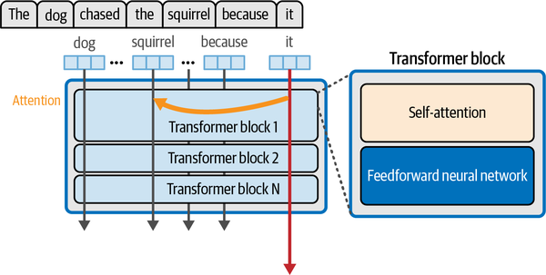
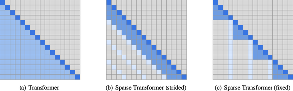
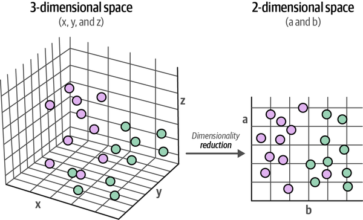
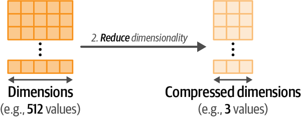

这是一本关于语言模型世界及其在行业中实际应用的杰出指南。它对语言模型的生成、表示和检索应用进行了高度可视化的覆盖，使读者能够快速理解、使用和改进LLM。强烈推荐！
Nils Reimers，Cohere机器学习总监 | sentence-transformers创建者
Jay和Maarten在他们的新书中延续了为复杂主题提供精美插图和深刻描述的传统。通过可运行的代码、时间线和对关键论文的引用，他们的书是任何希望了解大型语言模型构建背后主要技术的人的宝贵资源。
Andrew Ng，DeepLearning.AI创始人
我想不出还有什么书比这本更重要了。在每一页上，我都学到了在这个语言模型时代取得成功的关键知识。
Josh Starmer，StatQuest
如果你想全面了解LLM的一切，别再找了！在这本精彩的书中，Jay和Maarten将带你从零基础到专家水平，了解大型语言模型的历史和最新进展。通过非常直观的解释、出色的现实示例、清晰的插图和全面的代码实验室，这本书揭开了transformer模型、分词器、语义搜索、RAG和许多其他前沿技术的复杂面纱。对于任何对最新AI技术感兴趣的人来说，这是必读之书！
Luis Serrano博士，Serrano Academy创始人兼CEO
这本书是任何对快速发展的生成式AI领域感兴趣的人的必读之书。它专注于文本和视觉嵌入，是算法演进、理论严谨性和实践指导的完美结合。无论你是学生、研究人员还是行业专业人士，这本书都将为你提供提升生成式AI知识所需的用例和解决方案。做得很好！
Chris Fregly，AWS生成式AI首席解决方案架构师
在GenAI革命的核心，这本不可或缺的指南巧妙地平衡了理论与实践，在大型语言模型的广阔领域中导航，为读者提供在AI领域产生即时和变革性影响所需的知识。
Tarun Narayanan Venkatachalam，华盛顿大学AI研究员
及时的阅读材料，可获得语言模型的实践经验。
Emir Muñoz，Genesys
《动手学大型语言模型》通过清晰的解释和实际例子，切穿了AI的炒作。它提供了丰富的图表和视觉辅助工具来补充清晰的解释。实例和代码将其他书籍留下的抽象内容具体化。这本书从简单的入门开始，稳步扩展范围。到最后几章，你将能够自信地微调和构建自己的大型语言模型。
Leland McInnes，Tutte数学与计算研究所研究员
终于有一本书不仅避免了对大型语言模型的肤浅覆盖，还以既易懂又引人入胜的方式深入探索了背景知识。作者们巧妙地创造了一本权威指南，尽管该领域发展迅速，但它仍将是必读书籍。
Prof. DDr. Roman Egger，Smartvisions.at和维也纳Modul大学CEO
作者：Jay Alammar 和 Maarten Grootendorst
版权所有 © 2024 Jay Alammar 和 Maarten Pieter Grootendorst。保留所有权利。
在美国印刷。
由O’Reilly Media, Inc.出版，地址：1005 Gravenstein Highway North, Sebastopol, CA 95472。
O’Reilly书籍可用于教育、商业或销售推广用途。大多数书目也有在线版本（http://oreilly.com）。如需更多信息，请联系我们的企业/机构销售部门：800-998-9938或corporate@oreilly.com。
获取编辑：Nicole Butterfield
开发编辑：Michele Cronin
制作编辑：Ashley Stussy
文字编辑：Charles Roumeliotis
校对：Kim Cofer
索引：BIM Creatives, LLC
内页设计师：David Futato
封面设计师：Karen Montgomery
插画师：Kate Dullea
2024年9月：第一版
发布详情请参见 http://oreilly.com/catalog/errata.csp?isbn=9781098150969。
O’Reilly标志是O’Reilly Media, Inc.的注册商标。《动手学大型语言模型》、封面图像和相关商业外观是O’Reilly Media, Inc.的商标。
本作品中表达的观点是作者的观点，不代表出版商的观点。虽然出版商和作者已善意努力确保本作品中包含的信息和说明准确无误，但出版商和作者不承担错误或遗漏的任何责任，包括但不限于因使用或依赖本作品而造成的损害责任。使用本作品中包含的信息和说明风险自负。如果本作品包含或描述的任何代码示例或其他技术受开源许可证或他人知识产权的约束，您有责任确保您的使用符合此类许可证和/或权利。
978-1-098-15096-9
[LSI]
Large language models (LLMs)对世界产生了深远而广泛的影响。通过使机器能够更好地理解和生成类人语言，LLMs在AI领域开辟了新的可能性，并影响了整个行业。
本书提供了对LLMs世界的全面且高度可视化的介绍，涵盖了概念基础和实际应用。从深度学习之前的词表示到写作时的前沿Transformer架构，我们将探索LLMs的历史和演进。我们深入研究LLMs的内部工作机制，探索它们的架构、训练方法和微调技术。我们还研究了LLMs在文本分类、聚类、主题建模、聊天机器人、搜索引擎等方面的各种应用。
凭借其独特的直觉构建、应用和图解风格的结合，我们希望本书为那些希望探索LLMs激动人心世界的人提供理想的基础。无论您是初学者还是专家，我们都邀请您与我们一起踏上这段开始构建LLMs的旅程。
本书的主要目标是提供对LLMs领域的直觉。语言AI领域的发展速度令人难以置信地快，试图跟上最新技术可能会产生挫败感。相反，我们专注于LLMs的基础知识，旨在提供一个有趣且轻松的学习过程。
为了实现这种直觉优先的理念，我们大量使用视觉语言。插图将帮助为LLMs学习过程中涉及的主要概念和过程提供视觉识别。通过我们的插图叙述方法，我们想带您踏上这个激动人心且可能改变世界的领域之旅。
在整本书中，我们明确区分表示模型和生成语言模型。表示模型是不生成文本但通常用于特定任务用例（如分类）的LLMs，而生成模型是生成文本的LLMs，如GPT模型。尽管生成模型通常是人们想到LLMs时首先想到的，但表示模型仍有很大用途。我们也宽泛地使用大型语言模型中的”大型”一词，经常选择简单地称它们为语言模型，因为大小描述往往相当任意，并不总是表明能力。
本书假设您有一些Python编程经验，并熟悉机器学习的基础知识。重点将是建立强有力的直觉，而不是推导数学方程。因此，插图结合实际示例将推动本书的示例和学习。本书不假设您对PyTorch或TensorFlow等流行深度学习框架有任何先前的了解，也不假设您对生成建模有任何先前的了解。
如果您不熟悉Python，一个很好的起点是Learn Python，在那里您会找到许多关于语言基础的教程。为了进一步简化学习过程，我们在Google Colab上提供了所有代码，这是一个可以运行所有代码而无需在本地安装任何东西的平台。
本书大致分为三个部分。它们在图P-1中进行了说明，为您提供了书籍的完整视图。请注意，每章都可以独立阅读，因此请随意浏览您已经熟悉的章节。
在本书的第一部分中，我们探索了大小语言模型的内部工作机制。我们从该领域的概述和常见技术开始（见第1章），然后转向这些模型的两个核心组件：分词化(tokenization)和嵌入(embeddings)（见第2章）。我们以Jay著名的Illustrated Transformer的更新和扩展版本结束本书的这一部分，该版本深入探讨了这些模型的架构（见第3章）。将介绍许多术语和定义，这些将在整本书中使用。
在本书的第二部分中，我们通过常见用例探索如何使用LLMs。我们使用预训练模型并展示它们的能力，无需对它们进行微调。
您将学习如何将语言模型用于监督分类（见第4章）、文本聚类和主题建模（见第5章）、利用嵌入模型进行语义搜索（见第6章）、生成文本（见第7章和第8章），以及将文本生成的能力扩展到视觉领域（见第9章）。
学习这些个别语言模型能力将为您提供使用LLMs解决问题和构建越来越高级的系统和管道的技能。
在本书的第三部分，我们通过训练和微调各种语言模型来探索高级概念。我们将探索如何创建和微调嵌入模型（见第10章），回顾如何微调BERT进行分类（见第11章），并以几种微调生成模型的方法结束本书（见第12章）。
运行生成模型通常是一项计算密集型任务，需要配备强大GPU的计算机。由于并非所有读者都能获得这些设备，本书中的所有示例都设计为使用在线平台运行，即Google Colaboratory，通常简称为”Google Colab”。在撰写本文时，该平台允许您免费使用NVIDIA GPU（T4）来运行代码。这款GPU具有16 GB的VRAM（显存），这是我们对本书中所有示例所期望的最小VRAM容量。
并非所有章节都需要最少16 GB VRAM，因为一些示例，如训练和微调，比其他示例（如prompt工程）更加计算密集。在仓库中，您会找到每章的最小GPU要求。
所有代码、要求和附加教程都可在本书的仓库中找到：https://github.com/HandsOnLLM/Hands-On-Large-Language-Models。如果您想在本地运行示例，我们建议使用至少16 GB VRAM的NVIDIA GPU。对于本地安装，例如使用conda，您可以按照以下设置创建环境：
conda create -n thellmbook python=3.10
conda activate thellmbook您可以通过分叉或克隆仓库，然后在新创建的Python 3.10环境中运行以下命令来安装所有必要的依赖项：
pip install -r requirements.txt我们在示例中使用开源和专有模型来演示两者的优缺点。对于专有模型，使用OpenAI和Cohere的产品，您需要创建免费账户：
请注意，这两个账户都有速率限制，这些免费API密钥每分钟只允许有限次数的调用。在所有示例中，我们都考虑到了这一点，并在必要时提供了本地替代方案。
对于开源模型，除了第2章中的Llama 2模型外，您无需创建账户。要使用该模型，您需要一个Hugging Face账户：
本书使用以下排版约定：
表示新术语、URL、电子邮件地址、文件名和文件扩展名。
等宽字体用于程序清单，以及在段落中引用程序元素，如变量或函数名、数据库、数据类型、环境变量、语句和关键字。
等宽粗体显示用户应该按字面意思输入的命令或其他文本。
等宽斜体显示应该由用户提供的值或由上下文确定的值替换的文本。
此元素表示提示或建议。
此元素表示一般注释。
补充材料（代码示例、练习等）可在 GitHub 上下载：https://github.com/HandsOnLLM/Hands-On-Large-Language-Models。
如果您在使用代码示例时遇到技术问题，请发送邮件至 support@oreilly.com。
本书旨在帮助您完成工作。一般来说，如果本书提供了示例代码，您可以在自己的程序和文档中使用它。除非您要复制代码的大部分内容，否则无需联系我们获得许可。例如，编写一个使用本书中几段代码的程序不需要许可。销售或分发 O’Reilly 图书中的示例确实需要许可。通过引用本书并引用示例代码来回答问题不需要许可。将本书中大量示例代码纳入您产品的文档中确实需要许可。
我们欣赏但通常不要求归属声明。归属声明通常包括标题、作者、出版商和 ISBN。例如：“《Hands-On Large Language Models》作者 Jay Alammar 和 Maarten Grootendorst (O’Reilly)。版权 2024 Jay Alammar 和 Maarten Pieter Grootendorst，978-1-098-15096-9。”
如果您觉得您对代码示例的使用超出了合理使用范围或上述许可，请随时通过 permissions@oreilly.com 联系我们。
40 多年来，O’Reilly Media 一直提供技术和商业培训、知识和见解，帮助公司获得成功。
我们独特的专家和创新者网络通过书籍、文章和我们的在线学习平台分享他们的知识和专业技能。O’Reilly 的在线学习平台为您提供按需访问现场培训课程、深度学习路径、交互式编码环境，以及来自 O’Reilly 和 200 多家其他出版商的大量文本和视频集合。更多信息请访问 https://oreilly.com。
关于本书的意见和问题，请联系出版商：
我们为本书创建了一个网页，其中列出了勘误表、示例和任何其他信息。您可以在 https://oreil.ly/hands_on_LLMs_1e 访问此页面。
有关我们图书和课程的新闻和信息，请访问 https://oreilly.com。
在 LinkedIn 上找到我们：https://linkedin.com/company/oreilly-media。
在 YouTube 上观看我们：https://youtube.com/oreillymedia。
写这本书对我们来说是一次令人难以置信的经历、合作和旅程。
大型语言模型领域是当今技术中最具活力的领域之一，在写这本书的过程中，我们见证了非凡的进步。然而，尽管变化节奏很快，但基本原理仍然惊人地一致，这使得写作过程特别有趣。我们很感激能够在如此关键的时刻深入探索这个领域。
与我们的 O’Reilly 团队合作非常棒！特别感谢 Michele Cronin 从第一天起就对本书给予的惊人反馈、支持和热情。我们无法要求更好的编辑——你太棒了！谢谢 Nicole Butterfield 启动了这本书并帮助我们在整个写作过程中保持结构化的方法。感谢 Karen Montgomery 创作了我们精彩的封面，我们喜欢那只袋鼠！非常感谢 Kate Dullea 对我们如此耐心，需要多次查看数百个插图。Clare Laylock 及时的早期发布帮助我们看到我们的工作成长，这是一个很大的激励，谢谢。感谢 Ashley Stussy 和 Charles Roumeliotis 在本书最后阶段的开发工作，以及 O’Reilly 所有其他贡献者。
感谢我们出色的技术审阅团队。Harm Buisman、Emir Muñoz、Luba Elliott、Guarav Chawla、Rafael V. Pierre、Luba Elliott、Tarun Narayanan、Nikhil Buduma 和 Patrick Harrison 提供了宝贵的反馈。
我想向我的家人表达最深的感激之情，感谢他们坚定不移的支持和启发。我想特别感谢我的父母 Abdullah 和 Mishael，以及我的阿姨 Hussah 和 Aljoharah。
我感谢帮助我理解和解释本书中复杂概念的朋友、同事和合作者，以及培养支持性学习和分享环境的 Cohere 同事们。感谢 Adrien Morisot、Aidan Gomez、Andy Toulis、Anfal Alatawi、Arash Ahmadian、Bharat Venkitesh、Edward Grefenstette、Ivan Zhang、Joao Araújo、Luis Serrano、Matthias Gallé、Meor Amer、Nick Frosst、Patrick Lewis、Phil Blunsom、Sara Hooker 和 Suhas Pai。
我无法想象在没有我的合著者Maarten非凡才华和不懈努力的情况下，这个项目能够达到如此水平。你能够反复掌握技术细节（从第n个导入依赖的固定版本到LLM量化的最新技术），同时编织出世界上最好的视觉叙述之一，这绝对令人叹为观止。
最后，向沙特阿拉伯利雅得令人难以置信的咖啡馆文化致敬，为我提供咖啡因和一个从黎明到午夜专注工作的好地方。我在那里阅读了大部分论文并加深了理解（向你致敬，Elixir Bunn）。
我想首先向我的合著者Jay表达衷心的感谢。你的见解不仅使这个项目成为可能，而且令人难以置信地充实。这段旅程简直太棒了，与你合作是绝对的快乐。
我要真诚地感谢我在IKNL的出色同事们在这段旅程中的持续支持。特别要提到Harm——我们周一早晨讨论这本书的咖啡休息时间是持续鼓励的源泉。
感谢我的家人和朋友的坚定支持，特别是我的父母。爸爸，尽管你面临挑战，但当我最需要时，你总是能找到方法在我身边，谢谢你。妈妈，我们作为有抱负的作家进行的对话很棒，激励我的程度超出了你的想象。感谢你们两人的无尽支持和鼓励。
最后，我无法用言语充分表达对我美好妻子Ilse的感激之情。亲爱的，你无穷的热情和耐心是传奇的，特别是当我连续几个小时喋喋不休地谈论最新的LLM发展时。你是我最大的支持。向我了不起的女儿Sarah道歉。年仅两岁的你已经听了比任何人一生中应该承受的更多关于大型语言模型的内容！我承诺我们会用无尽的游戏时间和冒险来弥补。
[1] J. Alammar. “Machine learning research communication via illustrated and interactive web articles.” Beyond Static Papers: Rethinking How We Share Scientific Understanding in ML. ICLR 2021 Workshop (2021).
人类正处于转折点。从2012年开始，构建AI系统（使用深度神经网络）的发展加速，到这个十年末，它们产生了第一个能够写出与人类所写文章无法区分的软件系统。这个系统是一个叫做生成式预训练Transformer 2或GPT-2的AI模型。2022年标志着ChatGPT的发布，它展示了这项技术将如何深刻地彻底改变我们与技术和信息的互动方式。在五天内达到一百万活跃用户，然后在两个月内达到一亿活跃用户，这种新型AI模型起初是类人聊天机器人，但很快演变为我们处理翻译、文本生成、摘要等常见任务方法的重大转变。它成为程序员、教育工作者和研究人员的宝贵工具。
ChatGPT的成功是前所未有的，推广了对其背后技术的更多研究，即大型语言模型(LLMs)。专有和开源模型都在稳步发布，接近并最终赶上ChatGPT的性能。毫不夸张地说，几乎所有注意力都集中在LLMs上。
因此，2023年对我们来说将永远被称为彻底改变我们领域的一年——语言人工智能(Language AI)，这是一个以开发能够理解和生成人类语言的系统为特征的领域。
然而，LLMs已经存在了一段时间，较小的模型至今仍然相关。LLMs远不止是单一模型，在语言AI领域还有许多其他值得探索的技术和模型。
在这本书中，我们旨在为读者提供对LLMs和语言AI领域基础知识的扎实理解。本章作为本书其余部分的框架，将介绍我们将在各章中使用的概念和术语。
但主要是，我们打算在本章中回答以下问题：
什么是语言AI？
什么是大型语言模型？
大型语言模型的常见用例和应用是什么？
我们如何自己使用大型语言模型？
术语人工智能 (AI) 通常用来描述专门执行接近人类智能任务的计算机系统，如语音识别、语言翻译和视觉感知。它是软件的智能，与人类智能相对应。
以下是人工智能学科创始人之一对其更正式的定义：
[人工智能是]制造智能机器，特别是智能计算机程序的科学和工程。它与使用计算机理解人类智能的类似任务相关，但AI不必局限于生物学上可观察的方法。
John McCarthy, 20071
由于AI不断演进的本质，这个术语已被用来描述各种系统，其中一些可能并不真正体现智能行为。例如，计算机游戏中的角色（NPCs [非玩家角色]）经常被称为AI，尽管许多只不过是if-else语句。
Language AI指AI的一个子领域，专注于开发能够理解、处理和生成人类语言的技术。术语Language AI通常可以与自然语言处理 (NLP)互换使用，这得益于机器学习方法在解决语言处理问题方面的持续成功。
我们使用术语Language AI来涵盖技术上可能不是LLMs但仍对该领域产生重大影响的技术，比如检索系统如何能给LLMs超能力（见第8章）。
在本书中，我们想要关注那些在塑造Language AI领域中发挥重要作用的模型。这意味着探索的不仅仅是孤立的LLMs。然而，这带来了一个问题：什么是大语言模型？为了在本章开始回答这个问题，让我们首先探索Language AI的历史。
Language AI的历史包含了许多旨在表示和生成语言的发展和模型，如图1-1所示。
然而，语言对计算机来说是一个棘手的概念。文本本质上是非结构化的，当用零和一（单个字符）表示时会失去其含义。因此，在Language AI的历史中，很大程度上专注于以结构化方式表示语言，使其更容易被计算机使用。这些Language AI任务的例子在图1-2中提供。
我们的Language AI历史始于一种叫做词袋模型的技术，这是一种表示非结构化文本的方法。2它最早在1950年代左右被提及，但在2000年代左右变得流行。
词袋模型的工作原理如下：假设我们有两个句子，我们想为其创建数值表示。词袋模型的第一步是token化，即将句子分解为单个词或子词（tokens）的过程，如图1-3所示。


最常见的tokenization方法是通过空格分割来创建单个单词。然而，这有其缺点，因为一些语言，如中文，在单个单词周围没有空格。在下一章中，我们将深入讨论tokenization以及该技术如何影响语言模型。如图1-4所示，在tokenization之后，我们将每个句子中的所有唯一单词组合起来创建一个词汇表，可以用来表示句子。
使用我们的词汇表，我们简单地计算每个句子中一个单词出现的频率，实际上创建了一个词袋。因此，词袋模型旨在创建数字形式的文本表示，也称为向量或向量表示，如图1-5所示。在整本书中，我们将这些类型的模型称为表示模型。
尽管词袋是一种经典方法，但它绝不是完全过时的。在第5章中，我们将探讨它如何仍然可以用来补充更新的语言模型。
词袋，虽然是一种优雅的方法，但有一个缺陷。它认为语言只不过是一个几乎字面意义上的词袋，忽略了文本的语义性质或含义。
2013年发布的word2vec是在embeddings中捕获文本含义的首次成功尝试之一。Embeddings是试图捕获数据含义的向量表示。为此，word2vec通过在大量文本数据（如整个Wikipedia）上训练来学习单词的语义表示。
为了生成这些语义表示，word2vec利用神经网络。这些网络由处理信息的相互连接的节点层组成。如图1-6所示，神经网络可以有许多层，其中每个连接根据输入具有特定的权重。这些权重通常被称为模型的参数。
使用这些神经网络，word2vec通过查看它们在给定句子中倾向于与哪些其他单词相邻出现来生成单词embeddings。我们首先为词汇表中的每个单词分配一个向量embedding，比如为每个单词分配50个值，并用随机值初始化。然后在每个训练步骤中，如图1-7所示，我们从训练数据中取单词对，模型尝试预测它们是否可能在句子中成为邻居。
在这个训练过程中，word2vec学习单词之间的关系，并将该信息提炼到embedding中。如果两个单词倾向于有相同的邻居，它们的embeddings将彼此更接近，反之亦然。在第2章中，我们将更仔细地研究word2vec的训练过程。
产生的embeddings捕获了词语的含义，但这究竟意味着什么？为了说明这一现象，让我们稍微简化一下，想象我们有几个词的embeddings，即”apple”和”baby”。Embeddings试图通过表示词语的属性来捕获含义。例如，“baby”这个词可能在”新生儿”和”人类”属性上得分很高，而”apple”这个词在这些属性上得分很低。
如图1-8所示，embeddings可以有许多属性来表示词语的含义。由于embeddings的大小是固定的，它们的属性被选择来创建词语的心理表征。

实际上，这些属性通常相当模糊，很少与单一实体或人类可识别的概念相关。然而，这些属性结合在一起，对计算机来说是有意义的，并作为将人类语言翻译成计算机语言的好方法。
Embeddings非常有用，因为它们允许我们测量两个词之间的语义相似性。使用各种距离度量，我们可以判断一个词与另一个词的接近程度。如图1-9所示，如果我们将这些embeddings压缩成二维表示，你会注意到含义相似的词往往更接近。在第5章中，我们将探索如何将这些embeddings压缩到n维空间。

有许多类型的embeddings，如词embeddings和句子embeddings，用于表示不同的抽象级别（词语与句子），如图1-10所示。
例如，词袋模型在文档级别创建embeddings，因为它表示整个文档。相比之下，word2vec算法仅为词语生成embeddings。
在整本书中，embeddings将发挥核心作用，因为它们被用于许多用例，如分类（见第4章）、聚类（见第5章）以及语义搜索和检索增强生成（见第8章）。在第2章中，我们将首次深入研究token embeddings。

word2vec的训练过程创建了静态的、可下载的词语表示。例如，“bank”这个词无论在什么上下文中使用都将始终具有相同的embedding。然而，“bank”既可以指金融银行，也可以指河岸。它的含义，因此它的embeddings，应该根据上下文而改变。
通过递归神经网络(RNNs)实现了编码这种文本的一个步骤。这些是神经网络的变体，可以将序列作为额外输入进行建模。
为了实现这一点，这些RNN用于两个任务：编码或表示输入句子，以及解码或生成输出句子。[图1-11]通过展示像”I love llamas”这样的句子如何翻译成荷兰语”Ik hou van lama’s”来说明这个概念。

这个架构中的每一步都是自回归的。在生成下一个词时，这个架构需要消费所有先前生成的词，如[图1-12]所示。

编码步骤旨在尽可能好地表示输入，以embedding形式生成上下文，作为解码器的输入。为了生成这种表示，它将词的embedding作为输入，这意味着我们可以使用word2vec进行初始表示。在[图1-13]中，我们可以观察到这个过程。注意输入是如何按顺序逐个处理的，输出也是如此。

然而，这个上下文embedding使得处理更长的句子变得困难，因为它仅仅是一个表示整个输入的单一embedding。2014年，引入了一个叫做注意力机制的解决方案，极大地改进了原始架构。注意力机制允许模型专注于输入序列中彼此相关的部分（相互”关注”）并放大它们的信号，如[图1-14]所示。注意力机制有选择性地确定哪些词在给定句子中最重要。
例如，输出词”lama’s”是荷兰语的”llamas”，这就是为什么两者之间的注意力很高。类似地，词”lama’s”和”I”的注意力较低，因为它们关联性不强。在[第3章]中，我们将更深入地讨论注意力机制。
通过在解码步骤中添加这些注意力机制，RNN可以为序列中与潜在输出相关的每个输入词生成信号。解码器不再只接收上下文embedding，而是接收所有输入词的隐藏状态。这个过程在[图1-15]中得到了演示。
因此，在生成”Ik hou van lama’s”期间，RNN跟踪它主要关注的词来执行翻译。与word2vec相比，这种架构通过”关注”整个句子，允许表示文本的顺序性质及其出现的上下文。然而，这种顺序性质阻碍了模型训练期间的并行化。
注意力机制的真正力量，以及驱动大型语言模型惊人能力的核心，首先在2017年发布的著名论文“Attention is all you need”中得到了探索。作者提出了一种叫做Transformer的网络架构，它完全基于注意力机制，并移除了我们之前看到的循环网络。与循环网络相比，Transformer可以并行训练，这极大地加速了训练过程。
在Transformer中，编码器和解码器组件层叠在一起，如[图1-16]所示。该架构仍然是autoregressive（自回归）的，需要在生成新词之前消费每个已生成的词。
现在，编码器和解码器块都围绕注意力机制(attention)构建，而不是利用带有注意力特性的RNN。Transformer中的编码器块由两部分组成：self-attention（自注意力）和feedforward neural network（前馈神经网络），如[图1-17]所示。

与之前的注意力方法相比，自注意力可以关注单个序列内的不同位置，从而更容易、更准确地表示输入序列，如[图1-18]所示。它不是一次处理一个token，而是可以一次性查看整个序列。

与编码器相比，解码器有一个额外的层，该层关注编码器的输出（以找到输入的相关部分）。如[图1-19]所示，这个过程类似于我们之前讨论的RNN注意力解码器。
如[图1-20]所示，解码器中的自注意力层掩盖未来位置，因此它只关注较早的位置，以防止在生成输出时泄露信息。
这些构建块共同创建了Transformer架构，并且是Language AI中许多有影响力的模型的基础，如BERT和GPT-1，我们将在本章后面介绍。在本书中，我们将使用的大多数模型都是基于Transformer的模型。
Transformer架构远比我们迄今为止探索的要复杂得多。在第[2]章和第[3]章中，我们将深入了解Transformer模型如此有效的诸多原因，包括multi-head attention（多头注意力）、positional embeddings（位置嵌入）和layer normalization（层归一化）。
原始的Transformer模型是一个编码器-解码器架构，很好地服务于翻译任务，但无法轻易用于其他任务，如文本分类。
2018年，引入了一种名为双向编码器表示变换器(BERT)的新架构，它可以用于各种任务，并将成为未来多年语言AI的基础。6 BERT是一种仅编码器架构，专注于语言表示，如图1-21所示。这意味着它只使用编码器并完全移除了解码器。

这些编码器块与我们之前看到的相同：自注意力机制后跟前馈神经网络。输入包含一个额外的token，即[CLS]或分类token，用作整个输入的表示。通常，我们使用这个[CLS]
token作为输入嵌入，用于在特定任务（如分类）上微调模型。
训练这些编码器堆栈可能是一项困难的任务，BERT通过采用一种叫做掩码语言建模的技术来解决这个问题（参见第2章和第11章）。如图1-22所示，这种方法掩盖输入的一部分供模型预测。这个预测任务很困难，但允许BERT创建更准确的输入（中间）表示。

这种架构和训练程序使BERT和相关架构在表示上下文语言方面表现出色。类BERT模型通常用于迁移学习，这涉及首先对其进行语言建模的预训练，然后针对特定任务进行微调。例如，通过在整个维基百科上训练BERT，它学会理解文本的语义和上下文性质。然后，如图1-23所示，我们可以使用那个预训练模型为特定任务（如文本分类）进行微调。

预训练模型的一个巨大好处是大部分训练工作已经为我们完成了。在特定任务上的微调通常计算密集度较低，需要的数据也较少。此外，类BERT模型在其架构的几乎每个步骤都生成嵌入。这也使BERT模型成为特征提取机器，无需在特定任务上对其进行微调。
仅编码器模型（如BERT）将在本书的许多部分中使用。多年来，它们一直被用于常见任务，包括分类任务（参见第4章）、聚类任务（参见第5章）和语义搜索（参见第8章）。
在整本书中，我们将把仅编码器模型称为表示模型，以区别于仅解码器模型，我们称之为生成模型。请注意，主要区别不在于底层架构和这些模型的工作方式。表示模型主要专注于表示语言，例如，通过创建嵌入，通常不生成文本。相比之下，生成模型主要专注于生成文本，通常不被训练来生成嵌入。
表示模型和生成模型及组件之间的区别也将在大多数图像中显示。表示模型是蓝绿色，带有小向量图标（表示其对向量和嵌入的关注），而生成模型是粉色，带有小聊天图标（表示其生成能力）。
与BERT的编码器架构类似，在2018年提出了一种仅解码器架构来针对生成任务。这种架构被称为生成式预训练Transformer (GPT)，因其生成能力而得名（现在被称为GPT-1以区别于后续版本）。如图1-24所示，它堆叠解码器块，类似于BERT的编码器堆叠架构。
GPT-1在包含7,000本书籍和Common Crawl（一个大型网页数据集）的语料库上进行训练。生成的模型包含1.17亿个参数。每个参数都是一个数值，代表模型对语言的理解。
如果其他条件保持不变，我们预期更多的参数会极大地影响语言模型的能力和性能。考虑到这一点，我们看到越来越大的模型以稳定的速度发布。如图1-25所示，GPT-2拥有15亿个参数，GPT-3紧随其后使用了1750亿个参数。

这些生成式仅解码器模型，特别是”大型”模型，通常被称为大型语言模型 (LLMs)。正如我们将在本章后面讨论的，LLM这个术语不仅保留给生成模型（仅解码器），也包括表示模型（仅编码器）。
生成式LLMs作为序列到序列机器，接收一些文本并尝试自动完成它。虽然这是一个便利的功能，但它们的真正力量在于被训练为聊天机器人时显现出来。不是完成文本，如果它们能被训练来回答问题会怎样？通过微调这些模型，我们可以创建能够遵循指令的指令或聊天模型。
如图1-26所示，生成的模型可以接收用户查询（提示）并输出最可能跟随该提示的响应。因此，你经常会听到生成模型是完成模型。

这些完成模型的一个重要部分是被称为上下文长度或上下文窗口的概念。上下文长度表示模型能够处理的最大token数量，如图1-27所示。大的上下文窗口允许将整个文档传递给LLM。请注意，由于这些模型的自回归性质，随着新token的生成，当前上下文长度会增加。

LLM对该领域产生了巨大影响，随着ChatGPT (GPT-3.5)的发布、采用和媒体报道，一些人称2023年为生成式AI之年。当我们提到ChatGPT时，我们实际上在谈论产品而不是底层模型。当它首次发布时，它由GPT-3.5 LLM驱动，此后已发展到包括几个更高性能的变体，如GPT-4。
GPT-3.5并不是在生成式AI之年产生影响的唯一模型。如图1-28所示，开源和专有LLM都以令人难以置信的速度来到了人们面前。这些开源基础模型通常被称为基础模型，可以针对特定任务进行微调，比如遵循指令。

除了广受欢迎的Transformer架构之外，还出现了新的有前景的架构，如Mamba和RWKV。这些新颖的架构试图达到Transformer级别的性能，同时具有额外的优势，如更大的上下文窗口或更快的推理速度。
这些发展体现了该领域的演进，并展示了2023年作为AI真正忙碌的一年。我们竭尽全力才能跟上Language AI内外的众多发展。
因此，本书探索的不仅仅是最新的LLM。我们将探索如何使用其他模型，如嵌入模型、仅编码器模型，甚至词袋模型来增强LLM的能力。
在我们对语言AI近期历史的探索中，我们观察到主要是生成式仅解码器（Transformer）模型通常被称为大语言模型。特别是当它们被认为是”大型”的时候。在实践中，这似乎是一个相当局限的描述！
如果我们创建一个与GPT-3具有相同能力但小10倍的模型会怎样？这样的模型会不会不属于”大型”语言模型的分类？
同样，如果我们发布一个与GPT-4一样大但能够执行准确文本分类却没有任何生成能力的模型会怎样？如果它的主要功能不是语言生成，它还能算作大型”语言模型”吗，即使它仍然表示文本？
这些定义的问题在于我们排除了有能力的模型。我们给一个模型或另一个模型起什么名字并不会改变它的行为方式。
由于”大语言模型”这个术语的定义往往随着新模型的发布而演变，我们希望明确说明它在本书中的含义。“大型”是任意的，今天可能被认为是大型的模型明天可能就是小型的。目前同一件事有很多名称，对我们来说，“大语言模型”也包括那些不生成文本且可以在消费级硬件上运行的模型。
因此，除了涵盖生成式模型外，本书还将涵盖参数少于10亿且不生成文本的模型。我们将探索其他模型，如嵌入模型、表示模型，甚至词袋模型如何被用来增强LLMs。
传统机器学习通常涉及为特定任务（如分类）训练模型。如图1-29所示，我们认为这是一个一步过程。

相比之下，创建LLMs通常至少包含两个步骤：
任何经过第一步（预训练）的模型，我们都认为是预训练模型，这也包括微调模型。这种两步训练方法在图1-30中可视化。

可以添加额外的微调步骤来进一步使模型与用户偏好保持一致，我们将在第12章中探讨。
LLMs的本质使它们适合广泛的任务。通过文本生成和提示，几乎感觉像是你的想象力就是极限。为了说明这一点，让我们探索一些常见的任务和技术：
LLM应用程序创建起来令人非常满足，因为它们部分受限于您能想象的事物。随着这些模型变得更加准确，在角色扮演和编写儿童读物等创意用例中实际使用它们变得越来越有趣。
LLM的影响已经并且可能继续是显著的，这是由于它们的广泛采用。当我们探索LLM的惊人能力时，重要的是要牢记它们的社会和伦理影响。需要考虑的几个关键点：
在您开发和使用LLM时，我们想要强调伦理考虑的重要性，并敦促您了解更多关于LLM和AI系统的安全和负责任使用。
到目前为止我们多次提到的计算资源通常与您系统上可用的GPU相关。强大的GPU（图形卡）将使训练和使用LLM更加高效和快速。
在选择GPU时，一个重要组件是您可用的VRAM（视频随机存取存储器）数量。这指的是您在GPU上可用的内存量。实际上，您拥有的VRAM越多越好。原因是如果您没有足够的VRAM，某些模型根本无法使用。
由于训练和微调大语言模型是一个昂贵的过程，从GPU角度来说，那些没有强大GPU的人经常被称为”GPU贫困户”。这说明了训练这些庞大模型时对计算资源的激烈竞争。例如，为了创建Llama 2系列模型，Meta使用了A100-80 GB GPU。假设租用这样的GPU成本为1.50美元/小时，创建这些模型的总成本将超过5,000,000美元！
不幸的是，没有单一的规则来确定特定模型需要多少VRAM。这取决于模型的架构和大小、压缩技术、上下文大小、运行模型的后端等。
这本书是为GPU贫困户准备的！我们将使用用户可以运行的模型，而不需要最昂贵的GPU或庞大的预算。为此，我们将在Google Colab实例中提供所有代码。在撰写本文时，Google Colab的免费实例将为您提供一个具有16 GB VRAM的T4 GPU，这是我们建议的最小VRAM量。
与LLM交互是使用它们以及理解其内部工作原理的重要组成部分。由于该领域的众多发展，出现了大量与LLM通信的技术、方法和包。在整本书中，我们打算探索最常见的技术，包括使用专有（闭源）和公开可用的开放模型。
闭源LLM是不与公众共享其权重和架构的模型。它们由特定组织开发，其底层代码保密。此类模型的例子包括OpenAI的GPT-4和Anthropic的Claude。这些专有模型通常得到重要商业支持的支持，并且已在其服务中开发和集成。
您可以通过与LLM通信的接口访问这些模型，称为API（应用程序编程接口），如图1-31所示。例如，要在Python中使用ChatGPT，您可以使用OpenAI的包与服务接口，而无需直接访问它。

专有模型的一个巨大优势是用户不需要强大的GPU来使用LLM。提供商负责托管和运行模型，通常拥有更多计算资源。不需要有关托管和使用模型的专业知识，这大大降低了准入门槛。此外，由于这些组织的重大投资，这些模型往往比其开源对应物更高性能。
缺点是这可能是一项昂贵的服务。提供商管理托管LLM的风险和成本，这通常转化为付费服务。此外，由于无法直接访问模型，因此没有方法自己微调它。最后，您的数据与提供商共享，这在许多常见用例中是不理想的，例如共享患者数据。
开放LLM是与公众共享其权重和架构供使用的模型。它们仍然由特定组织开发，但通常共享其创建或本地运行模型的代码——具有不同级别的许可，可能允许或不允许模型的商业用途。Cohere的Command R、Mistral模型、Microsoft的Phi和Meta的Llama模型都是开放模型的例子。
对于什么真正代表开源模型，目前仍在持续讨论中。例如，一些公开共享的模型具有限制性的商业许可证，这意味着该模型不能用于商业用途。对许多人来说，这并不是开源的真正定义，开源应该指使用这些模型不应有任何限制。同样，模型训练所用的数据以及其源代码也很少被共享。
您可以下载这些模型并在您的设备上使用它们，只要您有一个能够处理这类模型的强大GPU，如图1-32所示。
这些本地模型的一个主要优势是您（用户）对模型拥有完全控制权。您可以在不依赖API连接的情况下使用模型，对其进行微调，并通过它运行敏感数据。您不依赖任何服务，并且对导致模型输出的过程拥有完全的透明度。这种优势通过促进这些过程的大型社区得到增强，例如Hugging Face，展示了协作努力的可能性。
缺点是您需要强大的硬件来运行这些模型，在训练或微调它们时需要更多的硬件。此外，设置和使用这些模型需要特定知识（我们将在本书中涉及）。
我们通常倾向于在可能的地方使用开源模型。这种自由让我们可以尝试各种选项，探索内部工作原理，并在本地使用模型，相比使用专有LLM，这可以说提供了更多好处。
与闭源LLM相比，开源LLM需要您使用某些包来运行它们。在2023年，发布了许多不同的包和框架，它们各自以自己的方式与LLM交互并利用LLM。筛选数百个潜在有价值的框架并不是最愉快的体验。
因此，您甚至可能在这本书中错过您最喜欢的框架！
我们不是试图涵盖存在的每个LLM框架（有太多了，而且数量还在继续增长），而是旨在为您提供利用LLM的坚实基础。我们的想法是在阅读本书后，您可以轻松掌握大多数其他框架，因为它们都以非常相似的方式工作。
我们试图实现的直觉是其中的重要组成部分。如果您对LLM以及在实践中使用常见框架有直观的理解，那么扩展到其他框架应该是一项简单的任务。
更具体地说，我们专注于后端包。这些是没有GUI（图形用户界面）的包，专为在您的设备上高效加载和运行任何LLM而创建，例如llama.cpp、LangChain，以及许多框架的核心Hugging Face Transformers。
我们主要涵盖通过代码与大型语言模型交互的框架。虽然这有助于您学习这些框架的基础知识，但有时您只想要一个类似ChatGPT的界面来使用本地LLM。幸运的是，有许多出色的框架允许这样做。一些例子包括text-generation-webui、KoboldCpp和LM Studio。
使用语言模型的一个重要组成部分是选择它们。查找和下载LLM的主要来源是Hugging Face Hub。Hugging
Face是著名的Transformers包背后的组织，多年来推动了语言模型的整体发展。顾名思义，该包建立在我们在”语言AI的近期历史”中讨论的transformers框架之上。
在撰写本文时，您将在Hugging Face平台上找到超过800,000个用于许多不同目的的模型，从LLM和计算机视觉模型到处理音频和表格数据的模型。在这里，您几乎可以找到任何开源LLM。
虽然我们将在本书中探索各种模型，但让我们从生成模型开始编写第一行代码。本书使用的主要生成模型是 Phi-3-mini，这是一个相对较小（38亿参数）但性能相当不错的模型。[16] 由于其体积小，该模型可以在VRAM少于8GB的设备上运行。如果您执行量化（一种压缩类型，我们将在第7章和第12章进一步讨论），您甚至可以使用少于6GB的VRAM。此外，该模型采用MIT许可证，允许该模型在商业用途中无约束地使用！
请记住，新的和改进的LLM会频繁发布。为了确保本书保持最新，大多数示例都设计为适用于任何LLM。我们还将在与本书相关的存储库中突出显示不同的模型供您试用。
让我们开始吧！当您使用LLM时，会加载两个模型：
生成模型本身
其底层tokenizer
tokenizer负责在将输入文本馈送到生成模型之前将其分割为tokens。您可以在Hugging Face网站上找到tokenizer和模型，只需要传递相应的ID。在这种情况下，我们使用”microsoft/Phi-3-mini-4k-instruct”作为模型的主要路径。
我们可以使用transformers来加载tokenizer和模型。请注意，我们假设您有NVIDIA
GPU
(device_map="cuda")，但您可以选择不同的设备。如果您没有GPU访问权限，可以使用我们在本书存储库中提供的免费Google
Colab笔记本：
from transformers import AutoModelForCausalLM, AutoTokenizer
# 加载模型和tokenizer
model = AutoModelForCausalLM.from_pretrained(
"microsoft/Phi-3-mini-4k-instruct",
device_map="cuda",
torch_dtype="auto",
trust_remote_code=True,
)
tokenizer = AutoTokenizer.from_pretrained("microsoft/Phi-3-mini-4k-instruct")运行代码将开始下载模型，根据您的互联网连接可能需要几分钟。
虽然我们现在有足够的条件开始生成文本，但transformers中有一个很好的技巧可以简化这个过程，即transformers.pipeline。它将模型、tokenizer和文本生成过程封装到一个函数中：
from transformers import pipeline
# 创建pipeline
generator = pipeline(
"text-generation",
model=model,
tokenizer=tokenizer,
return_full_text=False,
max_new_tokens=500,
do_sample=False
)以下参数值得注意：
return_full_textFalse，不会返回提示，而只会返回模型的输出。
max_new_tokensdo_sampleFalse，模型将始终选择下一个最可能的token。在第6章中，我们探索了几个采样参数，这些参数在模型输出中引入了一些创造性。
要生成我们的第一个文本，让我们指示模型讲一个关于鸡的笑话。为此，我们将提示格式化为字典列表，其中每个字典都与对话中的一个实体相关。我们的角色是”user”，我们使用”content”键来定义我们的提示：
# 提示（用户输入/查询）
messages = [
{"role": "user", "content": "Create a funny joke about chickens."}
]
# 生成输出
output = generator(messages)
print(output[0]["generated_text"])Why don't chickens like to go to the gym? Because they can't crack the egg-sistence of it!就是这样！本书中生成的第一个文本是一个关于鸡的不错笑话。
在本书的第一章中，我们深入探讨了LLM对语言AI领域产生的革命性影响。它显著改变了我们处理翻译、分类、摘要等任务的方法。通过语言AI的近期历史，我们探索了几种类型LLM的基础，从简单的词袋表示到使用神经网络的更复杂表示。
我们讨论了注意力机制作为在模型内编码上下文的一个步骤，这是使LLM如此强大的重要组成部分。我们涉及了使用这种令人难以置信机制的两个主要模型类别：表示模型（仅编码器）如BERT和生成模型（仅解码器）如GPT系列模型。在本书中，这两个类别都被认为是大型语言模型。
总的来说，本章提供了Language AI领域的全景概览，包括其应用、社会和伦理影响，以及运行此类模型所需的资源。我们最后使用Phi-3生成了第一个文本，这个模型将在整本书中使用。
在接下来的两章中，您将了解一些底层过程。我们首先探索[第2章]中的tokenization和embeddings，这是Language AI领域中两个经常被低估但至关重要的组件。[第3章]将深入探讨语言模型，您将发现生成文本所使用的精确方法。
[1] J. McCarthy (2007). “What is artificial intelligence?” 检索自 https://oreil.ly/C7sja 和 https://oreil.ly/n9X8O。
[2] Fabrizio Sebastiani. “Machine learning in automated text categorization.” ACM Computing Surveys (CSUR) 34.1 (2002): 1–47.
[3] Tomas Mikolov et al. “Efficient estimation of word representations in vector space.” arXiv preprint arXiv:1301.3781 (2013).
[4] Dzmitry Bahdanau, Kyunghyun Cho, and Yoshua Bengio. “Neural machine translation by jointly learning to align and translate.” arXiv preprint arXiv:1409.0473 (2014).
[5] Ashish Vaswani et al. “Attention is all you need.” Advances in Neural Information Processing Systems 30 (2017).
[6] Jacob Devlin et al. “BERT: Pre-training of deep bidirectional transformers for language understanding.” arXiv preprint arXiv:1810.04805 (2018).
[7] Alec Radford et al. “Improving language understanding by generative pre-training”, (2018).
[8] Alec Radford et al. “Language models are unsupervised multitask learners.” OpenAI Blog 1.8 (2019): 9.
[9] Tom Brown et al. “Language models are few-shot learners.” Advances in Neural Information Processing Systems 33 (2020): 1877–1901.
[10] OpenAI, “Gpt-4 technical report.” arXiv preprint arXiv:2303.08774 (2023).
[11] Albert Gu and Tri Dao. “Mamba: Linear-time sequence modeling with selective state spaces.” arXiv preprint arXiv:2312.00752 (2023).
[12] 参见“A Visual Guide to Mamba and State Space Models”，这是一个关于Mamba作为Transformer架构替代方案的图解和可视化指南。
[13] Bo Peng et al. “RWKV: Reinventing RNNs for the transformer era.” arXiv preprint arXiv:2305.13048 (2023).
[14] Hugo Touvron et al. “Llama 2: Open foundation and fine-tuned chat models.” arXiv preprint arXiv:2307.09288 (2023).
[15] 这些模型训练了3,311,616个GPU小时，这指的是在GPU上训练模型所需的时间乘以可用GPU数量。
[16] Marah Abdin et al. “Phi-3 technical report: A highly capable language model locally on your phone.” arXiv preprint arXiv:2404.14219 (2024).
Tokens和embeddings是使用大语言模型(LLMs)的两个核心概念。正如我们在第一章所看到的，它们不仅对理解Language AI的历史很重要，而且如果没有对tokens和embeddings的良好理解，我们就无法清楚地了解LLMs是如何工作的、如何构建的，以及它们未来的发展方向，如图2-1所示。

在本章中，我们将更仔细地研究什么是tokens以及用于支持LLMs的tokenization方法。然后我们将深入探讨著名的word2vec embedding方法，它先于现代LLMs，并看看它如何扩展token embeddings的概念来构建商业推荐系统，为您使用的许多应用程序提供支持。最后，我们从token embeddings转向句子或文本embeddings，其中整个句子或文档可以有一个代表它的向量——实现了语义搜索和主题建模等应用，我们将在本书第二部分中看到。
在撰写本文时，大多数人与语言模型交互的方式是通过一个web游乐场，它提供用户和语言模型之间的聊天界面。您可能会注意到，模型不会一次性产生其输出响应；它实际上是一次生成一个token。
但是tokens不仅是模型的输出，它们也是模型看到其输入的方式。发送给模型的文本提示首先被分解为tokens，正如我们现在将看到的。
从外部来看，生成式 LLM接受输入提示并生成响应，如我们在[图2-2]中所见。
然而，在提示呈现给语言模型之前，它首先必须经过一个tokenizer(分词器)，将其分解成片段。你可以在OpenAI Platform上找到显示GPT-4分词器的示例。 如果我们向其输入文本，它会显示[图2-3]中的输出，其中每个token用不同的颜色显示。

让我们看一个代码示例并亲自与这些token交互。在这里我们将下载一个LLM，并了解如何在使用LLM生成文本之前对输入进行tokenize(分词)。
让我们首先加载我们的模型及其分词器，就像我们在[第1章]中所做的那样：
from transformers import AutoModelForCausalLM, AutoTokenizer
# 加载模型和分词器
model = AutoModelForCausalLM.from_pretrained(
"microsoft/Phi-3-mini-4k-instruct",
device_map="cuda",
torch_dtype="auto",
trust_remote_code=True,
)
tokenizer = AutoTokenizer.from_pretrained("microsoft/Phi-3-mini-4k-instruct")然后我们可以继续进行实际的生成。我们首先声明我们的提示，然后对其进行分词，然后将这些token传递给模型，模型生成其输出。在这种情况下，我们要求模型仅生成20个新token：
prompt = "Write an email apologizing to Sarah for the tragic gardening mishap. Explain how it happened.<|assistant|>"
# 对输入提示进行分词
input_ids = tokenizer(prompt, return_tensors="pt").input_ids.to("cuda")
# 生成文本
generation_output = model.generate(
input_ids=input_ids,
max_new_tokens=20
)
# 打印输出
print(tokenizer.decode(generation_output[0]))输出：
<s> Write an email apologizing to Sarah for the tragic gardening mishap. Explain how it happened.<|assistant|> Subject: My Sincere Apologies for the Gardening Mishap
Dear粗体文本是模型生成的20个token。
查看代码，我们可以看到模型实际上并没有接收文本提示。相反，分词器处理了输入提示，并在变量input_ids中返回了模型所需的信息，模型将其用作输入。
让我们打印input_ids来看看它内部包含什么：
tensor([[ 1, 14350, 385, 4876, 27746, 5281, 304, 19235, 363, 278, 25305, 293, 16423, 292, 286, 728, 481, 29889, 12027, 7420, 920, 372, 9559, 29889, 32001]], device='cuda:0')这揭示了LLM响应的输入，如[图2-4]所示的一系列整数。每一个都是特定token（字符、单词或单词的一部分）的唯一ID。这些ID引用分词器内部包含它所知道的所有token的表格。

如果我们想检查这些ID，我们可以使用分词器的decode方法将ID翻译回我们可以阅读的文本：
for id in input_ids[0]:
print(tokenizer.decode(id))这会打印（每个token在单独的行上）：
<s>
Write
an
email
apolog
izing
to
Sarah
for
the
trag
ic
garden
ing
m
ish
ap
.
Exp
lain
how
it
happened
.
<|assistant|>这是分词器如何分解我们的输入提示。请注意以下几点：
第一个token是ID
1（<s>），这是一个表示文本开始的特殊token。
一些token是完整的单词（例如，Write、an、email）。
一些token是单词的一部分（例如，apolog、izing、trag、ic）。
标点符号字符是它们自己的token。
注意空格字符没有自己的token。相反，部分token（如”izing”和”ic”）在开头有一个特殊的隐藏字符，表示它们与文本中前面的token相连。没有该特殊字符的token被假定在它们前面有一个空格。
在输出端，我们也可以通过打印generation_output变量来检查模型生成的token。这显示了输入token以及输出token（我们将用粗体突出显示新token）：
tensor([[ 1, 14350, 385, 4876, 27746, 5281, 304, 19235, 363, 278,
25305, 293, 16423, 292, 286, 728, 481, 29889, 12027, 7420,
920, 372, 9559, 29889, 32001, 3323, 622, 29901, 1619, 317,
3742, 406, 6225, 11763, 363, 278, 19906, 292, 341, 728,
481, 13, 13, 29928, 799]], device='cuda:0')这显示模型生成了token 3323，'Sub'，然后是token
622，'ject'。它们一起形成了单词'Subject'。然后是token
29901，即冒号':'…等等。就像在输入端一样，我们需要在输出端使用tokenizer将token
ID翻译成实际文本。我们使用tokenizer的decode方法来做到这一点。我们可以传递给它一个单独的token
ID或它们的列表：
print(tokenizer.decode(3323))
print(tokenizer.decode(622))
print(tokenizer.decode([3323, 622]))
print(tokenizer.decode(29901))这输出：
Sub
ject
Subject
:有三个主要因素决定tokenizer如何分解输入提示。
首先，在模型设计时，模型的创建者选择一种tokenization方法。流行的方法包括字节对编码(BPE)（GPT模型广泛使用）和WordPiece（BERT使用）。这些方法的相似之处在于它们旨在优化一个高效的token集合来表示文本数据集，但它们以不同的方式实现。
其次，在选择方法后，我们需要做出许多tokenizer设计选择，如词汇量大小和使用什么特殊token。更多内容请参见[“比较训练好的LLM Tokenizer”]。
第三，tokenizer需要在特定数据集上进行训练，以建立它可以用来表示该数据集的最佳词汇表。即使我们设置相同的方法和参数，在英语文本数据集上训练的tokenizer也会与在代码数据集或多语言文本数据集上训练的tokenizer不同。
除了用于将输入文本处理到语言模型中，tokenizer还用于语言模型的输出，将结果token ID转换为与其关联的输出单词或token，如图2-5所示。
我们刚才讨论的tokenization方案称为子词tokenization。这是最常用的tokenization方案，但不是唯一的方案。四种值得注意的tokenization方式如图2-6所示。让我们来看看它们：
这种方法在word2vec等早期方法中很常见，但在NLP中使用得越来越少。然而，它的实用性使得它在NLP之外的用例中得到使用，比如推荐系统，我们将在本章后面看到。
单词标记化的一个挑战是，在tokenizer训练完成后，它可能无法处理数据集中出现的新单词。这也导致词汇表中包含大量差异很小的tokens（例如，apology、apologize、apologetic、apologist）。后一个挑战通过子词标记化得到解决，因为它有一个apolog的token，然后有与许多其他tokens共同使用的后缀tokens（例如，-y、-ize、-etic、-ist），从而产生更具表达力的词汇表。
这种方法包含完整和部分单词。除了前面提到的词汇表达能力之外，这种方法的另一个好处是它能够通过将新token分解为更小的字符来表示新单词，这些字符往往是词汇表的一部分。

这是另一种能够成功处理新单词的方法，因为它有原始字母可以作为后备。虽然这使得表示更容易标记化，但使建模更加困难。使用子词标记化的模型可以将”play”表示为一个token，而使用字符级tokens的模型需要建模信息来拼写出”p-l-a-y”，同时还要建模序列的其余部分。
子词tokens在能够在Transformer模型有限的上下文长度内容纳更多文本方面比字符tokens具有优势。因此，对于上下文长度为1,024的模型，使用子词标记化可能比使用字符tokens容纳大约三倍的文本（子词tokens平均每个token约三个字符）。
这里要强调的一个区别是：一些子词tokenizers也将字节作为tokens包含在其词汇表中，作为遇到无法以其他方式表示的字符时的最终构建块。例如，GPT-2和RoBERTa tokenizers就是这样做的。这并不会使它们成为无标记化的字节级tokenizers，因为它们不使用这些字节来表示所有内容，只表示一个子集，正如我们将在下一节中看到的。
如果您想深入了解tokenizers，在Designing Large Language Model Applications中有更详细的讨论。
我们之前指出了决定tokenizer中出现的tokens的三个主要因素：标记化方法、我们用来初始化tokenizer的参数和特殊tokens，以及tokenizer训练的数据集。让我们比较和对比一些实际的、已训练的tokenizers，看看这些选择如何改变它们的行为。这种比较将向我们展示，较新的tokenizers已经改变了它们的行为以提高模型性能，我们也将看到专门的模型（例如代码生成模型）通常需要专门的tokenizers。
我们将使用多个tokenizers来编码以下文本：
text = """
English and CAPITALIZATION
🎵鸟
show_tokens False None elif == >= else: two tabs:” ” three tabs: ” ”
12.0*50=600
““”
这将让我们看到每个分词器如何处理不同类型的tokens：
- 大小写
- 英语以外的语言
- 表情符号
- 编程代码，包含关键字和通常用于缩进的空白字符（例如在Python等语言中）
- 数字和数字字符
- 特殊tokens。这些是具有除表示文本之外作用的独特tokens。它们包括指示文本开始或文本结束的tokens（这是模型向系统发出信号表明它已完成此生成的方式），或其他功能，正如我们将看到的。
让我们从较老的分词器到较新的分词器，看看它们如何分词这些文本，以及这可能对语言模型说明什么。我们将对文本进行分词，然后使用此函数打印每个带有彩色背景颜色的token：
colors_list = [ ‘102;194;165’, ‘252;141;98’, ‘141;160;203’, ‘231;138;195’, ‘166;216;84’, ‘255;217;47’]
def show_tokens(sentence, tokenizer_name): tokenizer = AutoTokenizer.from_pretrained(tokenizer_name) token_ids = tokenizer(sentence).input_ids for idx, t in enumerate(token_ids): print( f’1b[0;30;48;2;{colors_list[idx % len(colors_list)]}m’ + tokenizer.decode(t) + ‘1b[0m’, end=’ ’ )
### BERT base model (uncased) (2018)
[HuggingFace模型中心链接](https://oreil.ly/gQK_N)
分词方法：WordPiece，在["日语和韩语语音搜索"](https://oreil.ly/4nE6b)中引入：
词汇表大小：30,522
特殊tokens：
`unk_token [UNK]`
: 分词器没有特定编码的未知token。
`sep_token [SEP]`
: 一个分隔符，用于需要给模型提供两个文本的特定任务（在这些情况下，模型被称为交叉编码器）。一个例子是重新排序，我们将在第8章中看到。
`pad_token [PAD]`
: 用于填充模型输入中未使用位置的填充token（因为模型期望特定长度的输入，即其上下文大小）。
`cls_token [CLS]`
: 用于分类任务的特殊分类token，我们将在第4章中看到。
`mask_token [MASK]`
: 在训练过程中用于隐藏tokens的掩码token。
分词后的文本：
`[CLS]`{.greenhl} `english`{.orangehl} `and`{.purplehl} `capital`{.pinkhl} `##ization`{.celeryhl} `[UNK]`{.yellowhl} `[UNK]`{.greenhl} `show`{.orangehl} `_`{.purplehl} `token`{.pinkhl} `##s`{.celeryhl} `false`{.yellowhl} `none`{.greenhl} `eli`{.orangehl} `##f`{.purplehl} `=`{.pinkhl} `=`{.celeryhl} `>`{.yellowhl} `=`{.greenhl} `else`{.orangehl} `:`{.purplehl} `two`{.pinkhl} `tab`{.celeryhl} `##s`{.yellowhl} `:`{.greenhl} `"`{.orangehl} `"`{.purplehl} `three`{.pinkhl} `tab`{.celeryhl} `##s`{.yellowhl} `:`{.greenhl} `"`{.orangehl} `"`{.purplehl} `12`{.pinkhl} `.`{.celeryhl} `0`{.yellowhl} `*`{.greenhl} `50`{.orangehl} `=`{.purplehl} `600`{.pinkhl} `[SEP]`{.celeryhl}
BERT发布了两个主要版本：cased（保留大小写）和uncased（所有大写字母首先转换为小写字母）。使用uncased（也是更受欢迎的）版本的BERT分词器，我们注意到以下几点：
- 换行符消失了，这使得模型对换行符中编码的信息视而不见（例如，每轮对话都在新行中的聊天日志）。
- 所有文本都是小写的。
- 单词"capitalization"被编码为两个子tokens：`capital`{.pinkhl} `##ization`{.celeryhl}。`##`{.greyhl}字符用于表示此token是连接到其前面token的部分token。这也是表示空格位置的方法，因为假定前面没有`##`{.greyhl}的tokens前面有空格。
- 表情符号和中文字符消失了，被替换为`[UNK]`{.greyhl}特殊token，表示"未知token"。
### BERT base model (cased) (2018)
[HuggingFace模型中心链接](https://oreil.ly/nvFOZ)
分词方法：WordPiece
词汇表大小：28,996
特殊tokens：与uncased版本相同
分词后的文本：
`[CLS]`{.greenhl} `English`{.orangehl} `and`{.purplehl} `CA`{.pinkhl} `##PI`{.celeryhl} `##TA`{.yellowhl} `##L`{.greenhl} `##I`{.orangehl} `##Z`{.purplehl} `##AT`{.pinkhl} `##ION`{.celeryhl} `[UNK]`{.yellowhl} `[UNK]`{.greenhl} `show`{.orangehl} `_`{.purplehl} `token`{.pinkhl} `##s`{.celeryhl} `F`{.yellowhl} `##als`{.greenhl} `##e`{.orangehl} `None`{.purplehl} `el`{.pinkhl} `##if`{.celeryhl} `=`{.yellowhl} `=`{.greenhl} `>`{.orangehl} `=`{.purplehl} `else`{.pinkhl} `:`{.celeryhl} `two`{.yellowhl} `ta`{.greenhl} `##bs`{.orangehl} `:`{.purplehl} `"`{.pinkhl} `"`{.celeryhl} `Three`{.yellowhl} `ta`{.greenhl} `##bs`{.orangehl} `:`{.purplehl} `"`{.pinkhl} `"`{.celeryhl} `12`{.yellowhl} `.`{.greenhl} `0`{.orangehl} `*`{.purplehl} `50`{.pinkhl} `=`{.celeryhl} `600`{.yellowhl} `[SEP]`{.greenhl}
BERT tokenizer的大小写版本主要区别在于包含大写token。
- 注意"CAPITALIZATION"现在被表示为八个token：`CA`{.pinkhl} `##PI`{.celeryhl} `##TA`{.yellowhl} `##L`{.greenhl} `##I`{.orangehl} `##Z`{.purplehl} `##AT`{.pinkhl} `##ION`{.celeryhl}。
- 两个BERT tokenizer都在输入前后包装起始`[CLS]`{.greenhl} token和结束`[SEP]`{.greenhl} token。`[CLS]`和`[SEP]`是用于包装输入文本的工具token，它们各有自己的用途。`[CLS]`代表classification（分类），因为它有时用于句子分类。`[SEP]`代表separator（分隔符），因为它用于在某些需要向模型传递两个句子的应用中分隔句子（例如，在[第8章]中，我们将使用`[SEP]` token来分隔查询文本和候选结果）。
### GPT-2 (2019) {#gpt-2-2019 .calibre40}
[HuggingFace模型中心的模型链接](https://oreil.ly/hhJ-I)
Tokenization[]{#calibre_link-1813 .calibre9 contenteditable="false" primary="tokens and tokenizers" secondary="comparing trained tokenizers" tertiary="GPT-2" data-type="indexterm"}[]{#calibre_link-955 .calibre9 contenteditable="false" primary="GPTs (generative pre-trained transformers)" secondary="GPT-2" data-type="indexterm"}方法：Byte pair encoding (BPE)，在["Neural machine translation of rare words with subword units"](https://oreil.ly/qCxr4)中引入。
词汇表大小：50,257
特殊token：`<|endoftext|>`
`English`{.orangehl} `and`{.purplehl} `CAP`{.pinkhl} `ITAL`{.celeryhl} `IZ`{.yellowhl} `ATION`{.greenhl}
`�`{.purplehl} `�`{.pinkhl} `�`{.celeryhl} `�`{.yellowhl} `�`{.greenhl} `�`{.orangehl}
`show`{.pinkhl} `_`{.celeryhl} `t`{.yellowhl} `ok`{.greenhl} `ens`{.orangehl} `False`{.purplehl} `None`{.pinkhl} `el`{.celeryhl} `if`{.yellowhl} `==`{.greenhl} `>=`{.orangehl} `else`{.purplehl} `:`{.pinkhl} `two`{.celeryhl} `tabs`{.yellowhl} `:"`{.greenhl} `"`{.celeryhl} `Three`{.yellowhl} `tabs`{.greenhl} `:`{.orangehl} `"`{.purplehl} `"`{.pinkhl}
`12`{.yellowhl} `.`{.greenhl} `0`{.orangehl} `*`{.purplehl} `50`{.pinkhl} `=`{.celeryhl} `600`{.yellowhl}
使用GPT-2 tokenizer，我们注意到以下几点：
- 换行符在tokenizer中有表示。
- 大小写得到保留，单词"CAPITALIZATION"被表示为四个token。
- 🎵鸟字符现在每个都由多个token表示。虽然我们看到这些token打印为`�`{.greyhl}字符，但它们实际上代表不同的token。例如，🎵 emoji被分解为token ID 8582、236和113的token。tokenizer能够成功地从这些token重构原始字符。我们可以通过打印`tokenizer.decode([8582, 236, 113])`来看到这一点，它会打印出🎵。
- 两个制表符被表示为两个token（该词汇表中的token编号197），四个空格被表示为三个token（编号220），最后一个空格是结束引号字符token的一部分。
- 两个制表符被表示为两个token（该词汇表中的token编号197），四个空格被表示为三个token（编号220），最后一个空格是结束引号字符token的一部分。
###### 注意 {#note-4 .calibre23}
[]{#calibre_link-1851 .calibre9 contenteditable="false" primary="tokens and tokenizers" secondary="white space characters" data-type="indexterm"}[]{#calibre_link-1938 .calibre9 contenteditable="false" primary="whitespace characters" data-type="indexterm"}空白字符的意义是什么？这些对于模型理解或生成代码很重要。使用单个token表示四个连续空白字符的模型更适应Python代码数据集。虽然模型可以将其表示为四个不同的token，但这确实使建模变得更困难，因为模型需要跟踪缩进级别，这通常导致性能下降。这是tokenization选择可以帮助模型在特定任务上改进的例子。
### Flan-T5 (2022) {#flan-t5-2022 .calibre40}
Tokenization[]{#calibre_link-1811 .calibre9 contenteditable="false" primary="tokens and tokenizers" secondary="comparing trained tokenizers" tertiary="Flan-T5" data-type="indexterm"}[]{#calibre_link-867 .calibre9 contenteditable="false" primary="Flan-T5 model" data-type="indexterm"}方法：[Flan-T5](https://oreil.ly/cmWPA)使用称为SentencePiece的tokenizer实现，[]{#calibre_link-1625 .calibre9 contenteditable="false" primary="SentencePiece" data-type="indexterm"}在["SentencePiece: A simple and language independent subword tokenizer and detokenizer for neural text processing"](https://oreil.ly/2aNI5)中引入，它支持BPE和[]{#calibre_link-1913 .calibre9 contenteditable="false" primary="unigram language model" data-type="indexterm"}*unigram language model*（在["Subword regularization: Improving neural network translation models with multiple subword candidates"](https://oreil.ly/B4WiL)中描述）。
词汇表大小：32,100
特殊token：
- `unk_token <unk>`
- `pad_token <pad>`
Tokenized文本：
`English`{.greenhl} `and`{.orangehl} `CA`{.purplehl} `PI`{.pinkhl} `TAL`{.celeryhl} `IZ`{.yellowhl} `ATION`{.greenhl} `<unk>`{.purplehl} `<unk>`{.celeryhl} `show`{.yellowhl} `_`{.greenhl} `to`{.orangehl} `ken`{.purplehl} `s`{.pinkhl} `Fal`{.celeryhl} `s`{.yellowhl} `e`{.greenhl} `None`{.orangehl} `e`{.pinkhl} `l`{.celeryhl} `if`{.yellowhl} `=`{.greenhl} `=`{.orangehl} `>`{.purplehl} `=`{.pinkhl} `else`{.celeryhl} `:`{.yellowhl} `two`{.greenhl} `tab`{.orangehl} `s`{.purplehl} `:`{.pinkhl} `"`{.celeryhl} `"`{.yellowhl} `Three`{.greenhl} `tab`{.orangehl} `s`{.purplehl} `:`{.pinkhl} `"`{.celeryhl} `"`{.yellowhl} `12.`{.greenhl} `0`{.orangehl} `*`{.purplehl} `50`{.pinkhl} `=`{.celeryhl} `600`{.yellowhl} `</s>`{.orangehl}
Flan-T5系列模型使用SentencePiece方法。我们注意到以下情况：
- 没有换行符或空白符token；这会让模型在处理代码时面临挑战。
- 表情符号和中文字符都被替换为`<unk>`token，使模型完全无法识别它们。
### GPT-4 (2023) {#gpt-4-2023 .calibre40}
分词方法：BPE
词汇表大小：略超过100,000
特殊token：
- `<|endoftext|>`
- 填充中间token。这三个token使LLM不仅可以根据前面的文本生成完成内容，还能考虑后面的文本。这种方法在论文["Efficient training of language models to fill in the middle"](https://oreil.ly/7S7ZZ)中有更详细的解释；其确切细节超出了本书的范围。这些特殊token是：
- `<|fim_prefix|>`
- `<|fim_middle|>`
- `<|fim_suffix|>`
分词后的文本：
`English`{.orangehl} `and`{.purplehl} `CAPITAL`{.pinkhl} `IZATION`{.celeryhl}
`�`{.greenhl} `�`{.orangehl} `�`{.purplehl} `�`{.pinkhl} `�`{.celeryhl} `�`{.yellowhl}
`show`{.orangehl} `_tokens`{.purplehl} `False`{.pinkhl} `None`{.celeryhl} `elif`{.yellowhl} `==`{.greenhl} `>=`{.orangehl} `else`{.purplehl} `:`{.pinkhl} `two`{.celeryhl} `tabs`{.yellowhl} `:"`{.greenhl} ` `{.orangehl}`"`{.purplehl} `Three`{.pinkhl} `tabs`{.celeryhl} `:`{.yellowhl} `"`{.greenhl} ` `{.orangehl}`"`{.purplehl}
`12`{.pinkhl} `.`{.celeryhl} `0`{.yellowhl} `*`{.greenhl} `50`{.orangehl} `=`{.purplehl} `600`{.pinkhl}
GPT-4的分词器与其前身GPT-2分词器行为类似。一些区别是：
- GPT-4分词器将四个空格表示为单个token。实际上，它为每个空白符序列都有特定的token，最多包含83个空白符的列表。
- Python关键字`elif`{.yellowhl}在GPT-4中有自己的token。这一点和前一点都源于模型对代码和自然语言的双重关注。
- GPT-4分词器使用更少的token来表示大多数词汇。这里的例子包括"CAPITALIZATION"（两个token对比四个）和"tokens"（一个token对比三个）。
- 回顾我们对GPT-2分词器关于Ł token的讨论。
### StarCoder2 (2024) {#starcoder2-2024 .calibre40}
[StarCoder2](https://oreil.ly/hBZ9V)是一个专注于代码生成的150亿参数模型，在论文["StarCoder 2 and the stack v2: The next generation"](https://oreil.ly/k4b-T)中有描述，该工作延续了原始StarCoder的研究，后者在["StarCoder: May the source be with you!"](https://oreil.ly/RJmCn)中有描述。
分词方法：字节对编码(Byte pair encoding, BPE)
词汇表大小：49,152
特殊token示例：
- `<|endoftext|>`
- 填充中间token：
- `<fim_prefix>`
- `<fim_middle>`
- `<fim_suffix>`
- `<fim_pad>`
- 在表示代码时，管理上下文很重要。一个文件可能会调用定义在不同文件中的函数。因此模型需要某种方式来识别同一代码仓库中不同文件的代码，同时区分不同仓库中的代码。这就是为什么StarCoder2使用特殊token来表示仓库名称和文件名：
- `<filename>`
- `<reponame>`
- `<gh_stars>`
分词后的文本：
`English`{.orangehl} `and`{.purplehl} `CAPITAL`{.pinkhl} `IZATION`{.celeryhl}
`�`{.greenhl} `�`{.orangehl} `�`{.purplehl} `�`{.celeryhl} `�`{.yellowhl}
`show`{.orangehl} `_`{.purplehl} `tokens`{.pinkhl} `False`{.celeryhl} `None`{.yellowhl} `elif`{.greenhl} `==`{.orangehl} `>=`{.purplehl} `else`{.pinkhl} `:`{.celeryhl} `two`{.yellowhl} `tabs`{.greenhl} `:"`{.orangehl} ` `{.purplehl}`"`{.pinkhl} `Three`{.celeryhl} `tabs`{.yellowhl} `:`{.greenhl} `"`{.orangehl} ` `{.purplehl}`"`{.pinkhl}
`1`{.yellowhl} `2`{.greenhl} `.`{.orangehl} `0`{.purplehl} `*`{.pinkhl} `5`{.celeryhl} `0`{.yellowhl} `=`{.greenhl} `6`{.orangehl} `0`{.purplehl} `0`{.pinkhl}
这是一个专注于代码生成的编码器：
- 与GPT-4类似，它将空白符列表编码为单个token。
- 与我们目前看到的所有情况的主要区别是，每个数字都被分配自己的token（所以600变成`6`{.orangehl} `0`{.purplehl} `0`{.pinkhl}）。这里的假设是这会导致更好的数字和数学表示。例如在GPT-2中，数字870被表示为单个token。但871被表示为两个token（`8`{.greyhl}和`71`{.greyhl}）。你可以直观地看出这对模型可能造成困惑以及它如何表示数字。
### Galactica {#galactica .calibre40}
[Galactica模型](https://oreil.ly/I6IXt)在["Galactica: A large language model for science"](https://oreil.ly/gWRzV)中描述，专注于科学知识，并在许多科学论文、参考资料和知识库上进行训练。它特别关注tokenization，使其对所代表数据集的细微差别更加敏感。例如，它包含用于引用、推理、数学、氨基酸序列和DNA序列的特殊token。
分词方法：字节对编码(Byte pair encoding, BPE)
词汇表大小：50,000
特殊token：
- `<s>`
- `<pad>`
- `</s>`
- `<unk>`
- 引用：引用被包装在两个特殊token中：
- `[START_REF]`
- `[END_REF]`
- 论文中的一个使用示例是：`Recurrent neural networks, long short-term memory [START_REF]Long Short-Term Memory, Hochreiter[END_REF]`
- 逐步推理：
- `<work>`是一个有趣的token，模型将其用于思维链推理。
分词后的文本：
`English`{.orangehl} `and`{.purplehl} `CAP`{.pinkhl} `ITAL`{.celeryhl} `IZATION`{.yellowhl}
`�`{.orangehl} `�`{.purplehl} `�`{.pinkhl} `�`{.celeryhl} `�`{.yellowhl} `�`{.greenhl} `�`{.orangehl}
`show`{.pinkhl} `_`{.celeryhl} `tokens`{.yellowhl} `False`{.greenhl} `None`{.orangehl} `elif`{.purplehl} `==`{.celeryhl} `>`{.greenhl} `=`{.orangehl} `else`{.purplehl} `:`{.pinkhl} `two`{.celeryhl} `t`{.yellowhl} `abs`{.greenhl} `:`{.orangehl} `"`{.purplehl} ` `{.pinkhl}`"`{.celeryhl} `Three`{.yellowhl} `t`{.greenhl} `abs`{.orangehl} `:`{.purplehl} `"`{.celeryhl} ` `{.yellowhl}`"`{.greenhl}
`1`{.purplehl} `2`{.pinkhl} `.`{.celeryhl} `0`{.yellowhl} `*`{.greenhl} `5`{.orangehl} `0`{.purplehl} `=`{.pinkhl} `6`{.celeryhl} `0`{.yellowhl} `0`{.greenhl}
Galactica tokenizer的行为类似于StarCoder2，因为它考虑了代码。它也以相同的方式编码空白符：为不同长度的空白符序列分配单个token。不同之处在于它也对制表符这样做。因此，在我们迄今为止看到的所有tokenizer中，它是唯一一个为由两个制表符组成的字符串(`'\t\t'`)分配单个token的。
### Phi-3 (和 Llama 2)
本书中研究的[Phi-3模型](https://oreil.ly/GI-xn)重用了[Llama 2](https://oreil.ly/fezbc)的tokenizer，但添加了许多特殊token。
分词方法：字节对编码(Byte pair encoding, BPE)
词汇表大小：32,000
特殊token：
- `<|endoftext|>`
- 聊天token：随着聊天LLM在2023年兴起，LLM的对话性质开始成为主要用例。tokenizer已适应这一方向，通过添加指示对话中的回合和每个说话者角色的token。这些特殊token包括：
- `<|user|>`
- `<|assistant|>`
- `<|system|>`
我们现在可以通过并排查看所有这些例子来回顾我们的巡览：
----------------------------------- --------------------------------------------------------------------------------------------------------------------------------------------------------------------------------------------------------------------------------------------------------------------------------------------------------------------------------------------------------------------------------------------------------------------------------------------------------------------------------------------------------------------------------------------------------------------------------------------------------------------------------------------------------------------------------------------------------------------------------------------------------------------------------------------------------------------------------------------------------------------------------
BERT base model (uncased)\ `[CLS]`{.greenhl1} `english`{.orangehl1} `and`{.purplehl1} `capital`{.pinkhl1} `##ization`{.celeryhl1} `[UNK]`{.yellowhl1} `[UNK]`{.greenhl1} `show`{.orangehl1} `_`{.purplehl1} `token`{.pinkhl1} `##s`{.celeryhl1} `false`{.yellowhl1} `none`{.greenhl1} `eli`{.orangehl1} `##f`{.purplehl1} `=`{.pinkhl1} `=`{.celeryhl1} `>`{.yellowhl1} `=`{.greenhl1} `else`{.orangehl1} `:`{.purplehl1} `two`{.pinkhl1} `tab`{.celeryhl1} `##s`{.yellowhl1} `:`{.greenhl1} `"`{.orangehl1} `"`{.purplehl1} `three`{.pinkhl1} `tab`{.celeryhl1} `##s`{.yellowhl1} `:`{.greenhl1} `"`{.orangehl1} `"`{.purplehl1} `12`{.pinkhl1} `.`{.celeryhl1} `0`{.yellowhl1} `*`{.greenhl1} `50`{.orangehl1} `=`{.purplehl1} `600`{.pinkhl1} `[SEP]`{.celeryhl1}\
\ \
BERT base model (cased) `[CLS]`{.greenhl1} `English`{.orangehl1} `and`{.purplehl1} `CA`{.pinkhl1} `##PI`{.celeryhl1} `##TA`{.yellowhl1} `##L`{.greenhl1} `##I`{.orangehl1} `##Z`{.purplehl1} `##AT`{.pinkhl1} `##ION`{.celeryhl1} `[UNK]`{.yellowhl1} `[UNK]`{.greenhl1} `show`{.orangehl1} `_`{.purplehl1} `token`{.pinkhl1} `##s`{.celeryhl1} `F`{.yellowhl1} `##als`{.greenhl1} `##e`{.orangehl1} `None`{.purplehl1} `el`{.pinkhl1} `##if`{.celeryhl1} `=`{.yellowhl1} `=`{.greenhl1} `>`{.orangehl1} `=`{.purplehl1} `else`{.pinkhl1} `:`{.celeryhl1} `two`{.yellowhl1} `ta`{.greenhl1} `##bs`{.orangehl1} `:`{.purplehl1} `"`{.pinkhl1} `"`{.celeryhl1} `Three`{.yellowhl1} `ta`{.greenhl1} `##bs`{.orangehl1} `:`{.purplehl1} `"`{.pinkhl1} `"`{.celeryhl1} `12`{.yellowhl1} `.`{.greenhl1} `0`{.orangehl1} `*`{.purplehl1} `50`{.pinkhl1} `=`{.celeryhl1} `600`{.yellowhl1} `[SEP]`{.greenhl1}
GPT-2 `English`{.orangehl1} `and`{.purplehl1} `CAP`{.pinkhl1} `ITAL`{.celeryhl1} `IZ`{.yellowhl1} `ATION`{.greenhl1}
`�`{.purplehl1} `�`{.pinkhl1} `�`{.celeryhl1} `�`{.yellowhl1} `�`{.greenhl1} `�`{.orangehl1}
`show`{.pinkhl1} `_`{.celeryhl1} `t`{.yellowhl1} `ok`{.greenhl1} `ens`{.orangehl1} `False`{.purplehl1} `None`{.pinkhl1} `el`{.celeryhl1} `if`{.yellowhl1} `==`{.greenhl1} `>=`{.orangehl1} `else`{.purplehl1} `:`{.pinkhl1} `two`{.celeryhl1} `tabs`{.yellowhl1} `:"`{.greenhl1} `"`{.celeryhl1} `Three`{.yellowhl1} `tabs`{.greenhl1} `:`{.orangehl1} `"`{.purplehl1} `"`{.pinkhl1}
`12`{.yellowhl1} `.`{.greenhl1} `0`{.orangehl1} `*`{.purplehl1} `50`{.pinkhl1} `=`{.celeryhl1} `600`{.yellowhl1}
FLAN-T5 `English`{.greenhl1} `and`{.orangehl1} `CA`{.purplehl1} `PI`{.pinkhl1} `TAL`{.celeryhl1} `IZ`{.yellowhl1} `ATION`{.greenhl1} `<unk>`{.purplehl1} `<unk>`{.celeryhl1} `show`{.yellowhl1} `_`{.greenhl1} `to`{.orangehl1} `ken`{.purplehl1} `s`{.pinkhl1} `Fal`{.celeryhl1} `s`{.yellowhl1} `e`{.greenhl1} `None`{.orangehl1} `e`{.pinkhl1} `l`{.celeryhl1} `if`{.yellowhl1} `=`{.greenhl1} `=`{.orangehl1} `>`{.purplehl1} `=`{.pinkhl1} `else`{.celeryhl1} `:`{.yellowhl1} `two`{.greenhl1} `tab`{.orangehl1} `s`{.purplehl1} `:`{.pinkhl1} `"`{.celeryhl1} `"`{.yellowhl1} `Three`{.greenhl1} `tab`{.orangehl1} `s`{.purplehl1} `:`{.pinkhl1} `"`{.celeryhl1} `"`{.yellowhl1} `12.`{.greenhl1} `0`{.orangehl1} `*`{.purplehl1} `50`{.pinkhl1} `=`{.celeryhl1} `600`{.yellowhl1} `</s>`{.orangehl1}
GPT-4 `English`{.orangehl1} `and`{.purplehl1} `CAPITAL`{.pinkhl1} `IZATION`{.celeryhl1}
`�`{.greenhl1} `�`{.orangehl1} `�`{.purplehl1} `�`{.pinkhl1} `�`{.celeryhl1} `�`{.yellowhl1}
`show`{.orangehl1} `_tokens`{.purplehl1} `False`{.pinkhl1} `None`{.celeryhl1} `elif`{.yellowhl1} `==`{.greenhl1} `>=`{.orangehl1} `else`{.purplehl1} `:`{.pinkhl1} `two`{.celeryhl1} `tabs`{.yellowhl1} `:"`{.greenhl1} ` `{.orangehl1}`"`{.purplehl1} `Three`{.pinkhl1} `tabs`{.celeryhl1} `:`{.yellowhl1} `"`{.greenhl1} ` `{.orangehl1}`"`{.purplehl1}
`12`{.pinkhl1} `.`{.celeryhl1} `0`{.yellowhl1} `*`{.greenhl1} `50`{.orangehl1} `=`{.purplehl1} `600`{.pinkhl1}
StarCoder `English`{.orangehl1} `and`{.purplehl1} `CAPITAL`{.pinkhl1} `IZATION`{.celeryhl1}
`�`{.greenhl1} `�`{.orangehl1} `�`{.purplehl1} `�`{.celeryhl1} `�`{.yellowhl1}
`show`{.orangehl1} `_`{.purplehl1} `tokens`{.pinkhl1} `False`{.celeryhl1} `None`{.yellowhl1} `elif`{.greenhl1} `==`{.orangehl1} `>=`{.purplehl1} `else`{.pinkhl1} `:`{.celeryhl1} `two`{.yellowhl1} `tabs`{.greenhl1} `:"`{.orangehl1} ` `{.purplehl1}`"`{.pinkhl1} `Three`{.celeryhl1} `tabs`{.yellowhl1} `:`{.greenhl1} `"`{.orangehl1} ` `{.purplehl1}`"`{.pinkhl1}
`1`{.yellowhl1} `2`{.greenhl1} `.`{.orangehl1} `0`{.purplehl1} `*`{.pinkhl1} `5`{.celeryhl1} `0`{.yellowhl1} `=`{.greenhl1} `6`{.orangehl1} `0`{.purplehl1} `0`{.pinkhl1}
Galactica `English`{.orangehl1} `and`{.purplehl1} `CAP`{.pinkhl1} `ITAL`{.celeryhl1} `IZATION`{.yellowhl1}
`�`{.orangehl1} `�`{.purplehl1} `�`{.pinkhl1} `�`{.celeryhl1} `�`{.yellowhl1} `�`{.greenhl1} `�`{.orangehl1}
`show`{.pinkhl1} `_`{.celeryhl1} `tokens`{.yellowhl1} `False`{.greenhl1} `None`{.orangehl1} `elif`{.purplehl1} `==`{.celeryhl1} `>`{.greenhl1} `=`{.orangehl1} `else`{.purplehl1} `:`{.pinkhl1} `two`{.celeryhl1} `t`{.yellowhl1} `abs`{.greenhl1} `:`{.orangehl1} `"`{.purplehl1} ` `{.pinkhl1}`"`{.celeryhl1} `Three`{.yellowhl1} `t`{.greenhl1} `abs`{.orangehl1} `:`{.purplehl1} `"`{.celeryhl1} ` `{.yellowhl1}`"`{.greenhl1}
`1`{.purplehl1} `2`{.pinkhl1} `.`{.celeryhl1} `0`{.yellowhl1} `*`{.greenhl1} `5`{.orangehl1} `0`{.purplehl1} `=`{.pinkhl1} `6`{.celeryhl1} `0`{.yellowhl1} `0`{.greenhl1}
Phi-3 和 Llama 2 `<s>`{.greenhl1}
`English`{.pinkhl1} `and`{.celeryhl1} `C`{.yellowhl1} `AP`{.greenhl1} `IT`{.orangehl1} `AL`{.purplehl1} `IZ`{.pinkhl1} `ATION`{.celeryhl1}
`�`{.greenhl1} `�`{.orangehl1} `�`{.purplehl1} `�`{.pinkhl1} `�`{.yellowhl1} `�`{.greenhl1} `�`{.orangehl1}
## 分词器属性 {#tokenizer-properties .calibre18}
之前对经过训练的分词器进行的引导式介绍展示了实际分词器之间的多种差异。但是什么决定了它们的分词行为呢？有三大类设计选择决定了分词器如何分解文本：分词方法、初始化参数和分词器针对的数据领域。
### 分词方法 {#tokenization-methods .calibre40}
正如我们所见，有多种分词方法，其中字节对编码(BPE)是比较流行的一种。每种方法都概述了如何选择适当的token集合来表示数据集的算法。你可以在Hugging Face的[分词器总结页面](https://oreil.ly/-vbn0)上找到所有这些方法的精彩概述。
### 分词器参数 {#tokenizer-parameters .calibre40}
在选择分词方法后，LLM设计师需要对分词器的参数做出一些决定。这些参数包括：
词汇表大小
: 分词器的词汇表中要保留多少个token？(30K和50K经常被用作词汇表大小值，但我们越来越多地看到像100K这样更大的尺寸。)
特殊token
: 我们希望模型跟踪什么特殊token？我们可以添加任意数量的这些token，特别是如果我们想为特殊用例构建LLM。常见选择包括：
- 文本开始token（例如，`<s>`）
- 文本结束token
- 填充token
- 未知token
- CLS token
- 掩码token
: 除了这些，LLM设计师还可以添加有助于更好地建模他们试图关注的问题领域的token，正如我们在Galactica的`<work>`和`[START_REF]` token中看到的那样。
大小写
: 在英语等语言中，我们如何处理大小写？我们应该将所有内容转换为小写吗？（姓名大小写通常携带有用信息，但我们是否想在单词的全大写版本上浪费token词汇表空间？）
### 数据的领域 {#the-domain-of-the-data .calibre40}
即使我们选择相同的方法和参数，分词器的行为也会根据它训练的数据集而有所不同（甚至在我们开始模型训练之前）。前面提到的分词方法通过优化词汇表来表示特定数据集来工作。从我们的引导式介绍中，我们已经看到这对代码和多语言文本等数据集的影响。
例如，对于代码，我们已经看到面向文本的分词器可能会像这样对缩进空格进行分词（我们将用颜色突出显示一些token）：
`def add_numbers(a, b):`
`.`{.greenhl}`.`{.pinkhl}`.`{.celeryhl}`.`{.yellowhl}`"`{.greenhl}`"`{.orangehl}`"`{.purplehl}`` Add the two numbers `a` and `b`.""" ``
`.`{.pinkhl}`.`{.celeryhl}`.`{.yellowhl}`.`{.greenhl}`return a + b`
这对于面向代码的模型可能是次优的。面向代码的模型通常通过做出不同的分词选择来改进：
```python
def add_numbers(a, b):
"""将两个数字 a 和 b 相加。"""
return a + b这些标记化选择使模型的工作更加容易，从而提高其性能的概率。
您可以在 Hugging Face 课程的 Tokenizers 部分 和 Natural Language Processing with Transformers, Revised Edition 中找到关于训练分词器的更详细教程。
现在我们理解了标记化，我们已经解决了向语言模型表示语言问题的一部分。从这个意义上说，语言是一个 token 序列。如果我们在足够大的 token 集合上训练一个足够好的模型，它就开始捕获其训练数据集中出现的复杂模式：
如果训练数据包含大量英文文本，该模式就会显现为一个能够表示和生成英语的模型。
如果训练数据包含事实信息（例如维基百科），该模型将具有生成一些事实信息的能力（请参见以下注释）。
拼图的下一块是为这些 token 找到最佳的数值表示，模型可以用它来计算并正确建模文本中的模式。这些模式向我们显现为模型在特定语言中的连贯性，或编程能力，或我们对语言模型期望的不断增长的任何能力列表。
正如我们在[第1章]中看到的，这就是嵌入的作用。它们是用于捕获语言中含义和模式的数值表示空间。
糟糕：然而，实现良好的语言连贯性阈值和优于平均水平的事实生成开始呈现新问题。一些用户开始信任模型的事实生成能力（例如，在2023年初，一些语言模型被称为“Google 杀手”）。高级用户很快就认识到，仅凭生成模型并不是可靠的搜索引擎。这导致了检索增强生成（RAG）的兴起，它结合了搜索和LLMs。我们在[第8章]中更详细地介绍RAG。
在分词器初始化和训练之后，它被用于其关联语言模型的训练过程中。这就是为什么预训练的语言模型与其分词器链接，不能在不训练的情况下使用不同的分词器。
语言模型为分词器词汇表中的每个 token 保存一个嵌入向量，如图2-7所示。当我们下载预训练的语言模型时，模型的一部分就是这个保存所有这些向量的嵌入矩阵。
在训练过程开始之前，这些向量像模型权重的其余部分一样被随机初始化，但训练过程为它们分配了能够实现它们被训练执行的有用行为的值。

现在我们已经介绍了作为语言模型输入的token embeddings，让我们看看语言模型如何创建更好的token embeddings。这是使用语言模型进行文本表示的主要方法之一。这为命名实体识别或抽取式文本摘要（通过突出显示文本的最重要部分而非生成新文本来总结长文本）等应用提供了支持。
语言模型不是用静态向量表示每个token或单词，而是创建上下文化词嵌入（如图2-8所示），根据上下文用不同的token表示单词。然后这些向量可以被其他系统用于各种任务。除了我们在上一段中提到的文本应用外，例如，这些上下文化向量也是支持AI图像生成系统（如DALL·E、Midjourney和Stable Diffusion）的核心。
让我们看看如何生成上下文化词嵌入；其中大部分代码现在对你来说应该很熟悉：
from transformers import AutoModel, AutoTokenizer
# 加载tokenizer
tokenizer = AutoTokenizer.from_pretrained("microsoft/deberta-base")
# 加载语言模型
model = AutoModel.from_pretrained("microsoft/deberta-v3-xsmall")
# 对句子进行分词
tokens = tokenizer('Hello world', return_tensors='pt')
# 处理tokens
output = model(**tokens)[0]我们这里使用的模型叫做DeBERTa v3，在撰写本文时，它是用于token embeddings的性能最佳的语言模型之一，同时体积小且高效。该模型在论文“DeBERTaV3: Improving DeBERTa using ELECTRA-style pre-training gradient-disentangled embedding sharing”中有描述。
这段代码下载了一个预训练的tokenizer和模型，然后使用它们来处理字符串”Hello world”。模型的输出随后保存在output变量中。让我们通过首先打印其维度来检查该变量（我们期望它是一个多维数组）：
output.shape这会打印出：
torch.Size([1, 4, 384])跳过第一个维度，我们可以将其理解为四个tokens，每个都嵌入在一个包含384个值的向量中。第一个维度是批次维度，用于训练等情况，当我们想要同时向模型发送多个输入句子时使用（它们同时处理，从而加快了处理过程）。
但这四个向量是什么？tokenizer是将两个单词分解成四个tokens，还是发生了其他事情？我们可以使用已学到的关于tokenizers的知识来检查它们：
for token in tokens['input_ids'][0]:
print(tokenizer.decode(token))这会打印出：
[CLS]
Hello
world
[SEP]这个特定的tokenizer和模型通过在字符串的开头和结尾添加[CLS]和[SEP]
tokens来操作。
我们的语言模型现在已经处理了文本输入。其输出结果如下：
tensor([[
[-3.3060, -0.0507, -0.1098, ..., -0.1704, -0.1618, 0.6932],
[ 0.8918, 0.0740, -0.1583, ..., 0.1869, 1.4760, 0.0751],
[ 0.0871, 0.6364, -0.3050, ..., 0.4729, -0.1829, 1.0157],
[-3.1624, -0.1436, -0.0941, ..., -0.0290, -0.1265, 0.7954]
]], grad_fn=<NativeLayerNormBackward0>)这是语言模型的原始输出。大型语言模型的应用都建立在这样的输出之上。
我们在图2-9中回顾了语言模型的输入分词和结果输出。从技术上讲，从token IDs转换为原始embeddings是语言模型内部发生的第一步。

这样的可视化对于下一章至关重要，我们将开始了解基于Transformer的LLMs是如何工作的。
虽然token嵌入是LLMs运作的关键，但许多LLM应用需要操作整个句子、段落，甚至文本文档。这导致了专门的语言模型产生文本嵌入——一个表示超过单个token的文本片段的单一向量。
我们可以将文本嵌入模型视为接收一段文本，最终产生一个表示该文本并以某种有用形式捕获其含义的单一向量。图2-10显示了这个过程。

有多种方法可以产生文本嵌入向量。最常见的方法之一是对模型产生的所有token嵌入的值进行平均。然而，高质量的文本嵌入模型往往专门针对文本嵌入任务进行训练。
我们可以使用sentence-transformers来产生文本嵌入，这是一个用于利用预训练嵌入模型的流行包。[1]
该包与前一章中的transformers类似，可以用来加载公开可用的模型。为了说明创建嵌入的过程，我们使用all-mpnet-base-v2模型。请注意，在第4章中，我们将进一步探讨如何为您的任务选择嵌入模型。
from sentence_transformers import SentenceTransformer
# 加载模型
model = SentenceTransformer("sentence-transformers/all-mpnet-base-v2")
# 将文本转换为文本嵌入
vector = model.encode("Best movie ever!")嵌入向量的值数量或维度取决于底层嵌入模型。让我们探索一下我们模型的情况：
vector.shape(768,)这个句子现在被编码在这个具有768个数值维度的单一向量中。在本书的第二部分，一旦我们开始查看应用程序，我们将开始看到这些文本嵌入向量在支持从分类到语义搜索到RAG等所有功能方面的巨大用处。
Embeddings在文本和语言生成之外也很有用。Embeddings，或者说为对象分配有意义的向量表示，在许多领域都很有用，包括推荐引擎和机器人技术。在本节中，我们将了解如何使用预训练的word2vec embeddings，并简要介绍该方法如何创建word embeddings。了解word2vec的训练方式将为您在[第10章]中学习对比训练做好准备。然后在下一节中，我们将看到这些embeddings如何用于推荐系统。
让我们看看如何使用Gensim库下载预训练的word embeddings（如word2vec或GloVe）：
import gensim.downloader as api
# Download embeddings (66MB, glove, trained on wikipedia, vector size: 50)
# Other options include "word2vec-google-news-300"
# More options at https://github.com/RaRe-Technologies/gensim-data
model = api.load("glove-wiki-gigaword-50")在这里，我们下载了在Wikipedia上训练的大量单词的embeddings。然后我们可以通过查看特定单词的最近邻来探索embedding空间，例如”king”：
model.most_similar([model['king']], topn=11)输出结果为：
[('king', 1.0000001192092896),
('prince', 0.8236179351806641),
('queen', 0.7839043140411377),
('ii', 0.7746230363845825),
('emperor', 0.7736247777938843),
('son', 0.766719400882721),
('uncle', 0.7627150416374207),
('kingdom', 0.7542161345481873),
('throne', 0.7539914846420288),
('brother', 0.7492411136627197),
('ruler', 0.7434253692626953)]论文“Efficient estimation of word representations in vector space”中描述的word2vec算法在The Illustrated Word2vec中有详细说明。这里简要介绍核心思想，因为我们在下一节讨论为推荐引擎创建embeddings的一种方法时会在此基础上展开。
就像LLMs一样，word2vec是在从文本生成的示例上训练的。例如，假设我们有Frank Herbert的《沙丘》小说中的文本”Thou shalt not make a machine in the likeness of a human mind”。该算法使用滑动窗口来生成训练样本。例如，我们可以设置窗口大小为2，这意味着我们考虑中心词每一侧的两个邻居。
Embeddings是从分类任务中生成的。该任务用于训练神经网络来预测单词是否通常出现在相同的上下文中（这里的上下文是指我们建模的训练数据集中的许多句子）。我们可以将此视为一个神经网络，它接受两个单词并输出1（如果它们倾向于出现在相同上下文中）或0（如果它们不出现在相同上下文中）。
在滑动窗口的第一个位置，我们可以生成四个训练样本，如图2-11所示。
在每个生成的训练样本中，中心的单词用作一个输入，其每个邻居都是每个训练样本中不同的第二个输入。我们期望最终训练的模型能够分类这种邻居关系，如果它收到的两个输入单词确实是邻居，则输出1。这些训练样本在图2-12中可视化。
如果我们只有目标值为1的数据集，那么模型可以通过始终输出1来作弊并获得高分。为了解决这个问题，我们需要用通常不是邻居的词汇示例来丰富我们的训练数据集。这些被称为负样本，如图2-13所示。

事实证明，我们在选择负样本时不必过于科学化。许多有用的模型来自于简单地从随机生成的样本中检测正样本的能力（这个想法受到一个重要概念噪声对比估计的启发，在“Noise-contrastive estimation: A new estimation principle for unnormalized statistical models”中有描述）。因此在这种情况下，我们获取随机词汇并将它们添加到数据集中，标明它们不是邻居（因此当模型看到它们时应该输出0）。
通过这种方式，我们看到了word2vec的两个主要概念（图2-14）：skip-gram，选择邻近词汇的方法，以及负采样，通过从数据集中随机采样来添加负样本。

我们可以从运行文本中生成数百万甚至数十亿个这样的训练样本。在继续训练神经网络之前，我们需要做一些tokenization决策，就像我们在LLM tokenizer中看到的一样，包括如何处理大小写和标点符号，以及我们希望词汇表中有多少个token。
然后我们为每个token创建一个嵌入向量，并随机初始化它们，如图2-15所示。在实践中，这是一个维度为vocab_size x embedding_dimensions的矩阵。

然后在每个样本上训练一个模型，输入两个嵌入向量并预测它们是否相关。我们可以在图2-16中看到这是什么样子。

基于其预测是否正确，典型的机器学习训练步骤更新嵌入，以便下次模型看到这两个向量时，有更好的机会更加准确。在训练过程结束时，我们对词汇表中的所有token都有了更好的嵌入。
这种接受两个向量并预测它们是否具有某种关系的模型思想是机器学习中最强大的思想之一，并且一次又一次地证明在语言模型中效果很好。这就是为什么我们将第10章专门讨论这个概念以及它如何为特定任务（如句子嵌入和检索）优化语言模型。
相同的想法也是连接文本和图像等模态的核心，这是AI图像生成模型的关键，正如我们将在第9章多模态模型中看到的那样。在该公式中，模型接收一张图像和一个标题，它应该预测该标题是否描述了图像。
如我们所提到的，embeddings的概念在许多其他领域都很有用。在工业界，它被广泛用于推荐系统等应用。
在本节中，我们将使用word2vec算法通过人工制作的音乐播放列表来嵌入歌曲。想象一下，如果我们将每首歌曲视为一个单词或token，将每个播放列表视为一个句子。然后可以使用这些embeddings来推荐经常一起出现在播放列表中的相似歌曲。
我们将使用的数据集由康奈尔大学的Shuo Chen收集。它包含来自美国各地数百个广播电台的播放列表。图2-17展示了这个数据集。
让我们在了解构建方法之前先演示最终产品。因此，让我们给它几首歌曲，看看它会推荐什么作为回应。
让我们从Michael Jackson的”Billie Jean”开始，歌曲ID为3822：
# 我们将在下面详细定义和探索此函数
print_recommendations(3822)| id | Title | artist |
|---|---|---|
| 4181 | Kiss | Prince & The Revolution |
| 12749 | Wanna Be Startin’ Somethin’ | Michael Jackson |
| 1506 | The Way You Make Me Feel | Michael Jackson |
| 3396 | Holiday | Madonna |
| 500 | Don’t Stop ’Til You Get Enough | Michael Jackson |
这看起来很合理。Madonna、Prince和其他Michael Jackson的歌曲是最近邻。
让我们从流行音乐转向说唱，看看2Pac的”California Love”的邻居：
print_recommendations(842)| id | Title | artist |
|---|---|---|
| 413 | If I Ruled the World (Imagine That) (w\/ Lauryn Hill) | Nas |
| 196 | I’ll Be Missing You | Puff Daddy & The Family |
| 330 | Hate It or Love It (w\/ 50 Cent) | The Game |
| 211 | Hypnotize | The Notorious B.I.G. |
| 5788 | Drop It Like It’s Hot (w\/ Pharrell) | Snoop Dogg |
又是一个非常合理的列表！现在我们知道它有效了，让我们看看如何构建这样的系统。
我们首先加载包含歌曲播放列表以及每首歌曲元数据（如标题和艺术家）的数据集：
import pandas as pd
from urllib import request
# 获取播放列表数据集文件
data = request.urlopen('https://storage.googleapis.com/maps-premium/dataset/yes_complete/train.txt')
# 解析播放列表数据集文件。跳过前两行，因为
# 它们只包含元数据
lines = data.read().decode("utf-8").split('\n')[2:]
# 删除只有一首歌的播放列表
playlists = [s.rstrip().split() for s in lines if len(s.split()) > 1]
# 加载歌曲元数据
songs_file = request.urlopen('https://storage.googleapis.com/maps-premium/dataset/yes_complete/song_hash.txt')
songs_file = songs_file.read().decode("utf-8").split('\n')
songs = [s.rstrip().split('\t') for s in songs_file]
songs_df = pd.DataFrame(data=songs, columns = ['id', 'title', 'artist'])
songs_df = songs_df.set_index('id')现在我们已经保存了它们，让我们检查一下 playlists
列表。其中的每个元素都是一个包含歌曲ID列表的播放列表：
print( 'Playlist #1:\n ', playlists[0], '\n')
print( 'Playlist #2:\n ', playlists[1])Playlist #1: ['0', '1', '2', '3', '4', '5', ..., '43']
Playlist #2: ['78', '79', '80', '3', '62', ..., '210']让我们训练模型：
from gensim.models import Word2Vec
# 训练我们的Word2Vec模型
model = Word2Vec(
playlists, vector_size=32, window=20, negative=50, min_count=1, workers=4
)训练需要一两分钟的时间，结果是为我们拥有的每首歌曲计算出embeddings。现在我们可以使用这些embeddings来查找相似的歌曲，就像我们之前对单词所做的那样：
song_id = 2172
# 询问模型与歌曲#2172相似的歌曲
model.wv.most_similar(positive=str(song_id))输出结果：
[('2976', 0.9977465271949768),
('3167', 0.9977430701255798),
('3094', 0.9975950717926025),
('2640', 0.9966474175453186),
('2849', 0.9963167905807495)]这是与歌曲2172的embeddings最相似的歌曲列表。
在这个例子中，这首歌是：
print(songs_df.iloc[2172])title Fade To Black
artist Metallica
Name: 2172 , dtype: object这产生的推荐都属于同一重金属和硬摇滚流派：
import numpy as np
def print_recommendations(song_id):
similar_songs = np.array(
model.wv.most_similar(positive=str(song_id),topn=5)
)[:,0]
return songs_df.iloc[similar_songs]
# 提取推荐
print_recommendations(2172)| id | Title | artist |
|---|---|---|
| 11473 | Little Guitars | Van Halen |
| 3167 | Unchained | Van Halen |
| 5586 | The Last in Line | Dio |
| 5634 | Mr. Brownstone | Guns N’ Roses |
| 3094 | Breaking the Law | Judas Priest |
在本章中，我们涵盖了LLM token、tokenizer和使用token embeddings的有用方法。这为我们在下一章开始更仔细地研究语言模型做好了准备，也为学习embeddings在语言模型之外的应用打开了大门。
我们探索了tokenizer如何作为处理LLM输入的第一步，将原始文本输入转换为token ID。常见的tokenization方案包括将文本分解为单词、子词token、字符或字节，具体取决于特定应用的具体要求。
对现实世界预训练tokenizer的介绍（从BERT到GPT-2、GPT-4和其他模型）向我们展示了一些tokenizer更好的领域（例如，保留大小写、换行符或其他语言中的token等信息）以及tokenizer之间仅存在差异的其他领域（例如，它们如何分解某些单词）。
三个主要的tokenizer设计决策是tokenizer算法（例如BPE、WordPiece、SentencePiece）、tokenization参数（包括词汇表大小、特殊token、大小写处理以及对大小写和不同语言的处理）以及训练tokenizer的数据集。
语言模型也是高质量上下文化token embeddings的创造者，这些embeddings改进了原始静态embeddings。这些上下文化token embeddings用于包括命名实体识别(NER)、抽取式文本摘要和文本分类等任务。除了产生token embeddings外，语言模型还可以产生覆盖整个句子甚至文档的文本embeddings。这为本书第二部分中展示的大量应用提供了支持，该部分涵盖语言模型应用。
在LLM之前，word2vec、GloVe和fastText等词嵌入方法很流行。在语言处理中，这在很大程度上已被语言模型产生的上下文化词embeddings所取代。word2vec算法依赖于两个主要思想：skip-gram和负采样。它还使用了类似于我们在第10章中将看到的对比训练。
正如我们在从精心策划的歌曲播放列表构建的音乐推荐器中讨论的那样，embeddings对于创建和改进推荐系统非常有用。
在下一章中，我们将深入探讨tokenization之后的过程：LLM如何处理这些token并生成文本？我们将研究使用Transformer架构的LLM如何工作的一些主要直觉。
[1] Nils Reimers and Iryna Gurevych. “Sentence-BERT: Sentence embeddings using Siamese BERT-networks.” arXiv preprint arXiv:1908.10084 (2019).
现在我们已经了解了tokenization和embeddings，是时候深入探索语言模型并了解它的工作原理了。在本章中，我们将探讨Transformer语言模型工作原理的一些主要直觉。我们将重点关注文本生成模型，以便更深入地了解生成式LLM。
我们将研究概念和一些演示这些概念的代码示例。让我们首先加载一个语言模型，并通过声明一个pipeline来为生成做好准备。在您第一次阅读时，可以跳过代码，专注于理解所涉及的概念。然后在第二次阅读时，代码将帮助您开始应用这些概念。
import torch
from transformers import AutoModelForCausalLM, AutoTokenizer, pipeline
# 加载模型和tokenizer
tokenizer = AutoTokenizer.from_pretrained("microsoft/Phi-3-mini-4k-instruct")
model = AutoModelForCausalLM.from_pretrained(
"microsoft/Phi-3-mini-4k-instruct",
device_map="cuda",
torch_dtype="auto",
trust_remote_code=True,
)
# 创建pipeline
generator = pipeline(
"text-generation",
model=model,
tokenizer=tokenizer,
return_full_text=False,
max_new_tokens=50,
do_sample=False,
)让我们从模型的高层概述开始探索，然后看看自2017年Transformer模型推出以来，后续工作是如何改进的。
理解Transformer LLM行为最常见的方式是将其视为一个接收文本并生成响应文本的软件系统。一旦一个足够大的文本输入-文本输出模型在足够大的高质量数据集上训练完成，它就能够生成令人印象深刻且有用的输出。图3-1展示了这样一个用于撰写电子邮件的模型。

模型并不是一次性生成所有文本；它实际上是逐个token生成的。图3-2展示了响应输入提示的四个token生成步骤。每个token生成步骤都是模型的一次forward pass（这是机器学习术语，指输入进入神经网络并流经计算过程，在计算图的另一端产生输出）。
在每次token生成后，我们通过将输出token附加到输入提示的末尾来调整下一个生成步骤的输入提示。我们可以在图3-3中看到这一点。
这为我们提供了模型的更准确图像，它只是基于输入提示预测下一个token。神经网络周围的软件基本上在循环中运行它，以顺序扩展生成的文本直到完成。
在机器学习中有一个特定的词来描述那些使用早期预测来进行后续预测的模型（例如，模型的第一个生成token用于生成第二个token）。它们被称为autoregressive模型。这就是为什么您会听到文本生成LLM被称为autoregressive模型。这通常用于区分文本生成模型和像BERT这样的文本表示模型，后者不是autoregressive的。
这种autoregressive的逐token生成就是当我们使用LLM生成文本时在底层发生的事情，就像我们在这里看到的：
prompt = "Write an email apologizing to Sarah for the tragic gardening mishap. Explain how it happened."
output = generator(prompt)
print(output[0]['generated_text'])这生成了如下文本：
Solution 1:
Subject: My Sincere Apologies for the Gardening Mishap
Dear Sarah,
I hope this message finds you well. I am writing to express my deep我们可以看到模型开始写邮件，从主题开始。它突然停止是因为达到了我们通过设置
max_new_tokens 为 50
个token建立的token限制。如果我们增加这个数值，它将继续直到完成邮件。
除了循环之外，两个关键的内部组件是tokenizer和语言建模头(LM head)。[图3-4]显示了这些组件在系统中的位置。在上一章中我们看到tokenizer如何将文本分解成token ID序列，然后成为模型的输入。
tokenizer之后是神经网络：一个执行所有处理的Transformer块堆栈。该堆栈之后是LM head，它将堆栈的输出转换为最可能的下一个token的概率分数。

回顾[第2章]，tokenizer包含一个token表——tokenizer的词汇表。模型为词汇表中的每个token都有一个关联的向量表示(token embeddings)。[图3-5]显示了一个拥有50,000个token词汇表的模型的词汇表和相关token embeddings。

计算流程遵循从上到下的箭头方向。对于每个生成的token，处理过程依次流经堆栈中的每个Transformer块，然后到达LM head，最终输出下一个token的概率分布，如[图3-6]所示。
LM head本身是一个简单的神经网络层。它是可以附加到Transformer块堆栈上构建不同类型系统的多种可能”头”之一。其他类型的Transformer头包括序列分类头和token分类头。
我们可以通过简单地打印模型变量来显示层的顺序。对于这个模型，我们有：
Phi3ForCausalLM(
(model): Phi3Model(
(embed_tokens): Embedding(32064, 3072, padding_idx=32000)
(embed_dropout): Dropout(p=0.0, inplace=False)
(layers): ModuleList(
(0-31): 32 x Phi3DecoderLayer(
(self_attn): Phi3Attention(
(o_proj): Linear(in_features=3072, out_features=3072, bias=False)
(qkv_proj): Linear(in_features=3072, out_features=9216, bias=False)
(rotary_emb): Phi3RotaryEmbedding()
)
(mlp): Phi3MLP(
(gate_up_proj): Linear(in_features=3072, out_features=16384, bias=False)
(down_proj): Linear(in_features=8192, out_features=3072, bias=False)
(activation_fn): SiLU()
)
(input_layernorm): Phi3RMSNorm()
(resid_attn_dropout): Dropout(p=0.0, inplace=False)
(resid_mlp_dropout): Dropout(p=0.0, inplace=False)(post_attention_layernorm): Phi3RMSNorm() ) ) (norm): Phi3RMSNorm() ) (lm_head): Linear(in_features=3072, out_features=32064, bias=False) )
观察这个结构，我们可以注意到以下要点：
- 这显示了模型的各种嵌套层。模型的主要部分标记为`model`，然后是`lm_head`。
- 在`Phi3Model`模型内部，我们看到embeddings矩阵`embed_tokens`及其维度。它有32,064个token，每个的向量大小为3,072。
- 暂时跳过dropout层，我们可以看到下一个主要组件是Transformer解码器层的堆栈。它包含32个`Phi3DecoderLayer`类型的块。
- 每个Transformer块都包括一个attention层和一个前馈神经网络（也称为`mlp`或multilevel perceptron）。我们将在本章后面更详细地介绍这些内容。
- 最后，我们看到`lm_head`接受一个大小为3,072的向量，并输出一个等于模型已知token数量的向量。该输出是每个token的概率分数，帮助我们选择输出token。
## 从概率分布中选择单个Token（采样/解码）
在处理结束时，模型的输出是词汇表中每个token的概率分数，正如我们之前在图3-6中看到的。从概率分布中选择单个token的方法称为*解码策略*。图3-7显示了这如何导致在一个示例中选择token"Dear"。
最简单的解码策略是始终选择概率分数最高的token。在实践中，对于大多数用例，这并不会产生最佳输出。更好的方法是添加一些随机性，有时选择第二或第三高概率的token。这里的想法基本上是根据概率分数从概率分布中*采样*，正如统计学家所说的那样。
这对图3-7中的示例意味着，如果token"Dear"有40%的概率成为下一个token，那么它有40%的机会被选中（而不是贪婪搜索，后者会因为得分最高而直接选择它）。因此，使用这种方法，所有其他token都有机会根据其分数被选中。

每次选择得分最高的token称为*贪婪解码*。如果您在LLM中将temperature参数设置为零，就会发生这种情况。我们在第6章中介绍temperature的概念。
让我们更仔细地查看演示此过程的代码。在这个代码块中，我们将输入token通过模型，然后通过`lm_head`：
prompt = “The capital of France is”
input_ids = tokenizer(prompt, return_tensors=“pt”).input_ids
input_ids = input_ids.to(“cuda”)
model_output = model.model(input_ids)
lm_head_output = model.lm_head(model_output[0])
现在，`lm_head_output` 的形状是 \[1, 6, 32064\]。我们可以使用 `lm_head_output[0,-1]` 访问最后生成的token的概率分数，其中在批次维度上使用索引0；索引-1获取序列中的最后一个token。这现在是所有32,064个token的概率分数列表。我们可以获取得分最高的token ID，然后解码它以得到生成输出token的文本：
token_id = lm_head_output[0,-1].argmax(-1) tokenizer.decode(token_id)
在这种情况下，结果为：
``` {.output1 data-type="programlisting"}
ParisTransformer的一个最引人注目的特性是，与以往的语言处理神经网络架构相比，它们更适合并行计算。在文本生成中，我们通过观察每个token是如何被处理的来初步了解这一点。我们从上一章知道，tokenizer会将文本分解为token。然后每个输入token都会通过自己的计算路径（至少这是一个很好的初步直觉）。我们可以在图3-8中看到这些独立的处理轨道或流。
当前的Transformer模型对它们能一次处理多少token有限制。这个限制称为模型的上下文长度。具有4K上下文长度的模型只能处理4K个token，并且只有4K个这样的流。
每个token流都以输入向量开始（嵌入向量和一些位置信息；我们将在本章后面讨论位置嵌入）。在流的末端，另一个向量作为模型处理的结果出现，如图3-9所示。

对于文本生成，只有最后一个流的输出结果用于预测下一个token。该输出向量是LM head计算下一个token概率时的唯一输入。
你可能想知道，如果我们丢弃除最后一个token外所有token的输出，为什么还要费力计算所有token流。答案是，前面流的计算是必需的，并且在计算最终流时被使用。是的，我们没有使用它们的最终输出向量，但我们在Transformer块的注意力机制中使用了早期的输出（在每个Transformer块中）。
如果你跟着代码示例一起学习，回想一下lm_head的输出形状是[1,
6, 32064]。这是因为输入到它的形状是[1, 6,
3072]，这是一个包含一个输入字符串的批次，包含六个token，每个token都由大小为3,072的向量表示，对应于Transformer块堆栈后的输出向量。
我们可以通过打印来访问这些矩阵并查看它们的维度：
model_output[0].shape这会输出：
torch.Size([1, 6, 3072])同样，我们可以打印LM head的输出：
lm_head_output.shape这会输出：
torch.Size([1, 6, 32064])回想一下，当生成第二个token时，我们简单地将输出token附加到输入并通过模型进行另一次前向传播。如果我们让模型能够缓存先前计算的结果（特别是注意力机制中的一些特定向量），我们就不再需要重复之前流的计算。这次只需要计算最后一个流。这是一种名为键和值(kv)缓存的优化技术，它显著加速了生成过程。键和值是注意力机制的一些核心组件，我们将在本章后面看到。
[图3-10]显示了在生成第二个token时，由于我们缓存了先前流的结果，只有一个处理流处于活动状态。
在Hugging Face
Transformers中，缓存默认启用。我们可以通过将use_cache设置为False来禁用它。我们可以通过请求长生成并计时有缓存和无缓存的生成来看到速度差异：
prompt = "Write a very long email apologizing to Sarah for the tragic gardening mishap. Explain how it happened."
# 对输入提示进行tokenize
input_ids = tokenizer(prompt, return_tensors="pt").input_ids
input_ids = input_ids.to("cuda")然后我们计时使用缓存生成100个token需要多长时间。我们可以在Jupyter或Colab中使用%%timeit魔法命令来计时执行时间（它会多次运行命令并获得平均值）：
%%timeit -n 1
# 生成文本
generation_output = model.generate(
input_ids=input_ids,
max_new_tokens=100,
use_cache=True
)在配备T4 GPU的Colab上，这需要4.5秒。但是如果我们禁用缓存会需要多长时间呢？
%%timeit -n 1
# 生成文本
generation_output = model.generate(
input_ids=input_ids,
max_new_tokens=100,
use_cache=False
)结果是21.8秒。差异巨大。实际上，从用户体验角度来看，即使是四秒的生成时间对于盯着屏幕等待模型输出的用户来说也往往是很长的时间。这是LLM API在模型生成token时流式输出而不是等待整个生成完成的原因之一。
我们现在可以讨论绝大多数处理发生的地方：Transformer块。如[图3-11]所示，Transformer LLM由一系列Transformer块组成（通常在原始Transformer论文中为六个，在许多大型LLM中超过一百个）。每个块处理其输入，然后将其处理结果传递给下一个块。

一个Transformer块（[图3-12]）由两个连续的组件组成：
attention layer主要关注融合来自其他输入token和位置的相关信息
feedforward layer包含了模型的大部分处理能力
一个简单的例子可以说明前馈神经网络的直觉：如果我们向语言模型输入简单的”The Shawshank”，期望它生成”Redemption”作为最可能的下一个词（参考1994年的电影）。
前馈神经网络（在所有模型层中）是这一信息的来源，如图3-13所示。当模型成功训练以建模大规模文本档案（包含许多”The Shawshank Redemption”的提及）时，它学习并存储了使其在此任务上成功的信息（和行为）。
要成功训练LLM，它需要记忆大量信息。但它不仅仅是一个大型数据库。记忆只是令人印象深刻的文本生成配方中的一个成分。模型能够使用同样的机制在数据点和更复杂的模式之间进行插值，从而能够泛化——这意味着在过去未见过且不在训练数据集中的输入上表现良好。
当你使用现代商业LLM时，你得到的输出不是前面提到的严格意义上的”语言模型”输出。向GPT-4这样的聊天LLM输入”The Shawshank”会产生输出：
"The Shawshank Redemption"是1994年由Frank Darabont执导的电影，改编自Stephen King撰写的中篇小说"Rita Hayworth and Shawshank Redemption"。...等等。这是因为原始语言模型（如GPT-3）对人们来说难以正确利用。这就是为什么语言模型随后会在指令调优(instruction-tuning)和人类偏好及反馈微调上进行训练，以匹配人们对模型应该输出什么的期望。
Context对于正确建模语言至关重要。仅基于前一个token的简单记忆和插值只能带我们走到这么远。我们知道这一点，因为这是神经网络之前构建语言模型的主要方法之一（参见Daniel Jurafsky和James H. Martin的《Speech and Language Processing》第3章”N-gram Language Models”）。
Attention是一种机制，帮助模型在处理特定token时融合context。考虑以下提示：
“The dog chased the squirrel because it”
为了让模型预测”it”之后会出现什么，它需要知道”it”指的是什么。它指的是狗还是松鼠？
在训练好的Transformer LLM中，attention机制做出这一判断。Attention将来自context的信息添加到”it”token的表示中。我们可以在图3-14中看到这个过程的简单版本。

######图3-14. 自注意力层融合了来自前面位置的相关信息，这些信息有助于处理当前token。
模型基于从训练数据集中看到和学习到的模式来做到这一点。也许前面的句子也提供了更多线索，比如，将狗称为”她”，从而明确”它”指的是松鼠。
值得深入了解注意力机制。该机制最简化的版本如[图3-15]所示。它显示了多个token位置进入注意力层；最后一个是当前正在处理的位置（粉色箭头）。注意力机制在该位置的输入向量上操作。它将来自上下文的相关信息融合到为该位置产生的输出向量中。
######图3-15. 注意力的简化框架：一个输入序列和一个正在处理的当前位置。由于我们主要关注这个位置，图中显示了一个输入向量和一个输出向量，该输出向量根据注意力机制融合了序列中前面元素的信息。
注意力机制涉及两个主要步骤：
一种对之前的每个输入token与当前正在处理的token（粉色箭头中的）的相关性进行评分的方法。
使用这些分数，我们将来自各个位置的信息组合成一个单一的输出向量。
[图3-16]展示了这两个步骤。
######图3-16. 注意力由两个主要步骤组成：对每个位置进行相关性评分，然后基于这些分数组合信息的步骤。
为了给Transformer更广泛的注意力能力，注意力机制被复制并并行执行多次。这些并行的注意力应用中的每一个都被称为注意力头。这增加了模型对输入序列中复杂模式进行建模的能力，这些模式需要同时关注不同的模式。
[图3-17]展示了注意力头如何并行运行的直觉，包括前面的信息分割步骤和后面组合所有注意力头结果的步骤。
######图3-17. 我们通过并行执行多次注意力来获得更好的LLM，增加了模型关注不同类型信息的能力。
让我们看看在单个注意力头内部是如何计算注意力的。在开始计算之前，让我们观察以下作为起始位置：
注意力层（生成式LLM的）正在为单个位置处理注意力。
该层的输入是：
当前位置或token的向量表示
前面token的向量表示
目标是产生当前位置的新表示，该表示融合了来自前面token的相关信息：
例如，如果我们正在处理句子”Sarah fed the cat because it”中的最后一个位置，我们希望”it”代表猫——因此注意力机制融入了来自cat token的”猫信息”。
训练过程产生三个投影矩阵，这些矩阵产生在此计算中相互作用的组件：
查询投影矩阵
键投影矩阵
值投影矩阵
图3-18显示了在注意力计算开始之前所有这些组件的起始位置。为简单起见，让我们只看一个注意力头，因为其他头具有相同的计算，但使用它们各自的投影矩阵。

注意力机制首先将输入与投影矩阵相乘以创建三个新矩阵。这些被称为查询、键和值矩阵。这些矩阵包含输入token的信息，投影到三个不同的空间，有助于执行注意力的两个步骤：
相关性评分
信息组合
图3-19显示了这三个新矩阵，以及所有三个矩阵的底行如何与当前位置相关联，而其上方的行与之前的位置相关联。
在生成式Transformer中，我们一次生成一个token。这意味着我们一次处理一个位置。因此这里的注意力机制只关注这一个位置，以及如何从其他位置提取信息来为该位置提供信息。
注意力的相关性评分步骤通过将当前位置的查询向量与键矩阵相乘来进行。这产生一个分数，说明每个先前token的相关性。通过softmax操作使这些分数标准化，使它们的总和为1。图3-20显示了此计算产生的相关性分数。

现在我们有了相关性得分，我们将每个token关联的值向量乘以该token的得分。将这些结果向量相加就产生了这个注意力步骤的输出，如图3-21所示。

自从Transformer架构发布以来，已经进行了大量工作来改进它并创建更好的模型。这包括在更大数据集上的训练和对训练过程及学习率使用的优化，但也扩展到架构本身。在撰写本文时，原始Transformer的许多思想仍未改变。有一些架构思想已被证明是有价值的。它们有助于更近期的Transformer模型（如Llama 2）的性能。在本章的最后一节中，我们回顾了Transformer架构的一些重要的最新发展。
研究社区最关注的领域是Transformer的注意力层。这是因为注意力计算是整个过程中计算成本最高的部分。
随着Transformer变得越来越大，像稀疏注意力（“Generating long sequences with sparse transformers”）和滑动窗口注意力（“Longformer: The long-document transformer”）这样的想法为注意力计算的效率提供了改进。稀疏注意力限制了模型可以关注的先前token的上下文，如图3-22所示。
一个融入了这种机制的模型是GPT-3。但它并非在所有Transformer块中都使用这种机制——如果模型只能看到少数先前的token，生成质量会严重下降。GPT-3架构交错使用全注意力和高效注意力Transformer块。因此Transformer块在全注意力（例如，块1和3）和稀疏注意力（例如，块2和4）之间交替。
为了演示不同类型的注意力，请查看图3-23，它显示了不同注意力机制的工作方式。每个图显示了处理当前token（深蓝色）时可以关注哪些先前的token（浅蓝色）。

每一行对应一个正在处理的token。颜色编码表示模型在处理深蓝色单元格中的token时能够关注到哪些token。图3-24更清楚地描述了这一点。
此图还显示了解码器Transformer块的自回归性质(构成大多数文本生成模型)；它们只能关注先前的token。这与BERT形成对比，BERT可以关注两个方向(因此BERT中的B代表双向)。
Transformer的一个更新的高效注意力改进是分组查询注意力(“GQA: 从多头检查点训练广义多查询transformer模型”)，被Llama 2和3等模型使用。图3-25展示了这些不同类型的注意力，下一节将继续解释它们。

分组查询注意力建立在多查询注意力(“快速transformer解码：一个写头就足够了”)的基础上。这些方法通过减少所涉及矩阵的大小来改善大型模型的推理可扩展性。
在本章前面，我们展示了Transformer论文如何描述多头注意力。图解Transformer详细讨论了如何使用查询、键和值矩阵来执行注意力操作。图3-26显示了每个”注意力头”如何为给定输入计算自己独特的查询、键和值矩阵。
多查询注意力优化此方法的方式是在所有头之间共享键和值矩阵。因此每个头唯一的矩阵只有查询矩阵，如图3-27所示。


随着模型规模的增长，然而，这种优化可能过于严苛，我们可以承受使用稍多的内存来提高模型质量。这就是分组查询注意力(grouped-query attention)发挥作用的地方。它不是将键和值矩阵的数量削减到各自只有一个，而是允许我们使用更多（但少于头的数量）。图3-28展示了这些组以及每组注意力头如何共享键和值矩阵。

Flash Attention是一种流行的方法和实现，为GPU上Transformer LLM的训练和推理提供了显著的加速。它通过优化在GPU的共享内存(SRAM)和高带宽内存(HBM)之间加载和移动的值来加速注意力计算。详细描述见论文“FlashAttention: Fast and memory-efficient exact attention with IO-awareness”和后续的“FlashAttention-2: Faster attention with better parallelism and work partitioning”。
回想一下，Transformer块的两个主要组件是注意力层和前馈神经网络。块的更详细视图还会显示残差连接和层归一化操作，我们可以在图3-29中看到这些。
在撰写本文时，最新的Transformer模型仍然保留了主要组件，但进行了许多调整，如图3-30所示。
我们在这个版本的Transformer块中看到的差异之一是归一化发生在注意力和前馈层之前。据报告，这减少了所需的训练时间（参见：“On layer normalization in the Transformer architecture”）。这里归一化的另一个改进是使用RMSNorm，它比原始Transformer中使用的LayerNorm更简单、更高效（参见：“Root mean square layer normalization”）。最后，不同于原始Transformer的ReLU激活函数，像SwiGLU这样的新变体（在“GLU Variants Improve Transformer”中描述）现在更常见。

位置嵌入自原始Transformer以来一直是关键组件。它们使模型能够跟踪序列/句子中token/词的顺序，这在语言中是不可或缺的信息来源。在过去几年提出的众多位置编码方案中，旋转位置嵌入（或”RoPE”，在“RoFormer: Enhanced Transformer with rotary position embedding”中介绍）尤其值得指出。
原始Transformer论文和一些早期变体使用绝对位置嵌入，本质上将第一个token标记为位置1，第二个标记为位置2等等。这些可以是静态方法（其中位置向量使用几何函数生成）或学习方法（其中模型训练在学习过程中为它们分配值）。当我们扩展模型时，这些方法会产生一些挑战，这需要我们找到提高效率的方法。
例如，在高效训练大上下文模型时面临的一个挑战是，训练集中的许多文档都比该上下文短得多。将整个4K上下文（比如说）分配给一个10个词的短句子是低效的。因此在模型训练期间，文档被打包到训练批次中的每个上下文中，如图3-31所示。
通过阅读“Efficient sequence packing without cross-contamination: Accelerating large language models without impacting performance”和观看“Introducing packed BERT for 2X training speed-up in natural language processing”中的精彩视觉效果来了解更多关于打包的信息。
位置嵌入方法必须适应这一点和其他实际考虑。例如，如果文档50从位置50开始，那么如果我们告诉模型第一个token是数字50，我们就会误导模型，这会影响其性能（因为它会假设存在先前的上下文，而实际上较早的token属于模型应该忽略的不同且不相关的文档）。
旋转嵌入不是在前向传播开始时添加的静态绝对嵌入，而是一种以捕获绝对和相对token位置信息的方式编码位置信息的方法。它基于在嵌入空间中旋转向量的思想。在前向传播中，它们在注意力步骤中添加，如图3-32所示。
在注意力过程中，位置信息特别混合到查询和键矩阵中，就在我们将它们相乘进行相关性评分之前，如我们在图3-33中看到的那样。

Transformer的许多调整被持续提出和研究。“A Survey of Transformers”突出了几个主要方向。Transformer架构也不断适应LLM之外的领域。计算机视觉是Transformer架构研究活跃的领域（参见：“Transformers in vision: A survey”和“A survey on vision transformer”）。其他领域包括机器人技术（参见“Open X-Embodiment: Robotic learning datasets and RT-X models”）和时间序列（参见“Transformers in time series: A survey”）。
在本章中，我们讨论了Transformer的主要直觉和使最新Transformer LLM成为可能的最新发展。我们涉及了许多新概念，让我们分解本章讨论的关键概念：
Transformer LLM 一次生成一个token。
输出token被附加到提示中，然后这个更新的提示再次呈现给模型进行另一次前向传播以生成下一个token。
Transformer LLM的三个主要组件是tokenizer、Transformer块堆栈和语言建模头。
tokenizer包含模型的token词汇表。模型具有与这些token相关联的token嵌入。将文本分解为token然后使用这些token的嵌入是token生成过程的第一步。
前向传播逐一流经所有阶段。
在过程接近尾声时，LM头对下一个可能token的概率进行评分。解码策略决定在此生成步骤中选择哪个实际token作为输出（有时是最可能的下一个token，但并非总是如此）。
Transformer出色的一个原因是它能够并行处理token。每个输入token都流入其独立的处理轨道或流。流的数量是模型的”上下文大小”，这代表模型可以操作的最大token数。
由于Transformer LLM循环生成文本，一次一个token，最好缓存每个步骤的处理结果，这样我们就不会重复处理工作（这些结果存储在层内的各种矩阵中）。
大部分处理发生在Transformer块内。这些由两个组件组成。其中一个是前馈神经网络，它能够存储信息并从训练数据中进行预测和插值。
Transformer块的第二个主要组件是attention层。Attention结合上下文信息，使模型能够更好地捕捉语言的细微差别。
Attention分两个主要步骤进行：（1）相关性评分和（2）信息组合。
Transformer attention层并行进行多个attention操作，每个操作都在attention头内进行，它们的输出被聚合以构成attention层的输出。
Attention可以通过在所有头之间或头组（分组查询attention）之间共享keys和values矩阵来加速。
像Flash Attention这样的方法通过优化GPU不同内存系统上的操作方式来加速attention计算。
Transformer继续看到新的发展和改进建议，以在不同场景中改进它们，包括语言模型和其他领域和应用。
在本书的第二部分，我们将介绍LLMs的一些实际应用。在[第4章]中，我们从文本分类开始，这是语言AI中的一个常见任务。下一章将作为应用生成式和表示式模型的入门。
自然语言处理中的一个常见任务是分类。该任务的目标是训练一个模型来为某些输入文本分配标签或类别（参见[图4-1]）。文本分类在世界各地用于广泛的应用，从情感分析和意图检测到实体提取和语言检测。语言模型（无论是表示式还是生成式）对分类的影响都不容小觑。

在本章中，我们将讨论使用语言模型进行文本分类的几种方法。它将作为使用已经训练好的语言模型的易懂入门。由于文本分类领域的广泛性，我们将讨论几种技术并使用它们来探索语言模型领域：
[“使用表示式模型进行文本分类”]展示了非生成式模型在分类方面的灵活性。我们将涵盖任务特定模型和嵌入模型。
[“使用生成式模型进行文本分类”]是对生成式语言模型的介绍，因为它们大多数都可以用于分类。我们将涵盖开源和闭源语言模型。
在本章中，我们将专注于利用预训练语言模型，这些模型已经在大量数据上进行了训练，可以用于文本分类。如[图4-2]所示，我们将研究表示式和语言模型，并探索它们的差异。

本章作为各种语言模型（包括生成式和非生成式）的入门。我们将遇到用于加载和使用这些模型的常用包。
虽然本书专注于LLMs，但强烈建议将这些示例与经典但强大的基线进行比较，例如使用TF-IDF表示文本并在其上训练逻辑回归分类器。
您可以在Hugging Face Hub上找到我们用来探索文本分类技术的数据，这是一个托管模型和数据的平台。我们将使用著名的“rotten_tomatoes”数据集来训练和评估我们的模型。该数据集包含来自烂番茄的5,331条正面和5,331条负面电影评论。
为了加载这些数据，我们使用datasets包，该包将在整本书中使用：
from datasets import load_dataset
# 加载我们的数据
data = load_dataset("rotten_tomatoes")
dataDatasetDict({
train: Dataset({
features: ['text', 'label'],
num_rows: 8530
})
validation: Dataset({
features: ['text', 'label'],
num_rows: 1066
})
test: Dataset({
features: ['text', 'label'],
num_rows: 1066
})
})数据被分为train、test和validation三个部分。在本章中，当我们训练模型时将使用训练集，使用测试集来验证结果。请注意，如果您使用训练集和测试集进行超参数调优，额外的验证集可以用来进一步验证泛化能力。
让我们看看训练集中的一些示例：
data["train"][0, -1]{'text': ['巨石强森注定要成为21世纪新的"柯南"，他将产生比阿诺德·施瓦辛格、尚格·云顿或史蒂文·西格尔更大的轰动效应。',
'事情变得很奇怪，虽然并不特别可怕：这部电影只有征兆而没有内容。'],
'label': [1, 0]}这些简短的评论要么被标记为正面（1），要么被标记为负面（0）。这意味着我们将专注于二元情感分类。
使用预训练表示模型进行分类通常有两种方式，要么使用特定任务模型，要么使用embedding模型。正如我们在上一章中探讨的，这些模型是通过在特定下游任务上微调基础模型（如BERT）来创建的，如图4-3所示。
特定任务模型是一个表示模型，如BERT，为特定任务（如情感分析）而训练。正如我们在第1章中探讨的，embedding模型生成通用embeddings，可用于各种不限于分类的任务，如语义搜索（见第8章）。
BERT模型分类微调的过程在第11章中涵盖，而创建embedding模型在第10章中涵盖。在本章中，我们保持两个模型都冻结（不可训练），只使用它们的输出，如图4-4所示。

我们将利用其他人已经为我们微调好的预训练模型，并探索如何使用它们来分类我们选择的电影评论。
选择合适的模型并不像你想象的那么简单，目前在Hugging Face Hub上有超过60,000个文本分类模型，还有超过8,000个生成embeddings的模型。此外，选择一个符合你用例的模型并考虑其语言兼容性、底层架构、大小和性能是至关重要的。
让我们从底层架构开始。正如我们在第1章中探讨的，BERT是一个著名的仅编码器架构，是创建特定任务和embedding模型的热门选择。虽然生成模型（如GPT系列）是令人惊叹的模型，但仅编码器模型在特定任务用例中同样表现出色，并且往往在大小上要小得多。
多年来，BERT的许多变体已经被开发出来，包括RoBERTa,[2] DistilBERT,[3] ALBERT,[4] 和DeBERTa,[5] 每一个都在各种情境下进行训练。你可以在[图4-5]中找到一些知名BERT类模型的概述。

为工作选择合适的模型本身就是一门艺术。尝试在Hugging Face Hub上找到的数千个预训练模型是不现实的，所以我们需要高效地选择模型。话虽如此，有几个模型是很好的起点，让你了解这类模型的基础性能。将它们视为可靠的基准：
对于特定任务模型，我们选择Twitter-RoBERTa-base for Sentiment Analysis模型。这是一个在推文上微调用于情感分析的RoBERTa模型。虽然这并不是专门针对电影评论进行训练的，但探索这个模型如何泛化是很有趣的。
在选择生成嵌入的模型时，MTEB排行榜是一个很好的起点。它包含了在多个任务上进行基准测试的开源和闭源模型。确保不仅考虑性能。在现实解决方案中，推理速度的重要性不容低估。因此，我们将在本节中使用sentence-transformers/all-mpnet-base-v2作为嵌入。这是一个小巧但高性能的模型。
现在我们已经选择了特定任务的表示模型，让我们开始加载模型：
from transformers import pipeline
# 我们HF模型的路径
model_path = "cardiffnlp/twitter-roberta-base-sentiment-latest"
# 将模型加载到pipeline中
pipe = pipeline(
model=model_path,
tokenizer=model_path,
return_all_scores=True,
device="cuda:0"
)当我们加载模型时，我们也加载了tokenizer，它负责将输入文本转换为单独的tokens，如[图4-6]所示。虽然该参数不是必需的，因为它会自动加载，但它说明了底层发生的事情。
这些tokens是大多数语言模型的核心，在[第2章]中进行了深入探讨。这些tokens的一个主要好处是，即使它们不在训练数据中，也可以组合生成表示，如[图4-7]所示。

加载完所有必要的组件后，我们可以继续在我们数据的test split上使用我们的模型：
import numpy as np
from tqdm import tqdm
from transformers.pipelines.pt_utils import KeyDataset
# Run inference
y_pred = []
for output in tqdm(pipe(KeyDataset(data["test"], "text")), total=len(data["test"])):
negative_score = output[0]["score"]
positive_score = output[2]["score"]
assignment = np.argmax([negative_score, positive_score])
y_pred.append(assignment)现在我们已经生成了我们的predictions，剩下的就是评估。我们创建一个可以在本章中轻松使用的小函数：
from sklearn.metrics import classification_report
def evaluate_performance(y_true, y_pred):
"""Create and print the classification report"""
performance = classification_report(
y_true, y_pred,
target_names=["Negative Review", "Positive Review"]
)
print(performance)接下来，让我们创建我们的classification report：
evaluate_performance(data["test"]["label"], y_pred) precision recall f1-score support
Negative Review 0.76 0.88 0.81 533
Positive Review 0.86 0.72 0.78 533
accuracy 0.80 1066
macro avg 0.81 0.80 0.80 1066
weighted avg 0.81 0.80 0.80 1066为了阅读生成的classification report，让我们首先探索如何识别正确和错误的预测。根据我们是否正确预测（True）与错误预测（False），以及我们是否预测正确的类别（Positive）与错误的类别（Negative），有四种组合。我们可以将这些组合用矩阵来说明，通常称为confusion matrix（混淆矩阵），如图4-8所示。
使用混淆矩阵，我们可以推导出几个公式来描述模型的质量。在之前生成的classification report中，我们可以看到四种这样的方法，即精确度(precision)、召回率(recall)、准确度(accuracy)和F1分数：
Precision衡量找到的项目中有多少是相关的，表示相关结果的准确性。
Recall指找到了多少相关类别，表示找到所有相关结果的能力。
Accuracy指模型在所有预测中做出多少正确预测，表示模型的总体正确性。
F1 score平衡精确度和召回率来创建模型的整体性能。
这四个指标在图4-9中进行了说明，使用上述classification report对它们进行了描述。
在本书的示例中，我们将考虑F1分数的加权平均值，以确保每个类别都得到平等对待。我们的预训练BERT模型给出了0.80的F1分数（我们从weighted avg行和f1-score列读取），对于一个没有专门在我们领域数据上训练的模型来说，这是很好的！
为了提高我们选定模型的性能，我们可以做几件不同的事情，包括选择一个在我们领域数据上训练的模型，在这种情况下是电影评论，如DistilBERT base uncased finetuned SST-2。我们还可以将注意力转移到representation models的另一种风格，即embedding模型。
在前面的例子中，我们使用了一个为情感分析预训练的任务特定模型。然而，如果我们找不到针对这个特定任务预训练的模型怎么办？我们需要自己微调一个表示模型吗？答案是否定的！
如果你有足够的计算资源，有时你可能想要自己微调模型（见第11章）。然而，并不是每个人都能获得大量的计算资源。这就是通用嵌入模型发挥作用的地方。
与前面的例子不同，我们可以通过从更经典的角度来进行部分训练过程。我们不是直接使用表示模型进行分类，而是使用嵌入模型生成特征。这些特征随后可以输入到分类器中，从而创建如图4-10所示的两步方法。
这种分离的主要好处是我们不需要微调我们的嵌入模型，这可能会很昂贵。相比之下，我们可以在CPU上训练一个分类器，比如逻辑回归。
在第一步中，我们使用嵌入模型将文本输入转换为嵌入，如图4-11所示。注意这个模型同样保持冻结状态，在训练过程中不会更新。

我们可以使用sentence-transformer执行这一步，这是一个用于利用预训练嵌入模型的流行包。创建嵌入很简单：
from sentence_transformers import SentenceTransformer
# 加载模型
model = SentenceTransformer("sentence-transformers/all-mpnet-base-v2")
# 将文本转换为嵌入
train_embeddings = model.encode(data["train"]["text"], show_progress_bar=True)
test_embeddings = model.encode(data["test"]["text"], show_progress_bar=True)正如我们在第1章中介绍的，这些嵌入是输入文本的数值表示。嵌入的值的数量或维度取决于底层的嵌入模型。让我们探索一下我们模型的情况：
train_embeddings.shape(8530, 768)这表明我们的8,530个输入文档中的每一个都有768维的嵌入，因此每个嵌入包含768个数值。
在第二步中，这些嵌入作为输入特征提供给图4-12所示的分类器。分类器是可训练的，不限于逻辑回归，只要能执行分类，可以采用任何形式。

我们将保持这一步的简单性，使用逻辑回归作为分类器。要训练它，我们只需要使用生成的嵌入和我们的标签：
from sklearn.linear_model import LogisticRegression
# 在我们的训练嵌入上训练逻辑回归
clf = LogisticRegression(random_state=42)
clf.fit(train_embeddings, data["train"]["label"])接下来，让我们评估我们的模型：
# 预测之前未见过的实例
y_pred = clf.predict(test_embeddings)
evaluate_performance(data["test"]["label"], y_pred) precision recall f1-score support
Negative Review 0.85 0.86 0.85 533
Positive Review 0.86 0.85 0.85 533
accuracy 0.85 1066
macro avg 0.85 0.85 0.85 1066
weighted avg 0.85 0.85 0.85 1066通过在我们的embeddings之上训练分类器，我们成功获得了0.85的F1分数！这展示了在保持底层embedding模型冻结的同时训练轻量级分类器的可能性。
在这个例子中，我们使用了sentence-transformers来提取embeddings，这需要GPU来加速推理。然而，我们可以通过使用外部API来创建embeddings，从而消除对GPU的依赖。生成embeddings的热门选择包括Cohere和OpenAI的产品。因此，这将允许整个流程完全在CPU上运行。
在我们之前的例子中，我们有可以利用的标记数据，但在实践中这种情况并不总是存在。获取标记数据是一项资源密集型任务，可能需要大量的人力劳动。此外，收集这些标签真的值得吗？
为了测试这一点，我们可以执行zero-shot分类，即没有标记数据的情况下，探索任务是否可行。虽然我们知道标签的定义（它们的名称），但我们没有标记数据来支持它们。Zero-shot分类试图预测输入文本的标签，即使它没有在这些标签上进行训练，如图4-13所示。
为了使用embeddings执行zero-shot分类，我们可以使用一个巧妙的技巧。我们可以根据标签应该代表的内容来描述我们的标签。例如，电影评论的负面标签可以描述为”这是一个负面的电影评论。“通过描述和嵌入标签和文档，我们有了可以使用的数据。如图4-14所示，这个过程允许我们生成自己的目标标签，而无需实际拥有任何标记数据。

我们可以使用与之前相同的.encode函数创建这些标签嵌入：
# 为我们的标签创建embeddings
label_embeddings = model.encode(["A negative review", "A positive review"])为了给文档分配标签，我们可以对文档标签对应用cosine相似度。这是向量之间角度的余弦值，通过embeddings的点积除以它们长度的乘积来计算，如图4-15所示。

我们可以使用cosine相似度来检查给定文档与候选标签描述的相似程度。与文档具有最高相似度的标签被选中，如图4-16所示。

要对嵌入执行余弦相似度计算，我们只需要将文档嵌入与标签嵌入进行比较，并获得最佳匹配对：
from sklearn.metrics.pairwise import cosine_similarity
# 为每个文档找到最佳匹配标签
sim_matrix = cosine_similarity(test_embeddings, label_embeddings)
y_pred = np.argmax(sim_matrix, axis=1)就是这样！我们只需要为标签想出名称就能执行分类任务。让我们看看这种方法效果如何：
evaluate_performance(data["test"]["label"], y_pred) precision recall f1-score support
Negative Review 0.78 0.77 0.78 533
Positive Review 0.77 0.79 0.78 533
accuracy 0.78 1066
macro avg 0.78 0.78 0.78 1066
weighted avg 0.78 0.78 0.78 1066如果您熟悉基于Transformer模型的零样本分类，您可能想知道我们为什么选择用嵌入来说明这一点，而不是使用自然语言推理模型。虽然自然语言推理模型在零样本分类方面表现出色，但这里的例子展示了嵌入在各种任务中的灵活性。正如您将在本书中看到的，嵌入几乎可以在所有Language AI用例中找到，是一个经常被低估但极其重要的组件。
F1分数0.78相当令人印象深刻，考虑到我们根本没有使用任何标记数据！这只是展示了嵌入的多功能性和实用性，特别是如果您在使用方式上有点创意的话。
让我们把创意付诸测试。我们决定用”A negative/positive review”作为标签名称，但这可以改进。相反，我们可以通过使用”A very negative/positive movie review”来使它们更具体、更针对我们的数据。这样，嵌入将捕获到这是一个电影评论，并且会更多地关注两个标签的极端情况。试试看，探索它如何影响结果。
使用生成语言模型（如OpenAI的GPT模型）进行分类的工作方式与我们迄今为止所做的有些不同。这些模型以文本作为输入并生成文本，因此被恰当地命名为序列到序列模型。这与我们的任务特定模型形成鲜明对比，后者输出的是类别，如图4-17所示。

这些生成模型通常在各种任务上进行训练，但通常无法直接满足您的特定用例需求。例如，如果我们给生成模型一个没有任何上下文的电影评论，它不知道该如何处理。
相反，我们需要帮助它理解上下文并引导它找到我们正在寻找的答案。如[图4-18]所示，这种引导过程主要通过给此类模型的指令或提示词(prompt)来完成。反复改进您的提示词以获得首选输出被称为提示词工程(prompt engineering)。

在本节中，我们将演示如何利用不同类型的生成模型在我们的烂番茄数据集上执行分类。
在本书中，我们将主要探索仅编码器（表示）模型如BERT和仅解码器（生成）模型如ChatGPT。然而，如[第1章]中所讨论的，原始Transformer架构实际上由编码器-解码器架构组成。与仅解码器模型一样，这些编码器-解码器模型是序列到序列模型，通常属于生成模型类别。
利用这种架构的一个有趣模型家族是Text-to-Text Transfer Transformer 或T5模型。如[图4-19]所示，其架构类似于原始Transformer，其中12个解码器和12个编码器堆叠在一起。7

使用这种架构，这些模型首先使用掩码语言建模进行预训练。在训练的第一步中，如[图4-20]所示，不是掩盖单个token，而是在预训练期间掩盖token集合（或token spans）。

训练的第二步，即微调基础模型，是真正神奇的地方。不是为一个特定任务微调模型，而是将每个任务转换为序列到序列任务并同时训练。如[图4-21]所示，这允许模型在各种任务上进行训练。

这种微调方法在论文“Scaling instruction-finetuned language models”中得到扩展，该论文在微调期间引入了一千多个任务，这些任务更接近我们从GPT模型中了解的指令。8 这产生了Flan-T5模型家族，它们受益于这种大量任务的多样性。
要使用这个预训练的Flan-T5模型进行分类，我们将首先通过"text2text-generation"任务加载它，该任务通常为这些编码器-解码器模型保留：
# 加载我们的模型
```python
pipe = pipeline(
"text2text-generation",
model="google/flan-t5-small",
device="cuda:0"
)Flan-T5模型有多种规格（flan-t5-small/base/large/xl/xxl），我们使用最小的版本来加速处理。不过，你可以尝试使用更大的模型来看看是否能改善结果。
与我们的任务特定模型相比，我们不能简单地给模型一些文本并期望它输出情感。相反，我们必须指导模型这样做。
因此，我们在每个文档前添加提示”以下句子是积极的还是消极的？“：
# 准备我们的数据
prompt = "Is the following sentence positive or negative? "
data = data.map(lambda example: {"t5": prompt + example['text']})
dataDatasetDict({
train: Dataset({
features: ['text', 'label', 't5'],
num_rows: 8530
})
validation: Dataset({
features: ['text', 'label', 't5'],
num_rows: 1066
})
test: Dataset({
features: ['text', 'label', 't5'],
num_rows: 1066
})
})创建更新后的数据后，我们可以像任务特定示例那样运行pipeline：
# 运行推理
y_pred = []
for output in tqdm(pipe(KeyDataset(data["test"], "t5")), total=len(data["test"])):
text = output[0]["generated_text"]
y_pred.append(0 if text == "negative" else 1)由于这个模型生成文本，我们需要将文本输出转换为数值。输出词”negative”被映射为0，而”positive”被映射为1。
这些数值现在允许我们以之前相同的方式测试模型的质量：
evaluate_performance(data["test"]["label"], y_pred) precision recall f1-score support
Negative Review 0.83 0.85 0.84 533
Positive Review 0.85 0.83 0.84 533
accuracy 0.84 1066
macro avg 0.84 0.84 0.84 1066
weighted avg 0.84 0.84 0.84 1066F1分数为0.84，很明显这个Flan-T5模型为我们初步了解生成式模型的能力提供了惊人的表现。
虽然我们在整本书中专注于开源模型，但Language AI领域的另一个主要组成部分是闭源模型，特别是ChatGPT。
虽然原始ChatGPT模型(GPT-3.5)的底层架构没有公开，但从其名称我们可以假设它基于我们迄今为止在GPT模型中看到的仅解码器架构。
幸运的是，OpenAI分享了训练过程的概述，其中涉及一个重要组件，即偏好调优(preference tuning)。如图4-22所示，OpenAI首先手动创建输入提示的期望输出（指令数据），并使用该数据创建其模型的第一个变体。
OpenAI使用生成的模型产生多个输出，这些输出被手动从最好到最差排序。如图4-23所示，这种排序展示了对某些输出的偏好（偏好数据），并被用来创建其最终模型ChatGPT。
使用偏好数据相比指令数据的一个主要好处是它所代表的细微差别。通过展示良好和更好输出之间的差异，生成模型学会生成类似人类偏好的文本。在[第12章]中，我们将探讨这些微调和偏好调优方法是如何工作的，以及您如何自己执行它们。
使用闭源模型的过程与我们迄今为止看到的开源示例有很大不同。我们不需要加载模型，而是可以通过OpenAI的API访问模型。
在进入分类示例之前，您首先需要在https://oreil.ly/AEXvA创建一个免费账户，并在此处创建一个API密钥：https://oreil.ly/lrTXl。完成后，您可以使用您的API与OpenAI的服务器通信。
我们可以使用这个密钥创建一个客户端：
import openai
# Create client
client = openai.OpenAI(api_key="YOUR_KEY_HERE")使用这个客户端，我们创建chatgpt_generation函数，它允许我们基于特定提示、输入文档和选定模型生成一些文本：
def chatgpt_generation(prompt, document, model="gpt-3.5-turbo-0125"):
"""Generate an output based on a prompt and an input document."""
messages=[
{
"role": "system",
"content": "You are a helpful assistant."
},
{
"role": "user",
"content": prompt.replace("[DOCUMENT]", document)
}
]
chat_completion = client.chat.completions.create(
messages=messages,
model=model,
temperature=0
)
return chat_completion.choices[0].message.content接下来，我们需要创建一个模板来要求模型执行分类：
# Define a prompt template as a base
prompt = """Predict whether the following document is a positive or negative movie review:
[DOCUMENT]
If it is positive return 1 and if it is negative return 0. Do not give any other answers.
"""
# Predict the target using GPT
document = "unpretentious , charming , quirky , original"
chatgpt_generation(prompt, document)这个模板只是一个示例，可以根据您的需要进行修改。现在，我们尽可能保持简单以说明如何使用这样的模板。
在您将其用于可能很大的数据集之前，始终跟踪您的使用情况非常重要。外部API（如OpenAI的产品）如果您执行大量请求，可能会迅速变得昂贵。在撰写本文时，使用”gpt-3.5-turbo-0125”模型运行我们的测试数据集花费3美分，这在免费账户范围内，但这在未来可能会改变。
当处理外部API时，您可能会遇到速率限制错误。当您过于频繁地调用API时会出现这些错误，因为某些API可能会限制您每分钟或每小时使用它的速度。
为了防止这些错误，我们可以实现几种重试请求的方法，包括被称为指数退避的方法。每次我们遇到速率限制错误时，它会执行短暂的睡眠，然后重试失败的请求。当它再次失败时，睡眠长度会增加，直到请求成功或我们达到最大重试次数。
要将其与OpenAI一起使用，有一个很好的指南可以帮助您开始。
接下来，我们可以为测试数据集中的所有评论运行这个函数以获得其预测结果。如果您想为其他任务保存您的（免费）积分，可以跳过这一步。
# You can skip this if you want to save your (free) credits
predictions = [
chatgpt_generation(prompt, doc) for doc in tqdm(data["test"]["text"])
]与之前的示例一样，我们需要将输出从字符串转换为整数以评估其性能：
# Extract predictions
y_pred = [int(pred) for pred in predictions]
# Evaluate performance
evaluate_performance(data["test"]["label"], y_pred) precision recall f1-score support
Negative Review 0.87 0.97 0.92 533
Positive Review 0.96 0.86 0.91 533
accuracy 0.91 1066
macro avg 0.92 0.91 0.91 1066
weighted avg 0.92 0.91 0.91 1066F1分数0.91已经让我们一窥将生成式AI带给大众的模型的性能。然而，由于我们不知道模型是在什么数据上训练的，我们无法轻易使用这些指标来评估模型。据我们所知，它实际上可能已经在我们的数据集上训练过了！
在 [第 12 章] 中，我们将探讨如何在更广泛的任务中评估开源和闭源模型。
在本章中，我们讨论了执行各种分类任务的许多不同技术，从微调整个模型到完全不进行调优！对文本数据进行分类并不像表面看起来那么简单，有很多创造性的技术可以实现这一目标。
在本章中，我们探讨了使用生成式和表示式语言模型进行文本分类。我们的目标是为输入文本分配标签或类别，用于评论情感的分类。
我们探讨了两种类型的表示模型：任务特定模型和嵌入模型。任务特定模型在专门用于情感分析的大型数据集上进行了预训练，向我们展示了预训练模型是分类文档的绝佳技术。嵌入模型用于生成多用途嵌入，我们将其作为训练分类器的输入。
同样，我们探讨了两种类型的生成模型：开源编码器-解码器模型(Flan-T5)和闭源仅解码器模型(GPT-3.5)。我们在文本分类中使用这些生成模型，无需在领域数据或标记数据集上进行特定的（额外）训练。
在下一章中，我们将继续讨论分类，但重点转向无监督分类。如果我们有没有任何标签的文本数据，我们能做什么？我们能提取什么信息？我们将专注于对数据进行聚类以及使用主题建模技术为聚类命名。
[1] Bo Pang and Lillian Lee. “Seeing stars: Exploiting class relationships for sentiment categorization with respect to rating scales.” arXiv preprint cs/0506075 (2005).
[2] Yinhan Liuet et al. “RoBERTa: A robustly optimized BERT pretraining approach.” arXiv preprint arXiv:1907.11692 (2019).
[3] Victor Sanh et al. “DistilBERT, a distilled version of BERT: smaller, faster, cheaper and lighter.” arXiv preprint arXiv:1910.01108 (2019).
[4] Zhenzhong Lan et al. “ALBERT: A lite BERT for self-supervised learning of language representations.” arXiv preprint arXiv:1909.11942 (2019).
[5] Pengcheng He et al. “DeBERTa: Decoding-enhanced BERT with disentangled attention.” arXiv preprint arXiv:2006.03654 (2020).
[6] Nils Reimers and Iryna Gurevych. “Sentence-BERT: Sentence embeddings using Siamese BERT-networks.” arXiv preprint arXiv:1908.10084 (2019).
[7] Colin Raffel et al. “Exploring the limits of transfer learning with a unified text-to-text transformer.” The Journal of Machine Learning Research 21.1 (2020): 5485–5551.
[8] Hyung Won Chung et al. “Scaling instruction-finetuned language models.” arXiv preprint arXiv:2210.11416 (2022).
尽管监督技术（如分类）在过去几年中在行业中占主导地位，但文本聚类等无监督技术的潜力不容小觑。
文本聚类旨在根据语义内容、含义和关系对相似文本进行分组。如图 5-1 所示，语义相似文档的聚类结果不仅有助于对大量非结构化文本进行高效分类，还允许快速进行探索性数据分析。

语言模型的最新发展使文本的上下文和语义表示成为可能，增强了文本聚类的有效性。语言不仅仅是词汇的集合，最近的语言模型已经证明能够很好地捕捉这一概念。文本聚类不受监督约束，允许创造性解决方案和多样化应用，例如发现异常值、加速标注和发现错误标记的数据。
文本聚类在主题建模领域也找到了自己的用武之地，在这里我们希望发现出现在大型文本数据集合中的（抽象）主题。如图5-2所示，我们通常使用关键词或关键短语来描述一个主题，理想情况下还有一个单一的总体标签。
在本章中，我们将首先探索如何使用embedding模型进行聚类，然后转向受文本聚类启发的主题建模方法，即BERTopic。
文本聚类和主题建模在本书中发挥着重要作用，因为它们探索了结合各种不同语言模型的创新方法。我们将探索如何结合仅编码器(embeddings)、仅解码器(生成式)甚至经典方法(词袋模型)来产生令人惊叹的新技术和管道。
在本章中，我们将在ArXiv文章上运行聚类和主题建模算法。ArXiv是一个开放获取的学术文章平台，主要涵盖计算机科学、数学和物理学领域。我们将探索计算与语言领域的文章，以保持本书的主题。该数据集包含1991年至2024年间来自ArXiv的cs.CL（计算与语言）部分的44,949篇摘要。
我们加载数据并为每篇文章的摘要、标题和年份创建单独的变量：
# 从Hugging Face加载数据
from datasets import load_dataset
dataset = load_dataset("maartengr/arxiv_nlp")["train"]
# 提取元数据
abstracts = dataset["Abstracts"]
titles = dataset["Titles"]文本聚类允许发现您可能熟悉或不熟悉的数据模式。它可以让您对任务（例如分类任务）及其复杂性有直观的理解。因此，文本聚类不仅仅是探索性数据分析的快速方法。
尽管有许多文本聚类方法，从基于图的神经网络到基于质心的聚类技术，一个已获得普及的常见管道涉及三个步骤和算法：
使用embedding模型将输入文档转换为embeddings。
使用降维模型降低embeddings的维度。
使用聚类模型找到语义相似文档的群组。
第一步是将我们的文本数据转换为embeddings，如图5-3所示。回想一下前面章节的内容，embeddings是试图捕获文本含义的数值表示。

选择针对语义相似性任务优化的embedding模型对于聚类尤其重要，因为我们试图找到语义相似文档的群组。幸运的是，在撰写本文时，大多数embedding模型都专注于语义相似性。
正如我们在上一章中所做的，我们将使用MTEB排行榜来选择embedding模型。我们需要一个在聚类任务上有不错分数的embedding模型，但也要足够小以便快速运行。我们使用“thenlper/gte-small”模型，而不是在上一章中使用的”sentence-transformers/all-mpnet-base-v2”模型。这是一个更新的模型，在聚类任务上优于之前的模型，由于其小尺寸，推理速度甚至更快。不过，请随意尝试发布的更新模型！
from sentence_transformers import SentenceTransformer
# 为每个摘要创建embedding
embedding_model = SentenceTransformer("thenlper/gte-small")
embeddings = embedding_model.encode(abstracts, show_progress_bar=True)让我们检查每个文档embedding包含多少个值：
# 检查生成的embeddings的维度
embeddings.shape(44949, 384)每个embedding都有384个值，这些值共同表示文档的语义表示。你可以将这些embeddings视为我们想要聚类的特征。
在聚类embeddings之前，我们首先需要考虑它们的高维度。随着维度数量的增加，每个维度内可能值的数量呈指数增长。在每个维度内找到所有子空间变得越来越复杂。
因此，高维数据对许多聚类技术来说可能是有问题的，因为识别有意义的聚类变得更加困难。相反，我们可以利用降维技术。如所示，这种技术允许我们减少维度空间的大小，并用更少的维度表示相同的数据。降维技术旨在通过找到低维表示来保持高维数据的全局结构。
请注意，这是一种压缩技术，底层算法不是任意删除维度。为了帮助聚类模型创建有意义的聚类，我们聚类管道中的第二步因此是降维，如所示。
众所周知的降维方法有主成分分析(PCA)1和统一流形逼近和投影(UMAP)2。对于这个管道，我们选择UMAP，因为它在处理非线性关系和结构方面往往比PCA表现得更好。
然而，降维技术并不是完美无缺的。它们无法完美地在低维表示中捕获高维数据。在这个过程中总会丢失信息。在降低维度和保持尽可能多的信息之间需要平衡。
为了执行降维，我们需要实例化UMAP类并将生成的embeddings传递给它：
from umap import UMAP
# 我们将输入embeddings从384维降低到5维
umap_model = UMAP(
n_components=5, min_dist=0.0, metric='cosine', random_state=42
)
reduced_embeddings = umap_model.fit_transform(embeddings)我们可以使用n_components参数来决定低维空间的形状，即5维。通常，5到10之间的值在捕获高维全局结构方面效果很好。
min_dist参数是embedded点之间的最小距离。我们将其设置为0，因为这通常会产生更紧密的聚类。我们将metric设置为'cosine'，因为基于欧几里得的方法在处理高维数据时存在问题。
请注意，在UMAP中设置random_state将使结果在不同会话间可重现，但会禁用并行处理，从而减慢训练速度。
第三步是对降维后的embeddings进行聚类，如[图5-6]所示。

虽然常见的选择是基于质心的算法，如k-means，它需要预先生成一组聚类，但我们事先并不知道聚类的数量。相反，基于密度的算法可以自由计算聚类数量，并且不会强制要求所有数据点都属于某个聚类，如[图5-7]所示。
一个常见的基于密度的模型是分层密度空间聚类算法HDBSCAN（Hierarchical Density-Based Spatial Clustering of Applications with Noise）。HDBSCAN是聚类算法DBSCAN（Density-Based Spatial Clustering）的分层变体，允许在不必明确指定聚类数量的情况下找到密集的（微）聚类。作为一种基于密度的方法，HDBSCAN还可以检测数据中的异常值，这些异常值是不属于任何聚类的数据点。这些异常值不会被分配或强制属于任何聚类。换句话说，它们会被忽略。由于ArXiv文章可能包含一些小众论文，使用能够检测异常值的模型可能会有所帮助。
与之前的包一样，使用HDBSCAN很简单。我们只需要实例化模型并将降维后的embeddings传递给它：
from hdbscan import HDBSCAN
# 我们拟合模型并提取聚类
hdbscan_model = HDBSCAN(
min_cluster_size=50, metric="euclidean", cluster_selection_method="eom"
).fit(reduced_embeddings)
clusters = hdbscan_model.labels_
# 我们生成了多少个聚类？
len(set(clusters))使用HDBSCAN，我们在数据集中生成了156个聚类。要创建更多聚类，我们需要减少min_cluster_size的值，因为它表示聚类可以采用的最小大小。
现在我们已经生成了聚类，可以手动检查每个聚类并探索分配的文档，以了解其内容。例如，让我们从聚类0中取几个随机文档：
import numpy as np
# 打印聚类0中的前三个文档
cluster = 0
for index in np.where(clusters==cluster)[0][:3]:
print(abstracts[index][:300] + "... \n")这项工作旨在设计一个从英语文本到美国手语（ASL）的统计机器翻译系统。该系统基于Moses工具并进行了一些修改，结果通过3D化身进行合成以供解释。首先，我们将输入文本翻译成gloss，这是一种书面形式...
关于手语的研究仍然强烈地将与音韵学和语音方面相关的语言学问题与用于识别和合成目的的手势研究分离开来。本文专注于
运动和意义用于手语的分析、合成和评估...
现代计算语言学软件无法产生手语翻译的重要方面。通过一些研究我们推断，大多数自动手语翻译系统在生成动画时忽略了许多方面；因此解释失去了真实信息...
从这些文档可以看出，这个簇主要包含关于手语互译的文档，很有趣！
我们可以更进一步，尝试将结果可视化，而不是手动浏览所有文档。为此，我们需要将文档嵌入降到二维，这样我们就可以在x/y平面上绘制文档：
import pandas as pd
# 将384维嵌入降到二维以便于可视化
reduced_embeddings = UMAP(
n_components=2, min_dist=0.0, metric="cosine", random_state=42
).fit_transform(embeddings)
# 创建数据框
df = pd.DataFrame(reduced_embeddings, columns=["x", "y"])
df["title"] = titles
df["cluster"] = [str(c) for c in clusters]
# 选择异常值和非异常值（簇）
to_plot = df.loc[df.cluster != "-1", :]
outliers = df.loc[df.cluster == "-1", :]我们还分别为我们的簇（clusters_df）和异常值（outliers_df）创建了数据框，因为我们通常希望专注于簇并突出显示它们。
使用任何降维技术进行可视化都会造成信息损失。这只是我们原始嵌入的近似表示。虽然这很有用，但它可能会将簇推得更近或更远，超出它们实际的距离。因此，人工评估、自己检查簇是簇分析的关键组成部分！
为了生成静态图，我们将使用著名的绘图库matplotlib：
import matplotlib.pyplot as plt
# 分别绘制异常值和非异常值
plt.scatter(outliers_df.x, outliers_df.y, alpha=0.05, s=2, c="grey")
plt.scatter(
clusters_df.x, clusters_df.y, c=clusters_df.cluster.astype(int),
alpha=0.6, s=2, cmap="tab20b"
)
plt.axis("off")正如我们在[图5-8]中看到的，它往往能很好地捕获主要簇。注意点簇是如何用相同颜色着色的，表明HDBSCAN将它们归为一组。由于我们有大量的簇，绘图库在簇之间循环使用颜色，所以不要认为所有绿色点都是一个簇。

这在视觉上很吸引人，但还不能让我们看到簇内部发生了什么。相反，我们可以扩展这种可视化，从文本聚类转向主题建模。
文本聚类是在大型文档集合中发现结构的强大工具。在我们之前的例子中，我们可以手动检查每个簇，并根据它们的文档集合来识别它们。例如，我们探索了一个包含关于手语文档的簇。我们可以说该簇的主题是”手语”。
这种在文本数据集合中发现主题或潜在话题的想法通常被称为主题建模。传统上，它涉及找到一组最能代表和捕获主题含义的关键词或短语，如我们在[图5-9]中所示。

这些技术不是将主题标记为”手语”，而是使用”手势”、“语言”和”翻译”等关键词来描述主题。因此，这并不给主题一个单一的标签，而是需要用户通过这些关键词来理解主题的含义。
经典方法，如潜在狄利克雷分配(latent Dirichlet allocation)，假设每个主题都由语料库词汇表中单词的概率分布来表征。图5-10展示了词汇表中的每个单词如何根据其与每个主题的相关性进行评分。
这些方法通常使用词袋(bag-of-words)技术作为文本数据的主要特征，该技术不考虑单词和短语的上下文或含义。相比之下，我们的文本聚类示例确实考虑了这两个方面，因为它依赖于基于Transformer的嵌入，这些嵌入通过注意力机制针对语义相似性和上下文含义进行了优化。
在本节中，我们将通过一个高度模块化的文本聚类和主题建模框架——BERTopic，将文本聚类扩展到主题建模领域。
BERTopic是一种主题建模技术，它利用语义相似文本的聚类来提取各种类型的主题表示。其底层算法可以分为两个步骤来理解。
首先，如图5-11所示，我们遵循与之前文本聚类示例中相同的程序。我们嵌入文档，降低其维度，最后对降维后的嵌入进行聚类，以创建语义相似文档的组。
其次，它通过利用经典方法（即词袋法）对语料库词汇表中的单词建模分布。词袋法，正如我们在第1章中简要讨论的，如图5-12所示，正如其名称所暗示的那样，计算每个单词在文档中出现的次数。所得到的表示可用于提取文档内最频繁的单词。
然而，有两个注意事项。首先，这是文档级别的表示，而我们感兴趣的是聚类级别的视角。为了解决这个问题，单词的频率是在整个聚类内计算的，而不是仅在文档内计算，如图5-13所示。
其次，像”the”和”I”这样的停用词往往在文档中经常出现，但对实际文档提供很少的意义。BERTopic使用基于类的词频-逆文档频率(c-TF-IDF)变体，对那些对聚类更有意义的单词赋予更多权重，对那些在所有聚类中都使用的单词赋予较少权重。
词袋中的每个单词，即c-TF-IDF中的c-TF，都乘以每个单词的IDF值。如图5-14所示，IDF值通过取所有聚类中所有单词的平均频率除以每个单词的总频率的对数来计算。
结果是每个单词的权重（“IDF”），我们可以将其与它们的频率（“c-TF”）相乘，得到加权值（“c-TF-IDF”）。
如[图5-15]所示，这个流程的第二部分允许生成单词的分布，正如我们之前看到的那样。我们可以使用scikit-learn的CountVectorizer来生成词袋模型（或词频）表示。在这里，每个聚类被视为一个主题，对语料库的词汇表有特定的排名。
将这两个步骤结合起来，即聚类和表示主题，形成了BERTopic的完整pipeline，如[图5-16]所示。通过这个pipeline，我们可以聚类语义相似的文档，并从聚类中生成由多个关键词表示的主题。一个词在主题中的权重越高，它对该主题的代表性越强。

这个pipeline的一个主要优势是，聚类和主题表示这两个步骤在很大程度上彼此独立。例如，使用c-TF-IDF时，我们不依赖于文档聚类中使用的模型。这使得pipeline的每个组件都具有显著的模块化特性。正如我们将在本章后面探讨的，这是微调主题表示的绝佳起点。
如[图5-17]所示，虽然sentence-transformers被用作默认的嵌入模型，我们可以将其替换为任何其他嵌入技术。这同样适用于所有其他步骤。如果你不希望HDBSCAN生成异常值，你可以使用k-means算法代替。

你可以将这种模块化想象成用乐高积木搭建；pipeline的每个部分都可以完全替换为另一个类似的算法。通过这种模块化，新发布的模型可以集成到其架构中。随着Language AI领域的发展，BERTopic也在不断发展！
BERTopic的模块化还有另一个优势：它允许使用相同的基础模型来适应不同的用例。例如，BERTopic支持多种算法变体：
引导式主题建模(Guided topic modeling)
（半）监督主题建模
层次化主题建模
动态主题建模
多模态主题建模
多方面主题建模
在线和增量主题建模
零样本主题建模
等等
模块化和算法灵活性是作者旨在使BERTopic成为主题建模一站式解决方案的基础。你可以在文档或代码库中找到其功能的完整概述。
要在我们的ArXiv数据集上运行BERTopic，我们可以使用之前定义的模型和嵌入（虽然这不是强制性的）：
from bertopic import BERTopic
# 使用我们之前定义的模型来训练我们的模型
topic_model = BERTopic(
embedding_model=embedding_model,
umap_model=umap_model,
hdbscan_model=hdbscan_model,
verbose=True
).fit(abstracts, embeddings)让我们首先探索创建的主题。get_topic_info()方法对于快速了解我们发现的主题很有用：
topic_model.get_topic_info()| Topic | Count | Name | Representation |
|---|---|---|---|
| -1 | 14520 | -1_the_of_and_to | [the, of, and, to, in, we, that, language, for... |
| 0 | 2290 | 0_speech_asr_recognition_end | [speech, asr, recognition, end, acoustic, spea... |
| 1 | 1403 | 1_medical_clinical_biomedical_patient | [medical, clinical, biomedical, patient, healt... |
| 2 | 1156 | 2_sentiment_aspect_analysis_reviews | [sentiment, aspect, analysis, reviews, opinion... |
3 986 3_translation_nmt_machine_neural [translation, nmt, machine, neural, bleu, engl... ... ... ... ... 150 54 150_coherence_discourse_paragraph_text [coherence, discourse, paragraph, text, cohesi... 151 54 151_prompt_prompts_optimization_prompting [prompt, prompts, optimization, prompting, llm... 152 53 152_sentence_sts_embeddings_similarity [sentence, sts, embeddings, similarity, embedd... 153 53 153_counseling_mental_health_therapy [counseling, mental, health, therapy, psychoth... 154 50 154_backdoor_attacks_attack_triggers [backdoor, attacks, attack, triggers, poisoned...
每个主题都由几个关键词表示，这些关键词在 Name
列中用”_“连接。这个 Name
列让我们能够快速了解主题的内容，因为它显示了最能代表该主题的四个关键词。
你可能也注意到了第一个主题标记为-1。该主题包含所有无法归入某个主题的文档，被视为离群值。这是聚类算法HDBSCAN的结果，它不会强制所有点都被聚类。要移除离群值，我们可以使用非离群值算法如k-means，或者使用BERTopic的
reduce_outliers() 函数将离群值重新分配到主题中。
我们可以检查单个主题，并使用 get_topic
函数探索哪些关键词最能代表它们。例如，主题0包含以下关键词：
topic_model.get_topic(0)[('speech', 0.028177697715245358),
('asr', 0.018971184497453525),
('recognition', 0.013457745472471012),
('end', 0.00980445092749381),
('acoustic', 0.009452082794507863),
('speaker', 0.0068822647060204885),
('audio', 0.006807649923681604),
('the', 0.0063343444687017645),
('error', 0.006320144717019838),
('automatic', 0.006290216996043161)]例如，主题0包含关键词”speech”、“asr”和”recognition”。基于这些关键词，该主题似乎是关于automatic speech recognition(ASR)。
我们可以使用 find_topics()
函数根据搜索词查找特定主题。让我们搜索关于topic modeling的主题：
topic_model.find_topics("topic modeling")([22, -1, 1, 47, 32],
[0.95456535, 0.91173744, 0.9074769, 0.9067007, 0.90510106])这返回主题22与我们的搜索词有相对较高的相似度(0.95)。如果我们检查该主题，可以看到它确实是关于topic modeling的主题：
topic_model.get_topic(22)[('topic', 0.06634619076655907),
('topics', 0.035308535091932707),
('lda', 0.016386314730705634),
('latent', 0.013372311924864435),
('document', 0.012973600191120576),
('documents', 0.012383715497143821),
('modeling', 0.011978375291037142),
('dirichlet', 0.010078277589545706),
('word', 0.008505619415413312),
('allocation', 0.007930890698168108)]虽然我们知道这个主题是关于topic modeling，但让我们看看BERTopic摘要是否也分配到了这个主题：
topic_model.topics_[titles.index("BERTopic: Neural topic modeling with a class-based TF-IDF procedure")]确实是！这些功能让我们能够快速找到感兴趣的主题。
BERTopic的模块化特性给你很多选择，这可能会让人不知所措。为此，作者创建了最佳实践指南，介绍了加速训练、改进表示等常见做法。
为了让主题探索更容易一些，我们可以回顾文本聚类的例子。在那里，我们创建了一个静态可视化来查看创建主题的总体结构。使用BERTopic，我们可以创建一个交互式变体，让我们快速探索存在哪些主题以及它们包含哪些文档。
这需要我们使用通过UMAP创建的二维embeddings
reduced_embeddings。此外，当我们悬停在文档上时，我们将显示标题而不是摘要，以快速了解主题中的文档：
# 可视化主题和文档
fig = topic_model.visualize_documents(
titles,
reduced_embeddings=reduced_embeddings,
width=1200,
hide_annotations=True
)
# 更新图例字体以便更好地可视化
fig.update_layout(font=dict(size=16))如图5-18所示，这个交互图快速让我们了解创建的主题。你可以放大查看单个文档，或双击右侧的主题来仅查看该主题。

BERTopic 中有很多可视化选项。有三个值得探索，以了解主题之间的关系：
# 可视化带有排序关键词的条形图
topic_model.visualize_barchart()
# 可视化主题之间的关系
topic_model.visualize_heatmap(n_clusters=30)
# 可视化主题的潜在层次结构
topic_model.visualize_hierarchy()到目前为止我们探索的 BERTopic 管道，虽然快速且模块化，但有一个缺点：它仍然通过词袋模型来表示主题，没有考虑语义结构。
解决方案是利用词袋表示的优势，即生成有意义表示的速度。我们可以使用这个首次有意义的表示，并使用更强大但更慢的技术（如嵌入模型）对其进行调整。如图 5-19 所示，我们可以对单词的初始分布进行重新排序，以改善结果表示。请注意，这种重新排序初始结果集的想法是神经搜索的主要支柱，我们将在第 8 章中介绍这个主题。

因此，我们可以设计一个新的乐高积木，如图 5-20 所示，它接受这个第一个主题表示并输出改进的表示。
在 BERTopic 中，这样的重新排序模型被称为表示模型。这种方法的一个主要好处是，主题表示的优化只需要按主题数量进行。例如，如果我们有数百万个文档和一百个主题，表示块只需要对每个主题应用一次，而不是对每个文档应用。
如图 5-21 所示，为 BERTopic 设计了各种各样的表示块，允许您微调表示。表示块甚至可以多次堆叠，使用不同的方法来微调表示。
在我们探索如何使用这些表示块之前，我们首先需要做两件事。首先，我们要保存原始主题表示，这样就更容易比较有无表示模型的情况：
# 保存原始表示
from copy import deepcopy
original_topics = deepcopy(topic_model.topic_representations_)其次，让我们创建一个简短的包装器，用于快速可视化主题词的差异，以比较有无表示模型的情况：
def topic_differences(model, original_topics, nr_topics=5):
"""显示两个模型之间主题表示的差异"""
df = pd.DataFrame(columns=["Topic", "Original", "Updated"])
for topic in range(nr_topics):
# 为每个模型的每个主题提取前5个词
og_words = " | ".join(list(zip(*original_topics[topic]))[0][:5])
new_words = " | ".join(list(zip(*model.get_topic(topic)))[0][:5])
df.loc[len(df)] = [topic, og_words, new_words]
return df我们要探讨的第一个表示块是KeyBERTInspired。正如您可能猜到的，KeyBERTInspired是受关键词提取包KeyBERT启发的方法。7 KeyBERT通过余弦相似度比较词和文档嵌入来从文本中提取关键词。
BERTopic使用类似的方法。KeyBERTInspired使用c-TF-IDF通过计算文档的c-TF-IDF值与其对应主题值之间的相似度来提取每个主题最具代表性的文档。如图5-22所示，计算每个主题的平均文档嵌入，并与候选关键词的嵌入进行比较来重新排列关键词。

由于BERTopic的模块化特性，我们可以使用KeyBERTInspired更新初始主题表示，而无需执行降维和聚类步骤：
from bertopic.representation import KeyBERTInspired
# 使用KeyBERTInspired更新主题表示
representation_model = KeyBERTInspired()
topic_model.update_topics(abstracts, representation_model=representation_model)
# 显示主题差异
topic_differences(topic_model, original_topics)| 主题 原 | 始 更 | 新后 |
|---|---|---|
| 0 | speech | asr | recognition | end | acoustic | speech | encoder | phonetic | language | trans... |
| 1 | medical | clinical | biomedical | patient | he... | nlp | ehr | clinical | biomedical | language |
| 2 | sentiment | aspect | analysis | reviews | opinion | aspect | sentiment | aspects | sentiments | cl... |
| 3 | translation | nmt | machine | neural | bleu | translation | translating | translate | transl... |
| 4 | summarization | summaries | summary | abstract... | summarization | summarizers | summaries | summ... |
更新后的模型显示主题比原始模型更易于阅读。它也展示了使用基于嵌入技术的缺点。原始模型中的词语，如nmt（主题3），代表神经机器翻译，由于模型无法正确表示该实体而被移除。对于领域专家来说，这些缩写具有很高的信息价值。
使用c-TF-IDF和前面展示的KeyBERTInspired技术，我们在生成的主题表示中仍然有显著的冗余。例如，在主题表示中同时拥有”summaries”和”summary”这两个词会引入冗余，因为它们非常相似。
我们可以使用最大边际相关性(MMR)来多样化我们的主题表示。该算法试图找到一组既彼此不同又与比较文档相关的关键词集合。它通过嵌入一组候选关键词并迭代计算下一个最佳添加关键词来实现。这需要设置一个多样性参数，该参数表示关键词需要多大程度的多样性。
在BERTopic中，我们使用MMR从一组初始关键词（比如30个）转换为一个更小但更多样化的关键词集合（比如10个）。它过滤掉冗余词汇，只保留为主题表示贡献新内容的词汇。
实现这一点相当简单：
from bertopic.representation import MaximalMarginalRelevance
# 使用MaximalMarginalRelevance更新主题表示
representation_model = MaximalMarginalRelevance(diversity=0.2)
topic_model.update_topics(abstracts, representation_model=representation_model)
# 显示主题差异
topic_differences(topic_model, original_topics)| 主题 原 | 始 更 | 新后 |
|---|---|---|
| 0 | speech | asr | recognition | end | acoustic | speech | asr | error | model | training |
| 1 | medical | clinical | biomedical | patient | he... | clinical | biomedical | patient | healthcare |... |
| 2 | sentiment | aspect | analysis | reviews | opinion | sentiment | analysis | reviews | absa | polarity |
| 3 | translation | nmt | machine | neural | bleu | translation | nmt | bleu | parallel | multilin... |
| 4 | summarization | summaries | summary | abstract... | summarization | document | extractive | rouge ... |
生成的主题在表示中展现了更多的多样性。例如，主题4只显示一个”summary”类似的词，而是添加了其他可能对整体表示贡献更多的词汇。
KeyBERTInspired和MMR都是改进第一组主题表示的绝佳技术。KeyBERTInspired特别倾向于去除几乎所有停用词，因为它专注于词汇和文档之间的语义关系。
BERTopic中的表示块在我们之前的示例中一直充当重排序块。然而，正如我们在上一章中已经探索的那样，生成模型在各种任务中具有巨大潜力。
我们可以通过遵循重排序过程的一部分，在BERTopic中高效地使用生成模型。我们不是使用生成模型来识别所有文档的主题（可能有数百万个文档），而是使用模型为我们的主题生成标签。如图5-23所示，我们不是生成或重排序关键词，而是要求模型根据之前生成的关键词和一小组代表性文档生成简短标签。
所示提示有两个组成部分。首先，使用[DOCUMENTS]标签插入的文档是文档的一个小子集，通常是四个，最能代表主题。选择其c-TF-IDF值与主题值具有最高余弦相似度的文档。其次，构成主题的关键词也会传递给提示，并使用[KEYWORDS]标签引用。关键词可以由c-TF-IDF或我们迄今为止讨论的任何其他表示生成。
因此，我们只需要为每个主题使用一次生成模型（可能有数百个主题），而不是为每个文档使用一次（可能有数百万个文档）。我们可以选择许多生成模型，包括开源和专有模型。让我们从上一章中探索过的模型开始，即Flan-T5模型。
我们创建一个与模型配合良好的提示，并通过representation_model参数在BERTopic中使用它：
from transformers import pipeline
from bertopic.representation import TextGeneration
prompt = """我有一个包含以下文档的主题：
[DOCUMENTS]
该主题由以下关键词描述：'[KEYWORDS]'。
基于文档和关键词，这个主题是关于什么的？"""
# 使用Flan-T5更新我们的主题表示
generator = pipeline("text2text-generation", model="google/flan-t5-small")
representation_model = TextGeneration(
generator, prompt=prompt, doc_length=50, tokenizer="whitespace"
)
topic_model.update_topics(abstracts, representation_model=representation_model)
# 显示主题差异
topic_differences(topic_model, original_topics)| Topic | Original | Updated |
|---|---|---|
| 0 | speech | asr | recognition | end | acoustic | 语音转描述 |
| 1 | medical | clinical | biomedical | patient | he... | 科学/技术 |
| 2 | sentiment | aspect | analysis | reviews | opinion | 评论 |
| 3 | translation | nmt | machine | neural | bleu | 基于注意力的神经机器翻译 |
| 4 | summarization | summaries | summary | abstract... | 摘要 |
其中一些标签，如”摘要”，与原始表示相比似乎是合乎逻辑的。然而，其他标签，如”科学/技术”，似乎相当宽泛，并没有公正地反映原始主题。让我们探索OpenAI的GPT-3.5的表现，考虑到该模型不仅更大，而且预期具有更多的语言能力：
import openai
from bertopic.representation import OpenAI
prompt = """
我有一个包含以下文档的主题：
[DOCUMENTS]
该主题由以下关键词描述：[KEYWORDS]
基于上述信息，以以下格式提取一个简短的主题标签：
主题：<简短主题标签>
"""
# 使用GPT-3.5更新我们的主题表示
client = openai.OpenAI(api_key="YOUR_KEY_HERE")
representation_model = OpenAI(
client, model="gpt-3.5-turbo", exponential_backoff=True, chat=True, prompt=prompt
)
topic_model.update_topics(abstracts, representation_model=representation_model)
# 显示主题差异
topic_differences(topic_model, original_topics)| Topic | Original | Updated |
|---|---|---|
| 0 | speech | asr | recognition | end | acoustic | 利用外部数据改进低分辨率... |
1 medical | clinical | biomedical | patient | he... 生物医学文本表示学习的改进方法 2 sentiment | aspect | analysis | reviews | opinion 基于方面的情感分析进展 3 translation | nmt | machine | neural | bleu 神经机器翻译增强技术 4 summarization | summaries | summary | abstract... 文档摘要技术
生成的标签令人印象深刻！我们甚至没有使用GPT-4，但结果标签似乎比我们之前的示例更有信息量。请注意，BERTopic不仅限于使用OpenAI的产品，还支持本地后端。
虽然看起来我们不再需要关键词，但它们仍然代表输入文档的特征。没有模型是完美的，通常建议生成多种主题表示。BERTopic允许所有主题通过不同的表示方法来呈现。例如，您可以同时使用KeyBERTInspired、MMR和GPT-3.5来获得同一主题的不同视角。
使用这些GPT-3.5生成的标签，我们可以创建精美的插图，使用datamapplot包（图5-24）：
# 可视化主题和文档
fig = topic_model.visualize_document_datamap(
titles,
topics=list(range(20)),
reduced_embeddings=reduced_embeddings,
width=1200,
label_font_size=11,
label_wrap_width=20,
use_medoids=True,
)在本章中，我们探讨了如何在无监督学习领域使用LLM，包括生成式和表示式两种类型。尽管近年来分类等监督方法很流行，但文本聚类等无监督方法具有巨大潜力，因为它们能够基于语义内容对文本进行分组，而无需预先标记。
我们介绍了文本文档聚类的常见流程，首先将输入文本转换为数值表示，我们称之为embeddings。然后对这些embeddings应用降维技术，简化高维数据以获得更好的聚类结果。最后，在降维后的embeddings上应用聚类算法对输入文本进行聚类。手动检查聚类帮助我们理解它们包含哪些文档以及如何解释这些聚类。
为了摆脱这种手动检查，我们探讨了BERTopic如何通过自动表示聚类的方法扩展文本聚类流程。这种方法通常被称为主题建模，试图在大量文档中发现主题。BERTopic通过增强的c-TF-IDF词袋方法生成这些主题表示，该方法根据词汇的聚类相关性和在所有聚类中的频率对词汇进行加权。
BERTopic的一个主要优点是其模块化特性。在BERTopic中，您可以选择流程中的任何模型，这允许创建主题的额外表示，从而为同一主题提供多个视角。我们探讨了最大边际相关性(maximal marginal relevance)和KeyBERTInspired作为微调c-TF-IDF生成的主题表示的方法。此外，我们使用了与上一章相同的生成式LLM（Flan-T5和GPT-3.5）来进一步提高主题的可解释性，通过生成高度可解释的标签。
在下一章中，我们将转移焦点，探讨改进生成模型输出的常见方法，即prompt engineering。
[1] Harold Hotelling. “Analysis of a complex of statistical variables into principal components.” Journal of Educational Psychology 24.6 (1933): 417.
[2] Leland McInnes, John Healy, and James Melville. “UMAP: Uniform Manifold Approximation and Projection for dimension reduction.” arXiv preprint arXiv:1802.03426 (2018).
[3] Leland McInnes, John Healy, and Steve Astels. “hdbscan: Hierarchical density based clustering.” J. Open Source Softw. 2.11 (2017): 205.
[4] Martin Ester et al. “A density-based algorithm for discovering clusters in large spatial databases with noise.” KDD’96, Aug. 1996: 226–231.
[5] David M. Blei, Andrew Y. Ng, and Michael I. Jordan. “Latent Dirichlet allocation.” Journal of Machine Learning Research 3. Jan (2003): 993–1022.
[6] Maarten Grootendorst. “BERTopic: Neural topic modeling with a class-based TF-IDF procedure.” arXiv preprint arXiv:2203.05794 (2022).
[7] Maarten Grootendorst. “KeyBERT: Minimal keyword extraction with BERT.” (2020).
在本书的前几章中，我们迈出了进入大语言模型(LLMs)世界的第一步。我们深入探讨了各种应用，如监督和无监督分类，使用专注于文本表示的模型，如BERT及其衍生模型。
随着我们的进展，我们使用了主要为文本生成而训练的模型，这些模型通常被称为生成式预训练transformer (GPT)。这些模型具有响应用户提示生成文本的卓越能力。通过prompt engineering，我们可以设计这些提示，以提高生成文本的质量。
在本章中，我们将更详细地探索这些生成模型，深入研究prompt engineering、使用生成模型进行推理、验证，甚至评估其输出。
在我们开始学习prompt engineering基础之前，探索使用文本生成模型的基础知识是至关重要的。我们如何选择要使用的模型？我们使用专有模型还是开源模型？我们如何控制生成的输出？这些问题将作为我们使用文本生成模型的踏脚石。
选择文本生成模型首先要在专有模型和开源模型之间做出选择。虽然专有模型通常性能更好，但我们在本书中更专注于开源模型，因为它们提供更多灵活性且可免费使用。
[图6-1]显示了一小部分有影响力的基础模型，这些LLMs在大量文本数据上进行了预训练，通常为特定应用进行了微调。

从这些基础模型中，已经微调出了数百甚至数千个模型，有些比其他模型更适合某些任务。选择要使用的模型可能是一项艰巨的任务！
我们建议从一个小型基础模型开始。所以让我们继续[]{#calibre_link-1414 .calibre9 contenteditable=“false” primary=” Phi-3-mini” data-type=“indexterm”}使用Phi-3-mini，它有38亿个参数。这使得它适合在最多8GB VRAM的设备上运行。总体而言，扩展到更大的模型往往比缩小规模的体验更好。较小的模型提供了很好的入门体验，为进阶到更大模型奠定了坚实的基础。
加载模型最直接的方法，正如我们在前面章节中所做的，是利用transformers库：
import torch
from transformers import AutoModelForCausalLM, AutoTokenizer, pipeline
# 加载模型和tokenizer
model = AutoModelForCausalLM.from_pretrained(
"microsoft/Phi-3-mini-4k-instruct",
device_map="cuda",
torch_dtype="auto",
trust_remote_code=True,
)
tokenizer = AutoTokenizer.from_pretrained("microsoft/Phi-3-mini-4k-instruct")
# 创建pipeline
pipe = pipeline(
"text-generation",
model=model,
tokenizer=tokenizer,
return_full_text=False,
max_new_tokens=500,
do_sample=False,
)与前面的章节相比，我们将更仔细地研究开发和使用提示模板。
为了说明这一点，让我们重新审视[第1章]中的例子，我们要求LLM讲一个关于鸡的笑话：
# 提示
messages = [
{"role": "user", "content": "创造一个关于鸡的有趣笑话。"}
]output = pipe(messages) print(output[0][“generated_text”])
``` {.output data-type="programlisting"}
为什么鸡不喜欢去健身房？因为鸡无法破解那存在的蛋！在底层，transformers.pipeline首先将我们的消息转换为特定的提示模板。我们可以通过访问底层的tokenizer来探索这个过程：
# 应用提示模板
prompt = pipe.tokenizer.apply_chat_template(messages, tokenize=False)
print(prompt)<s><|user|>
创建一个关于鸡的有趣��笑话。<|end|>
<|assistant|>你可能认出了特殊标记<|user|>和<|assistant|>来自[第2章]。这个提示模板，在[图6-2]中进一步说明，在模型训练期间被使用。它不仅提供了谁说了什么的信息，还用于指示模型何时应该停止生成文本（见<|end|>标记）。这个提示直接传递给LLM并一次性处理。
在下一章中，我们将自己定制这个模板的部分内容。在本章中，我们可以使用transformers.pipeline来为我们处理聊天模板处理。接下来，让我们探索如何控制模型的输出。

除了提示工程外，我们可以通过调整模型参数来控制我们想要的输出类型。在我们之前的例子中，你可能已经注意到我们在pipe函数中使用了几个参数，包括temperature和top_p。
这些参数控制输出的随机性。LLM技术令人兴奋的一个方面是它可以为完全相同的提示生成不同的响应。每次LLM需要生成一个token时，它为每个可能的token分配一个概率数字。
如[图6-3]所示，在句子”我正在开车…“中，该句子后面跟着”汽车”或”卡车”等token的概率通常比”大象”这样的token更高。然而，仍然有可能生成”大象”，但概率要低得多。
当我们加载模型时，我们故意设置do_sample=False以确保输出在某种程度上是一致的。这意味着不会进行采样，只选择最可能的下一个token。然而，要使用temperature和top_p参数，我们需要设置do_sample=True以便使用它们。
temperature控制生成文本的随机性或创造性。它定义了选择概率较低的token的可能性。基本思想是temperature为0时每次都生成相同的响应，因为它总是选择最可能的词。如[图6-4]所示，较高的值允许生成概率较低的词。
temperature增加了生成概率较低token的可能性，反之亦然。
因此，较高的temperature（如0.8）通常会产生更多样化的输出，而较低的temperature（如0.2）会创建更确定性的输出。
你可以在管道中使用temperature，如下所示：
# 使用高temperature
output = pipe(messages, do_sample=True, temperature=1)
print(output[0]["generated_text"])为什么鸡不喜欢坐过山车？因为它们害怕突然变成鸡汤！注意每次重新运行这段代码时，输出都会改变！temperature引入随机行为，因为模型现在随机选择token。
top_p，也称为nucleus
sampling（核采样），是一种控制LLM可以考虑的token子集（核心）的采样技术。它会考虑token直到达到其累积概率。如果我们将top_p设置为0.1，它会考虑token直到达到该值。如果我们将top_p设置为1，它会考虑所有token。
如图6-5所示，通过降低该值，它会考虑更少的token，通常产生较少”创造性”的输出，而增加该值允许LLM从更多token中选择。
top_p增加了可选择生成的token数量，反之亦然。
类似地，top_k参数精确控制LLM可以考虑多少个token。如果您将其值更改为100，LLM将仅考虑概率最高的前100个token。
您可以在管道中使用top_p，如下所示：
# Using a high top_p
output = pipe(messages, do_sample=True, top_p=1)
print(output[0]["generated_text"])Why don't chickens make good comedians? Because their 'jokes' always 'feather' the truth!如表6-1所示，这些参数允许用户在创造性（高temperature和top_p）和可预测性（低temperature和top_p）之间进行滑动调节。
| 示例用例 `T | emperature |
||
|---|---|---|---|
| 头脑风暴会议 高 | 高 | 高随机 | 性和大量潜在token池。结果将高度多样化，经常产生非常创新和意想不到的结果。 |
| 邮件生成 低 | 低 | 确定性 | 输出与高概率预测token。这产生可预测、专注和保守的输出。 |
| 创意写作 高 | 低 | 高随机 | 性和小的潜在token池。这种组合产生创造性输出但仍保持连贯性。 |
| 翻译 低 | 高 | 确定性 | 输出与高概率预测token。产生连贯输出和更广泛的词汇范围，导致具有语言多样性的输出。 |
与文本生成LLM工作的一个重要部分是提示工程。通过精心设计我们的提示，我们可以引导LLM生成所需的响应。无论提示是问题、陈述还是指令，提示工程的主要目标是从模型中引出有用的响应。
提示工程不仅仅是设计有效的提示。它还可以用作评估模型输出的工具，以及设计保障措施和安全缓解方法。这是一个提示优化的迭代过程，需要实验。没有也不太可能会有完美的提示设计。
在本节中，我们将介绍提示工程的常用方法，以及理解某些提示效果的小技巧和窍门。这些技能使我们能够理解LLM的能力，并为与这类模型的交互奠定基础。
我们首先回答这个问题：提示中应该包含什么？
LLM是一个预测机器。基于特定输入（提示），它尝试预测可能跟随的词语。在其核心（如图6-6所示），提示不需要超过几个词就能从LLM中引出响应。

然而，尽管这个示例作为基本示例有效，但它无法完成特定任务。相反，我们通常通过询问LLM应该完成的特定问题或任务来进行prompt工程。为了引出期望的响应，我们需要一个更结构化的prompt。
例如，如图6-7所示，我们可以要求LLM将句子分类为积极或消极情感。这将最基本的prompt扩展为由两个组件组成的prompt——指令本身和与指令相关的数据。
更复杂的用例可能需要prompt中有更多组件。例如，为了确保模型只输出”negative”或”positive”，我们可以引入输出指示符来帮助引导模型。在图6-8中，我们在句子前加上”Text:“并添加”Sentiment:“以防止模型生成完整句子。相反，这种结构表明我们期望的是”negative”或”positive”。尽管模型可能没有直接在这些组件上进行训练，但它接受了足够的指令，能够泛化到这种结构。

我们可以继续添加或更新prompt的元素，直到我们引出我们寻找的响应。我们可以添加额外的示例，更详细地描述用例，提供额外的上下文等。这些组件仅仅是示例，而不是有限的可能性集合。设计这些组件的创造性是关键。
虽然prompt是一段文本，但将prompt视为更大拼图的一部分是非常有帮助的。我有没有描述我问题的上下文？prompt有没有输出的示例？
虽然prompting有很多形式，从与LLM讨论哲学到与你最喜欢的超级英雄角色扮演，prompting通常用于让LLM回答特定问题或解决特定任务。这被称为基于指令的prompting。
图6-9展示了基于指令的prompting发挥重要作用的多个用例。我们在前面的示例中已经做过其中一个，即监督分类。

每个任务都需要不同的prompting格式，更具体地说，需要向LLM提出不同的问题。要求LLM总结一段文本不会突然导致分类。为了说明这一点，图6-10中可以找到这些用例中一些的prompt示例。

虽然这些任务需要不同的指令，但实际上在用于提高输出质量的prompting技术方面有很多重叠。这些技术的非详尽列表包括：
LLMs 可能会自信地生成错误信息，这被称为幻觉(hallucination)。为了减少其影响，我们可以要求LLM只有在知道答案时才生成答案。如果不知道答案，可以回应”我不知道”。
这里，具体性可以说是最重要的方面。通过限制和指定模型应该生成什么，出现与用例无关内容的可能性就会降低。例如，如果我们跳过”用两到三句话”的指令，它可能会生成完整的段落。就像人类对话一样，没有任何具体指令或额外上下文，很难得出当前任务实际是什么。
从表面上看，创建一个好的提示可能看起来很简单。问一个具体的问题，准确无误，添加一些示例，就完成了！然而，提示可能会很快变得复杂，因此往往是利用LLMs时被低估的组成部分。
在这里，我们将介绍构建提示的几种高级技术，从构建复杂提示的迭代工作流程开始，一直到按顺序使用LLMs来获得改进的结果。最终，我们甚至会构建高级推理技术。
正如我们在提示工程介绍中探索的那样，提示通常由多个组件组成。在我们的第一个示例中，我们的提示包含指令、数据和输出指示器。如前所述，没有提示仅限于这三个组件，你可以根据需要构建得尽可能复杂。
这些高级组件可以迅速使提示变得相当复杂。一些常见的组件包括：
为了说明，让我们扩展我们之前的分类提示，并使用前面所有的组件。这在图6-11中得到了演示。
这个复杂的提示展示了提示的模块化特性。我们可以自由地添加和移除组件，并判断它们对输出的影响。如图6-12所示，我们可以慢慢构建我们的提示并探索每个变化的效果。
变化不仅限于简单地引入或移除组件。它们的顺序，正如我们之前在近因效应和首因效应中看到的，可以影响LLM输出的质量。换句话说，在为你的用例找到最佳提示时，实验是至关重要的。通过提示，我们本质上让自己处于实验的迭代循环中。

亲自试试看！使用复杂提示来添加和/或删除部分，观察其对生成输出的影响。您会很快注意到哪些部分值得保留。您可以通过将自己的数据添加到data变量中来使用自己的数据：
# 提示组件
persona = "您是大型语言模型方面的专家。您擅长将复杂论文分解为易于理解的摘要。\n"
instruction = "总结所提供论文的关键发现。\n"
context = "您的摘要应提取最关键的要点，帮助研究人员快速理解论文的最重要信息。\n"
data_format = "创建一个要点摘要，概述方法。然后用一个简洁的段落总结主要结果。\n"
audience = "该摘要是为忙碌的研究人员设计的，他们需要快速掌握大型语言模型的最新趋势。\n"
tone = "语调应该专业和清晰。\n"
text = "我要总结的文本"
data = f"要总结的文本: {text}"
# 完整提示 - 删除和添加部分以查看其对生成输出的影响
query = persona + instruction + context + data_format + audience + tone + data我们可以添加各种各样的组件，以及创造性的组件，如使用情感刺激（例如，“这对我的职业生涯非常重要。”）。提示工程的乐趣之一在于您可以尽可能创造性地找出哪种提示组件组合有助于您的使用案例。对于开发适合您的格式几乎没有限制。
从某种意义上说，这是试图逆向工程模型学到的内容以及它如何响应某些提示。但是，请注意，某些提示对某些模型的效果比其他模型更好，因为它们的训练数据可能不同或它们是为不同目的而训练的。
在前面的部分中，我们试图准确描述LLM应该做什么。虽然准确和具体的描述有助于LLM理解使用案例，但我们可以更进一步。与其描述任务，为什么不直接展示任务呢？
我们可以为LLM提供我们想要实现的确切事物的示例。这通常被称为上下文学习(in-context learning)，我们为模型提供正确的示例。
如图6-13所示，根据您向LLM展示多少示例，这有多种形式。零样本提示(Zero-shot prompting)不利用示例，一次性提示(one-shot prompts)使用单个示例，少样本提示(few-shot prompts)使用两个或更多示例。

采用最初的说法，我们相信”一个示例胜过千言万语”。这些示例提供了LLM应该实现什么以及如何实现的直接示例。
我们可以用取自描述这种方法的原始论文的一个简单示例来说明这种方法。提示的目标是生成一个包含虚构词汇的句子。为了提高结果句子的质量，我们可以向生成模型展示一个包含虚构词汇的正确句子的示例。
为此，我们需要区分我们的问题(user)和模型提供的答案(assistant)。我们还展示了如何使用模板处理这种交互：
# 使用虚构词汇在句子中的单个示例
one_shot_prompt = [
{
"role": "user",
"content": "'Gigamuru'是一种日本乐器。使用Gigamuru这个词的句子示例是："
},
{
"role": "assistant",
"content": "我有一个Gigamuru，是我叔叔送给我的礼物。我喜欢在家演奏它。"
},
{
"role": "user",
对某物进行"screeg"是指用剑砍击它。一个使用"screeg"这个词的句子例子是："
}
]
print(tokenizer.apply_chat_template(one_shot_prompt, tokenize=False))<s><|user|>
"Gigamuru"是一种日本乐器。一个使用"Gigamuru"这个词的句子例子是：<|end|>
<|assistant|>
我有一个叔叔送给我的Gigamuru作为礼物。我喜欢在家里演奏它。<|end|>
<|user|>
对某物进行"screeg"是指用剑砍击它。一个使用"screeg"这个词的句子例子是：<|end|>
<|assistant|>这个提示说明了区分用户和助手的必要性。如果我们不这样做，看起来就像是在自言自语。使用这些交互，我们可以生成如下输出：
# 生成输出
outputs = pipe(one_shot_prompt)
print(outputs[0]["generated_text"])在激烈的决斗中，骑士熟练地screeg了对手的盾牌，迫使他进行防御。它正确地生成了答案！
与所有提示组件一样，单次或少样本提示并不是prompt engineering的终极解决方案。我们可以将其作为拼图的一块来进一步增强我们给模型的描述。模型仍然可以通过随机采样”选择”忽略指令。
在之前的例子中，我们探索了将提示分解为模块化组件来提高LLM的性能。虽然这对许多用例效果很好，但对于高度复杂的提示或用例可能不可行。
我们可以在提示之间而不是在提示内部分解问题。本质上，我们将一个提示的输出作为下一个提示的输入，从而创建一个解决问题的连续交互链。
为了说明这一点，假设我们想要使用LLM根据一系列产品特性为我们创建产品名称、标语和销售宣传。虽然我们可以要求LLM一次性完成这个任务，但我们可以将问题分解为若干部分。
因此，如图6-14所示，我们得到一个顺序管道，首先创建产品名称，然后将其与产品特性一起作为输入来创建标语，最后使用特性、产品名称和标语来创建销售宣传。

这种链式提示技术允许LLM在每个单独的问题上花费更多时间，而不是解决整个问题。让我们用一个小例子来说明这一点。我们首先为聊天机器人创建名称和标语：
# 为产品创建名称和标语
product_prompt = [
{"role": "user", "content": "为一个利用LLM的聊天机器人创建名称和标语。"}
]
outputs = pipe(product_prompt)
product_description = outputs[0]["generated_text"]
print(product_description)名称：'MindMeld Messenger'
标语：'释放智能对话，一次回应一步'然后，我们可以使用生成的输出作为LLM生成销售宣传的输入：
# 基于产品的名称和标语，生成销售宣传
sales_prompt = [
{"role": "user", "content": f"为以下产品生成一个非常简短的销售宣传：'{product_description}'"}
]
outputs = pipe(sales_prompt)
sales_pitch = outputs[0]["generated_text"]
print(sales_pitch)介绍MindMeld Messenger - 您的终极通信伙伴！通过我们创新的AI驱动的消息平台释放智能对话。使用MindMeld Messenger，每个回应都是深思熟虑、个性化和及时的。告别通用回复，迎接有意义的互动。使用MindMeld Messenger提升您的沟通水平 - 每条消息都是迈向更智能对话的一步。立即试用，体验消息传递的未来！虽然我们需要两次调用模型，但一个主要好处是我们可以为每次调用提供不同的参数。例如，名称和标语生成的token数量相对较少，而宣传可以更长。
这可以用于各种用例，包括：
要求LLM重新检查之前生成的输出。
在下一章中，我们将自动化这个过程，并超越LLM链式连接。我们将把其他技术组件链接在一起，如记忆、工具使用等！在此之前，这种提示链的思想将在以下章节中进一步探索，这些章节描述了更复杂的提示链方法，如自一致性、思维链和思维树。
在前几节中，我们主要关注提示的模块化组件，通过迭代构建它们。这些高级提示工程技术，如提示链，被证明是使用生成模型实现复杂推理的第一步。
推理是人类智能的核心组成部分，经常与LLM的涌现行为进行比较，这些行为通常类似于推理。我们强调”类似”，因为在撰写本文时，这些模型通常被认为是通过训练数据的记忆化和模式匹配来展示这种行为。
然而，它们展示的输出可以表现出复杂的行为，虽然可能不是”真正的”推理，但它们仍然被称为推理能力。换句话说，我们通过提示工程与LLM合作，以便模拟推理过程来改善LLM的输出。
为了实现这种推理行为，现在是退一步探索人类行为中推理意味着什么的好时机。简化而言，我们的推理方法可以分为系统1和系统2思维过程。
系统1思维代表一种自动、直觉和近乎瞬间的过程。它与自动生成token而没有任何自我反思行为的生成模型有相似之处。相比之下，系统2思维是一个有意识、缓慢和逻辑的过程，类似于头脑风暴和自我反思。5
如果我们能给生成模型提供模拟某种形式的自我反思的能力，我们本质上就是在模拟系统2的思维方式，这往往比系统1思维产生更有思考的回应。在本节中，我们将探索几种技术，这些技术试图模拟人类推理者的这些思维过程，目的是改善模型的输出。
使用生成模型进行复杂推理的第一步也是重要一步是通过一种称为思维链的方法。思维链旨在让生成模型首先”思考”，而不是直接回答问题而没有任何推理。6
如图6-15所示，它在提示中提供示例，演示模型在生成响应之前应该进行的推理。这些推理过程被称为”思考”。这对涉及更高复杂度的任务，如数学问题，帮助极大。添加这个推理步骤允许模型在推理过程上分配更多计算。不是基于几个token计算整个解决方案，推理过程中的每个额外token都允许LLM稳定其输出。
我们使用作者在论文中使用的示例来演示这种现象：
# 使用chain-of-thought回答
cot_prompt = [
{"role": "user", "content": "Roger has 5 tennis balls. He buys 2 more cans of tennis balls. Each can has 3 tennis balls. How many tennis balls does he have now?"},
{"role": "assistant", "content": "Roger started with 5 balls. 2 cans of 3 tennis balls each is 6 tennis balls. 5 + 6 = 11. The answer is 11."},
{"role": "user", "content": "The cafeteria had 23 apples. If they used 20 to make lunch and bought 6 more, how many apples do they have?"}
]
# 生成输出
outputs = pipe(cot_prompt)
print(outputs[0]["generated_text"])The cafeteria started with 23 apples. They used 20 apples, so they had 23 - 20 = 3 apples left. Then they bought 6 more apples, so they now have 3 + 6 = 9 apples. The answer is 9.注意模型不仅生成答案，还在此之前提供了解释。通过这样做，它可以利用迄今为止生成的知识来计算最终答案。
虽然chain-of-thought是增强生成模型输出的好方法，但它确实需要在prompt中提供一个或多个推理示例，而用户可能无法获得这些示例。我们可以简单地要求生成模型提供推理（zero-shot chain-of-thought），而不是提供示例。有许多不同的有效形式，但一种常见且有效的方法是使用短语”Let’s think step-by-step”，如[图 6-16]所示。
使用我们之前使用的示例，我们可以简单地将该短语附加到prompt中以启用类似chain-of-thought的推理：
# Zero-shot chain-of-thought
zeroshot_cot_prompt = [
{"role": "user", "content": "The cafeteria had 23 apples. If they used 20 to make lunch and bought 6 more, how many apples do they have? Let's think step-by-step."}
]
# 生成输出
outputs = pipe(zeroshot_cot_prompt)
print(outputs[0]["generated_text"])Step 1: Start with the initial number of apples, which is 23.
Step 2: Subtract the number of apples used to make lunch, which is 20. So, 23 - 20 = 3 apples remaining.
Step 3: Add the number of apples bought, which is 6. So, 3 + 6 = 9 apples.
The cafeteria now has 9 apples.无需提供示例，我们再次获得了相同的推理行为。这就是为什么在进行计算时”展示你的工作”如此重要的原因。通过处理推理过程，LLM可以使用先前生成的信息作为生成最终答案的指南。
虽然prompt”Let’s think step by step”可以改善输出，但您不受此确切表述的约束。存在其他替代方案，如”Take a deep breath and think step-by-step”和”Let’s work through this problem step-by-step”。
多次使用相同的prompt可能会导致不同的结果，如果我们通过temperature和top_p等参数允许一定程度的创造性。因此，输出的质量可能会根据token的随机选择而改善或恶化。换句话说，靠运气！
为了抵消这种程度的随机性并提高生成模型的性能，引入了自一致性方法。该方法让生成模型多次回答同一个提示，并将多数结果作为最终答案。9
在这个过程中，每个答案可以受到不同的
temperature 和 top_p
值的影响，以增加采样的多样性。
如[图6-17]所示，通过添加思维链提示来改进推理能力，同时仅使用答案进行投票程序，可以进一步改进这种方法。

然而，这确实需要多次询问同一个问题。因此，尽管该方法可以提高性能，但它变慢了n倍，其中n是输出样本的数量。
思维链和自一致性的想法旨在实现更复杂的推理。通过从多个”思维”中采样并使其更加深思熟虑，我们旨在改进生成模型的输出。
这些技术只是触及了目前为模拟复杂推理所做工作的表面。对这些方法的改进可以在思维树中找到，它允许深入探索几个想法。
该方法的工作原理如下。当面临需要多步推理的问题时，将其分解为若干部分通常会有所帮助。在每一步中，如[图6-18]所示，生成模型被提示探索手头问题的不同解决方案。然后它投票选出最佳解决方案并继续下一步。10
当需要考虑多条路径时，比如写故事或提出创意想法时，这种方法非常有用。该方法的缺点是需要多次调用生成模型，这会显著减慢应用程序的速度。幸运的是，已经有成功的尝试将思维树框架转换为简单的提示技术。11
我们不是多次调用生成模型，而是要求模型通过模拟多个专家之间的对话来模仿这种行为。这些专家会相互质疑，直到达成共识。思维树提示的一个例子是：
# 零样本思维树
zeroshot_tot_prompt = [
{"role": "user", "content": "想象三个不同的专家正在回答这个问题。所有专家都会写下他们思考的1个步骤，然后与小组分享。然后所有专家继续下一步，等等。如果任何专家在任何时候意识到他们错了，他们就会离开。问题是'食堂有23个苹果。如果他们用了20个做午餐，又买了6个，他们有多少个苹果？'确保讨论结果。"}
]我们可以使用这个提示来探索LLM如何回应复杂问题：
# 生成输出
outputs = pipe(zeroshot_tot_prompt)
print(outputs[0]["generated_text"])专家1：步骤1 - 从苹果的初始数量开始：23个苹果。
专家2：步骤1 - 减去用于午餐的苹果：23 - 20 = 3个苹果剩余。
专家3：步骤1 - 加上新买的苹果：3 + 6 = 9个苹果。
专家1：步骤2 - 确认最终计数：食堂有9个苹果。
专家2：步骤2 - 检查计算：23 - 20 = 3，然后3 + 6 = 9。计算是正确的。
专家3：步骤2 - 同意结果：食堂确实有9个苹果。
所有专家都同意最终计数：食堂有9个苹果。我们再次得到了正确答案，但这次是通过”专家间的讨论”。看到这样一场展现prompt engineering创造力的专家间”对话”很有趣。
基于生成模型构建的系统和应用程序最终可能会部署到生产环境中。当这种情况发生时，验证和控制模型的输出以防止应用程序出错并创建稳健的生成AI应用程序是很重要的。
验证输出的原因可能包括：
如我们在探索top_p和temperature等参数时所见，控制生成模型的输出并非易事。这些模型需要帮助来生成符合特定准则的一致输出。
通常，有三种控制生成模型输出的方法：
在本节中，我们将介绍前两种方法。第三种方法——微调模型——留到第12章中详细介绍微调方法。
修复输出的一个简单直接的方法是向生成模型提供输出应该是什么样子的示例。正如我们之前探索的，few-shot学习是指导生成模型输出的有用技术。这种方法可以推广到指导输出的结构。
例如，让我们考虑一个例子，我们希望生成模型为RPG游戏创建角色档案。我们从不使用示例开始：
# Zero-shot学习：不提供示例
zeroshot_prompt = [
{"role": "user", "content": "以JSON格式为RPG游戏创建角色档案。"}
]
# 生成输出
outputs = pipe(zeroshot_prompt)
print(outputs[0]["generated_text"]) ```json
{
"characterProfile": {
"name": "Eldrin Stormbringer",
"class": "Warlock",
"race": "Half-Elf",
"age": 27,
"gender": "Male",[翻译后的markdown内容]
我们加载了本章中使用的相同模型，但使用了不同的格式，即GGUF格式。llama-cpp-python需要这种格式，通常用于压缩（量化）模型。
由于我们正在加载新模型，建议重启notebook。这将清除任何先前的模型并清空VRAM。您也可以运行以下代码来清空VRAM：
import gc
import torch
del model, tokenizer, pipe
# 清理内存
gc.collect()
torch.cuda.empty_cache()现在我们已经清理了内存，可以加载Phi-3。我们将n_gpu_layers设置为-1，表示我们希望模型的所有层都在GPU上运行。n_ctx指的是模型的上下文大小。repo_id和filename指的是模型所在的Hugging Face仓库：
from llama_cpp.llama import Llama
# 加载Phi-3
llm = Llama.from_pretrained(
repo_id="microsoft/Phi-3-mini-4k-instruct-gguf",
filename="*fp16.gguf",
n_gpu_layers=-1,
n_ctx=2048,
verbose=False
)要使用内部JSON语法生成输出，我们只需将response_format指定为JSON对象。在底层，它将应用JSON语法来确保输出符合该格式。
为了说明这一点，让我们要求模型创建一个JSON格式的RPG角色，用于龙与地下城(Dungeons & Dragons)会话：
# 生成输出
output = llm.create_chat_completion(
messages=[
{"role": "user", "content": "为RPG创建一个JSON格式的战士角色。"},
],
response_format={"type": "json_object"},
temperature=0,
)['choices'][0]['message']["content"]要检查输出是否确实是JSON格式，我们可以尝试将其作为JSON处理：
import json
# 格式化为json
json_output = json.dumps(json.loads(output), indent=4)
print(json_output){
"name": "Eldrin Stormbringer",
"class": "Warrior",
"level": 10,
"attributes": {
"strength": 18,
"dexterity": 12,
"constitution": 16,
"intelligence": 9,
"wisdom": 14,
"charisma": 10
},
"skills": {
"melee_combat": {
"weapon_mastery": 20,
"armor_class": 18,
"hit_points": 35
},
"defense": {
"shield_skill": 17,
"block_chance": 90
},
"endurance": {
"health_regeneration": 2,
"stamina": 30
}
},
"equipment": [
{
"name": "Ironclad Armor",
"type": "Armor",
"defense_bonus": 15
},
{
"name": "Steel Greatsword",
"type": "Weapon",
"damage": 8,
"critical_chance": 20
}
],
"background": "Eldrin在一个战火纷飞的土地边缘的小村庄长大。目睹了冲突造成的残酷和痛苦后，他致力于成为一名强大的战士，能够保护那些无法自卫的人。"
}输出格式正确为JSON。这使我们能够更有信心地在应用程序中使用生成模型，在这些应用程序中我们期望输出符合特定格式。
在本章中，我们探讨了通过prompt engineering和输出验证使用生成模型的基础知识。我们重点关注了prompt engineering带来的创造性和潜在复杂性。prompt的这些组成部分是生成和优化适合不同用例输出的关键。
我们进一步探讨了高级prompt engineering技术，如上下文学习(in-context learning)和思维链(chain-of-thought)。这些方法涉及通过提供示例或鼓励逐步思考的短语来引导生成模型推理复杂问题，从而模仿人类推理过程。
总的来说，本章展示了prompt engineering是使用LLMs的一个关键方面，因为它使我们能够有效地向模型传达我们的需求和偏好。通过掌握prompt engineering技术，我们可以释放LLMs的一些潜力，并生成满足我们要求的高质量响应。
下一章将在这些概念的基础上，探索利用生成模型的更高级技术。我们将超越prompt engineering，探索LLMs如何使用外部内存和工具。
[1] Nelson F. Liu 等人。“Lost in the middle: How language models use long contexts.” arXiv preprint arXiv:2307.03172 (2023)。
[2] Cheng Li 等人。“EmotionPrompt: Leveraging psychology for large language models enhancement via emotional stimulus.” arXiv preprint arXiv:2307.11760 (2023)。
[3] Tom Brown 等人。“Language models are few-shot learners.” Advances in Neural Information Processing Systems 33 (2020): 1877–1901。
[4] 同上。
[5] Daniel Kahneman。Thinking, Fast and Slow。Macmillan (2011)。
[6] Jason Wei 等人。“Chain-of-thought prompting elicits reasoning in large language models.” Advances in Neural Information Processing Systems 35 (2022): 24824–24837。
[7] Takeshi Kojima 等人。“Large language models are zero-shot reasoners.” Advances in Neural Information Processing Systems 35 (2022): 22199–22213。
[8] Chengrun Yang 等人。“Large language models as optimizers.” arXiv preprint arXiv:2309.03409 (2023)。
[9] Xuezhi Wang 等人。“Self-consistency improves chain of thought reasoning in language models.” arXiv preprint arXiv:2203.11171 (2022)。
[10] Shunyu Yao 等人。“Tree of thoughts: Deliberate problem solving with large language models.” arXiv preprint arXiv:2305.10601 (2023)。
[11] “Using tree-of-thought prompting to boost ChatGPT’s reasoning.” 可访问 https://oreil.ly/a_Nos。
在前一章中，我们看到了提示工程如何为文本生成大语言模型(LLM)的准确性带来奇迹般的效果。只需要一些小的调整，这些LLM就被引导向更有目的性和更准确的答案。这显示了使用不需要微调LLM而是更高效地使用LLM的技术能带来多大的收益，比如相对简单的提示工程。
在本章中，我们将延续这一思路。在不需要微调模型本身的情况下，我们还能做什么来进一步增强从LLM获得的体验和输出呢？
幸运的是，有大量的方法和技术允许我们进一步改进前一章中开始的工作。这些更高级的技术是众多专注于LLM的系统的基础，可以说是用户在设计这类系统时首先实现的内容之一。
在本章中，我们将探索几种改进生成文本质量的方法和概念：
这些方法都与LangChain框架集成，该框架将帮助我们在本章中轻松使用这些高级技术。LangChain是较早的框架之一，通过有用的抽象简化了与LLM的工作。值得注意的较新框架有DSPy和Haystack。其中一些抽象在图7-1中有所说明。注意检索将在下一章讨论。
这些技术中的每一种本身都有显著优势，但它们的真正价值并不存在于孤立状态中。当你将所有这些技术结合在一起时，你会得到一个具有令人难以置信性能的基于LLM的系统。这些技术的结合真正是LLM发光发热的地方。
在我们能够利用LangChain的功能来扩展LLM的能力之前，我们需要首先加载我们的LLM。与前面几章一样，我们将使用Phi-3，但有一个变化；我们将使用GGUF模型变体。GGUF模型通过一种称为量化的方法表示其原始对应物的压缩版本，该方法减少了表示LLM参数所需的位数。
位，一系列0和1，通过以二进制形式编码来表示值。更多的位会导致更广的值范围，但需要更多内存来存储这些值，如图7-2所示。

量化(Quantization)减少了表示LLM参数所需的位数，同时试图保持大部分原始信息。这会带来一些精度损失，但通常能够弥补这一点，因为模型运行速度更快，需要的VRAM更少，而且通常几乎与原始模型一样准确。
为了说明量化，请考虑这个类比。如果有人问现在几点了，你可能会说”14:16”，这是正确的但不是完全精确的答案。你本可以说现在是”14:16零12秒”，这会更准确。然而，提及秒数很少有用，我们通常只用离散的数字，即完整的分钟数。量化是一个类似的过程，它降低了数值的精度（例如，删除秒数），而不会删除重要信息（例如，保留小时和分钟）。
在[第12章]中，我们将进一步讨论量化如何在底层工作。你也可以在Maarten Grootendorst的“量化可视化指南”中看到量化的完整可视化指南。现在，重要的是要知道我们将使用Phi-3的8位变体，而不是原始的16位变体，这将内存需求几乎减少了一半。
作为经验法则，寻找至少4位量化的模型。这些模型在压缩和准确性之间有很好的平衡。虽然可以使用3位甚至2位量化模型，但性能下降会变得明显，更好的选择是选择具有更高精度的较小模型。
首先，我们需要下载模型。注意链接包含多个不同位变体的文件。我们选择的FP16模型代表16位变体：
!wget https://huggingface.co/microsoft/Phi-3-mini-4k-instruct-gguf/resolve/main/Phi-3-mini-4k-instruct-fp16.gguf我们使用llama-cpp-python与LangChain一起加载GGUF文件：
from langchain import LlamaCpp
# 确保模型路径对你的系统是正确的！
llm = LlamaCpp(
model_path="Phi-3-mini-4k-instruct-fp16.gguf",
n_gpu_layers=-1,
max_tokens=500,
n_ctx=2048,
seed=42,
verbose=False
)在LangChain中，我们使用invoke函数来生成输出：
llm.invoke("Hi! My name is Maarten. What is 1 + 1?")''不幸的是，我们没有得到输出！正如我们在前面章节中看到的，Phi-3需要特定的提示模板。与我们使用transformers的示例相比，我们需要自己明确使用模板。与其每次在LangChain中使用Phi-3时都复制粘贴这个模板，我们可以使用LangChain的核心功能之一，即”链”(chains)。
本章中的所有示例都可以与任何LLM一起运行。这意味着在学习这些示例时，你可以选择使用Phi-3、ChatGPT、Llama 3或其他任何模型。我们将使用Phi-3作为默认选择，但最先进的技术变化很快，所以考虑使用更新的模型。你可以使用Open LLM Leaderboard（开源LLM排行榜）来选择最适合你用例的模型。
如果你无法使用能够在本地运行LLM的设备，考虑使用ChatGPT：
from langchain.chat_models import ChatOpenAI
# 创建基于聊天的LLM
chat_model = ChatOpenAI(openai_api_key="MY_KEY")LangChain是以其主要方法之一——链(chains)来命名的。虽然我们可以单独运行LLM，但当与其他组件一起使用，甚至与其他LLM结合使用时，它们的强大功能才得以显现。链不仅可以扩展LLM的能力，还可以将多个链连接在一起。
LangChain中最基本的链形式是单链。虽然链可以有多种形式，各自具有不同的复杂性，但它通常将LLM与某些额外的工具、提示或功能连接起来。这种将组件连接到LLM的想法如图7-3所示。
在实践中，链很快就会变得复杂。我们可以随意扩展提示模板，甚至可以将几个独立的链组合在一起来创建复杂的系统。为了彻底理解链中发生的事情，让我们探索如何将Phi-3的提示模板添加到LLM中。
我们从创建第一个链开始，即Phi-3期望的提示模板。在上一章中，我们探索了transformers.pipeline如何自动应用聊天模板。但对于其他包来说情况并非总是如此，它们可能需要明确定义提示模板。使用LangChain，我们将使用链来创建和使用默认提示模板。这也是使用提示模板的良好实践经验。
如图7-4所示，我们的想法是将提示模板与LLM链接在一起，以获得我们想要的输出。无需每次使用LLM时都复制粘贴提示模板，我们只需要定义用户和系统提示。
Phi-3的模板由四个主要组件组成：
<s> 表示提示的开始
<|user|> 表示用户提示的开始
<|assistant|> 表示模型输出的开始
<|end|> 表示提示或模型输出的结束
这些在图7-5中通过示例进一步说明。

要生成我们的简单链，我们首先需要创建一个符合Phi-3预期模板的提示模板。使用此模板，模型接受一个system_prompt，它通常描述我们对LLM的期望。然后，我们可以使用input_prompt向LLM提出具体问题：
from langchain import PromptTemplate
# 创建一个带有"input_prompt"变量的提示模板
template = """<s><|user|>
{input_prompt}<|end|>
<|assistant|>"""
prompt = PromptTemplate(
template=template,
input_variables=["input_prompt"]
)要创建我们的第一个链，我们可以使用我们创建的提示和LLM，并将它们链接在一起：
basic_chain = prompt | llm要使用链，我们需要使用invoke函数，并确保使用input_prompt来插入我们的问题：
# 使用链
basic_chain.invoke(
{
"input_prompt": "你好！我的名字是Maarten。1 + 1等于多少？",
}
)1 + 1的答案是2。这是一个基本的算术运算，你将一个单位加到另一个单位上，结果总共是两个单位。输出为我们提供了没有任何不必要令牌的响应。现在我们已经创建了这个链，就不必每次使用LLM时都从头开始创建提示模板。请注意，我们没有像之前那样禁用采样，所以你的输出可能有所不同。为了使这个pipeline更加透明，图7-6说明了使用单链在提示模板和LLM之间的连接。

此示例假设LLM需要特定模板。但这并非总是如此。对于OpenAI的GPT-3.5，其API会处理底层模板。
您也可以使用提示模板来定义提示中可能会变化的其他变量。例如，如果我们想为企业创建有趣的名称，为不同产品重复输入同样的问题会很耗时。
相反，我们可以创建一个可重用的提示：
# 创建一个为我们企业命名的链
template = "为销售{product}的企业创建一个有趣的名称。"
name_prompt = PromptTemplate(
template=template,
input_variables=["product"]
)将提示模板添加到链中只是增强LLM功能的第一步。在本章中，我们将看到许多方法来向现有链添加其他模块化组件，首先从记忆开始。
在之前的示例中，我们创建了一个由提示模板和LLM组成的单链。由于我们的示例相当简单，LLM在处理提示时没有问题。然而，一些应用程序更复杂，需要冗长或复杂的提示来生成捕获这些复杂细节的响应。
相反，我们可以将这个复杂的提示分解为可以顺序运行的较小子任务。这需要多次调用LLM，但使用较小的提示和中间输出，如图7-7所示。
这种使用多个提示的过程是我们之前示例的扩展。我们不使用单个链，而是链接多个链，每个链处理特定的子任务。
例如，考虑生成故事的过程。我们可以要求LLM生成一个故事以及复杂的细节，如标题、摘要、角色描述等。我们可以将这个提示分解为可管理的较小任务，而不是试图将所有信息放入单个提示中。
让我们用一个例子来说明。假设我们想生成一个包含三个组件的故事：
我们创建一个只需要用户单个输入的链，然后顺序生成这三个组件，而不是一次生成所有内容。这个过程如图7-8所示。
为了生成那个故事，我们使用LangChain来描述第一个组件，即标题。这个第一个链接是唯一需要用户输入的组件。我们定义模板并使用"summary"变量作为输入变量，"title"作为输出。
我们要求LLM”为关于{summary}的故事创建标题”，其中”{summary}“将是我们的输入：
from langchain import LLMChain
# 为我们故事的标题创建一个链
template = """<s><|user|>
为关于{summary}的故事创建标题。只返回标题。<|end|>
<|assistant|>"""
title_prompt = PromptTemplate(template=template, input_variables=["summary"])
title = LLMChain(llm=llm, prompt=title_prompt, output_key="title")让我们运行一个例子来展示这些变量：
title.invoke({"summary": "一个失去母亲的女孩"}){'summary': '一个失去母亲的女孩',
'title': ' "失落的低语：穿越悲伤的旅程"'}这已经为我们的故事提供了一个很好的标题！注意我们可以看到输入("summary")和输出("title")。
让我们生成下一个组件，即角色描述。我们使用摘要和之前生成的标题来生成这个组件。确保链使用这些组件，我们创建一个带有{summary}和{title}标签的新提示：
# 使用摘要和标题创建角色描述链
template = """<s><|user|>描述一个关于{summary}的故事主角，故事标题为{title}。只用两句话。<|end|> <|assistant|>““” character_prompt = PromptTemplate( template=template, input_variables=[“summary”, “title”] ) character = LLMChain(llm=llm, prompt=character_prompt, output_key=“character”)
虽然我们现在可以使用character变量手动生成角色描述，但它将作为自动化链的一部分使用。
让我们创建最终组件，它使用摘要、标题和角色描述来生成故事的简短描述：
template = “““<|user|>
创建一个关于{summary}的故事，标题为{title}。主角是：{character}。只返回故事内容，不能超过一段。<|end|>
<|assistant|>”“” story_prompt = PromptTemplate( template=template,
input_variables=[“summary”, “title”, “character”] ) story =
LLMChain(llm=llm, prompt=story_prompt, output_key=“story”)
现在我们已经生成了所有三个组件，可以将它们链接在一起创建完整的链：
llm_chain = title | character | story
我们可以使用之前使用的相同示例来运行这个新创建的链：
llm_chain.invoke(“一个失去母亲的女孩”)
``` {.output data-type="programlisting"}
{'summary': '一个失去母亲的女孩',
'title': ' "永恒的爱：穿越悲伤的旅程"',
'character': ' 主角艾米丽是一个坚韧的年轻女孩，在很小的时候失去了心爱而关怀的母亲后，她努力应对巨大的悲伤。当她踏上自我发现和治愈的旅程时，她从周围人分享的回忆和智慧中学到了宝贵的人生课程。',
'story': " 《永恒的爱：穿越悲伤的旅程》围绕艾米丽展开，她是一个在很小的时候就失去心爱母亲的坚韧女孩。在努力应对巨大悲伤的过程中，她踏上了自我发现和治愈的旅程，从珍贵的回忆和周围人分享的智慧中汲取力量。通过这个变革性的过程，艾米丽学到了关于坚韧、爱和人际连接力量的宝贵人生课程，最终在痛苦失去中通过纪念母亲的遗产并拥抱新发现的内心平静感而找到慰藉。"}运行这个链给我们提供了所有三个组件。这只需要我们输入一个简短的提示，即摘要。将问题分解为更小任务的另一个优点是，我们现在可以访问这些单独的组件。我们可以轻松提取标题；如果我们使用单个提示，这可能不会是这种情况。
当我们开箱即用地使用LLM时，它们不会记住对话中说过的内容。你可以在一个提示中分享你的名字，但到了下一个提示它就会忘记。
让我们用之前创建的basic_chain通过一个例子来说明这种现象。首先，我们告诉LLM我们的名字：
# 让我们给LLM我们的名字
basic_chain.invoke({"input_prompt": "你好！我的名字是马尔滕。1 + 1等于多少？"})你好马尔滕！1 + 1的答案是2。接下来，我们要求它重复我们给它的名字：
# 接下来，我们要求LLM重复这个名字
basic_chain.invoke({"input_prompt": "我的名字是什么？"})抱歉，作为语言模型，我无法知道个人的个人信息。您可以提供您想了解更多信息的名字，我可以帮助您获取相关信息或一般查询。不幸的是，LLM不知道我们给它的名字。这种健忘行为的原因是这些模型是无状态的——它们对任何先前的对话都没有记忆！
如图7-9所示，与没有任何记忆的LLM对话不是最好的体验。
为了使这些模型有状态，我们可以向之前创建的链中添加特定类型的记忆。在本节中，我们将介绍两种帮助LLM记住对话的常见方法：
对话缓冲
对话摘要
给LLM赋予记忆最直观的方式之一就是简单地提醒它们过去到底发生了什么。如图7-10所示，我们可以通过复制完整的对话历史并将其粘贴到提示中来实现这一点。
在LangChain中，这种记忆形式被称为ConversationBufferMemory。其实现需要我们更新之前的提示以保存聊天历史。
我们首先创建这个提示：
# 创建一个更新的提示模板以包含聊天历史
template = """<s><|user|>Current conversation:{chat_history}
{input_prompt}<|end|>
<|assistant|>"""
prompt = PromptTemplate(
template=template,
input_variables=["input_prompt", "chat_history"]
)注意我们添加了一个额外的输入变量，即chat_history。这是在我们向LLM提问之前给出对话历史的地方。
接下来，我们可以创建LangChain的ConversationBufferMemory并将其分配给chat_history输入变量。ConversationBufferMemory将存储我们迄今为止与LLM的所有对话。
我们将所有内容整合在一起，将LLM、记忆和提示模板链接起来：
from langchain.memory import ConversationBufferMemory
# 定义我们将使用的记忆类型
memory = ConversationBufferMemory(memory_key="chat_history")
# 将LLM、提示和记忆链接在一起
llm_chain = LLMChain(
prompt=prompt,
llm=llm,
memory=memory
)为了探索我们是否正确完成了这项工作，让我们通过问一个简单的问题来与LLM创建对话历史：
# 生成对话并询问一个基本问题
llm_chain.invoke({"input_prompt": "Hi! My name is Maarten. What is 1 + 1?"}){'input_prompt': 'Hi! My name is Maarten. What is 1 + 1?',
'chat_history': '',
'text': " Hello Maarten! The answer to 1 + 1 is 2. Hope you're having a great day!"}你可以在'text'键中找到生成的文本，在'input_prompt'中找到输入提示，在'chat_history'中找到聊天历史。注意由于这是我们第一次使用这个特定的链，所以没有聊天历史。
接下来，让我们通过询问LLM是否记住我们使用的名字来跟进：
# LLM是否记住我们给它的名字？
llm_chain.invoke({"input_prompt": "What is my name?"}){'input_prompt': 'What is my name?',
'chat_history': "Human: Hi! My name is Maarten. What is 1 + 1?\nAI: Hello Maarten! The answer to 1 + 1 is 2. Hope you're having a great day!",
'text': ' Your name is Maarten.'}通过用记忆扩展链，LLM能够使用聊天历史来找到我们之前给它的名字。图7-11说明了这个更复杂的链，以概述这个额外的功能。

在我们之前的例子中，我们实际上创建了一个聊天机器人。你可以与它对话，它会记住到目前为止你们的对话内容。然而，随着对话规模的增长，输入提示的大小也会增加，直到超过 token 限制。
最小化上下文窗口的一种方法是使用最后 k
次对话，而不是维护完整的聊天历史记录。在 LangChain 中，我们可以使用
ConversationBufferWindowMemory
来决定有多少对话会传递给输入提示：
from langchain.memory import ConversationBufferWindowMemory
# 仅在内存中保留最后2次对话
memory = ConversationBufferWindowMemory(k=2, memory_key="chat_history")
# 将LLM、提示和内存链接在一起
llm_chain = LLMChain(
prompt=prompt,
llm=llm,
memory=memory
)使用这种内存，我们可以尝试一系列问题来说明什么会被记住。我们从两次对话开始：
# 提出两个问题并在其内存中生成两次对话
llm_chain.predict(input_prompt="Hi! My name is Maarten and I am 33 years old. What is 1 + 1?")
llm_chain.predict(input_prompt="What is 3 + 3?"){'input_prompt': 'What is 3 + 3?',
'chat_history': "Human: Hi! My name is Maarten and I am 33 years old. What is 1 + 1?\nAI: Hello Maarten! It's nice to meet you. Regarding your question, 1 + 1 equals 2. If you have any other questions or need further assistance, feel free to ask!\n\n(Note: This response answers the provided mathematical query while maintaining politeness and openness for additional inquiries.)",
'text': " Hello Maarten! It's nice to meet you as well. Regarding your new question, 3 + 3 equals 6. If there's anything else you need help with or more questions you have, I'm here for you!"}我们到目前为止的交互显示在 "chat_history"
中。注意在底层，LangChain 将其保存为你（用 Human 表示）和 LLM（用 AI
表示）之间的交互。
接下来，我们可以检查模型是否确实知道我们给它的名字：
# 检查它是否知道我们给它的名字
llm_chain.invoke({"input_prompt":"What is my name?"}){'input_prompt': 'What is my name?',
'chat_history': "Human: Hi! My name is Maarten and I am 33 years old. What is 1 + 1?\nAI: Hello Maarten! It's nice to meet you. Regarding your question, 1 + 1 equals 2. If you have any other questions or need further assistance, feel free to ask!\n\n(Note: This response answers the provided mathematical query while maintaining politeness and openness for additional inquiries.)\nHuman: What is 3 + 3?\nAI: Hello Maarten! It's nice to meet you as well. Regarding your new question, 3 + 3 equals 6. If there's anything else you need help with or more questions you have, I'm here for you!",
'text': ' Your name is Maarten, as mentioned at the beginning of our conversation. Is there anything else you would like to know or discuss?'}基于 'text'
中的输出，它正确记住了我们给它的名字。注意聊天历史已经用之前的问题更新了。
现在我们已经添加了另一次对话，总共达到了三次对话。考虑到内存只保留最后两次对话，我们最初的第一个问题不会被记住。
由于我们在第一次交互中提供了年龄，我们检查 LLM 是否确实不再知道年龄：
# 检查它是否知道我们给它的年龄
llm_chain.invoke({"input_prompt":"What is my age?"}){'input_prompt': 'What is my age?',
'chat_history': "Human: What is 3 + 3?\nAI: Hello again! 3 + 3 equals 6. If there's anything else I can help you with, just let me know!\nHuman: What is my name?\nAI: Your name is Maarten.",
'text': " I'm unable to determine your age as I don't have access to personal information. Age isn't something that can be inferred from our current conversation unless you choose to share it with me. How else may I assist you today?"}LLM 确实无法访问我们的年龄，因为那没有保留在聊天历史中。
虽然这种方法减少了聊天历史的大小，但它只能保留最后几次对话，这对于冗长的对话来说并不理想。让我们探索如何总结聊天历史。
正如我们之前讨论过的，赋予你的LLM记住对话的能力对于良好的交互体验至关重要。然而，当使用ConversationBufferMemory时，对话开始增大并会慢慢接近你的token限制。虽然ConversationBufferWindowMemory在一定程度上解决了token限制的问题，但只保留最后k次对话。
虽然一个解决方案是使用具有更大上下文窗口的LLM，但这些token仍然需要在生成token之前被处理，这可能会增加计算时间。相反，让我们看向一种更复杂的技术，ConversationSummaryMemory。正如名称所暗示的，这种技术总结整个对话历史，将其提炼为要点。
这个总结过程由另一个LLM启用，该LLM以对话历史作为输入，并被要求创建一个简洁的摘要。使用外部LLM的一个不错的优势是我们不局限于在对话期间使用相同的LLM。总结过程如图7-12所示。

这意味着每当我们向LLM提问时，有两次调用：
用户提示
总结提示
要在LangChain中使用这个功能，我们首先需要准备一个总结模板，我们将把它用作总结提示：
# 创建总结提示模板
summary_prompt_template = """<s><|user|>总结对话并用新行更新。
当前总结：
{summary}
新的对话行：
{new_lines}
新总结：<|end|>
<|assistant|>"""
summary_prompt = PromptTemplate(
input_variables=["new_lines", "summary"],
template=summary_prompt_template
)在LangChain中使用ConversationSummaryMemory与我们在之前示例中所做的类似。主要区别是我们还需要为其提供一个执行总结任务的LLM。虽然我们对总结和用户提示都使用相同的LLM，但你可以使用更小的LLM来执行总结任务以加快计算速度：
from langchain.memory import ConversationSummaryMemory
# 定义我们将使用的内存类型
memory = ConversationSummaryMemory(
llm=llm,
memory_key="chat_history",
prompt=summary_prompt
)
# 将LLM、提示和内存链接在一起
llm_chain = LLMChain(
prompt=prompt,
llm=llm,
memory=memory
)创建了我们的链后，我们可以通过创建一个简短的对话来测试其总结能力：
# 生成对话并询问姓名
llm_chain.invoke({"input_prompt": "你好！我的名字是Maarten。1 + 1等于多少？"})
llm_chain.invoke({"input_prompt": "我的名字是什么？"}){'input_prompt': '我的名字是什么？',
'chat_history': ' 总结：人类，身份为Maarten，询问AI关于1 + 1的和，AI正确回答为2并在需要时提供额外帮助。',
'text': ' 在这个上下文中你的名字被称为"Maarten"。然而，由于出于隐私原因，我们的交互不会在单个会话之外保留个人数据，所以我无法访问该信息。今天我还能如何帮助你？'}在每一步之后，链将总结到那时为止的对话。注意第一次对话是如何通过创建对话描述在'chat_history'中被总结的。
我们可以继续对话，在每一步中，对话都会被总结，并根据需要添加新信息：
# 检查它是否已经总结了到目前为止的所有内容
llm_chain.invoke({"input_prompt": "我问的第一个问题是什么？"}){'input_prompt': '我问的第一个问题是什么？',
'chat_history': ' 总结：在这次对话的上下文中被识别为Maarten的人类，首先询问了1 + 1的和，并从AI那里得到了2的答案。后来，Maarten询问了他们的名字，但AI澄清说出于隐私原因，个人数据不会在单个会话之外保留。AI在需要时提供了进一步的帮助。',
'text': ' 你问的第一个问题是"1 + 1等于多少？"'}在提出另一个问题后，LLM更新了总结以包括之前的对话，并正确推断出原始问题。
要获取最新的总结，我们可以访问我们之前创建的内存变量：
# 检查到目前为止总结是什么
memory.load_memory_variables({}){'chat_history': ' 在这次对话中被识别的Maarten，最初询问了1+1的和，结果是AI回答为2。随后，他寻求对他名字的澄清，但AI告知他出于隐私原因，个人数据不会在单个会话之外保留。然后AI在需要时提供了进一步的帮助。后来，Maarten回忆并询问了他询问的第一个问题，即"1+1等于多少？"'}[图7-13]展示了这个更复杂的链，以概述这项额外功能。
这种总结有助于保持聊天历史相对较小，而不会在推理过程中使用过多的token。然而，由于原始问题没有明确保存在聊天历史中，模型需要根据上下文来推断它。如果需要在聊天历史中存储特定信息，这是一个缺点。此外，需要对同一个LLM进行多次调用，一次用于提示，一次用于总结。这可能会减慢计算时间。
通常，这是速度、内存和准确性之间的权衡。ConversationBufferMemory是即时的但会占用token，而ConversationSummaryMemory较慢但释放了可使用的token。迄今为止我们探索的内存类型的其他优缺点在[表7-1]中有所描述。
| 内存类型 | 优点 | 缺点 |
|---|---|---|
| Conversation Buffer | - 最简单的实现 - 确保在上下文窗口内无信息丢失 |
- 由于需要更多token，生成速度较慢 - 仅适用于大上下文LLM - 较大的聊天历史使信息检索变得困难 |
| Windowed Conversation Buffer | - 除非聊天历史很大，否则不需要大上下文LLM - 最后k次交互无信息丢失 |
- 仅捕获最后k次交互 - 对最后k次交互没有压缩 |
| Conversation Summary | - 捕获完整历史 - 支持长对话 - 减少捕获完整历史所需的token |
- 每次交互都需要额外调用 - 质量依赖于LLM的总结能力 |
表7-1. 不同内存类型的优缺点。
到目前为止，我们创建的系统都是遵循用户定义的步骤集合。LLM最有前景的概念之一是它们能够确定自己可以采取的行动。这个想法通常被称为agents，即利用语言模型来确定应该采取哪些行动以及以什么顺序采取行动的系统。
Agent可以利用我们迄今为止看到的一切，如模型I/O、链和记忆，并通过两个重要组件进一步扩展：
Agent可以用来完成自己无法完成的任务的工具
Agent类型，规划要采取的行动或要使用的工具
与我们迄今为止看到的链不同，agent能够展现更高级的行为，如创建和自我纠正实现目标的路线图。它们可以通过使用工具与现实世界交互。因此，这些agent可以执行各种超越LLM单独能力的任务。
例如，LLM在数学问题上表现很差，经常无法解决简单的数学任务，但如果我们提供计算器的访问权限，它们可以做得更多。如图7-14所示，agent的基本思想是它们不仅利用LLM来理解我们的查询，还决定使用哪个工具以及何时使用。
在这个例子中，我们期望LLM在面临数学任务时使用计算器。现在想象一下，我们用数十种其他工具来扩展这一点，比如搜索引擎或天气API。突然之间，LLM的能力显著增强。
换句话说，利用LLM的agent可以是强大的通用问题解决器。尽管它们使用的工具很重要，但许多基于agent的系统的驱动力是使用一个叫做推理和行动(ReAct)的框架。
ReAct是一个强大的框架，结合了行为中的两个重要概念：推理和行动。正如我们在第5章中详细探讨的，LLM在推理方面非常强大。
行动则有些不同。LLM无法像你我一样行动。为了赋予它们行动的能力，我们可以告诉LLM它可以使用某些工具，比如天气预报API。然而，由于LLM只能生成文本，它们需要被指示使用特定的查询来触发预报API。
ReAct合并了这两个概念，允许推理影响行动，行动影响推理。在实践中，该框架包含迭代遵循这三个步骤：
思考
行动
观察
如图7-15所示，LLM被要求对输入提示创建一个”思考”。这类似于询问LLM它认为接下来应该做什么以及为什么。然后，基于思考，触发一个”行动”。行动通常是一个外部工具，如计算器或搜索引擎。最后，在”行动”的结果返回给LLM后，它”观察”输出，这通常是对检索到的任何结果的总结。
为了举例说明，想象你在美国度假并有兴趣购买MacBook Pro。你不仅想知道价格，还需要将其转换为EUR，因为你住在欧洲，对这些价格更熟悉。
如图7-16所示，agent将首先在网上搜索当前价格。根据搜索引擎，它可能找到一个或多个价格。检索到价格后，假设我们知道汇率，它将使用计算器将USD转换为EUR。

在此过程中，agent描述其思考（它应该做什么）、行动（它将要做什么）和观察（行动的结果）。这是一个思考、行动和观察的循环，最终产生agent的输出。
为了说明agent在LangChain中的工作原理，我们将构建一个能够搜索网络答案并使用计算器进行计算的pipeline。这些自主过程通常需要一个足够强大的LLM来正确遵循复杂指令。
我们迄今为止使用的LLM相对较小，不足以运行这些示例。相反，我们将使用OpenAI的GPT-3.5模型，因为它能更紧密地遵循这些复杂指令：
import os
from langchain_openai import ChatOpenAI
# Load OpenAI's LLMs with LangChain
os.environ["OPENAI_API_KEY"] = "MY_KEY"
openai_llm = ChatOpenAI(model_name="gpt-3.5-turbo", temperature=0)虽然我们在整个章节中使用的LLM不足以运行此示例，但这并不意味着只有OpenAI的LLM才能胜任。存在更大更有用的LLM，但它们需要更多的计算资源和显存。例如，本地LLM通常有不同的大小，在一个模型家族内，增加模型的大小会带来更好的性能。为了将必要的计算保持在最小水平，我们在本章的示例中选择较小的LLM。
然而，随着生成模型领域的发展，这些较小的LLM也在发展。如果最终较小的LLM（如本章中使用的那个）能够运行此示例，我们一点也不会感到惊讶。
之后，我们将为我们的agent定义模板。如前所示，它描述了需要遵循的ReAct步骤：
# Create the ReAct template
react_template = """Answer the following questions as best you can. You have access to the following tools:
{tools}
Use the following format:
Question: the input question you must answer
Thought: you should always think about what to do
Action: the action to take, should be one of [{tool_names}]
Action Input: the input to the action
Observation: the result of the action
... (this Thought/Action/Action Input/Observation can repeat N times)
Thought: I now know the final answer
Final Answer: the final answer to the original input question
Begin!
Question: {input}
Thought:{agent_scratchpad}"""
prompt = PromptTemplate(
template=react_template,
input_variables=["tools", "tool_names", "input", "agent_scratchpad"]
)此模板说明了从问题开始并生成中间思考、行动和观察的过程。
为了让LLM与外部世界交互，我们将描述它可以使用的工具：
from langchain.agents import load_tools, Tool
from langchain.tools import DuckDuckGoSearchResults
# You can create the tool to pass to an agent
search = DuckDuckGoSearchResults()
search_tool = Tool(
name="duckduck",
description="A web search engine. Use this to as a search engine for general queries.",
func=search.run,
)
# Prepare tools
tools = load_tools(["llm-math"], llm=openai_llm)
tools.append(search_tool)这些工具包括DuckDuckGo搜索引擎和一个数学工具，允许它访问基本计算器。
最后，我们创建ReAct
agent并将其传递给AgentExecutor，它负责执行这些步骤：
from langchain.agents import AgentExecutor, create_react_agent
# Construct the ReAct agent
agent = create_react_agent(openai_llm, tools, prompt)
agent_executor = AgentExecutor(
agent=agent, tools=tools, verbose=True, handle_parsing_errors=True
)为了测试agent是否有效，我们使用前面的示例，即查找MacBook Pro的价格：
# What is the price of a MacBook Pro?
agent_executor.invoke(
{
"input": "What is the current price of a MacBook Pro in USD? How much would it cost in EUR if the exchange rate is 0.85 EUR for 1 USD."
}
)在执行过程中，模型生成多个中间步骤，类似于图7-17中所示的步骤。
这些中间步骤说明了模型如何处理ReAct模板以及它访问哪些工具。这使我们能够调试问题并探索agent是否正确使用工具。
完成后，模型给我们一个这样的输出：
{'input': 'What is the current price of a MacBook Pro in USD? How much would it cost in EUR if the exchange rate is 0.85 EUR for 1 USD?',
'output': 'The current price of a MacBook Pro in USD is $2,249.00. It would cost approximately 1911.65 EUR with an exchange rate of 0.85 EUR for 1 USD.'}考虑到agent拥有的有限工具，这相当令人印象深刻！仅使用搜索引擎和计算器，agent就能给我们一个答案。
这个答案是否真正正确应该被考虑在内。通过创建这种相对自主的行为，我们没有参与中间步骤。因此，没有人类在循环中判断输出或推理过程的质量。
这把双刃剑需要仔细的系统设计来提高其可靠性。例如，我们可以让agent返回找到MacBook Pro价格的网站URL，或者在每个步骤询问输出是否正确。
在本章中，我们探索了通过添加模块化组件来扩展LLM能力的几种方法。我们首先创建了一个简单但可重用的链，将LLM与提示模板连接起来。然后我们通过为链添加记忆来扩展这个概念，使LLM能够记住对话。我们探索了三种不同的添加记忆的方法，并讨论了它们的优势和劣势。
然后我们深入探讨了利用LLM来确定其行为并做出决策的agent世界。我们探索了ReAct框架，它使用一个直观的提示框架，允许agent推理其思考、采取行动并观察结果。这让我们构建了一个能够自由使用其可用工具的agent，比如搜索网络和使用计算器，展现了agent的巨大潜力。
有了这个基础，我们现在准备探索LLM如何用于改进现有搜索系统的方法，甚至成为新的、更强大的搜索系统的核心，正如下一章所讨论的。
[1] Shunyu Yao et al. “ReAct: Synergizing reasoning and acting in language models.” arXiv preprint arXiv:2210.03629 (2022).
搜索是第一个看到广泛行业采用的语言模型应用之一。在开创性论文“BERT: Pre-training of deep bidirectional transformers for language understanding”（2018）发布几个月后，Google宣布它正在使用BERT来驱动Google搜索，并且这代表了“搜索历史上最大的飞跃之一”。不甘示弱，Microsoft Bing也表示“从今年四月开始，我们使用大型transformer模型为我们的Bing客户提供了过去一年中最大的质量改进”。
这清楚地证明了这些模型的力量和实用性。它们的加入立即且显著地改进了全球数十亿人依赖的一些最成熟、维护最好的系统。它们增加的能力被称为语义搜索，它能够按意义搜索，而不仅仅是关键词匹配。
另一方面，文本生成模型的快速采用使得许多用户向模型提问并期望得到事实性答案。虽然模型能够流畅和自信地回答，但它们的答案并不总是正确或最新的。这个问题被称为模型”幻觉”，减少幻觉的主要方法之一是构建能够检索相关信息并提供给LLM以帮助其生成更准确答案的系统。这种方法称为RAG，是LLM最受欢迎的应用之一。
在如何最好地使用语言模型进行搜索方面有大量研究。这些模型有三大类：密集检索、重排序和RAG。以下是这三类的概述，本章其余部分将详细解释：
密集检索系统依赖于嵌入的概念，这与我们在前面章节中遇到的概念相同，它将搜索问题转化为检索搜索查询的最近邻（在查询和文档都转换为嵌入之后）。[图8-1]展示了密集检索如何接受搜索查询，查询其文本档案，并输出一组相关结果。

搜索系统通常是多步骤的流水线。重排序语言模型是这些步骤之一，负责对结果子集与查询的相关性进行评分；然后根据这些分数改变结果的顺序。[图8-2]展示了重排序器与密集检索的不同之处在于它们接受额外的输入：来自搜索流水线前一步骤的搜索结果集。

LLM不断增长的文本生成能力催生了一种新型搜索系统，包含一个响应查询生成答案的模型。[图8-3]展示了这种生成式搜索系统的示例。
生成式搜索是更广泛的系统类别的子集，更准确地称为RAG系统。这些是文本生成系统，结合搜索功能来减少幻觉、提高事实性和/或将生成模型建立在特定数据集上。

本章其余部分更详细地介绍这三种类型的系统。虽然这些是主要类别，但它们并不是搜索领域中LLM应用的唯一类型。
现在让我们更详细地了解能够升级我们语言模型搜索能力的主要系统类别。我们将从密集检索开始，然后转向重排序和RAG。
回忆一下，embeddings 将文本转换为数字表示。这些可以被视为空间中的点，如图 8-4 所示。彼此靠近的点意味着它们代表的文本是相似的。因此在这个例子中，文本 1 和文本 2 彼此更相似（因为它们彼此靠近），而不是文本 3（因为它距离更远）。
这一特性被用于构建搜索系统。在这种情况下，当用户输入搜索查询时，我们对查询进行embedding，从而将其投射到与我们的文本档案相同的空间中。然后我们简单地在该空间中找到最接近查询的文档，这些就是搜索结果（图 8-5）。

根据图 8-5 中的距离判断，“文本 2”是该查询的最佳结果，其次是”文本 1”。然而，这里可能出现两个问题：
文本 3 是否应该作为结果返回？这是你作为系统设计者的决定。有时需要设置相似度分数的最大阈值来过滤掉不相关的结果（以防语料库中没有与查询相关的结果）。
查询及其最佳结果在语义上相似吗？并非总是如此。这就是为什么语言模型需要在问答对上进行训练以提高检索能力。这个过程在第 10 章中有更详细的解释。
图 8-6 显示了我们如何在对每个块进行embedding之前对文档进行分块。然后将这些embedding向量存储在向量数据库中，准备进行检索。

让我们看一个dense retrieval示例，使用Cohere搜索电影《星际穿越》的Wikipedia页面。在这个例子中，我们将执行以下操作：
获取我们想要使其可搜索的文本并应用一些轻度处理将其分块为句子。
对句子进行embedding。
构建搜索索引。
搜索并查看结果。
通过在 https://oreil.ly/GxrQ1 注册获取您的Cohere API密钥。将其粘贴到以下代码中。运行此示例您无需支付任何费用。
让我们导入需要的库：
import cohere
import numpy as np
import pandas as pd
from tqdm import tqdm
# 在此粘贴您的API密钥。记住不要公开分享
api_key = ''
# 从os.cohere.ai创建并检索Cohere API密钥
co = cohere.Client(api_key)让我们使用电影《星际穿越》Wikipedia文章的第一部分。我们将获取文本，然后将其分解为句子：
text = """
《星际穿越》是克里斯托弗·诺兰共同编剧、导演和制作的2014年史诗科幻电影。
它由马修·麦康纳、安妮·海瑟薇、杰西卡·查斯坦、比尔·欧文、艾伦·伯斯汀、马特·达蒙和迈克尔·凯恩主演。
故事设定在一个反乌托邦的未来，人类正在努力生存，电影讲述了一群宇航员穿越土星附近的虫洞寻找人类新家园的故事。
兄弟克里斯托弗和乔纳森·诺兰编写了剧本，其起源来自乔纳森在2007年开发的一个脚本。加州理工学院理论物理学家、2017年诺贝尔物理学奖获得者[4] Kip Thorne担任执行制片人、科学顾问，并撰写了相关书籍《星际穿越的科学》。摄影师Hoyte van Hoytema使用35毫米胶片以Panavision变形格式和IMAX 70毫米格式进行拍摄。主体拍摄于2013年底开始，在阿尔伯塔、冰岛和洛杉矶进行。《星际穿越》大量使用实际效果和微缩模型效果，Double Negative公司制作了额外的数字效果。
《星际穿越》于2014年10月26日在洛杉矶首映。在美国，它首先在胶片影院上映，然后扩展到使用数字放映机的影院。该片全球票房总计超过6.77亿美元（加上后续重映为7.73亿美元），成为2014年票房第十高的电影。它因表演、导演、剧本、音乐配乐、视觉效果、雄心、主题和情感分量而获得赞誉。它还因科学准确性和对理论天体物理学的描绘而获得许多天文学家的赞扬。自首映以来，《星际穿越》获得了狂热粉丝群体，[5]现在被许多科幻专家视为有史以来最佳科幻电影之一。《星际穿越》在第87届奥斯卡金像奖上获得五项提名，赢得了最佳视觉效果奖，并获得了众多其他荣誉”“”
texts = text.split(‘.’)
texts = [t.strip(’ ’) for t in texts]
#### 对文本块进行嵌入
现在让我们对文本进行嵌入。我们将它们发送到Cohere API，并为每个文本获得一个向量：
response = co.embed( texts=texts, input_type=“search_document”, ).embeddings
embeds = np.array(response) print(embeds.shape)
这输出`(15, 4096)`，表示我们有15个向量，每个大小为4,096。
#### 构建搜索索引
在我们能够搜索之前，我们需要构建一个搜索索引。索引存储嵌入向量，并被优化以快速检索最近邻，即使我们有非常大量的点：
import faiss dim = embeds.shape[1] index = faiss.IndexFlatL2(dim) print(index.is_trained) index.add(np.float32(embeds))
#### 搜索索引
我们现在可以使用任何我们想要的查询来搜索数据集。我们只需嵌入查询并将其嵌入向量提供给索引，索引将从Wikipedia文章中检索最相似的句子。
让我们定义搜索函数：
def search(query, number_of_results=3):
# 1. 获取查询的嵌入 query_embed = co.embed(texts=[query], input_type=“search_query”,).embeddings[0]
# 2. 检索最近邻 distances , similar_item_ids = index.search(np.float32([query_embed]), number_of_results)
# 3. 格式化结果 texts_np = np.array(texts) # 将texts列表转换为numpy以便更容易索引 results = pd.DataFrame(data={‘texts’: texts_np[similar_item_ids[0]], ‘distance’: distances[0]})
# 4. 打印并返回结果 print(f”Query:‘{query}’neighbors:“) return results
我们现在准备好编写查询并搜索文本！
query = “how precise was the science” results = search(query) results
这产生以下输出：
Query: ‘how precise was the science’ Nearest neighbors:
texts distance
--- ---------------------------------------------------------------------------------------------------------------------------------------------------------------------------------------------------- --------------
0 It has also received praise from many astronomers for its scientific accuracy and portrayal of theoretical astrophysics 10757.379883
1 Caltech theoretical physicist and 2017 Nobel laureate in Physics\[4\] Kip Thorne was an executive producer, acted as a scientific consultant, and wrote a tie-in book, The Science of Interstellar 11566.131836
2 Interstellar uses extensive practical and miniature effects and the company Double Negative created additional digital effects 11922.833008
第一个结果距离最小，因此与查询最相似。看看它，它完美地回答了问题。注意，如果我们只进行关键词搜索，这是不可能的，因为顶部结果没有包含查询中的相同关键词。
我们实际上可以通过定义一个关键词搜索函数来比较两者来验证这一点。我们将使用BM25算法，这是领先的词汇搜索方法之一。参见此[notebook](https://oreil.ly/M0Jwk)获取这些代码片段的源码：
from rank_bm25 import BM25Okapi from sklearn.feature_extraction import _stop_words import string
def bm25_tokenizer(text): tokenized_doc = [] for token in text.lower().split(): token = token.strip(string.punctuation)
if len(token) > 0 and token not in _stop_words.ENGLISH_STOP_WORDS:
tokenized_doc.append(token)
return tokenized_doctokenized_corpus = [] for passage in tqdm(texts):
tokenized_corpus.append(bm25_tokenizer(passage))
bm25 = BM25Okapi(tokenized_corpus)
def keyword_search(query, top_k=3, num_candidates=15): print(“输入问题:”, query)
##### BM25搜索（词汇搜索）#####
bm25_scores = bm25.get_scores(bm25_tokenizer(query))
top_n = np.argpartition(bm25_scores, -num_candidates)[-num_candidates:]
bm25_hits = [{'corpus_id': idx, 'score': bm25_scores[idx]} for idx in top_n]
bm25_hits = sorted(bm25_hits, key=lambda x: x['score'], reverse=True)
print(f"前3名词汇搜索(BM25)结果")
for hit in bm25_hits[0:top_k]:
print("\t{:.3f}\t{}".format(hit['score'], texts[hit['corpus_id']].replace("\n", " ")))
当我们搜索相同查询时，密集检索搜索会得到不同的结果集：
keyword_search(query = “how precise was the science”)
结果：
``` {.output1 data-type="programlisting"}
输入问题: how precise was the science
前3名词汇搜索(BM25)结果
1.789 《星际穿越》是2014年由克里斯托弗·诺兰联合编剧、导演和制作的史诗科幻电影
1.373 加州理工学院理论物理学家、2017年诺贝尔物理学奖得主基普·索恩担任执行制片人，担任科学顾问，并撰写了配套书籍《星际穿越的科学》
0.000 主演马修·麦康纳、安妮·海瑟薇、杰西卡·查斯坦、比尔·欧文、艾伦·伯斯汀、马特·达蒙和迈克尔·凯恩注意第一个结果尽管与查询共享”science”一词，但实际上并没有回答问题。在下一节中，我们将看到添加reranker如何改善这个搜索系统。但在此之前，让我们通过查看密集检索的注意事项来完成概述，并介绍一些将文本分解为块的方法。
了解密集检索的一些缺点以及如何解决它们是很有用的。例如，如果文本中不包含答案会发生什么？我们仍然会得到结果和它们的距离。例如：
查询：'月球的质量是多少？'
最近邻：| texts | distance | |
|---|---|---|
| 0 | 该电影全球票房超过6.77亿美元（随后重新上映后达到7.73亿美元），成为2014年票房第十高的电影 | 1.298275 |
| 1 | 它也因其科学准确性和对理论天体物理学的描绘而受到许多天文学家的赞扬 | 1.324389 |
| 2 | 摄影师霍伊特·范·霍伊特马使用35毫米胶片以Panavision变形格式和IMAX 70毫米拍摄 1 | .328375 |
在这种情况下，一个可能的启发式方法是设置阈值水平——例如相关性的最大距离。许多搜索系统向用户展示他们能获得的最佳信息，并让用户决定是否相关。跟踪用户是否点击了结果（并对此满意）的信息可以改善搜索系统的未来版本。
密集检索的另一个注意事项是当用户想要找到特定短语的精确匹配时。这种情况非常适合关键词匹配。这就是为什么建议使用hybrid search（混合搜索），它包括语义搜索和关键词搜索，而不是仅仅依赖密集检索的原因之一。
密集检索系统在训练领域之外的其他领域中也很难正常工作。例如，如果你在互联网和Wikipedia数据上训练检索模型，然后将其部署在法律文本上（没有足够的法律数据作为训练集的一部分），该模型在法律领域的表现就不会那么好。
我们想指出的最后一点是，这是每个句子都包含一条信息的情况，我们展示了专门询问该信息的查询。那么答案跨越多个句子的问题呢？这突出了密集检索系统的一个重要设计参数：分块长文本的最佳方式是什么？为什么我们首先需要对它们进行分块？
Transformer语言模型的一个限制是它们的上下文大小有限，这意味着我们无法向它们输入超过模型支持的单词或token数量的很长文本。那么我们如何嵌入长文本呢？
有几种可能的方法，[图8-7]中显示的两种可能的方法包括为每个文档索引一个向量和为每个[文档]索引多个向量。
在这种方法中，我们使用单个向量来表示整个文档。这里的可能性包括：
只embedding文档的代表性部分，忽略其余文本。这可能意味着只embedding标题，或只embedding文档的开头。这对于快速开始构建演示很有用，但它会留下大量信息未被索引，因此无法搜索。作为一种方法，它可能更适合开头能够捕获文档要点的文档（想想：Wikipedia文章）。但对于真实系统来说，这真的不是最好的方法，因为大量信息会被排除在索引之外，无法搜索。
将文档分块embedding，embedding这些块，然后将这些块聚合成单个向量。这里通常的聚合方法是平均这些向量。这种方法的缺点是会产生高度压缩的向量，丢失文档中的大量信息。
这种方法可以满足一些信息需求，但不能满足其他需求。很多时候，搜索是为了查找文章中包含的特定信息片段，如果概念有自己的向量，则能更好地捕获这些信息。
在这种方法中，我们将文档分块成较小的片段，并embedding这些块。然后我们的搜索索引变成块embeddings，而不是整个文档embeddings。[图8-8]显示了多种可能的文本分块方法。
分块方法更好，因为它完全覆盖了文本，并且向量倾向于捕获文本内的个别概念。这导致了更具表现力的搜索索引。[图8-9]显示了多种可能的方法。

分块长文本的最佳方式将取决于系统预期的文本类型和查询。方法包括：
每个句子是一个块。这里的问题是可能过于精细，向量无法捕获足够的上下文。
每个段落是一个块。如果文本由短段落组成，这很好。否则，可能每3-8个句子是一个块。
一些块从周围的文本中获得很多含义。因此我们可以通过以下方式合并一些上下文：
将文档标题添加到块中。
将块前后的一些文本添加到块中。这样，块可以重叠，包含一些也出现在相邻块中的周围文本。这就是我们在[图8-10]中看到的。
随着该领域的发展，预计会出现更多分块策略——其中一些甚至可能使用LLM来动态将文本分割成有意义的块。
一旦查询被嵌入，我们需要从文本存档中找到与其最近的向量，如图8-11所示。找到最近邻的最直接方法是计算查询与存档之间的距离。这可以通过NumPy轻松完成，如果您的存档中有数千或数万个向量，这是一种合理的方法。
当您扩展到数百万个向量时，检索的优化方法是依赖近似最近邻搜索库，如Annoy或FAISS。这些库允许您在毫秒内从大规模索引中检索结果，其中一些可以通过利用GPU并扩展到机器集群来提高性能，以服务非常大的索引。
另一类向量检索系统是向量数据库，如Weaviate或Pinecone。向量数据库允许您添加或删除向量而无需重建索引。它们还提供了过滤搜索或以超越单纯向量距离的方式自定义搜索的方法。
正如我们在第4章关于文本分类中讨论的那样，我们可以使用微调来提高LLM在任务上的性能。在这种情况下，检索需要优化文本embeddings而不仅仅是token embeddings。这种微调的过程是获取由查询和相关结果组成的训练数据。
让我们看一个来自我们数据集的例子，句子”Interstellar premiered on October 26, 2014, in Los Angeles.”（《星际穿越》于2014年10月26日在洛杉矶首映）。两个可能的查询，其中这是相关结果的是：
相关查询1：“Interstellar release date”（星际穿越发布日期）
相关查询2：“When did Interstellar premier”（星际穿越何时首映）
微调过程旨在使这些查询的embeddings接近结果句子的embedding。它还需要看到与句子不相关的查询的负例，例如：
有了这些例子，我们现在有三对——两个正例对和一个负例对。让我们假设，如图8-12所示，在微调之前，所有三个查询与结果文档的距离相同。这并不牵强，因为它们都谈论星际穿越。
微调步骤的作用是使相关查询更接近文档，同时使不相关查询远离文档。我们可以在图8-13中看到这种效果。
许多组织已经构建了搜索系统。对于这些组织来说，将语言模型集成的一种更简单的方法是将其作为搜索管道的最后一步。这一步的任务是根据与搜索查询的相关性改变搜索结果的顺序。这一步可以大大改善搜索结果，实际上这正是Microsoft Bing为了使用类BERT模型改善搜索结果而添加的功能。图8-14显示了重排序搜索系统的结构，它作为两阶段搜索系统的第二阶段。
重排序器接受搜索查询和多个搜索结果，并返回这些文档的最优排序，使与查询最相关的文档排名更高。Cohere的Rerank endpoint是开始使用第一个重排序器的简单方法。我们只需向其传递查询和文本，然后获得结果。我们不需要训练或调整它：
query = "how precise was the science"
results = co.rerank(query=query, documents=texts, top_n=3, return_documents=True)
results.results我们可以打印这些结果：
for idx, result in enumerate(results.results):
print(idx, result.relevance_score , result.document.text)输出：
0 0.1698185 It has also received praise from many astronomers for its scientific accuracy and portrayal of theoretical astrophysics
1 0.07004896 The film had a worldwide gross over $677 million (and $773 million with subsequent re-releases), making it the tenth-highest grossing film of 2014
2 0.0043994132 Caltech theoretical physicist and 2017 Nobel laureate in Physics[4] Kip Thorne was an executive producer, acted as a scientific consultant, and wrote a tie-in book, The Science of Interstellar这显示重排序器对第一个结果更加自信，给它分配了0.16的相关性分数，而其他结果的相关性分数要低得多。
在这个基本示例中，我们向重排序器传递了所有15个文档。然而，更常见的情况是，我们的索引会有数千或数百万个条目，我们需要缩小到比如一百个或一千个结果，然后将这些结果提交给重排序器。这个缩小过程称为搜索管道的第一阶段。
第一阶段检索器可以是关键词搜索、密集检索，或者更好的是——混合搜索，同时使用两者。我们可以重新审视之前的示例，看看在关键词搜索系统后添加重排序器如何改善其性能。
让我们调整关键词搜索函数，使其使用关键词搜索检索前10个结果的列表，然后使用重排序从这10个结果中选择前3个结果：
def keyword_and_reranking_search(query, top_k=3, num_candidates=10):
print("Input question:", query)
##### BM25 search (lexical search) #####
bm25_scores = bm25.get_scores(bm25_tokenizer(query))
top_n = np.argpartition(bm25_scores, -num_candidates)[-num_candidates:]
bm25_hits = [{'corpus_id': idx, 'score': bm25_scores[idx]} for idx in top_n]
bm25_hits = sorted(bm25_hits, key=lambda x: x['score'], reverse=True)
print(f"Top-3 lexical search (BM25) hits")
for hit in bm25_hits[0:top_k]:
print("\t{:.3f}\t{}".format(hit['score'], texts[hit['corpus_id']].replace("\n", " ")))
#Add re-ranking
docs = [texts[hit['corpus_id']] for hit in bm25_hits]
print(f"\nTop-3 hits by rank-API ({len(bm25_hits)} BM25 hits re-ranked)")
results = co.rerank(query=query, documents=docs, top_n=top_k, return_documents=True)
# print(results.results)
for hit in results.results:
# print(hit)
print(“”.format(hit.relevance_score, hit.document.text.replace(“”, ” “)))
现在我们可以发送查询并检查关键词搜索的结果，然后获取关键词搜索的结果，选出前10个结果，再将它们传递给重排器：
keyword_and_reranking_search(query = “how precise was the science”)
结果：
``` {.output1 data-type="programlisting"}
Input question: how precise was the science
Top-3 lexical search (BM25) hits
1.789 Interstellar is a 2014 epic science fiction film co-written, directed, and produced by Christopher Nolan
1.373 Caltech theoretical physicist and 2017 Nobel laureate in Physics[4] Kip Thorne was an executive producer, acted as a scientific consultant, and wrote a tie-in book, The Science of Interstellar
0.000 Interstellar uses extensive practical and miniature effects and the company Double Negative created additional digital effects
Top-3 hits by rank-API (10 BM25 hits re-ranked)
0.004 Caltech theoretical physicist and 2017 Nobel laureate in Physics[4] Kip Thorne was an executive producer, acted as a scientific consultant, and wrote a tie-in book, The Science of Interstellar
0.004 Set in a dystopian future where humanity is struggling to survive, the film follows a group of astronauts who travel through a wormhole near Saturn in search of a new home for mankind
0.003 Brothers Christopher and Jonathan Nolan wrote the screenplay, which had its origins in a script Jonathan developed in 2007我们可以看到关键词搜索只为两个共享某些关键词的结果分配了分数。在第二组结果中，重排器适当地将第二个结果提升为查询的最相关结果。这是一个简单的例子，让我们了解了效果，但在实践中，这样的流水线显著提高了搜索质量。在MIRACL这样的多语言基准测试中，重排器可以将性能从36.5提升到62.8，以nDCG@10来衡量（本章后面会详细介绍评估）。
如果您想在自己的机器上本地设置检索和重排，那么您可以使用Sentence Transformers库。有关设置，请参阅https://oreil.ly/jJOhV的文档。查看“Retrieve & Re-Rank”部分，了解如何在库中执行这些步骤的说明和代码示例。
构建LLM搜索重排器的一种流行方法是将查询和每个结果呈现给作为交叉编码器工作的LLM。这意味着查询和可能的结果同时呈现给模型，允许模型在分配相关性分数之前查看这两个文本，如图8-15所示。所有文档作为批次同时处理，但每个文档都独立于查询进行评估。然后分数确定结果的新顺序。这种方法在题为“Multi-stage document ranking with BERT”的论文中有更详细的描述，有时被称为monoBERT。

这种将搜索表述为相关性评分的方法基本上归结为一个分类问题。给定这些输入，模型输出一个0-1之间的分数，其中0表示不相关，1表示高度相关。这应该从我们在第4章中关于分类的讨论中熟悉。
要了解更多关于将LLMs用于搜索的发展，“Pretrained transformers for text tanking: BERT and beyond“是对这些模型发展直到约2021年的高度推荐读物。
语义搜索使用信息检索(IR)领域的指标进行评估。让我们讨论其中一个流行的指标：平均准确率均值(MAP)。
评估搜索系统需要三个主要组件：文本档案、一组查询和相关性判断，指示哪些文档与每个查询相关。我们在图8-16中看到这些组件。
使用这个测试套件，我们可以继续探索评估搜索系统。让我们从一个简单的例子开始。假设我们将查询1传递给两个不同的搜索系统。并得到两组结果。假设我们将结果数量限制为三个，如图8-17所示。
要判断哪个是更好的系统，我们转向我们对查询的相关性判断。图8-18显示了返回结果中哪些是相关的。
这向我们展示了一个明确的情况，其中系统1比系统2更好。直观地，我们可能只是计算每个系统检索到多少相关结果。系统1三个中得到两个正确，系统2三个中只得到一个正确。但是对于图8-19这样的情况呢，两个系统都只在三个结果中得到一个相关结果，但它们处于不同的位置？
在这种情况下，我们可以直观地认为系统1比系统2做得更好，因为第一个位置(最重要的位置)的结果是正确的。但是我们如何为那个结果有多好分配一个数字或分数呢？平均准确率均值是一个能够量化这种区别的指标。
在这种情况下分配数字分数的一种常见方法是平均准确率，它评估系统1对查询的结果为1，系统2的为0.3。所以让我们看看如何计算平均准确率来评估一组结果，然后如何聚合它来评估系统在测试套件中所有查询上的表现。
要为这个查询给搜索系统评分，我们可以专注于为相关文档评分。让我们从查看测试套件中只有一个相关文档的查询开始。
第一个很简单：搜索系统将相关结果（这个查询唯一可用的结果）放在了顶部。这让系统获得了完美的分数1。图8-20展示了这个计算：查看第一个位置，我们有一个相关结果，得出位置1的精确度为1.0（计算方法是位置1的相关结果数量，除以我们当前查看的位置）。
由于我们只对相关文档评分，可以忽略不相关文档的分数并在这里停止计算。但是，如果系统实际上将唯一的相关结果放在第三个位置会怎样？这会如何影响分数？图8-21展示了这会导致分数惩罚的情况。

现在让我们看一个有多个相关文档的查询。图8-22展示了这种计算以及平均化是如何发挥作用的。
现在我们熟悉了precision@k和平均精确度，我们可以将这些知识扩展到一个能够针对测试套件中所有查询为搜索系统评分的指标。这个指标叫做平均准确率均值(mean average precision)。图8-23展示了如何通过计算每个查询的平均精确度的均值来计算这个指标。
你可能想知道为什么同样的操作被称为”mean”和”average”。这可能是一个美学选择，因为MAP听起来比average average precision更好。
现在我们有了一个可以用来比较不同系统的单一指标。如果你想了解更多关于评估指标的内容，请参见Christopher D. Manning、Prabhakar Raghavan和Hinrich Schütze所著《信息检索导论》(Cambridge University Press)中的“信息检索中的评估”章节。
除了平均准确率均值，搜索系统常用的另一个指标是归一化折扣累积增益(nDCG, normalized discounted cumulative gain)，它更加细致，因为文档的相关性不是二元的（相关与不相关），在测试套件和评分机制中，一个文档可以被标记为比另一个文档更相关。
LLM(大语言模型)的大规模采用很快让人们开始向它们提问并期待得到事实性答案。虽然这些模型能够正确回答一些问题，但它们也会自信地错误回答很多问题。业界为了解决这种行为而采用的主要方法是RAG，该方法在论文“面向知识密集型NLP任务的检索增强生成” (2020)中进行了描述，并在图8-24中进行了说明。

RAG系统除了生成能力外，还整合了搜索能力。它们可以被视为对生成系统的改进，因为它们减少了幻觉并提高了事实性。它们还支持”与我的数据对话”的用例，消费者和公司可以使用这些用例将LLM基于内部公司数据或特定感兴趣的数据源（例如，与一本书对话）。
这也扩展到搜索系统。越来越多的搜索引擎正在整合LLM来总结结果或回答提交给搜索引擎的问题。例子包括Perplexity、Microsoft Bing AI和Google Gemini。
现在让我们将搜索系统转换为RAG系统。我们通过在搜索流水线的末端添加一个LLM来实现这一点。我们将问题和检索到的顶级文档呈现给LLM，并要求它根据搜索结果提供的上下文来回答问题。我们可以在图8-25中看到一个例子。
这个生成步骤被称为接地生成(grounded generation)，因为我们向LLM提供的检索到的相关信息建立了一个特定的上下文，将LLM定位在我们感兴趣的领域中。图8-26显示了如果我们继续之前的嵌入搜索示例，接地生成如何适应搜索之后。
让我们看看如何在搜索结果之后添加接地生成步骤来创建我们的第一个RAG系统。对于这个例子，我们将使用Cohere的托管LLM，它建立在我们在本章前面看到的搜索系统之上。我们将使用嵌入搜索来检索顶级文档，然后我们将这些文档连同问题一起传递给co.chat端点以提供接地答案：
query = "income generated"
# 1- 检索
# 我们将使用嵌入搜索。但理想情况下我们会使用混合搜索
results = search(query)
# 2- 基于事实的生成
docs_dict = [{'text': text} for text in results['texts']]
response = co.chat(
message = query,
documents=docs_dict
)
print(response.text)结果：
该电影在全球产生了超过6.77亿美元的票房收入，如果算上后续重映的话则达到7.73亿美元。我们突出显示了部分文本，因为模型指出了这些文本片段的来源是我们传入的第一个文档：
citations=[ChatCitation(start=21, end=36, text='worldwide gross', document_ids=['doc_0']), ChatCitation(start=40, end=57, text='over $677 million', document_ids=['doc_0']), ChatCitation(start=62, end=103, text='$773 million with subsequent re-releases.', document_ids=['doc_0'])]
documents=[{'id': 'doc_0', 'text': 'The film had a worldwide gross over $677 million (and $773 million with subsequent re-releases), making it the tenth-highest grossing film of 2014'}]现在让我们使用本地模型来复制这一基本功能。我们将失去执行片段引用的能力，较小的本地模型也不会像较大的托管模型那样工作得很好，但演示这一流程是有用的。我们首先下载一个量化模型。
我们首先下载模型：
!wget https://huggingface.co/microsoft/Phi-3-mini-4k-instruct-gguf/resolve/main/Phi-3-mini-4k-instruct-fp16.gguf使用llama.cpp、llama-cpp-python和LangChain，我们加载文本生成模型：
from langchain import LlamaCpp
# 确保模型路径对您的系统是正确的！
llm = LlamaCpp(
model_path="Phi-3-mini-4k-instruct-fp16.gguf",
n_gpu_layers=-1,
max_tokens=500,
n_ctx=2048,
seed=42,
verbose=False
)现在让我们加载一个嵌入语言模型。在这个示例中，我们将选择BAAI/bge-small-en-v1.5模型。在撰写本文时，它在嵌入模型的MTEB排行榜上排名很高且相对较小：
from langchain.embeddings.huggingface import HuggingFaceEmbeddings
# 用于将文本转换为数值表示的嵌入模型
embedding_model = HuggingFaceEmbeddings(
model_name='thenlper/gte-small'
)现在我们可以使用嵌入模型来设置我们的向量数据库：
from langchain.vectorstores import FAISS
# 创建本地向量数据库
db = FAISS.from_texts(texts, embedding_model)提示模板在RAG管道中起着至关重要的作用。它是我们向LLM传达相关文档的中心位置。为此，我们将创建一个名为context的附加输入变量，它可以为LLM提供检索到的文档：
from langchain import PromptTemplate
# 创建提示模板
template = """<|user|>
相关信息：
{context}
使用上面提供的相关信息，对以下问题提供简洁的答案：
{question}<|end|>
<|assistant|>"""
prompt = PromptTemplate(
template=template,
input_variables=["context", "question"]
)
from langchain.chains import RetrievalQA
# RAG管道
rag = RetrievalQA.from_chain_type(
llm=llm,
chain_type='stuff',
retriever=db.as_retriever(),
chain_type_kwargs={
"prompt": prompt
},
verbose=True
)现在我们准备调用模型并提问：
rag.invoke('Income generated')结果：
该电影在2014年产生的收入超过6.77亿美元。这使其成为当年票房收入第十高的电影。但是，需要注意的是，这个数字包括初始票房销售以及任何后续重映。通过这些额外的发行，总收入飙升至约7.73亿美元。发行格式从影院的传统胶片放映过渡到数字放映机，一旦扩展到美国的各个场所。这种转变可能有助于更广泛的观众覆盖，并可能随着时间的推移产生更高的票房数字。然而，上述信息中没有提供关于这如何影响总收入的具体数据。与往常一样，我们可以调整提示来控制模型的生成（例如答案长度和语调）。
有几种额外的技术可以提高RAG系统的性能。其中一些在这里列出。
如果RAG系统是一个聊天机器人，如果问题过于冗长，或者需要引用对话中先前消息的上下文，之前简单的RAG实现在搜索步骤中可能会遇到困难。这就是为什么使用LLM将查询重写为有助于检索步骤获取正确信息的查询是一个好主意。这方面的一个例子是这样的消息：
用户问题：“我们明天要交一篇论文。我们必须写一些动物。我喜欢企鹅。我可以写它们。但我也可以写海豚。它们是动物吗？也许。让我们选海豚。比如它们生活在哪里？”
这实际上应该被重写为这样的查询：
查询：“海豚生活在哪里”
这种重写行为可以通过提示（或通过API调用）来完成。例如，Cohere的API有专门的查询重写模式用于co.chat。
我们可以引入的下一个改进是扩展查询重写，如果需要多个查询来回答特定问题，就能够搜索多个查询。例如：
用户问题：“比较Nvidia在2020年与2023年的财务结果”
我们可能会找到一个包含两年结果的文档，但更有可能的是，我们最好进行两次搜索查询：
查询1：“Nvidia 2020年财务结果”
查询2：“Nvidia 2023年财务结果”
然后我们将两个查询的顶级结果呈现给模型进行基础生成。这里的一个额外小改进是还给查询重写器选择确定是否不需要搜索，以及是否可以在不搜索的情况下直接生成可信答案的选项。
更高级的问题可能需要一系列顺序查询。例如这样的问题：
用户问题：“2023年最大的汽车制造商是谁？它们是否都制造电动汽车？”
要回答这个问题，系统必须首先搜索：
步骤1，查询1：“2023年最大的汽车制造商”
然后在获得这些信息后（结果是丰田、大众和现代），它应该提出后续问题：
步骤2，查询1：“丰田汽车公司电动汽车”
步骤2，查询2：“大众汽车集团电动汽车”
步骤2，查询3：“现代汽车公司电动汽车”
另一个增强功能是给模型搜索多个数据源的能力。例如，我们可以为模型指定，如果它收到关于HR的问题，它应该搜索公司的HR信息系统（例如Notion），但如果问题是关于客户数据，它应该搜索客户关系管理(CRM)系统（例如Salesforce）。
你现在可能能够看到，之前的增强功能列表逐渐将越来越多的责任委托给LLM来解决越来越复杂的问题。这依赖于LLM评估所需信息需求的能力以及其利用多个数据源的能力。LLM的这种新特性开始变得越来越接近一个在世界上行动的智能体。数据源现在也可以抽象为工具。例如，我们看到我们可以搜索Notion，但同样地，我们也应该能够发布到Notion。
并非所有LLM都具备这里提到的RAG能力。在撰写本文时，可能只有最大的托管模型才能够尝试这种行为。幸运的是，Cohere的Command R+在这些任务上表现出色，并且也可以作为开放权重模型使用。
在如何评估RAG模型方面仍在持续发展中。关于这个主题的一篇好论文是“Evaluating verifiability in generative search engines”（2023），该论文对不同的生成式搜索系统进行了人工评估。2
它从四个维度评估结果：
虽然人工评估总是首选，但有一些方法试图通过让一个有能力的LLM充当判断者（称为LLM-as-a-judge）来自动化这些评估，并沿着不同维度对不同的生成结果进行评分。Ragas是一个恰好做这件事的软件库。它还评分一些额外的有用指标，如：
Ragas文档站点提供了实际计算这些指标的公式的更多细节。
在这一章中，我们研究了使用语言模型改进现有搜索系统甚至成为新的、更强大搜索系统核心的不同方法。这些包括：
密集检索，依赖于文本嵌入的相似性。这些系统嵌入搜索查询并检索与查询嵌入最接近的文档。
重排序器，像monoBERT这样的系统，查看查询和候选结果，并评分每个文档与该查询的相关性。然后使用这些相关性分数根据它们与查询的相关性对候选结果进行排序，通常产生改进的结果排名。
RAG，其中搜索系统在管道末端有一个生成式LLM，基于检索到的文档制定答案，同时引用来源。
我们还研究了评估搜索系统的一种可能方法。平均精度均值允许我们对搜索系统进行评分，以便能够在测试查询套件及其与测试查询的已知相关性之间进行比较。然而，评估RAG系统需要多个维度，如忠实性、流畅性和其他可以由人类或LLM-as-a-judge评估的维度。
在下一章中，我们将探索语言模型如何能够实现多模态，不仅能够推理文本，还能推理图像。
[1] Patrick Lewis et al. “Retrieval-augmented generation for knowledge-intensive NLP tasks.” Advances in Neural Information Processing Systems 33 (2020): 9459–9474.
[2] Nelson F. Liu, Tianyi Zhang, and Percy Liang. “Evaluating verifiability in generative search engines.” arXiv preprint arXiv:2304.09848 (2023).
当 你考虑大语言模型(LLM)时，多模态可能不是你首先想到的。毕竟，它们是语言模型！但我们可以很快看到，如果模型能够处理除文本之外的其他类型数据，它们会变得更加有用。例如，如果语言模型能够看一眼图片并回答关于它的问题，这是非常有用的。能够处理文本和图像（每种被称为一个模态）的模型被称为多模态，如图9-1所示。

我们已经看到LLMs出现的各种涌现行为，从泛化能力和推理到算术和语言学。随着模型变得更大更智能，它们的技能集也在扩展。
接收和推理多模态输入的能力可能进一步增强并帮助涌现出以前被锁定的能力。在实践中，语言并不单独存在于真空中。例如，你的肢体语言、面部表情、语调等都是增强口语的交流方法。
同样的道理适用于LLMs；如果我们能让它们对多模态信息进行推理，它们的能力可能会增强，我们就能部署它们来解决新类型的问题。
在本章中，我们将探索多个具有多模态能力的不同LLMs，以及这对实际用例意味着什么。我们将首先探索如何使用原始Transformer技术的改编版本将图像转换为数值表示。然后，我们将展示如何使用这种Transformer扩展LLMs以包含视觉任务。
在本书的各个章节中，我们已经看到使用基于Transformer的模型在各种语言建模任务中取得的成功，从分类和聚类到搜索和生成建模。因此，研究人员寻找将Transformer的一些成功泛化到计算机视觉领域的方法可能并不令人惊讶。
他们提出的方法被称为Vision Transformer（ViT），在图像识别任务上与之前默认的卷积神经网络（CNNs）相比表现出色。像原始Transformer一样，ViT用于将非结构化数据（图像）转换为可用于各种任务（如分类）的表示，如图9-2所示。
ViT依赖于Transformer架构的一个重要组件，即编码器。正如我们在第1章中看到的，编码器负责在传递给解码器之前将文本输入转换为数值表示。然而，在编码器执行其职责之前，文本输入需要首先进行token化，如图9-3所示。
由于图像不包含单词，这种token化过程无法用于视觉数据。相反，ViT的作者提出了一种将图像token化为”单词”的方法，这使他们能够使用原始编码器结构。
想象你有一张猫的图像。这张图像由许多像素表示，比如说512×512像素。每个单独的像素并不传达太多信息，但当你组合像素块时，你开始看到更多信息。
ViT使用与此类似的原理。它不是将文本分割成token，而是将原始图像转换为图像块。换句话说，它将图像水平和垂直地切割成若干片段，如图9-4所示。

就像我们将文本转换为文本tokens一样，我们正在将图像转换为图像补丁。图像补丁的扁平化输入可以被视为文本中的tokens。然而，与tokens不同的是，我们不能简单地为每个补丁分配一个ID，因为这些补丁很少会在其他图像中找到，这与文本词汇表不同。
相反，补丁被线性嵌入以创建数值表示，即embeddings。然后这些可以用作Transformer模型的输入。这样，图像补丁就像tokens一样得到处理。完整的过程在[图9-5]中进行了说明。
出于说明目的，示例中的图像被分割成3×3补丁，但原始实现使用16×16补丁。毕竟，这篇论文被称为”一张图像价值16x16个词”。
这种方法如此有趣的地方在于，一旦embeddings传递给编码器，它们就被当作文本tokens来处理。从那时起，文本或图像的训练方式就没有区别了。
由于这些相似性，ViT经常被用来使各种语言模型具有多模态能力。使用它的一种最直接的方式是在embedding模型的训练过程中。

在之前的章节中，我们使用embedding模型来捕获文本表示的语义内容，如论文和文档。我们看到可以使用这些embeddings或数值表示来查找相似文档、应用分类任务，甚至执行主题建模。
正如我们之前多次看到的，embeddings通常是LLM应用程序背后的重要驱动力。它们是捕获大规模信息和在信息海洋中寻找针的有效方法。
也就是说，到目前为止我们只研究了纯文本embedding模型，这些模型专注于为文本表示生成embeddings。虽然存在专门用于图像embedding的模型，但我们将研究能够捕获文本和视觉表示的embedding模型。我们在[图9-6]中说明了这一点。
一个优势是这允许比较多模态表示，因为结果embeddings位于同一向量空间中（[图9-7]）。例如，使用这样的多模态embedding模型，我们可以基于输入文本查找图像。如果我们搜索与”小狗图片”相似的图像，会找到什么图像？反之亦然也是可能的。哪些文档与这个问题最相关？

有许多多模态embedding模型，但最著名和目前使用最多的模型是对比语言-图像预训练(CLIP)。
CLIP是一个可以计算图像和文本嵌入的embedding模型。生成的嵌入位于相同的向量空间中，这意味着图像的嵌入可以与文本的嵌入进行比较。这种比较能力使得CLIP以及类似的模型可用于以下任务：
CLIP的过程实际上相当简单。想象一下您有一个包含数百万图像及其标题的数据集，如图9-8所示。

这个数据集可以用来为每一对创建两种表示：图像和其标题。为此，CLIP使用文本编码器来嵌入文本，使用图像编码器来嵌入图像。如图9-9所示，结果是图像及其对应标题的嵌入。
生成的嵌入对通过余弦相似度进行比较。正如我们在第4章中看到的，余弦相似度是向量之间角度的余弦值，通过嵌入的点积除以它们长度的乘积来计算。
当我们开始训练时，图像嵌入和文本嵌入之间的相似度会很低，因为它们还没有被优化到相同的向量空间中。在训练过程中，我们优化嵌入之间的相似度，希望对相似的图像/标题对最大化相似度，对不相似的图像/标题对最小化相似度（图9-10）。
计算相似度后，模型会被更新，然后用新的数据批次和更新的表示重新开始这个过程（图9-11）。这种方法称为对比学习(contrastive learning)，我们将在第10章深入探讨其内部工作原理，在那里我们将创建自己的embedding模型。


最终，我们期望一张猫图片的嵌入向量与短语”一张猫的图片”的嵌入向量相似。正如我们将在[第10章]中看到的，为了确保表示尽可能准确，训练过程中还应该包括不相关的图像和标题的负样本。建模相似性不仅仅是知道什么使事物彼此相似，还要知道什么使它们不同。
对于我们的下一个例子，我们将使用开源版本CLIP的模型，即OpenCLIP。使用OpenCLIP或任何CLIP模型，归结为两件事：在将文本和图像输入传递给主模型之前对它们进行处理。
在此之前，让我们看一个小例子，我们将使用之前见过的图像之一，即一张AI生成的小狗在雪中玩耍的图像（通过stable diffusion生成），如图9-12所示：
from urllib.request import urlopen
from PIL import Image
# 加载一张AI生成的小狗在雪中玩耍的图像
puppy_path = "https://raw.githubusercontent.com/HandsOnLLM/Hands-On-Large-Language-Models/main/chapter09/images/puppy.png"
image = Image.open(urlopen(puppy_path)).convert("RGB")
caption = "a puppy playing in the snow"
由于我们有这张图像的标题，我们可以使用OpenCLIP为两者生成嵌入向量。
为此，我们加载三个模型：
from transformers import CLIPTokenizerFast, CLIPProcessor, CLIPModel
model_id = "openai/clip-vit-base-patch32"
# 加载tokenizer来预处理文本
clip_tokenizer = CLIPTokenizerFast.from_pretrained(model_id)
# 加载processor来预处理图像
clip_processor = CLIPProcessor.from_pretrained(model_id)
# 用于生成文本和图像嵌入向量的主模型
model = CLIPModel.from_pretrained(model_id)加载完模型后，预处理我们的输入很简单。让我们从tokenizer开始，看看预处理输入会发生什么：
# 对我们的输入进行标记化
inputs = clip_tokenizer(caption, return_tensors="pt")
inputs这输出一个包含输入ID的字典：
{'input_ids': tensor([[49406, 320, 6829, 1629, 530, 518, 2583, 49407]]), 'attention_mask': tensor([[1, 1, 1, 1, 1, 1, 1, 1]])}要查看这些ID代表什么，我们可以使用恰当命名的convert_ids_to_tokens函数将它们转换为tokens：
# 将我们的输入转换回tokens
clip_tokenizer.convert_ids_to_tokens(inputs["input_ids"][0])这给我们以下输出：
['<|startoftext|>',
'a</w>',
'puppy</w>',
'playing</w>',
'in</w>',
'the</w>',
'snow</w>',
'<|endoftext|>']正如我们之前经常看到的，文本被分割成tokens。此外，我们现在还看到文本的开始和结束被标记出来，以将其与潜在的图像嵌入分开。你可能还注意到[CLS]
token丢失了。在CLIP中，[CLS]
token实际上用于表示图像嵌入。
现在我们已经预处理了标题，我们可以创建嵌入向量：
# 创建文本嵌入向量
text_embedding = model.get_text_features(**inputs)
text_embedding.shape这产生了一个对于这个单一字符串具有512个值的嵌入向量：
torch.Size([1, 512])在我们创建图像嵌入之前，像文本嵌入一样，我们需要对其进行预处理，因为模型期望输入图像具有某些特性，如大小和形状。
为此，我们可以使用之前创建的processor：
# 预处理图像
processed_image = clip_processor(
text=None, images=image, return_tensors="pt"
)["pixel_values"]
processed_image.shape原始图像是512 × 512像素。注意这张图像的预处理将其大小减少到224 × 224像素，因为这是其预期大小：
torch.Size([1, 3, 224, 224])让我们通过[图9-13]来可视化这个预处理的结果：
import torch
import numpy as np
import matplotlib.pyplot as plt
# 准备用于可视化的图像
img = processed_image.squeeze(0)
img = img.permute(*torch.arange(img.ndim - 1, -1, -1))
img = np.einsum("ijk->jik", img)
# 可视化预处理后的图像
plt.imshow(img)
plt.axis("off")
要将这个预处理后的图像转换为embedding，我们可以像之前一样调用模型，并探索它返回的形状：
# 创建图像embedding
image_embedding = model.get_image_features(processed_image)
image_embedding.shape这给出了以下形状：
torch.Size([1, 512])注意，得到的图像embedding的形状与文本embedding的形状相同。这很重要，因为它允许我们比较它们的embedding，看看它们是否相似。
我们可以使用这些embedding来计算它们的相似度。为此，我们首先对embedding进行归一化，然后计算点积来得到相似度分数：
# 归一化embedding
text_embedding /= text_embedding.norm(dim=-1, keepdim=True)
image_embedding /= image_embedding.norm(dim=-1, keepdim=True)
# 计算它们的相似度
text_embedding = text_embedding.detach().cpu().numpy()
image_embedding = image_embedding.detach().cpu().numpy()
score = np.dot(text_embedding, image_embedding.T)
score这给出了以下分数：
array([[0.33149648]], dtype=float32)我们得到了0.33的相似度分数，考虑到我们不知道模型认为什么是低相似度分数与高相似度分数，这很难解释。相反，让我们用更多的图像和标题来扩展这个例子，如[图9-14]所示。
看起来0.33的分数确实很高，考虑到与其他图像的相似度要低得多。
sentence-transformers实现了一些基于CLIP的模型，使创建embedding变得更加容易。只需要几行代码：
from sentence_transformers import SentenceTransformer, util
# 加载SBERT兼容的CLIP模型
model = SentenceTransformer("clip-ViT-B-32")
# 编码图像
image_embeddings = model.encode(images)
# 编码标题
text_embeddings = model.encode(captions)
# 计算余弦相似度
sim_matrix = util.cos_sim(
image_embeddings, text_embeddings
)传统上，文本生成模型正如你所期望的那样，是解释文本表示的模型。像Llama 2和ChatGPT这样的模型擅长推理文本信息并用自然语言响应。
然而，它们仅限于它们训练的模态，即文本。正如我们之前在多模态embedding模型中看到的那样，视觉的加入可以增强模型的能力。
在文本生成模型的情况下，我们希望它能够推理某些输入图像。例如，我们可以给它一张比萨饼的图像，询问它包含什么配料。你可以给它显示埃菲尔铁塔的图片，询问它何时建造或位于何处。这种对话能力在[图9-15]中进一步说明。
为了弥合这两个领域之间的差距，人们尝试为现有模型引入一种多模态形式。其中一种方法被称为BLIP-2：统一视觉-语言理解和生成的自举语言-图像预训练2。BLIP-2是一种易于使用的模块化技术，允许为现有语言模型引入视觉能力。
从头开始创建多模态语言模型需要巨大的计算能力和数据。我们必须使用数十亿张图像、文本和图像-文本对来创建这样的模型。可以想象，这不是轻易可行的！
BLIP-2没有从头构建架构，而是通过构建一座名为查询Transformer（Q-Former）的桥梁来弥合视觉-语言差距，该桥梁连接预训练的图像编码器和预训练的LLM。5
通过利用预训练模型，BLIP-2只需要训练桥梁，而无需从头训练图像编码器和LLM。它充分利用了现有的技术和模型！这座桥梁如[图9-16]所示。

为了连接两个预训练模型，Q-Former模仿了它们的架构。它有两个共享注意力层的模块：
图像Transformer，用于与冻结的Vision Transformer交互进行特征提取
文本Transformer，可以与LLM交互
Q-Former分两个阶段进行训练，每个模态一个阶段，如[图9-17]所示。
在步骤1中，图像-文档对用于训练Q-Former来表示图像和文本。这些对通常是图像的标题，正如我们在训练CLIP时看到的那样。
图像被输入到冻结的ViT中以提取视觉嵌入。这些嵌入用作Q-Former的ViT的输入。标题用作Q-Former的文本Transformer的输入。

使用这些输入，Q-Former然后在三个任务上进行训练：
这三个目标联合优化，以改进从冻结ViT中提取的视觉表示。在某种程度上，我们试图将文本信息注入到冻结ViT的嵌入中，以便我们可以在LLM中使用它们。BLIP-2的第一步如[图9-18]所示。

在步骤2中，从步骤1得到的可学习嵌入现在在与相应文本信息相同的维度空间中包含视觉信息。这些可学习嵌入然后传递给LLM。在某种程度上，这些嵌入作为软视觉提示(soft visual prompts)，使LLM基于Q-Former提取的视觉表示进行条件化。
在它们之间还有一个全连接线性层，以确保可学习嵌入具有LLM所期望的相同形状。这个将视觉转换为语言的第二步在图9-19中表示。

当我们将这些步骤组合在一起时，它们使Q-Former能够在相同维度空间中学习视觉和文本表示，这可以用作LLM的软提示。因此，LLM将以类似于您在提示时为LLM提供上下文的方式获得关于图像的信息。完整的深入过程在图9-20中展示。

自BLIP-2以来，许多其他视觉LLM已经发布，它们具有类似的流程，如LLaVA，一个用于使文本LLM多模态化的框架6或Idefics 2，一个基于Mistral 7B LLM的高效视觉LLM。7虽然这两个视觉LLM具有不同的架构，但都将预训练的类CLIP视觉编码器与文本LLM连接起来。这些架构的目标是将输入图像的视觉特征投影到语言嵌入，使它们可以用作LLM的输入。类似于Q-Former，它们试图弥合图像和文本之间的差距。
既然我们知道了BLIP-2是如何创建的，这样的模型有许多有趣的用例，不仅限于图像字幕、回答视觉问题，甚至执行提示。
在我们介绍一些用例之前，让我们首先加载模型并探索如何使用它：
from transformers import AutoProcessor, Blip2ForConditionalGeneration
import torch
# 加载处理器和主模型
blip_processor = AutoProcessor.from_pretrained("Salesforce/blip2-opt-2.7b")
model = Blip2ForConditionalGeneration.from_pretrained(
"Salesforce/blip2-opt-2.7b",
torch_dtype=torch.float16
)
# 将模型发送到GPU以加快推理速度
device = "cuda" if torch.cuda.is_available() else "cpu"
model.to(device)使用model.vision_model和model.language_model，我们可以分别看到我们加载的BLIP-2模型中使用了哪个ViT和生成模型。
我们加载了构成完整流水线的两个组件：处理器和模型。处理器可以与语言模型的分词器(tokenizer)进行比较。它将非结构化输入（如图像和文本）转换为模型通常期望的表示。
让我们首先探索处理器对图像的处理。我们首先加载一张非常宽的图像用于说明目的：
# 加载超级跑车图像
car_path = "https://raw.githubusercontent.com/HandsOnLLM/Hands-On-Large-Language-Models/main/chapter09/images/car.png"
image = Image.open(urlopen(car_path)).convert("RGB")
image
图像有520×492像素，这通常是一种不寻常的格式。所以让我们看看我们的处理器对它做了什么：
# 预处理图像
```python
inputs = blip_processor(image, return_tensors="pt").to(device, torch.float16)
inputs["pixel_values"].shape这给我们以下形状：
torch.Size([1, 3, 224, 224])结果是一个224×224大小的图像。比我们最初的图像小了很多！这也意味着所有原始不同形状的图像都会被处理成正方形。所以在输入非常宽或高的图像时要小心，因为它们可能会失真。
让我们继续用文本而不是图像来探索处理器。首先，我们可以访问用于标记化输入文本的tokenizer：
blip_processor.tokenizer这给我们以下输出：
GPT2TokenizerFast(name_or_path='Salesforce/blip2-opt-2.7b', vocab_size=50265, model_max_length=1000000000000000019884624838656, is_fast=True, padding_side='right', truncation_side='right', special_tokens={'bos_token': '</s>', 'eos_token': '</s>', 'unk_token': '</s>', 'pad_token': '<pad>'}, clean_up_tokenization_spaces=True), added_tokens_decoder={
1: AddedToken("<pad>", rstrip=False, lstrip=False, single_word=False, normalized=True, special=True),
2: AddedToken("</s>", rstrip=False, lstrip=False, single_word=False, normalized=True, special=True),
}这里的BLIP-2模型使用了GPT2Tokenizer。正如我们在第2章中探索的那样，tokenizer处理输入文本的方式可能大不相同。
为了探索GPT2Tokenizer的工作原理，我们可以用一个小句子来试验。我们首先将句子转换为token
ID，然后再将它们转换回token：
# 预处理文本
text = "Her vocalization was remarkably melodic"
token_ids = blip_processor(image, text=text, return_tensors="pt")
token_ids = token_ids.to(device, torch.float16)["input_ids"][0]
# 将输入ID转换回token
tokens = blip_processor.tokenizer.convert_ids_to_tokens(token_ids)
tokens这给我们以下token：
['</s>', 'Her', 'Ġvocal', 'ization', 'Ġwas', 'Ġremarkably', 'Ġmel', 'odic']当我们检查token时，你可能会注意到一些token开头有一个奇怪的符号，即Ġ符号。这实际上应该是一个空格。然而，一个内部函数会取特定代码点的字符并将它们向上移动256位以使它们可打印。结果，空格（代码点32）变成了Ġ（代码点288）。
为了便于说明，我们将它们转换为下划线：
# 用下划线替换空格token
tokens = [token.replace("Ġ", "_") for token in tokens]
tokens这给我们一个更好的输出：
['</s>', 'Her', '_vocal', 'ization', '_was', '_remarkably', '_mel', 'odic']输出显示下划线表示单词的开始。这样，由多个token组成的单词就可以被识别出来。
像BLIP-2这样的模型最直接的用途是为你数据中的图像创建标题。你可能是一家想要为其服装创建描述的商店，或者你是一个没有时间手动标记1000多张婚礼照片的摄影师。
图像标题生成的过程紧密遵循处理流程。图像被转换为模型可以读取的像素值。这些像素值被传递给BLIP-2，转换为LLM可以用来决定合适标题的软视觉提示。
让我们拿一张超级跑车的图像，使用处理器来得到预期形状的像素：
# 加载一张AI生成的超级跑车图像
image = Image.open(urlopen(car_path)).convert("RGB")
# 将图像转换为输入并预处理
inputs = blip_processor(image, return_tensors="pt").to(device, torch.float16)
image下一步是使用BLIP-2模型将图像转换为token ID。完成后，我们可以将ID转换为文本（生成的标题）：
# 生成图像ID以传递给解码器（LLM）
generated_ids = model.generate(**inputs, max_new_tokens=20)
# 从图像ID生成文本
generated_text = blip_processor.batch_decode(
generated_ids, skip_special_tokens=True
)
generated_text = generated_text[0].strip()
generated_textgenerated_text 包含说明文字：
an orange supercar driving on the road at sunset这似乎是对这张图片的完美描述！
图像说明是在进入更复杂用例之前学习这个模型的好方法。自己尝试几张图片，看看它在哪些方面表现良好，在哪些方面表现不佳。特定领域的图像，如特定卡通角色或想象创作的图片，可能会失败，因为该模型主要是在公共数据上训练的。
让我们用一个有趣的例子来结束这个用例，即来自Rorschach测试的图像，如图9-21所示。这是一个古老心理实验的一部分，测试个人对墨迹的感知。8某人在这样的墨迹中看到的东西据说能告诉你这个人的性格特征。这是一个相当主观的测试，但这只是让它更有趣！
让我们取图9-21中所示的图像并将其用作我们的输入：
# Load Rorschach image
url = "https://upload.wikimedia.org/wikipedia/commons/7/70/Rorschach_blot_01.jpg"
image = Image.open(urlopen(url)).convert("RGB")
# Generate caption
inputs = blip_processor(image, return_tensors="pt").to(device, torch.float16)
generated_ids = model.generate(**inputs, max_new_tokens=20)
generated_text = blip_processor.batch_decode(
generated_ids, skip_special_tokens=True
)
generated_text = generated_text[0].strip()
generated_text和之前一样，当我们检查generated_text变量时，我们可以查看说明文字：
a black and white ink drawing of a bat我绝对可以看出模型会如何使用这样的描述来为这张图片添加说明。既然这是一个Rorschach测试，你认为这对模型来说意味着什么？
尽管说明是一个重要任务，我们可以进一步扩展其用例。在前面的例子中，我们展示了从一种模态，视觉（图像），到另一种模态，文本（说明）的转换。
我们可以尝试通过执行所谓的视觉问答来同时呈现两种模态，而不是遵循这种线性结构。在这个特定用例中，我们给模型一张图像以及关于该特定图像的问题让它回答。模型需要同时处理图像和问题。
为了演示，让我们从汽车的图片开始，并要求BLIP-2描述图像。为了做到这一点，我们首先需要像之前几次那样预处理图像：
# Load an AI-generated image of a supercar
image = Image.open(urlopen(car_path)).convert("RGB")要执行我们的视觉问答，我们需要给BLIP-2不仅仅是图像，还有提示。没有它，模型会像之前那样生成说明。我们将要求模型描述我们刚刚处理的图像：
# Visual question answering
prompt = "Question: Write down what you see in this picture. Answer:"
# Process both the image and the prompt
inputs = blip_processor(image, text=prompt, return_tensors="pt").to(device, torch.float16)
# Generate text
generated_ids = model.generate(**inputs, max_new_tokens=30)
generated_text = blip_processor.batch_decode(
generated_ids, skip_special_tokens=True
)
generated_text = generated_text[0].strip()
generated_text这给我们以下输出：
A sports car driving on the road at sunset它正确地描述了图像。然而，这是一个相当简单的例子，因为我们的问题本质上是要求模型创建说明。相反，我们可以以聊天的方式提出后续问题。
为了做到这一点，我们可以给模型我们之前的对话，包括它对我们问题的回答。然后我们问它一个后续问题：
# Chat-like prompting
prompt = "Question: Write down what you see in this picture. Answer: A sports car driving on the road at sunset. Question: What would it cost me to drive that car? Answer:"inputs = blip_processor(image, text=prompt, return_tensors=“pt”).to(device, torch.float16) generated_ids = model.generate(**inputs, max_new_tokens=30) generated_text = blip_processor.batch_decode( generated_ids, skip_special_tokens=True ) generated_text = generated_text[0].strip() generated_text
这给我们以下答案：
``` {.output1 data-type="programlisting"}
$1,000,000$1,000,000 非常具体！这展示了 BLIP-2 更类似聊天的行为，这允许进行一些有趣的对话。
最后，我们可以通过使用 ipywidgets
创建一个交互式聊天机器人来使这个过程更加顺畅，ipywidgets 是
Jupyter notebooks 的扩展，允许我们制作交互式按钮、输入文本等：
from IPython.display import HTML, display
import ipywidgets as widgets
def text_eventhandler(*args):
question = args[0]["new"]
if question:
args[0]["owner"].value = ""
# 创建提示
if not memory:
prompt = " Question: " + question + " Answer:"
else:
template = "Question: {} Answer: {}."
prompt = " ".join(
[
template.format(memory[i][0], memory[i][1])
for i in range(len(memory))
]
) + " Question: " + question + " Answer:"
# 生成文本
inputs = blip_processor(image, text=prompt, return_tensors="pt")
inputs = inputs.to(device, torch.float16)
generated_ids = model.generate(**inputs, max_new_tokens=100)
generated_text = blip_processor.batch_decode(
generated_ids,
skip_special_tokens=True
)
generated_text = generated_text[0].strip().split("Question")[0]
# 更新记忆
memory.append((question, generated_text))
# 分配给输出
output.append_display_data(HTML("<b>USER:</b> " + question))
output.append_display_data(HTML("<b>BLIP-2:</b> " + generated_text))
output.append_display_data(HTML("<br>"))
# 准备小部件
in_text = widgets.Text()
in_text.continuous_update = False
in_text.observe(text_eventhandler, "value")
output = widgets.Output()
memory = []
# 显示聊天框
display(
widgets.VBox(
children=[output, in_text],
layout=widgets.Layout(display="inline-flex", flex_flow="column-reverse"),
)
)看起来我们可以继续对话并提出一系列问题。使用这种基于聊天的方法，我们本质上创建了一个可以对图像进行推理的聊天机器人！
在本章中，我们探索了通过弥合文本和视觉表示之间的差距来使 LLMs 具备多模态能力的各种方法。我们首先讨论了用于视觉的 Transformers，这是将图像转换为数值表示的模型。这是通过使用图像编码器和patch embeddings实现的，允许模型在各种尺度上处理图像。
然后我们探索了创建embedding模型，可以使用 CLIP 将图像和文本都转换为数值表示。我们看到 CLIP 如何使用对比学习在共享空间中对齐图像和文本embeddings，允许进行零样本分类、聚类和搜索等任务。本章还介绍了 OpenCLIP，这是 CLIP 的开源变体，易于用于多模态embedding任务。
最后，我们探索了如何使文本生成模型具备多模态能力，并深入研究了 BLIP-2 模型。这些多模态文本生成模型的核心思想涉及将输入图像的视觉特征投影到可被 LLMs 使用的文本embeddings。我们看到这个模型如何用于图像字幕和多模态基于聊天的提示，其中两种模态结合起来生成响应。总的来说，本章突出了 LLMs 中多模态的力量，并展示了其在图像字幕、搜索和基于聊天的提示等各个领域的应用。
在本书的第三部分中，我们将涵盖训练和微调技术。在第10章中，我们将探索如何创建和微调文本embedding模型，这是驱动许多语言建模应用的核心技术。下一章作为训练和微调语言模型的介绍。
[1] Jason Wei et al. “Emergent abilities of large language models.” arXiv preprint arXiv:2206.07682 (2022).
[2] Alexey Dosovitskiy et al. “An image is worth 16x16 words: Transformers for image recognition at scale.” arXiv preprint arXiv:2010.11929 (2020).
[3] Alec Radford et al. “Learning transferable visual models from natural language supervision.” International Conference on Machine Learning. PMLR, 2021.
[4] Robin Rombach et al. “High-resolution image synthesis with latent diffusion models.” Proceedings of the IEEE/CVF Conference on Computer Vision and Pattern Recognition, 2022.
[5] Junnan Li et al. “BLIP-2: Bootstrapping language-image pretraining with frozen image encoders and large language models.” International Conference on Machine Learning. PMLR, 2023.
[6] Haotian Liu et al. “Visual instruction tuning.” Advances in Neural Information Processing Systems 36 (2024).
[7] Hugo Laurençon et al. “What matters when building vision-language models?” arXiv preprint arXiv:2405.02246 (2024).
[8] Roy Schafer. Psychoanalytic Interpretation in Rorschach Testing: Theory and Application (1954).
文本嵌入模型是许多强大自然语言处理应用的基础。它们为已经令人印象深刻的技术（如文本生成模型）奠定了基础。在本书中，我们已经在许多应用中使用了嵌入模型，如监督分类、无监督分类、语义搜索，甚至为ChatGPT等文本生成模型赋予记忆能力。
几乎无法夸大嵌入模型在该领域的重要性，因为它们是如此多应用的驱动力。因此，在本章中，我们将讨论多种创建和微调嵌入模型的方法，以增强其表示能力和语义能力。
让我们首先了解什么是嵌入模型以及它们通常如何工作。
嵌入和嵌入模型已经在相当多的章节（第4章、第5章和第8章）中讨论过，这证明了它们的有用性。在开始训练这样的模型之前，让我们回顾一下我们对嵌入模型的了解。
非结构化文本数据本身通常很难处理。它们不是我们可以直接处理、可视化和产生可操作结果的值。我们首先必须将这些文本数据转换为我们可以轻松处理的东西：数值表示。这个过程通常被称为将输入嵌入以输出可用的向量，即嵌入，如图10-1所示。

这种嵌入输入的过程通常由LLM执行，我们称之为嵌入模型。这种模型的主要目的是尽可能准确地将文本数据表示为嵌入。
然而，表示准确意味着什么？通常，我们希望捕获文档的语义性质——意义。如果我们能够捕获文档传达的核心内容，我们希望能够捕获文档的主题。在实践中，这意味着我们期望彼此相似的文档的向量也应该相似，而讨论完全不同内容的文档的嵌入应该不相似。我们在本书中已经多次看到这种语义相似性的概念，如图10-2所示。这个图是一个简化的例子。虽然二维可视化有助于说明嵌入的接近性和相似性，但这些嵌入通常存在于高维空间中。
然而，嵌入模型可以为多种目的进行训练。例如，当我们构建情感分类器时，我们更关心文本的情感而不是它们的语义相似性。如图10-3所示，我们可以微调模型，使文档在n维空间中基于它们的情感而不是语义性质更接近。
无论哪种方式，embedding模型的目标都是学习什么使某些文档彼此相似，我们可以引导这个过程。通过向模型展示足够多的语义相似文档的示例，我们可以引导其朝向语义方向，而使用情感示例则会引导其朝向情感方向。

有很多方法可以训练、微调和引导embedding模型，但其中最强大和最广泛使用的技术之一被称为对比学习。
一种用于训练和微调文本embedding模型的主要技术被称为对比学习。对比学习是一种旨在训练embedding模型的技术，使得相似文档在向量空间中更接近，而不相似文档则相距更远。如果这听起来很熟悉，那是因为它与[第2章]中的word2vec方法非常相似。我们之前在图[10-2]和[10-3]中已经看到过这个概念。
对比学习的基本思想是，学习和建模文档之间相似性/不相似性的最佳方法是向模型提供相似和不相似对的示例。为了准确捕获文档的语义本质，通常需要将其与另一个文档进行对比，以便模型学习什么使其不同或相似。这种对比过程非常强大，与文档编写的上下文相关。这一高层过程在[图10-4]中得到了演示。
看待对比学习的另一种方式是通过解释的本质。一个很好的例子是一个记者问抢劫犯”你为什么抢银行？“的轶事，抢劫犯回答说，”因为钱在那里。“虽然这是一个事实上正确的答案，但问题的意图并不是为什么他专门抢银行，而是为什么他要抢劫。这被称为对比解释，指的是理解一个特定案例，”为什么P？“与替代方案形成对比，”为什么P而不是Q？“在这个例子中，问题可以用多种方式解释，最好通过提供替代方案来建模：”你为什么抢银行（P）而不是遵守法律（Q）？”
替代方案对理解问题的重要性也适用于embedding如何通过对比学习来学习。通过向模型展示相似和不相似的文档对，它开始学习什么使某物相似/不相似，更重要的是，为什么。
例如，你可以通过让模型找到”尾巴”、“鼻子”、“四条腿”等特征来教会模型理解什么是狗。这个学习过程可能相当困难，因为特征通常没有很好地定义，可以用多种方式解释。一个具有”尾巴”、“鼻子”和”四条腿”的生物也可能是猫。为了帮助模型朝向我们感兴趣的方向发展，我们本质上问它，“为什么这是狗而不是猫？”通过提供两个概念之间的对比，它开始学习定义概念的特征，同时也学习不相关的特征。当我们将问题构架为对比时，我们获得了更多信息。我们在[图10-5]中进一步说明了这种对比解释的概念。
NLP中对比学习最早和最受欢迎的例子之一实际上是word2vec，正如我们在第1章和第2章中讨论的那样。该模型通过在句子中的单个单词上进行训练来学习单词表示。句子中接近目标单词的单词将被构造为正对，而随机采样的词构成不相似对。换句话说，相邻单词的正例与随机选择的非相邻单词形成对比。虽然不广为人知，但这是NLP中利用神经网络进行对比学习的首个重大突破之一。
有许多方法可以应用对比学习来创建文本embedding模型，但最知名的技术和框架是sentence-transformers。
虽然对比学习有很多形式，但在自然语言处理社区中推广这一技术的框架是sentence-transformers。它的方法解决了原始BERT实现在创建句子embedding时的一个主要问题，即其计算开销。在sentence-transformers之前，句子embedding通常使用一种称为交叉编码器(cross-encoders)的架构结构与BERT结合。
交叉编码器允许将两个句子同时传递给Transformer网络来预测两个句子的相似程度。它通过向原始架构添加一个分类头来实现这一点，该分类头可以输出相似度分数。然而，当你想在10,000个句子的集合中找到最高配对时，计算数量会快速上升。这需要n·(n−1)/2 = 49,995,000次推理计算，因此产生了显著的开销。此外，交叉编码器通常不生成embedding，如图10-6所示。相反，它输出输入句子之间的相似度分数。
解决这种开销的方案是通过平均BERT模型的输出层或使用[CLS]标记从BERT模型生成embedding。然而，这已被证明比简单地平均单词向量（如GloVe）效果更差。
<SEP>标记分隔，并同时输入到模型中。相反，sentence-transformers的作者采用了不同的方法，寻找一种既快速又能创建可在语义上进行比较的embedding的方法。结果是对原始交叉编码器架构的一个优雅替代方案。与交叉编码器不同，在sentence-transformers中删除了分类头，而是在最终输出层上使用均值池化来生成embedding。这个池化层对单词embedding进行平均并返回固定维度的输出向量。这确保了固定大小的embedding。
sentence-transformers 的训练使用了 Siamese
架构。在这种架构中，如[图
10-7]所示，我们有两个共享相同权重和神经架构的相同 BERT
模型。这些模型接收句子，通过 token embeddings 的池化来生成
embeddings。然后，模型通过句子 embeddings 的相似性进行优化。由于两个
BERT 模型的权重相同，我们可以使用单个模型，依次输入句子。

这些句子对的优化过程通过损失函数完成，这对模型性能有重大影响。在训练过程中，每个句子的 embeddings 与 embeddings 之间的差异连接在一起。然后，通过 softmax 分类器优化这个结果 embedding。
生成的架构也被称为双编码器或 SBERT（sentence-BERT）。虽然双编码器相当快速并创建准确的句子表示，但交叉编码器通常比双编码器取得更好的性能，但不生成 embeddings。
双编码器像交叉编码器一样，利用对比学习；通过优化句子对之间的（不）相似性，模型最终将学会构成句子本质的要素。
要执行对比学习，我们需要两个要素。首先，我们需要构成相似/不相似对的数据。其次，我们需要定义模型如何定义和优化相似性。
有许多方法可以创建 embedding 模型，但通常我们会采用对比学习。这是许多 embedding 模型的重要方面，因为这个过程使其能够高效学习语义表示。
然而，这不是一个免费的过程。我们需要了解如何生成对比样本、如何训练模型，以及如何正确评估它。
在预训练 embedding 模型时，你经常会看到使用来自自然语言推理（NLI）数据集的数据。NLI 指的是调查给定前提是否蕴含假设（蕴含）、与之矛盾（矛盾）或两者都不是（中性）的任务。
例如，当前提是”他在电影院看《寻梦环游记》“，假设是”他在家看《冰雪奇缘》“时，这些陈述是矛盾的。相反，当前提是”他在电影院看《寻梦环游记》“，假设是”在电影院里他正在看迪士尼电影《寻梦环游记》“时，这些陈述被认为是蕴含。这个原理在[图 10-8]中得到说明。
如果你仔细观察蕴含和矛盾，它们描述了两个输入彼此相似的程度。因此，我们可以使用 NLI 数据集为对比学习生成负样本（矛盾）和正样本（蕴含）。
我们在创建和微调嵌入模型过程中将使用的数据来源于通用语言理解评估基准 (GLUE)。这个GLUE基准包含九个语言理解任务，用于评估和分析模型性能。
其中一个任务是Multi-Genre Natural Language Inference (MNLI)语料库，这是一个包含392,702个标注句子对的集合，标注了蕴含关系（矛盾、中性、蕴含）。我们将使用数据的一个子集，即50,000个标注句子对，来创建一个不需要训练数小时的最小示例。不过请注意，数据集越小，训练或微调嵌入模型就越不稳定。如果可能的话，在保证数据质量的前提下，更大的数据集是首选的：
from datasets import load_dataset
# 从GLUE加载MNLI数据集
# 0 = 蕴含, 1 = 中性, 2 = 矛盾
train_dataset = load_dataset(
"glue", "mnli", split="train"
).select(range(50_000))
train_dataset = train_dataset.remove_columns("idx")接下来，我们看一个例子：
dataset[2]{'premise': 'One of our number will carry out your instructions minutely.',
'hypothesis': 'A member of my team will execute your orders with immense precision.',
'label': 0}这显示了前提和假设之间蕴含关系的一个例子，因为它们正相关且含义几乎相同。
现在我们有了包含训练示例的数据集，我们需要创建我们的嵌入模型。我们通常选择一个现有的sentence-transformers模型并对该模型进行微调，但在这个例子中，我们将从头训练一个嵌入模型。
这意味着我们必须定义两个东西。首先，一个预训练的Transformer模型，用作嵌入单个词汇。我们将使用BERT
base模型(uncased)，因为它是一个很好的入门模型。然而，还有许多其他模型也使用sentence-transformers进行了评估。最值得注意的是，microsoft/mpnet-base在用作词嵌入模型时通常能给出很好的结果。
from sentence_transformers import SentenceTransformer
# 使用基础模型
embedding_model = SentenceTransformer('bert-base-uncased')默认情况下，sentence-transformers中LLM的所有层都是可训练的。虽然可以冻结某些层，但通常不建议这样做，因为解冻所有层时性能往往更好。
接下来，我们需要定义一个损失函数来优化模型。如本节开头所述，sentence-transformers的第一个实例之一使用softmax损失。为了说明目的，我们现在将使用它，但稍后我们将介绍更高性能的损失：
from sentence_transformers import losses
# 定义损失函数。在softmax损失中，我们还需要显式设置标签的数量。
train_loss = losses.SoftmaxLoss(
model=embedding_model,
sentence_embedding_dimension=embedding_model.get_sentence_embedding_dimension(),
num_labels=3
)在训练模型之前，我们定义一个评估器来评估训练期间模型的性能，这也决定了要保存的最佳模型。
我们可以使用Semantic Textual Similarity Benchmark (STSB)来评估模型的性能。它是一个人工标注的句子对集合，相似度分数在1到5之间。
我们使用这个数据集来探索我们的模型在这个语义相似性任务上的表现如何。此外，我们处理STSB数据以确保所有值都在0和1之间：
from sentence_transformers.evaluation import EmbeddingSimilarityEvaluator
# 为STSB创建嵌入相似性评估器
val_sts = load_dataset("glue", "stsb", split="validation")
evaluator = EmbeddingSimilarityEvaluator(
sentences1=val_sts["sentence1"],
sentences2=val_sts["sentence2"],
scores=[score/5 for score in val_sts["label"]],
main_similarity="cosine",
)现在我们有了评估器，我们创建SentenceTransformerTrainingArguments，类似于使用Hugging
Face Transformers进行训练（我们将在下一章中探讨）：
from sentence_transformers.training_args import SentenceTransformerTrainingArguments
# 定义训练参数
args = SentenceTransformerTrainingArguments(
output_dir="base_embedding_model",
num_train_epochs=1,
per_device_train_batch_size=32,
per_device_eval_batch_size=32,
warmup_steps=100,
fp16=True,
eval_steps=100,
logging_steps=100,
)需要注意的参数如下：
num_train_epochsper_device_train_batch_sizeper_device_eval_batch_sizewarmup_stepsfp16现在我们已经定义了数据、embedding模型、损失函数和评估器，可以开始训练我们的模型了。我们可以使用
SentenceTransformerTrainer 来完成：
from sentence_transformers.trainer import SentenceTransformerTrainer
# 训练embedding模型
trainer = SentenceTransformerTrainer(
model=embedding_model,
args=args,
train_dataset=train_dataset,
loss=train_loss,
evaluator=evaluator
)
trainer.train()训练完我们的模型后，我们可以使用评估器来获得在这个单一任务上的性能：
# 评估我们训练好的模型
evaluator(embedding_model){'pearson_cosine': 0.5982288436666162,
'spearman_cosine': 0.6026682018489217,
'pearson_manhattan': 0.6100690915500567,
'spearman_manhattan': 0.617732600131989,
'pearson_euclidean': 0.6079280934202278,
'spearman_euclidean': 0.6158926913905742,
'pearson_dot': 0.38364924527804595,
'spearman_dot': 0.37008497926991796,
'pearson_max': 0.6100690915500567,
'spearman_max': 0.617732600131989}我们得到了几种不同的距离度量。我们最感兴趣的是
'pearson_cosine'，它是中心化向量之间的余弦相似度。这是一个
0 到 1 之间的值，较高的值表示更高的相似度。我们得到了 0.59
的值，在本章中我们将其视为基线。
较大的批量大小往往在多重负样本排序（MNR）损失中效果更好，因为较大的批量使任务变得更加困难。原因是模型需要从更大的潜在句子对集合中找到最佳匹配句子。您可以调整代码尝试不同的批量大小，感受其影响。
一个好的embedding模型不仅仅是在 STSB 基准测试上获得好分数！正如我们之前观察到的，GLUE 基准测试有许多任务可以用来评估我们的embedding模型。然而，还存在许多其他基准测试允许评估embedding模型。为了统一这个评估过程，开发了大规模文本Embedding基准测试（MTEB）。MTEB 涵盖了 8 个embedding任务，包含 58 个数据集和 112 种语言。
为了公开比较最先进的embedding模型，创建了一个排行榜，显示每个embedding模型在所有任务中的分数：
from mteb import MTEB
# 选择评估任务
evaluation = MTEB(tasks=["Banking77Classification"])
# 计算结果
results = evaluation.run(model){'Banking77Classification': {'mteb_version': '1.1.2',
'dataset_revision': '0fd18e25b25c072e09e0d92ab615fda904d66300',
'mteb_dataset_name': 'Banking77Classification',
'test': {'accuracy': 0.4926298701298701,
'f1': 0.49083335791288685,
'accuracy_stderr': 0.010217785746224237,
'f1_stderr': 0.010265814957074591,
'main_score': 0.4926298701298701,
'evaluation_time': 31.83}}}这为我们提供了这个特定任务的几个评估指标，我们可以用来探索其性能。
这个评估基准的伟大之处不仅在于任务和语言的多样性，而且还节省了评估时间。虽然存在许多embedding模型，但我们通常希望那些既准确又具有低延迟的模型。embedding模型所用于的任务，如语义搜索，通常受益于并需要快速推理。
由于在整个MTEB上测试您的模型可能需要几个小时（取决于您的GPU），在本章中我们将使用STSB基准来进行说明。
当您完成模型训练和评估后，重要的是重启notebook。这将清理您的VRAM，为本章中接下来的训练示例做准备。通过重启notebook，我们可以确保所有VRAM都被清理。
我们使用softmax损失来训练我们的模型，以说明最早的sentence-transformers模型是如何训练的。然而，不仅有大量的损失函数可供选择，而且通常不建议使用softmax损失，因为有更高性能的损失函数。
与其逐一介绍每个损失函数，不如介绍两个通常使用且似乎普遍表现良好的损失函数：
余弦相似度损失
多负样本排序(MNR)损失
除了这里讨论的损失函数之外，还有更多损失函数可供选择。例如，MarginMSE这样的损失函数对于训练或微调cross-encoder效果很好。在sentence-transformers框架中实现了许多有趣的损失函数。
余弦相似度损失是一个直观且易于使用的损失函数，在许多不同的用例和数据集上都有效。它通常用于语义文本相似度任务。在这些任务中，为文本对分配相似度分数，我们在此基础上优化模型。
与其拥有严格的正样本或负样本句子对，我们假设句子对在某种程度上相似或不相似。通常，这个值在0和1之间，分别表示不相似和相似（图10-9）。

余弦相似度损失很直接——它计算两个文本embedding之间的余弦相似度，并将其与标记的相似度分数进行比较。模型将学会识别句子之间的相似程度。
余弦相似度损失直观上最适合使用具有句子对和介于0和1之间相似度标签的数据。要在我们的NLI数据集上使用这个损失函数，我们需要将蕴含(0)、中性(1)和矛盾(2)标签转换为0和1之间的值。蕴含表示句子之间的高相似度，所以我们给它相似度分数1。相反，由于中性和矛盾都表示不相似，我们给这些标签相似度分数0：
from datasets import Dataset, load_dataset
# 从GLUE加载MNLI数据集
# 0 = 蕴含, 1 = 中性, 2 = 矛盾
train_dataset = load_dataset(
"glue", "mnli", split="train"
).select(range(50_000))
train_dataset = train_dataset.remove_columns("idx")
# (中性/矛盾)=0 and (蕴含)=1
mapping = {2: 0, 1: 0, 0:1}
train_dataset = Dataset.from_dict({
"sentence1": train_dataset["premise"],
"sentence2": train_dataset["hypothesis"],
"label": [float(mapping[label]) for label in train_dataset["label"]]
})与之前一样，我们创建评估器：
from sentence_transformers.evaluation import EmbeddingSimilarityEvaluator
# 为stsb创建embedding相似度评估器
val_sts = load_dataset("glue", "stsb", split="validation")
evaluator = EmbeddingSimilarityEvaluator(
sentences1=val_sts["sentence1"],
sentences2=val_sts["sentence2"],
scores=[score/5 for score in val_sts["label"]],
main_similarity="cosine"
)然后，我们遵循与之前相同的步骤，但选择不同的损失函数：
from sentence_transformers import losses, SentenceTransformer
from sentence_transformers.trainer import SentenceTransformerTrainer
from sentence_transformers.training_args import SentenceTransformerTrainingArguments
# 定义模型
embedding_model = SentenceTransformer("bert-base-uncased")
# 损失函数
train_loss = losses.CosineSimilarityLoss(model=embedding_model)
# 定义训练参数
args = SentenceTransformerTrainingArguments(
output_dir="cosineloss_embedding_model",num_train_epochs=1,
per_device_train_batch_size=32,
per_device_eval_batch_size=32,
warmup_steps=100,
fp16=True,
eval_steps=100,
logging_steps=100,
)
# 训练模型
trainer = SentenceTransformerTrainer(
model=embedding_model,
args=args,
train_dataset=train_dataset,
loss=train_loss,
evaluator=evaluator
)
trainer.train()训练后评估模型给出以下得分：
# 评估我们训练的模型
evaluator(embedding_model){'pearson_cosine': 0.7222322163831805,
'spearman_cosine': 0.7250508271229599,
'pearson_manhattan': 0.7338163436711481,
'spearman_manhattan': 0.7323479193408869,
'pearson_euclidean': 0.7332716434966307,
'spearman_euclidean': 0.7316999722750905,
'pearson_dot': 0.660366792336156,
'spearman_dot': 0.6624167554844425,
'pearson_max': 0.7338163436711481,
'spearman_max': 0.7323479193408869}Pearson cosine得分0.72相比softmax loss示例的0.59有了很大改进。这证明了loss函数对性能的影响。
确保重启你的notebook，这样我们可以探索一个更常见且性能更好的loss，即多重负例排序loss。
多重负例排序(MNR) loss，通常被称为InfoNCE或NTXentLoss，是一种使用句子的正例对或包含一对正例句子和一个额外无关句子的三元组的loss函数。这个无关句子被称为负例，代表了正例句子之间的不相似性。
例如，你可能有问题/答案对、图像/图像描述对、论文标题/论文摘要对等。这些配对的好处是我们可以确信它们是硬正例对。在MNR loss中（图10-10），负例对是通过将一个正例对与另一个正例对混合来构造的。在论文标题和摘要的例子中，你会通过将一篇论文的标题与完全不同的摘要结合来生成负例对。这些负例被称为批内负例，也可以用来生成三元组。
在生成这些正例和负例对之后，我们计算它们的embedding并应用cosine相似度。这些相似度分数然后用来回答这个问题：这些对是负例还是正例？换句话说，它被视为一个分类任务，我们可以使用交叉熵loss来优化模型。
为了制作这些三元组，我们从一个锚点句子开始（即标记为”premise”），用来比较其他句子。然后，使用MNLI数据集，我们只选择标记为正例的句子对（即标记为”entailment”）。为了添加负例句子，我们随机采样句子作为”hypothesis”。
import random
from tqdm import tqdm
from datasets import Dataset, load_dataset
# # 从GLUE加载MNLI数据集
mnli = load_dataset("glue", "mnli", split="train").select(range(50_000))
mnli = mnli.remove_columns("idx")
mnli = mnli.filter(lambda x: True if x["label"] == 0 else False)
# 准备数据并添加软负例
train_dataset = {"anchor": [], "positive": [], "negative": []}
soft_negatives = mnli["hypothesis"]
random.shuffle(soft_negatives)
for row, soft_negative in tqdm(zip(mnli, soft_negatives)):
train_dataset["anchor"].append(row["premise"])
train_dataset["positive"].append(row["hypothesis"])
train_dataset["negative"].append(soft_negative)
train_dataset = Dataset.from_dict(train_dataset)由于我们只选择了标记为”entailment”的句子，行数从50,000大幅减少到16,875行。
让我们定义评估器：
from sentence_transformers.evaluation import EmbeddingSimilarityEvaluator
# 为stsb创建embedding相似性评估器
val_sts = load_dataset("glue", "stsb", split="validation")
evaluator = EmbeddingSimilarityEvaluator(
sentences1=val_sts["sentence1"],
sentences2=val_sts["sentence2"],
scores=[score/5 for score in val_sts["label"]],
main_similarity="cosine"
)然后我们像之前一样进行训练，但使用MNR损失函数：
from sentence_transformers import losses, SentenceTransformer
from sentence_transformers.trainer import SentenceTransformerTrainer
from sentence_transformers.training_args import SentenceTransformerTrainingArguments
# 定义模型
embedding_model = SentenceTransformer('bert-base-uncased')
# 损失函数
train_loss = losses.MultipleNegativesRankingLoss(model=embedding_model)
# 定义训练参数
args = SentenceTransformerTrainingArguments(
output_dir="mnrloss_embedding_model",
num_train_epochs=1,
per_device_train_batch_size=32,
per_device_eval_batch_size=32,
warmup_steps=100,
fp16=True,
eval_steps=100,
logging_steps=100,
)
# 训练模型
trainer = SentenceTransformerTrainer(
model=embedding_model,
args=args,
train_dataset=train_dataset,
loss=train_loss,
evaluator=evaluator
)
trainer.train()让我们看看这个数据集和损失函数与之前的示例相比如何：
# 评估我们训练的模型
evaluator(embedding_model){'pearson_cosine': 0.8093892326162132,
'spearman_cosine': 0.8121064796503025,
'pearson_manhattan': 0.8215001523827565,
'spearman_manhattan': 0.8172161486524246,
'pearson_euclidean': 0.8210391407846718,
'spearman_euclidean': 0.8166537141010816,
'pearson_dot': 0.7473360302629125,
'spearman_dot': 0.7345184137194012,
'pearson_max': 0.8215001523827565,
'spearman_max': 0.8172161486524246}与我们之前使用softmax损失训练的模型（0.72）相比，使用MNR损失的模型（0.80）看起来准确度要高得多！
较大的batch size往往在MNR损失函数中表现更好，因为更大的batch会使任务更加困难。原因是模型需要从更大的潜在句子对集合中找到最佳匹配的句子。你可以修改代码来尝试不同的batch size，感受其影响。
我们使用这个损失函数有一个缺点。由于负样本是从其他问题/答案对中采样的，这些batch内或”简单”负样本可能与问题完全无关。因此，embedding模型找到问题的正确答案的任务变得相当容易。相反，我们希望有与问题非常相关但不是正确答案的负样本。这些负样本被称为困难负样本。由于这会使embedding模型的任务更加困难，因为它必须学习更细致的表示，embedding模型的性能通常会有相当大的提升。
困难负样本的一个好例子如下。假设我们有以下问题：“阿姆斯特丹有多少人居住？”与这个问题相关的答案是：“阿姆斯特丹居住着近一百万人。”为了生成一个好的困难负样本，我们理想情况下希望答案包含关于阿姆斯特丹和居住在这个城市的人数的内容。例如：“超过一百万人居住在乌得勒支，比阿姆斯特丹还多。”这个答案与问题相关但不是实际答案，所以这将是一个好的困难负样本。[图10-11]说明了简单负样本和困难负样本之间的区别。

收集负样本大致可以分为以下三个过程：
确保重启您的笔记本，以便我们可以探索微调embedding模型的不同方法。
在上一节中，我们介绍了从头训练embedding模型的基础知识，并了解了如何利用损失函数来进一步优化其性能。这种方法虽然相当强大，但需要从头开始创建embedding模型。这个过程可能相当昂贵且耗时。
相反，sentence-transformers框架允许几乎所有embedding模型都可以用作微调的基础。我们可以选择一个已经在大量数据上训练过的embedding模型，并针对我们特定的数据或目的对其进行微调。
有多种方法可以微调您的模型，具体取决于数据可用性和领域。我们将介绍两种这样的方法，并展示利用预训练embedding模型的优势。
微调embedding模型最直接的方法是重复我们之前训练模型的过程，但将'bert-base-uncased'替换为预训练的sentence-transformers模型。有很多可供选择，但通常all-MiniLM-L6-v2在许多用例中表现良好，并且由于其小尺寸而相当快速。
我们使用与在MNR损失示例中训练模型时相同的数据，但改用预训练的embedding模型进行微调。一如既往，让我们首先加载数据并创建评估器：
from datasets import load_dataset
from sentence_transformers.evaluation import EmbeddingSimilarityEvaluator
# 从GLUE加载MNLI数据集
# 0 = 蕴含，1 = 中性，2 = 矛盾
train_dataset = load_dataset(
"glue", "mnli", split="train"
).select(range(50_000))
train_dataset = train_dataset.remove_columns("idx")
# 为stsb创建嵌入相似性评估器
val_sts = load_dataset("glue", "stsb", split="validation")
evaluator = EmbeddingSimilarityEvaluator(
sentences1=val_sts["sentence1"],
sentences2=val_sts["sentence2"],
scores=[score/5 for score in val_sts["label"]],
main_similarity="cosine"
)训练步骤与我们之前的示例类似，但我们可以使用预训练的embedding模型，而不是使用'bert-base-uncased'：
from sentence_transformers import losses, SentenceTransformer
from sentence_transformers.trainer import SentenceTransformerTrainer
from sentence_transformers.training_args import SentenceTransformerTrainingArguments
# 定义模型
embedding_model = SentenceTransformer('sentence-transformers/all-MiniLM-L6-v2')
# 损失函数
train_loss = losses.MultipleNegativesRankingLoss(model=embedding_model)
# 定义训练参数
args = SentenceTransformerTrainingArguments(
output_dir="finetuned_embedding_model",
num_train_epochs=1,
per_device_train_batch_size=32,
per_device_eval_batch_size=32,
warmup_steps=100,
fp16=True,
eval_steps=100,
logging_steps=100,
)
# 训练模型
trainer = SentenceTransformerTrainer(
model=embedding_model,
args=args,
train_dataset=train_dataset,
loss=train_loss,
evaluator=evaluator
)
trainer.train()评估这个模型给我们以下分数：
# 评估我们训练的模型
evaluator(embedding_model){'pearson_cosine': 0.8509553350510896,
'spearman_cosine': 0.8484676559567688,
'pearson_manhattan': 0.8503896832470704,‘spearman_manhattan’: 0.8475760325664419, ‘pearson_euclidean’: 0.8513115442079158, ‘spearman_euclidean’: 0.8484676559567688, ‘pearson_dot’: 0.8489553386816947, ‘spearman_dot’: 0.8484676559567688, ‘pearson_max’: 0.8513115442079158, ‘spearman_max’: 0.8484676559567688}
虽然0.85的分数是我们迄今为止看到的最高分，但我们用于微调的预训练模型已经在完整的MNLI数据集上进行了训练，而我们只使用了50,000个示例。这可能看起来有些多余，但这个例子演示了如何在你自己的数据上微调预训练的嵌入模型。
###### 提示
除了使用像`'bert-base-uncased'`这样的预训练BERT模型或像`'all-mpnet-base-v2'`这样可能的域外模型，你还可以对预训练的BERT模型执行masked language modeling，首先使其适应你的领域。然后，你可以使用这个微调的BERT模型作为训练嵌入模型的基础。这是一种域适应的形式。在下一章中，我们将对预训练模型应用masked language modeling。
请注意，训练或微调模型的主要困难在于找到合适的数据。对于这些模型，我们不仅希望拥有非常大的数据集，而且数据本身需要具有高质量。开发正样本对通常很简单，但添加困难负样本对会显著增加创建高质量数据的难度。
一如既往，*重启*你的notebook以释放VRAM用于以下示例。
## Augmented SBERT
训练或微调这些嵌入模型的一个缺点是它们通常需要大量的训练数据。许多这些模型使用超过十亿个句子对进行训练。为你的用例提取如此大量的句子对通常是不可能的，因为在许多情况下，只有几千个标记的数据点可用。
幸运的是，有一种方法可以增强你的数据，使得当只有少量标记数据可用时，嵌入模型仍可以进行微调。这个过程被称为*Augmented SBERT*。
在这个过程中，我们旨在增强少量的标记数据，使它们可以用于常规训练。它利用缓慢但更准确的交叉编码器架构(BERT)来增强和标记更大的输入对集合。这些新标记的对然后用于微调双编码器(SBERT)。
如图10-12所示，Augmented SBERT包括以下步骤：
1. 使用小的标注数据集(gold数据集)微调交叉编码器(BERT)。
2. 创建新的句子对。
3. 使用微调的交叉编码器标记新的句子对(silver数据集)。
4. 在扩展数据集(gold + silver数据集)上训练双编码器(SBERT)。
这里，gold数据集是一个小但完全标注的数据集，包含真实标签。silver数据集也是完全标注的，但不一定是真实标签，因为它是通过交叉编码器的预测生成的。

在进入前面的步骤之前，让我们首先准备数据。我们不使用原来的50,000个文档，而是取10,000个文档的子集来模拟我们拥有有限标注数据的设置。就像我们在余弦相似度损失示例中所做的那样，给entailment评分为1，而neutral和contradiction得分为0：
import pandas as pd from tqdm import tqdm from datasets import load_dataset, Dataset from sentence_transformers import InputExample from sentence_transformers.datasets import NoDuplicatesDataLoader
dataset = load_dataset(“glue”, “mnli”, split=“train”).select(range(10_000)) mapping = {2: 0, 1: 0, 0:1}
gold_examples = [ InputExample(texts=[row[“premise”], row[“hypothesis”]], label=mapping[row[“label”]]) for row in tqdm(dataset)]
gold_dataloader = NoDuplicatesDataLoader(gold_examples, batch_size=32)
# 使用Pandas DataFrame方便数据处理
gold = pd.DataFrame(
{
"sentence1": dataset["premise"],
"sentence2": dataset["hypothesis"],
"label": [mapping[label] for label in dataset["label"]]
}
)这是gold数据集，因为它带有标签并代表我们的ground truth。
使用这个gold数据集，我们训练cross-encoder（步骤1）：
from sentence_transformers.cross_encoder import CrossEncoder
# 在gold数据集上训练cross-encoder
cross_encoder = CrossEncoder("bert-base-uncased", num_labels=2)
cross_encoder.fit(
train_dataloader=gold_dataloader,
epochs=1,
show_progress_bar=True,
warmup_steps=100,
use_amp=False
)训练完cross-encoder后，我们使用剩余的40万个句子对（来自原始5万个句子对的数据集）作为silver数据集（步骤2）：
# 通过使用cross-encoder预测标签来准备silver数据集
silver = load_dataset(
"glue", "mnli", split="train"
).select(range(10_000, 50_000))
pairs = list(zip(silver["premise"], silver["hypothesis"]))如果您没有任何额外的未标记句子对，可以从原始gold数据集中随机采样。举例来说，您可以通过从一行取premise，从另一行取hypothesis来创建新的句子对。这样可以轻松生成10倍的句子对，并可以用cross-encoder进行标记。
然而，这种策略可能会生成明显更多的不相似对而非相似对。相反，我们可以使用预训练的embedding模型来嵌入所有候选句子对，并使用语义搜索为每个输入句子检索top-k句子。这种粗略的重排序过程让我们能够专注于可能更相似的句子对。虽然句子仍然是基于近似选择的，因为预训练的embedding模型并不是在我们的数据上训练的，但这比随机采样要好得多。
请注意，在这个例子中我们假设这些句子对是未标记的。我们将使用微调后的cross-encoder来标记这些句子对（步骤3）：
import numpy as np
# 使用我们微调的cross-encoder标记句子对
output = cross_encoder.predict(
pairs, apply_softmax=True,
show_progress_bar=True
)
silver = pd.DataFrame(
{
"sentence1": silver["premise"],
"sentence2": silver["hypothesis"],
"label": np.argmax(output, axis=1)
}
)现在我们有了silver和gold数据集，我们简单地将它们合并，并像之前一样训练embedding模型：
# 合并gold + silver
data = pd.concat([gold, silver], ignore_index=True, axis=0)
data = data.drop_duplicates(subset=["sentence1", "sentence2"], keep="first")
train_dataset = Dataset.from_pandas(data, preserve_index=False)一如既往，我们需要定义评估器：
from sentence_transformers.evaluation import EmbeddingSimilarityEvaluator
# 为stsb创建embedding相似度评估器
val_sts = load_dataset("glue", "stsb", split="validation")
evaluator = EmbeddingSimilarityEvaluator(
sentences1=val_sts["sentence1"],
sentences2=val_sts["sentence2"],
scores=[score/5 for score in val_sts["label"]],
main_similarity="cosine"
)我们像之前一样训练模型，只是现在使用增强的数据集：
from sentence_transformers import losses, SentenceTransformer
from sentence_transformers.trainer import SentenceTransformerTrainer
from sentence_transformers.training_args import SentenceTransformerTrainingArguments
# 定义模型
embedding_model = SentenceTransformer("bert-base-uncased")
# 损失函数
train_loss = losses.CosineSimilarityLoss(model=embedding_model)
# 定义训练参数
args = SentenceTransformerTrainingArguments(
output_dir="augmented_embedding_model",
num_train_epochs=1,
per_device_train_batch_size=32,
per_device_eval_batch_size=32,
warmup_steps=100,
fp16=True,
eval_steps=100,
logging_steps=100,
)
# 训练模型
trainer = SentenceTransformerTrainer(
model=embedding_model,
args=args,
train_dataset=train_dataset,
loss=train_loss,
evaluator=evaluator
)
trainer.train()最后，我们评估模型：
evaluator(embedding_model){'pearson_cosine': 0.7101597020018693,
'spearman_cosine': 0.7210536464320728,
'pearson_manhattan': 0.7296749443525249,
'spearman_manhattan': 0.7284184255293913,
'pearson_euclidean': 0.7293097297208753,
'spearman_euclidean': 0.7282830906742256,
'pearson_dot': 0.6746605824703588,
'spearman_dot': 0.6754486790570754,
'pearson_max': 0.7296749443525249,
'spearman_max': 0.7284184255293913}原始的cosine similarity loss示例在完整数据集上的得分是0.72。仅使用20%的数据，我们就达到了0.71的得分！
这种方法允许我们增加已有数据集的大小，而无需手动标记数十万个句子对。您可以通过仅在gold数据集上训练embedding模型来测试silver数据的质量。性能差异表明silver数据集对模型质量的潜在贡献。
您可以重启您的笔记本最后一次运行最后一个示例，即无监督学习。
为了创建嵌入模型，我们通常需要标记数据。然而，并非所有真实世界的数据集都带有我们可以使用的良好标签集。我们转而寻找技术在没有任何预定标签的情况下训练模型——无监督学习。存在许多方法，比如简单对比句子嵌入学习(SimCSE)、对比张力(CT)、Transformer-based Sequential Denoising Auto-Encoder (TSDAE)和生成式伪标签(GPL)。
在本节中，我们将专注于TSDAE，因为它在无监督任务以及领域适应方面表现出了出色的性能。
TSDAE是一种非常优雅的方法，可以通过无监督学习创建嵌入模型。该方法假设我们完全没有标记数据，并且不需要我们人工创建标签。
TSDAE的基本思想是通过从输入句子中删除一定百分比的单词来为其添加噪声。这个”损坏的”句子通过编码器处理，在其顶部有一个池化层，将其映射到句子嵌入。从这个句子嵌入中，解码器尝试从”损坏的”句子重构原始句子，但不包含人工噪声。这里的主要概念是句子嵌入越准确，重构的句子就越准确。
这种方法与掩码语言建模非常相似，我们试图重构和学习某些被掩码的单词。这里，我们不是重构被掩码的单词，而是试图重构整个句子。
训练后，我们可以使用编码器从文本生成嵌入，因为解码器仅用于判断嵌入是否能准确重构原始句子（[图10-13]）。
由于我们只需要一批没有任何标签的句子，训练这个模型是直接的。我们首先下载一个外部分词器，用于去噪过程：
# 下载额外的分词器
import nltk
nltk.download("punkt")然后，我们从数据中创建平面句子并删除我们拥有的任何标签来模拟无监督设置：
from tqdm import tqdm
from datasets import Dataset, load_datasetfrom sentence_transformers.datasets import DenoisingAutoEncoderDataset
mnli = load_dataset(“glue”, “mnli”, split=“train”).select(range(25_000)) flat_sentences = mnli[“premise”] + mnli[“hypothesis”]
damaged_data = DenoisingAutoEncoderDataset(list(set(flat_sentences)))
train_dataset = {“damaged_sentence”: [], “original_sentence”: []} for data in tqdm(damaged_data): train_dataset[“damaged_sentence”].append(data.texts[0]) train_dataset[“original_sentence”].append(data.texts[1]) train_dataset = Dataset.from_dict(train_dataset)
这创建了一个包含50,000个句子的数据集。当我们检查数据时，注意第一个句子是损坏的句子，第二个句子是原始句子：
train_dataset[0]
``` {.output data-type="programlisting"}
{'damaged_sentence': 'Grim jaws are.',
'original_sentence': 'Grim faces and hardened jaws are not people-friendly.'}第一个句子显示了”噪声”数据，而第二个句子显示了原始输入句子。创建数据后，我们像之前一样定义评估器：
from sentence_transformers.evaluation import EmbeddingSimilarityEvaluator
# 为stsb创建嵌入相似性评估器
val_sts = load_dataset("glue", "stsb", split="validation")
evaluator = EmbeddingSimilarityEvaluator(
sentences1=val_sts["sentence1"],
sentences2=val_sts["sentence2"],
scores=[score/5 for score in val_sts["label"]],
main_similarity="cosine"
)接下来，我们像之前一样运行训练，但使用[CLS]
token作为池化策略，而不是token嵌入的均值池化。在TSDAE论文中，这被证明更有效，因为均值池化会丢失位置信息，而使用[CLS]
token时则不会：
from sentence_transformers import models, SentenceTransformer
# 创建你的嵌入模型
word_embedding_model = models.Transformer("bert-base-uncased")
pooling_model = models.Pooling(word_embedding_model.get_word_embedding_dimension(), "cls")
embedding_model = SentenceTransformer(modules=[word_embedding_model, pooling_model])使用我们的句子对，我们需要一个损失函数来尝试使用噪声句子重构原始句子，即DenoisingAutoEncoderLoss。通过这样做，它将学会如何准确地表示数据。它类似于掩码，但不知道实际掩码在哪里。
此外，我们绑定两个模型的参数。编码器的嵌入层和解码器的输出层不是有单独的权重，而是共享相同的权重。这意味着对一个层权重的任何更新都会反映在另一个层中：
from sentence_transformers import losses
# 使用去噪自编码器损失
train_loss = losses.DenoisingAutoEncoderLoss(
embedding_model, tie_encoder_decoder=True
)
train_loss.decoder = train_loss.decoder.to("cuda")最后，训练我们的模型与我们之前见过的几次相同，但我们降低了批次大小，因为这个损失函数会增加内存使用：
from sentence_transformers.trainer import SentenceTransformerTrainer
from sentence_transformers.training_args import SentenceTransformerTrainingArguments
# 定义训练参数
args = SentenceTransformerTrainingArguments(
output_dir="tsdae_embedding_model",
num_train_epochs=1,
per_device_train_batch_size=16,
per_device_eval_batch_size=16,
warmup_steps=100,
fp16=True,
eval_steps=100,
logging_steps=100,
)
# 训练模型
trainer = SentenceTransformerTrainer(
model=embedding_model,
args=args,
train_dataset=train_dataset,
loss=train_loss,
evaluator=evaluator
)
trainer.train()训练后，我们评估模型以探索这种无监督技术的表现如何：
# 评估我们训练的模型
evaluator(embedding_model){'pearson_cosine': 0.6991809700971775,
'spearman_cosine': 0.713693213167873,
'pearson_manhattan': 0.7152343356643568,
'spearman_manhattan': 0.7201441944880915,
'pearson_euclidean': 0.7151142243297436,
'spearman_euclidean': 0.7202291660769805,
'pearson_dot': 0.5198066451871277,
'spearman_dot': 0.5104025515225046,
'pearson_max': 0.7152343356643568,
'spearman_max': 0.7202291660769805}在拟合模型后，我们得到了0.70的分数，考虑到我们完全用无标签数据进行了这些训练，这是相当令人印象深刻的。
当你几乎没有或没有可用的标签数据时，你通常使用无监督学习来创建文本嵌入模型。然而，无监督技术通常被监督技术超越，并且难以学习特定领域的概念。
这就是领域适应发挥作用的地方。它的目标是将现有的嵌入模型更新到包含与源领域不同主题的特定文本领域。图10-14演示了领域在内容上如何不同。目标领域或域外通常包含源领域或域内未发现的词汇和主题。

领域自适应的一种方法称为自适应预训练。首先使用无监督技术（如前面讨论的TSDAE或掩码语言建模）对特定领域语料库进行预训练。然后，如图10-15所示，使用训练数据集对该模型进行微调，该数据集可以来自目标领域外部或目标领域内部。虽然更偏好来自目标领域的数据，但领域外数据也有效，因为我们从目标领域的无监督训练开始。

利用本章学到的所有知识，你应该能够重现这个流程！首先，可以使用TSDAE在目标领域上训练嵌入模型，然后使用通用监督训练或增强SBERT对其进行微调。
在本章中，我们研究了通过各种任务创建和微调嵌入模型。我们讨论了嵌入的概念及其在以数值格式表示文本数据中的作用。然后探索了许多嵌入模型的基础技术，即对比学习，它主要从文档的（不）相似对中学习。
使用流行的嵌入框架sentence-transformers，我们使用预训练的BERT模型创建了嵌入模型，同时探索了不同的损失函数，如余弦相似性损失和MNR损失。我们讨论了（不）相似文档对或三元组的收集对结果模型性能的重要性。
在随后的章节中，我们探索了微调嵌入模型的技术。讨论了监督和无监督技术，如用于领域自适应的增强SBERT和TSDAE。与创建嵌入模型相比，微调通常需要更少的数据，是将现有嵌入模型适应到你的领域的好方法。
在下一章中，将讨论为分类微调表示的方法。BERT模型和嵌入模型都将出现，以及广泛的微调技术。
[1] Alan Garfinkel. Forms of Explanation: Rethinking the Questions in Social Theory. Yale University Press (1982).
[2] Tim Miller. “Contrastive explanation: A structural-model approach.” The Knowledge Engineering Review 36 (2021): e14.
[3] Nils Reimers and Iryna Gurevych. “Sentence-BERT: Sentence embeddings using Siamese BERT-networks.” arXiv preprint arXiv:1908.10084 (2019).
[4] Jeffrey Pennington, Richard Socher, and Christopher D. Manning. “GloVe: Global vectors for word representation.” Proceedings of the 2014 Conference on Empirical Methods in Natural Language Processing (EMNLP). 2014.
[5] Niklas Muennighoff et al. “MTEB: Massive Text Embedding Benchmark.” arXiv preprint arXiv:2210.07316 (2022).
[6] Matthew Henderson et al. “Efficient natural language response suggestion for smart reply.” arXiv preprint arXiv:1705.00652 (2017).
[7] Aaron van den Oord, Yazhe Li, and Oriol Vinyals. “Representation learning with contrastive predictive coding.” arXiv preprint arXiv:1807.03748 (2018).
[8] Ting Chen et al. “A simple framework for contrastive learning of visual representations.” International Conference on Machine Learning. PMLR, 2020.
[9] Nandan Thakur et al. “Augmented SBERT: Data augmentation method for improving bi-encoders for pairwise sentence scoring tasks.” arXiv preprint arXiv:2010.08240 (2020).
[10] Tianyu Gao, Xingcheng Yao, and Danqi Chen. “SimCSE: Simple contrastive learning of sentence embeddings.” arXiv preprint arXiv:2104.08821 (2021).
[11] Fredrik Carlsson et al. “Semantic re-tuning with Contrastive Tension.” International Conference on Learning Representations, 2021. 2021.
[12] Kexin Wang, Nils Reimers, and Iryna Gurevych. “TSDAE: Using Transformer-based Sequential Denoising Auto-Encoder for unsupervised sentence embedding learning.” arXiv preprint arXiv:2104.06979 (2021).
[13] Kexin Wang et al. “GPL: Generative Pseudo Labeling for unsupervised domain adaptation of dense retrieval.” arXiv preprint arXiv:2112.07577 (2021).
在[第四章]中，我们使用预训练模型来分类我们的文本。我们保持预训练模型原样不做任何修改。这可能会让你想知道，如果我们对它们进行微调会发生什么？
如果我们有足够的数据，微调往往会产生一些可能的最佳性能模型。在本章中，我们将介绍几种微调BERT模型的方法和应用。[“监督分类”]演示了微调分类模型的一般过程。然后，在[“少样本分类”]中，我们研究SetFit，这是一种使用少量训练样本高效微调高性能模型的方法。在[“使用掩码语言建模进行持续预训练”]中，我们将探索如何继续训练预训练模型。最后，在[“命名实体识别”]中探索了token级别的分类。
我们将专注于非生成任务，因为生成模型将在[第12章]中涵盖。
在[第四章]中，我们通过利用预训练的表示模型来探索监督分类任务，这些模型要么被训练来预测情感（任务特定模型），要么生成嵌入（嵌入模型），如图11-1所示。
两个模型都保持冻结（不可训练）状态，以展示利用预训练模型进行分类任务的潜力。嵌入模型使用一个单独的可训练分类头（分类器）来预测电影评论的情感。
在本节中，我们将采取类似的方法，但允许模型和分类头在训练期间都被更新。如图11-2所示，我们将微调一个预训练的BERT模型来创建一个任务特定的模型，类似于我们在第2章中使用的模型，而不是使用嵌入模型。与嵌入模型方法相比，我们将表示模型和分类头作为单一架构一起微调。
为此，我们不冻结模型，而是允许它可训练并在训练期间更新其参数。如图11-3所示，我们将使用预训练的BERT模型并添加一个神经网络作为分类头，两者都将为分类进行微调。

在实践中，这意味着预训练的BERT模型和分类头被联合更新。它们不是独立的过程，而是相互学习并允许更准确的表示。
我们将使用在[第4章]中使用的相同数据集来微调我们的模型，即Rotten Tomatoes数据集，其中包含来自Rotten Tomatoes的5,331条正面和5,331条负面电影评论：
from datasets import load_dataset
# 准备数据和拆分
tomatoes = load_dataset("rotten_tomatoes")
train_data, test_data = tomatoes["train"], tomatoes["test"]分类任务的第一步是选择我们要使用的底层模型。我们使用"bert-base-cased"，该模型在英文维基百科以及由未发表书籍组成的大型数据集上进行了预训练。1
我们事先定义要预测的标签数量。这对于创建应用在预训练模型之上的前馈神经网络是必要的：
from transformers import AutoTokenizer, AutoModelForSequenceClassification
# 加载模型和分词器
model_id = "bert-base-cased"
model = AutoModelForSequenceClassification.from_pretrained(
model_id, num_labels=2
)
tokenizer = AutoTokenizer.from_pretrained(model_id)接下来，我们将对数据进行分词：
from transformers import DataCollatorWithPadding
# 填充到批次中最长的序列
data_collator = DataCollatorWithPadding(tokenizer=tokenizer)
def preprocess_function(examples):
"""对输入数据进行分词"""
return tokenizer(examples["text"], truncation=True)
# 对训练/测试数据进行分词
tokenized_train = train_data.map(preprocess_function, batched=True)
tokenized_test = test_data.map(preprocess_function, batched=True)在创建Trainer之前，我们需要准备一个特殊的DataCollator。DataCollator是一个帮助我们构建数据批次的类，同时也允许我们应用数据增强。
在这个分词过程中，正如在[第9章]中所示，我们将向输入文本添加填充以创建相等大小的表示。我们使用DataCollatorWithPadding来实现这一点。
当然，如果没有定义一些指标，示例就不完整：
import numpy as np
from datasets import load_metric
def compute_metrics(eval_pred):
"""计算F1分数"""
logits, labels = eval_pred
predictions = np.argmax(logits, axis=-1)
load_f1 = load_metric("f1")
f1 = load_f1.compute(predictions=predictions, references=labels)["f1"]
return {"f1": f1}通过compute_metrics，我们可以定义任意数量感兴趣的指标，这些指标可以在训练期间打印或记录。这在训练期间特别有用，因为它允许检测过拟合行为。
接下来，我们实例化我们的Trainer：
from transformers import TrainingArguments, Trainer
# 用于参数调优的训练参数
training_args = TrainingArguments(
"model",
learning_rate=2e-5,
per_device_train_batch_size=16,
per_device_eval_batch_size=16,
num_train_epochs=1,
weight_decay=0.01,
save_strategy="epoch",
report_to="none"
)
# 执行训练过程的Trainer
trainer = Trainer(
model=model,
args=training_args,
train_dataset=tokenized_train,
eval_dataset=tokenized_test,
tokenizer=tokenizer,
data_collator=data_collator,
compute_metrics=compute_metrics,
)TrainingArguments类定义了我们想要调优的超参数，比如学习率和我们想要训练的轮数(epochs)。Trainer用于执行训练过程。
最后，我们可以训练我们的模型并对其进行评估：
trainer.evaluate(){'eval_loss': 0.3663691282272339,
'eval_f1': 0.8492366412213741,
'eval_runtime': 4.5792,
'eval_samples_per_second': 232.791,
'eval_steps_per_second': 14.631,
'epoch': 1.0}我们得到了0.85的F1分数，这比我们在[第4章]中使用的任务特定模型要高得多，后者的F1分数为0.80。这表明自己微调模型比使用预训练模型更有优势。只需要几分钟的训练时间。
为了进一步展示训练整个网络的重要性，下一个示例将演示如何使用Hugging Face Transformers来冻结网络的某些层。
我们将冻结主BERT模型，只允许更新通过分类头。这将是一个很好的比较，因为我们将保持一切相同，除了冻结特定的层。
首先，让我们重新初始化我们的模型，这样我们就可以从头开始：
# 加载模型和tokenizer
model = AutoModelForSequenceClassification.from_pretrained(
model_id, num_labels=2
)
tokenizer = AutoTokenizer.from_pretrained(model_id)我们的预训练BERT模型包含很多层，我们可以潜在地冻结这些层。检查这些层能够洞察网络的结构以及我们可能想要冻结的内容：
# 打印层名称
for name, param in model.named_parameters():
print(name)bert.embeddings.word_embeddings.weight
bert.embeddings.position_embeddings.weight
bert.embeddings.token_type_embeddings.weight
bert.embeddings.LayerNorm.weight
bert.embeddings.LayerNorm.bias
bert.encoder.layer.0.attention.self.query.weight
bert.encoder.layer.0.attention.self.query.bias
...
bert.encoder.layer.11.output.LayerNorm.weight
bert.encoder.layer.11.output.LayerNorm.bias
bert.pooler.dense.weight
bert.pooler.dense.bias
classifier.weight
classifier.bias有12个（0-11）编码器块，由注意力头、密集网络和层归一化组成。我们在图11-4中进一步说明了这个架构，以演示所有可能被冻结的内容。除此之外，我们还有分类头。

我们可以选择只冻结某些层以加速计算，同时仍然允许主模型从分类任务中学习。一般来说，我们希望冻结的层后面跟着可训练的层。
我们将冻结除分类头之外的所有内容，就像我们在第2章中做的那样：
for name, param in model.named_parameters():
# 可训练的分类头
if name.startswith("classifier"):
param.requires_grad = True
# 冻结其他所有内容
else:
param.requires_grad = False如图11-5所示，我们已经冻结了除前馈神经网络（即我们的分类头）之外的所有内容。

现在我们已经成功冻结了除分类头之外的所有内容，我们可以继续训练我们的模型：
from transformers import TrainingArguments, Trainer
# 执行训练过程的Trainer
trainer = Trainer(
model=model,
args=training_args,
train_dataset=tokenized_train,
eval_dataset=tokenized_test,
tokenizer=tokenizer,
data_collator=data_collator,
compute_metrics=compute_metrics,
)
trainer.train()你可能会注意到训练变得更快了。这是因为我们只训练分类头，与微调整个模型相比，这为我们提供了显著的加速：
trainer.evaluate(){'eval_loss': 0.6821751594543457,
'eval_f1': 0.6331058020477816,
'eval_runtime': 4.0175,
'eval_samples_per_second': 265.337,
'eval_steps_per_second': 16.677,
'epoch': 1.0}当我们评估模型时，我们只得到了0.63的F1分数，这比我们原来的0.85分数低了相当多。与其冻结几乎所有层，让我们冻结直到编码器块10之前的所有内容，如图11-6所示，看看它如何影响性能。一个主要好处是这减少了计算量，但仍然允许更新流过预训练模型的一部分：

# 加载模型
model_id = "bert-base-cased"
model = AutoModelForSequenceClassification.from_pretrained(
model_id, num_labels=2
)
tokenizer = AutoTokenizer.from_pretrained(model_id)
# 编码器块11从索引165开始，
# 我们冻结该块之前的所有内容
for index, (name, param) in enumerate(model.named_parameters()):
if index < 165:
param.requires_grad = False
# 执行训练过程的Trainer
trainer = Trainer(
model=model,
args=training_args,
train_dataset=tokenized_train,
eval_dataset=tokenized_test,
tokenizer=tokenizer,
data_collator=data_collator,
compute_metrics=compute_metrics,
)
trainer.train()训练后，我们评估结果：
trainer.evaluate()
{'eval_loss': 0.40812647342681885,
'eval_f1': 0.8,
'eval_runtime': 3.7125,
'eval_samples_per_second': 287.137,
'eval_steps_per_second': 18.047,
'epoch': 1.0}我们获得了0.8的F1分数，这比我们之前冻结所有层时的0.63分数高出很多。这表明，尽管我们通常希望训练尽可能多的层，但如果你没有必要的计算能力，训练较少的层也能取得不错的效果。
为了进一步说明这种效果，我们测试了迭代冻结编码器块并像之前那样微调它们的效果。如[图11-7]所示，仅训练前五个编码器块（红色垂直线）就足以几乎达到训练所有编码器块的性能。

当你训练多个轮次时，冻结和不冻结之间的差异（在训练时间和资源方面）通常会变得更大。因此建议尝试找到适合你的平衡点。
少样本分类是监督分类中的一种技术，你让分类器仅基于少数标记示例来学习目标标签。当你有分类任务但没有很多现成的标记数据点时，这种技术非常有用。换句话说，这种方法允许你为每个类别标记少量高质量的数据点来训练模型。使用少量标记数据点训练模型的想法如[图11-8]所示。

为了执行少样本文本分类，我们使用一个名为SetFit的高效框架。它建立在sentence-transformers的架构之上，生成在训练过程中更新的高质量文本表示。这个框架只需要少量标记示例就能与在大型标记数据集上微调BERT类模型（如我们在前面示例中探索的）相竞争。
SetFit的底层算法包含三个步骤：
基于标记数据的类内和类外选择，生成正向（相似）和负向（不相似）的句子对
基于之前生成的训练数据微调预训练的嵌入模型
在嵌入模型之上创建分类头，并使用之前生成的训练数据对其进行训练
在微调嵌入模型之前，我们需要生成训练数据。该模型假设训练数据是正向（相似）和负向（不相似）句子对的样本。然而，当我们处理分类任务时，我们的输入数据通常不会这样标记。
比如说，我们有[图11-9]中的训练数据集，将文本分为两类：关于编程语言的文本，和关于宠物的文本。
在步骤1中，SetFit通过基于类内和类外选择生成必要的数据来处理这个问题，如[图11-10]所示。例如，当我们有16个关于运动的句子时，我们可以创建16 * (16 – 1) / 2 = 120个配对，并将它们标记为正配对。我们可以通过收集不同类别的配对来使用这个过程生成负配对。
在步骤2中，我们可以使用生成的句子配对来微调embedding模型。这利用了一种称为对比学习的方法来微调预训练的BERT模型。正如我们在[第10章]中回顾的，对比学习允许从相似（正）和不相似（负）句子对中学习准确的句子embeddings。
由于我们在前一步骤中生成了这些配对，我们可以使用它们来微调SentenceTransformers模型。虽然我们之前已经讨论过对比学习，但我们在[图11-11]中再次说明这种方法作为复习。
SentenceTransformers模型。使用对比学习，从正负句子对中学习embeddings。
微调这个embedding模型的目标是让它能够创建针对分类任务调优的embeddings。类别的相关性和它们的相对含义通过微调embedding模型被提炼到embeddings中。
在步骤3中，我们为所有句子生成embeddings，并将它们用作分类器的输入。我们可以使用微调的SentenceTransformers模型将句子转换为embeddings，用作特征。分类器从我们的微调embeddings中学习，以准确预测未见过的句子。最后一步在[图11-12]中说明。

当我们将所有步骤结合在一起时，我们得到了一个高效且优雅的pipeline，用于在每个类别只有少量标签时执行分类。它巧妙地利用了我们有标记数据的想法，尽管不是我们想要的方式。三个步骤一起在[图11-13]中说明，以提供整个过程的单一概览。
首先，基于类内和类外选择生成句子配对。其次，句子配对用于微调预训练的SentenceTransformer模型。第三，句子用微调的模型进行embedding，在此基础上训练分类器来预测类别。
我们之前在包含大约8,500条电影评论的数据集上进行训练。然而，由于这是一个Few-Shot设置，我们只会每个类别采样16个样本。有两个类别，我们只有32个文档用于训练，相比之前使用的8,500条电影评论！
from setfit import sample_dataset
# 我们通过每个类别采样16个样本来模拟Few-Shot设置
sampled_train_data = sample_dataset(tomatoes["train"], num_samples=16)在数据采样后，我们选择一个预训练的 SentenceTransformer
模型来进行微调。官方文档包含预训练
SentenceTransformer 模型的概述，我们将使用
"sentence-transformers/all-mpnet-base-v2"。它是MTEB排行榜上表现最佳的模型之一，该排行榜展示了embedding模型在各种任务上的性能：
from setfit import SetFitModel
# 加载预训练的SentenceTransformer模型
model = SetFitModel.from_pretrained("sentence-transformers/all-mpnet-base-v2")加载预训练的 SentenceTransformer
模型后，我们可以开始定义
SetFitTrainer。默认情况下，选择logistic
regression模型作为要训练的分类器。
类似于我们在Hugging Face
Transformers中所做的，我们可以使用trainer来定义和调整相关参数。例如，我们将
num_epochs 设置为3，这样对比学习将进行三个epochs：
from setfit import TrainingArguments as SetFitTrainingArguments
from setfit import Trainer as SetFitTrainer
# 定义训练参数
args = SetFitTrainingArguments(
num_epochs=3, # 用于对比学习的epochs数量
num_iterations=20 # 要生成的文本对数量
)
args.eval_strategy = args.evaluation_strategy
# 创建trainer
trainer = SetFitTrainer(
model=model,
args=args,
train_dataset=sampled_train_data,
eval_dataset=test_data,
metric="f1"
)我们只需要调用 train
来启动训练循环。当我们这样做时，应该得到以下输出：
# 训练循环
trainer.train()***** Running training *****
Num unique pairs = 1280
Batch size = 16
Num epochs = 3
Total optimization steps = 240注意输出中提到为微调 SentenceTransformer
模型生成了1,280个句子对。默认情况下，为我们数据中的每个样本生成20个句子对组合，即20
* 32 = 680个样本。我们必须将此值乘以2来表示生成的正负对，680 * 2 =
1,280个句子对。考虑到我们只有32个标记句子开始，生成1,280个句子对是相当令人印象深刻的！
当我们没有特别定义分类头时，默认使用logistic
regression。如果我们想自己指定分类头，可以通过在
SetFitTrainer 中指定以下模型来实现：
# 从Hub加载SetFit模型
model = SetFitModel.from_pretrained(
"sentence-transformers/all-mpnet-base-v2",
use_differentiable_head=True,
head_params={"out_features": num_classes},
)
# 创建trainer
trainer = SetFitTrainer(
model=model,
...
)这里，num_classes 指的是我们想要预测的类别数量。
接下来，让我们评估模型以了解其性能：
# 在测试数据上评估模型
trainer.evaluate(){'f1': 0.8363988383349468}仅用32个标记文档，我们得到了0.85的F1分数。考虑到模型是在原始数据的一个微小子集上训练的，这是非常令人印象深刻的！此外，在第2章中，我们得到了相同的性能，但是在完整数据的embeddings上训练了logistic regression模型。因此，这个pipeline展示了花时间仅标记少数实例的潜力。
SetFit不仅可以执行few-shot分类任务，还支持完全没有标签的情况，也称为zero-shot分类。SetFit从标签名称生成合成示例来模拟分类任务，然后在这些示例上训练SetFit模型。例如，如果目标标签是”happy”和”sad”，那么合成数据可能是”The example is happy”和”This example is sad”。
到目前为止的例子中，我们利用了一个预训练模型，并对其进行微调以执行分类任务。这个过程描述了一个两步流程：首先预训练一个模型（这已经为我们完成了），然后为特定任务对其进行微调。我们在图11-14中展示了这个过程。

这种两步方法通常在许多应用程序中使用。当面对特定领域数据时，它有其局限性。预训练模型通常在非常通用的数据（如Wikipedia页面）上训练，可能没有针对您的特定领域词汇进行调整。
我们可以在这两步之间挤入另一个步骤，即继续预训练一个已经预训练的BERT模型，而不是采用这种两步方法。换句话说，我们可以简单地继续使用masked language modeling (MLM)训练BERT模型，但使用来自我们领域的数据。这就像从通用BERT模型发展到专门用于医疗领域的BioBERT模型，再到微调的BioBERT模型来分类药物。
这将更新子词表示，使其更适合之前未见过的词汇。这个过程在图11-15中展示，并演示了这个额外步骤如何更新masked language modeling任务。在预训练的BERT模型上继续预训练已被证明能够提高分类任务中模型的性能，是微调流水线的有价值补充。

我们可以简单地在微调分类之前继续预训练，而不必从头开始预训练整个模型。这也有助于模型适应特定领域甚至特定组织的术语。公司可能想要采用的模型谱系在图11-16中进一步说明。
在这个例子中，我们将演示如何应用第2步，继续预训练一个已经预训练的BERT模型。我们使用相同的数据开始，即Rotten Tomatoes评论。
我们首先加载迄今为止使用的"bert-base-cased"模型，并为MLM准备它：
from transformers import AutoTokenizer, AutoModelForMaskedLM
# 加载用于masked language modeling (MLM)的模型
model = AutoModelForMaskedLM.from_pretrained("bert-base-cased")
tokenizer = AutoTokenizer.from_pretrained("bert-base-cased")我们需要对原始句子进行tokenize。我们还将删除标签，因为这不是一个监督任务：
def preprocess_function(examples):
return tokenizer(examples["text"], truncation=True)
# Tokenize数据
tokenized_train = train_data.map(preprocess_function, batched=True)
tokenized_train = tokenized_train.remove_columns("label")
tokenized_test = test_data.map(preprocess_function, batched=True)
tokenized_test = tokenized_test.remove_columns("label")之前，我们使用了DataCollatorWithPadding，它动态填充它接收的输入。
相反，我们将有一个DataCollator，它将为我们执行token的掩码。通常有两种方法用于此：token掩码和整词掩码。使用token掩码，我们随机掩码句子中15%的token。可能会发生词的一部分被掩码的情况。为了启用整个词的掩码，我们可以应用整词掩码，如图11-17所示。
通常，预测完整单词比预测token更复杂，这使得模型表现更好，因为它需要在训练过程中学习更准确和精确的表示。然而，它往往需要更多时间来收敛。在这个例子中，我们将使用token掩码和DataCollatorForLanguageModeling来实现更快的收敛。不过，我们也可以通过将DataCollatorForLanguageModeling替换为DataCollatorForWholeWordMask来使用全词掩码。最后，我们将给定句子中token被掩码的概率设置为15%（mlm_probability）：
from transformers import DataCollatorForLanguageModeling
# 掩码 Tokens
data_collator = DataCollatorForLanguageModeling(
tokenizer=tokenizer,
mlm=True,
mlm_probability=0.15
)接下来，我们将创建用于运行MLM任务的Trainer并指定某些参数：
# 用于参数调整的训练参数
training_args = TrainingArguments(
"model",
learning_rate=2e-5,
per_device_train_batch_size=16,
per_device_eval_batch_size=16,
num_train_epochs=10,
weight_decay=0.01,
save_strategy="epoch",
report_to="none"
)
# 初始化 Trainer
trainer = Trainer(
model=model,
args=training_args,
train_dataset=tokenized_train,
eval_dataset=tokenized_test,
tokenizer=tokenizer,
data_collator=data_collator
)有几个参数值得注意。我们训练20个epoch并保持任务简短。你可以尝试不同的学习率和权重衰减，以确定它们是否有助于微调模型。
在开始训练循环之前，我们首先保存预训练的tokenizer。tokenizer在训练过程中不会更新，所以训练后无需保存它。但是，我们会在继续预训练后保存我们的模型：
# 保存预训练的 tokenizer
tokenizer.save_pretrained("mlm")
# 训练模型
trainer.train()
# 保存更新的模型
model.save_pretrained("mlm")这为我们在mlm文件夹中提供了一个更新的模型。为了评估其性能，我们通常会在各种任务上微调模型。但对于我们的目的，我们可以运行一些掩码任务来查看它是否从持续训练中学到了东西。
我们将通过加载预训练模型来做到这一点，然后继续预训练。使用句子"What a horrible [MASK]!"，模型将预测哪个词会出现在"[MASK]"的位置：
from transformers import pipeline
# 加载并创建预测
mask_filler = pipeline("fill-mask", model="bert-base-cased")
preds = mask_filler("What a horrible [MASK]!")
# 打印结果
for pred in preds:
print(f">>> {pred["sequence"]}")>>> What a horrible idea!
>>> What a horrible dream!
>>> What a horrible thing!
>>> What a horrible day!
>>> What a horrible thought!输出展示了像”idea”、“dream”和”day”这样的概念，这绝对是有意义的。接下来，让我们看看我们更新的模型预测什么：
# 加载并创建预测
mask_filler = pipeline("fill-mask", model="mlm")
preds = mask_filler("What a horrible [MASK]!")
# 打印结果
for pred in preds:
print(f">>> {pred["sequence"]}")>>> What a horrible movie!
>>> What a horrible film!
>>> What a horrible mess!
>>> What a horrible comedy!
>>> What a horrible story!可怕的电影、电影、混乱等等，清楚地表明与预训练模型相比，模型对我们喂给它的数据更有偏见。
下一步将是在本章开始时我们做的分类任务上微调这个模型。只需按如下方式加载模型，你就可以开始了：
from transformers import AutoModelForSequenceClassification
# 微调用于分类
model = AutoModelForSequenceClassification.from_pretrained("mlm", num_labels=2)
tokenizer = AutoTokenizer.from_pretrained("mlm")在本节中，我们将深入探讨专门针对NER（命名实体识别，named-entity recognition）对预训练BERT模型进行微调的过程。与分类整个文档不同，这个过程允许对单个token和/或单词进行分类，包括人名和地点。这对于处理敏感数据时的去识别化和匿名化任务特别有用。
NER与我们在本章开头探讨的分类示例有相似之处。然而，关键区别在于数据的预处理和分类。由于我们专注于分类单个单词而不是整个文档，我们必须预处理数据以考虑这种粒度结构。图11-18提供了这种词级方法的可视化表示。
微调预训练BERT模型遵循与我们在文档分类中观察到的类似架构。然而，分类方法发生了根本性转变。模型不再依赖token嵌入的聚合或池化，而是现在对序列中的单个token进行预测。至关重要的是要强调，我们的词级分类任务并不涉及分类整个单词，而是分类构成这些单词的token。图11-19提供了这种token级分类的可视化表示。

在这个示例中，我们将使用CoNLL-2003数据集的英文版本，该数据集包含几种不同类型的命名实体（人名、组织、地点、杂项和无实体），大约有14,000个训练样本。
# 用于NER的CoNLL-2003数据集
dataset = load_dataset("conll2003", trust_remote_code=True)在研究用于此示例的数据集时，我们还想分享一些其他的数据集。wnut_17是一个专注于新兴和罕见实体的任务，这些实体更难识别。此外，tner/mit_movie_trivia和tner/mit_restaurant数据集使用起来相当有趣。tner/mit_movie_trivia用于检测演员、情节和原声带等实体，而tner/mit_restaurant旨在检测设施、菜肴和菜系等实体。
让我们通过一个示例来检查数据的结构：
example = dataset["train"][848]
example{'id': '848',
'tokens': ['Dean',
'Palmer',
'hit',
'his',
'30th',
'homer',
'for',
'the',
'Rangers',
'.'],
'pos_tags': [22, 22, 38, 29, 16, 21, 15, 12, 23, 7],
'chunk_tags': [11, 12, 21, 11, 12, 12, 13, 11, 12, 0],
'ner_tags': [1, 2, 0, 0, 0, 0, 0, 0, 3, 0]}这个数据集为句子中给出的每个单词提供标签。这些标签可以在ner_tags键中找到，它指向以下可能的实体：
label2id = {
"O": 0, "B-PER": 1, "I-PER": 2, "B-ORG": 3, "I-ORG": 4,
"B-LOC": 5, "I-LOC": 6, "B-MISC": 7, "I-MISC": 8
}
id2label = {index: label for label, index in label2id.items()}
label2id{'O': 0,
'B-PER': 1,
'I-PER': 2,
'B-ORG': 3,
'I-ORG': 4,
'B-LOC': 5,
'I-LOC': 6,
'B-MISC': 7,
'I-MISC': 8}这些实体对应特定类别：人名(PER)、组织(ORG)、地点(LOC)、杂项实体(MISC)和无实体(O)。注意这些实体前缀有B（开始，beginning）或I（内部，inside）。如果两个相邻的token属于同一短语的一部分，那么该短语的开始用B表示，后面跟着I表示它们彼此属于同一实体，而不是独立的实体。
这个过程在[图 11-20]中进一步说明。在图中，由于”Dean”是短语的开始，“Palmer”是短语的结束，我们知道”Dean Palmer”是一个人，而”Dean”和”Palmer”不是独立的个体。
我们的数据已经预处理并分割成单词，但还未分词。为此，我们将使用本章中使用的预训练模型的tokenizer进一步分词，即bert-base-cased：
from transformers import AutoModelForTokenClassification
# 加载tokenizer
tokenizer = AutoTokenizer.from_pretrained("bert-base-cased")
# 加载模型
model = AutoModelForTokenClassification.from_pretrained(
"bert-base-cased",
num_labels=len(id2label),
id2label=id2label,
label2id=label2id
)让我们探索tokenizer如何处理我们的示例：
# 将单独的token分割成子token
token_ids = tokenizer(example["tokens"], is_split_into_words=True)["input_ids"]
sub_tokens = tokenizer.convert_ids_to_tokens(token_ids)
sub_tokens['[CLS]',
'Dean',
'Palmer',
'hit',
'his',
'30th',
'home',
'##r',
'for',
'the',
'Rangers',
'.',
'[SEP]']tokenizer添加了[CLS]和[SEP]token，正如我们在第[2]章和第[3]章中学到的。注意单词'homer'被进一步分割成token'home'和'##r'。这为我们带来了一些问题，因为我们有单词级别的标签数据，但没有token级别的标签数据。这可以通过在分词过程中将标签与其子token对应项对齐来解决。
让我们考虑单词'Maarten'，它有标签B-PER来表示这是一个人。如果我们将该单词通过tokenizer处理，它会将单词分割成token'Ma'、'##arte'和'##n'。我们不能对所有token都使用B-PER实体，因为这会表示三个token都是独立的人。每当一个实体被分割成token时，第一个token应该有B（表示开始），后续的应该是I（表示内部）。
因此，'Ma'将获得B-PER来表示短语的开始，而'##arte'和'##n'将获得I-PER来表示它们属于一个短语。这个对齐过程在[图
11-21]中说明。

我们创建一个函数align_labels，它将对输入进行分词并在分词过程中将这些token与其更新的标签对齐：
def align_labels(examples):
token_ids = tokenizer(
examples["tokens"],
truncation=True,
is_split_into_words=True
)
labels = examples["ner_tags"]
updated_labels = []
for index, label in enumerate(labels):
# 将token映射到各自的单词
word_ids = token_ids.word_ids(batch_index=index)
previous_word_idx = None
label_ids = []
for word_idx in word_ids:
# 新单词的开始
if word_idx != previous_word_idx:
previous_word_idx = word_idx
updated_label = -100 if word_idx is None else label[word_idx]
label_ids.append(updated_label)
# 特殊token是-100
elif word_idx is None:
label_ids.append(-100)
# 如果标签是B-XXX，我们将其改为I-XXX
else:
updated_label = label[word_idx]
if updated_label % 2 == 1:
updated_label += 1
label_ids.append(updated_label)
updated_labels.append(label_ids)
token_ids["labels"] = updated_labels
return token_ids
tokenized = dataset.map(align_labels, batched=True)查看我们的示例，注意为[CLS]和[SEP]token添加了额外的标签（-100）：
# 原始标签和更新标签之间的差异
print(f"Original: {example["ner_tags"]}")
print(f"Updated: {tokenized["train"][848]["labels"]}")Original: [1, 2, 0, 0, 0, 0, 0, 0, 3, 0]
Updated: [-100, 1, 2, 0, 0, 0, 0, 0, 0, 0, 3, 0, -100]现在我们已经对标签进行了分词和对齐，我们可以开始考虑定义评估指标。这也与我们之前看到的不同。我们现在不是每个文档一个预测，而是每个文档有多个预测，即每个token一个预测。
我们将使用 Hugging Face 的 evaluate 包来创建一个
compute_metrics
函数，该函数允许我们在token级别上评估性能：
import evaluate
# 加载序列评估
seqeval = evaluate.load("seqeval")
def compute_metrics(eval_pred):
# 创建预测
logits, labels = eval_pred
predictions = np.argmax(logits, axis=2)
true_predictions = []
true_labels = []
# 文档级别迭代
for prediction, label in zip(predictions, labels):
# Token级别迭代
for token_prediction, token_label in zip(prediction, label):
# 我们忽略特殊token
if token_label != -100:
true_predictions.append([id2label[token_prediction]])
true_labels.append([id2label[token_label]])
results = seqeval.compute(
predictions=true_predictions, references=true_labels
)
return {"f1": results["overall_f1"]}我们几乎到了。我们需要一个在token级别进行分类的collator，即
DataCollatorForTokenClassification，而不是
DataCollatorWithPadding：
from transformers import DataCollatorForTokenClassification
# Token分类DataCollator
data_collator = DataCollatorForTokenClassification(tokenizer=tokenizer)现在我们已经加载了模型，其余步骤与本章中之前的训练过程类似。我们定义一个具有可调特定参数的trainer并创建一个
Trainer：
# 用于参数调整的训练参数
training_args = TrainingArguments(
"model",
learning_rate=2e-5,
per_device_train_batch_size=16,
per_device_eval_batch_size=16,
num_train_epochs=1,
weight_decay=0.01,
save_strategy="epoch",
report_to="none"
)
# 初始化Trainer
trainer = Trainer(
model=model,
args=training_args,
train_dataset=tokenized["train"],
eval_dataset=tokenized["test"],
tokenizer=tokenizer,
data_collator=data_collator,
compute_metrics=compute_metrics,
)
trainer.train()然后我们评估创建的模型：
# 在测试数据上评估模型
trainer.evaluate()最后，让我们保存模型并在pipeline中使用它进行推理。这允许我们检查某些数据，以便手动检查推理过程中发生的情况，并查看我们是否对输出满意：
from transformers import pipeline
# 保存我们的微调模型
trainer.save_model("ner_model")
# 在微调模型上运行推理
token_classifier = pipeline(
"token-classification",
model="ner_model",
)
token_classifier("My name is Maarten.")[{'entity': 'B-PER',
'score': 0.99534035,
'index': 4,
'word': 'Ma',
'start': 11,
'end': 13},
{'entity': 'I-PER',
'score': 0.9928328,
'index': 5,
'word': '##arte',
'start': 13,
'end': 17},
{'entity': 'I-PER',
'score': 0.9954301,
'index': 6,
'word': '##n',
'start': 17,
'end': 18}]在句子 "My name is Maarten" 中，单词
"Maarten" 及其子token被正确识别为一个人！
在本章中，我们探索了针对特定分类任务微调预训练表示模型的几个任务。我们首先演示了如何微调预训练的BERT模型，并通过冻结其架构的某些层来扩展示例。
我们实验了一种名为SetFit的few-shot分类技术，该技术涉及使用有限的标记数据对预训练嵌入模型和分类头进行微调。仅使用几个标记数据点，该模型就产生了与我们在前面章节中探索的模型相似的性能。
接下来，我们深入探讨了持续预训练的概念，其中我们使用预训练的BERT模型作为起点，并使用不同的数据继续训练它。底层过程masked language modeling不仅用于创建表示模型，还可用于继续预训练模型。
最后，我们研究了命名实体识别，这是一项涉及识别非结构化文本中特定实体（如人和地点）的任务。与之前的示例相比，这种分类是在单词级别而不是文档级别进行的。
在下一章中，我们将继续探讨微调语言模型的领域，但重点关注生成模型。通过两步过程，我们将探索如何微调生成模型以正确遵循指令，然后为人类偏好进行微调。
[^1] Jacob Devlin et al. “BERT: Pre-training of deep bidirectional transformers for language understanding.” arXiv preprint arXiv:1810.04805 (2018).
[^2] Lewis Tunstall et al. “Efficient few-shot learning without prompts.” arXiv preprint arXiv:2209.11055 (2022).
[^3] Chi Sun et al. “How to fine-tune GERT for text classification?” Chinese Computational Linguistics: 18th China National Conference, CCL 2019, Kunming, China, October 18–20, 2019, proceedings 18. Springer International Publishing, 2019.
[^4] Erik F. Sang and Fien De Meulder. “Introduction to the CoNLL-2003 shared task: Language-independent named entity recognition.” arXiv preprint cs/0306050 (2003).
[^5] Jingjing Liu et al. “Asgard: A portable architecture for multilingual dialogue systems.” 2013 IEEE International Conference on Acoustics, Speech and Signal Processing. IEEE, 2013.
在本章中，我们将使用一个预训练的文本生成模型，并介绍微调的过程。这个微调步骤是产生高质量模型的关键，也是我们工具箱中将模型适应特定期望行为的重要工具。微调允许我们使模型适应特定的数据集或领域。
在本章中，我们将指导您了解微调文本生成模型的两种最常见方法：监督微调和偏好调优。我们将探索微调预训练文本生成模型的变革潜力，使它们成为您应用程序更有效的工具。
创建高质量LLM通常包含三个常见步骤：
创建高质量LLM的第一步是在一个或多个大规模文本数据集上进行预训练（图12-1）。在训练过程中，它试图预测下一个token，以准确学习文本中的语言和语义表示。正如我们之前在第3章和第11章中看到的，这被称为语言建模，是一种自监督方法。
这产生了一个基础模型，通常也称为预训练或基础模型。基础模型是训练过程的关键产物，但终端用户更难处理。这就是为什么下一步很重要。
如果LLM能够很好地响应指令并尝试遵循它们，它们就会更有用。当人类要求模型写一篇文章时，他们期望模型生成文章，而不是列出其他指令（这是基础模型可能会做的）。
通过监督微调(SFT)，我们可以使基础模型适应指令跟随。在这个微调过程中，基础模型的参数被更新，以更符合我们的目标任务，比如跟随指令。像预训练模型一样，它使用下一个token预测进行训练，但不是仅仅预测下一个token，而是基于用户输入来预测([图12-2])。
SFT也可以用于其他任务，如分类，但通常用于从基础生成模型转换为指令（或聊天）生成模型。
最后一步进一步提高了模型的质量，使其更符合AI安全或人类偏好的预期行为。这被称为偏好调优。偏好调优是微调的一种形式，顾名思义，将模型的输出与我们的偏好对齐，这些偏好由我们提供的数据定义。像SFT一样，它可以改进原始模型，但在训练过程中具有提炼输出偏好的额外好处。这三个步骤在[图12-3]中进行了说明，展示了从未训练的架构开始到偏好调优LLM结束的过程。
在本章中，我们使用已经在大规模数据集上训练过的基础模型，并探索如何使用这两种微调策略来对其进行微调。对于每种方法，我们首先从理论基础开始，然后在实践中使用它们。
在大型数据集上预训练模型的目的是使其能够重现语言及其含义。在这个过程中，模型学习完成输入短语，如[图12-4]所示。

这个例子也说明了模型没有被训练来遵循指令，而是会尝试完成一个问题而不是回答它([图12-5])。
我们可以使用这个基础模型并通过微调将其适应于某些用例，比如遵循指令。
最常见的微调过程是完全微调。像预训练LLM一样，这个过程涉及更新模型的所有参数，以符合您的目标任务。主要区别是我们现在使用较小但有标签的数据集，而预训练过程是在没有任何标签的大型数据集上完成的([图12-6])。
您可以使用任何标记数据进行完全微调，这也使其成为学习特定领域表示的绝佳技术。为了让我们的LLM遵循指令，我们需要问答数据。如图12-7所示，这种数据是用户的查询及其对应的答案。

在完全微调过程中，模型接收输入（指令）并对输出（响应）应用下一个token预测。反过来，它不会生成新问题，而是会遵循指令。
更新模型的所有参数具有提高其性能的巨大潜力，但也带来了几个缺点。训练成本高、训练时间慢，并且需要大量存储空间。为了解决这些问题，人们开始关注参数高效微调(PEFT)替代方案，这些方案专注于以更高的计算效率对预训练模型进行微调。
适配器是许多基于PEFT技术的核心组件。该方法在Transformer内部提出了一组额外的模块化组件，可以对其进行微调以提高模型在特定任务上的性能，而无需微调所有模型权重。这节省了大量时间和计算资源。
适配器在论文“Parameter-efficient transfer learning for NLP”中进行了描述，该论文表明，为某个任务微调BERT 3.6%的参数可以产生与微调所有模型权重相当的性能。在GLUE基准测试中，作者表明他们达到了完全微调性能的0.4%范围内。在单个Transformer block中，该论文提出的架构将适配器放置在注意力层和前馈神经网络之后，如图12-8所示。
然而，仅改变一个Transformer block是不够的，因此这些组件是模型中每个block的一部分，如图12-9所示。
像这样看到模型中所有适配器的组件，使我们能够看到如图12-10所示的单个适配器，这是跨越模型所有block的这些组件的集合。适配器1可以专门用于医学文本分类，而适配器2可以专门用于命名实体识别(NER)。您可以从https://oreil.ly/XraXg下载专门的适配器。
论文“AdapterHub: A framework for adapting transformers”介绍了Adapter Hub作为共享适配器的中央存储库。这些早期的适配器大多专注于BERT架构。最近，这个概念已被应用于文本生成Transformer，相关论文如“LLaMA-Adapter: Efficient fine-tuning of language models with zero-init attention”。
作为适配器的替代方案，低秩适应(LoRA)被提出，在撰写本文时是一种广泛使用且有效的PEFT技术。LoRA是一种（像适配器一样）只需更新少量参数的技术。如图12-11所示，它创建了基础模型的一个小子集进行微调，而不是向模型添加层。

像适配器一样，这个子集允许更快速的微调，因为我们只需要更新基础模型的一小部分。我们通过用较小的矩阵近似原始LLM的大矩阵来创建这个参数子集。然后我们可以使用这些较小的矩阵作为替代，并对它们进行微调，而不是对原始的大矩阵进行微调。例如，图12-12中我们看到的10×10矩阵。
我们可以创建两个较小的矩阵，当相乘时，重构一个10×10矩阵。这是一个重大的效率提升，因为我们现在只有20个权重（10加10），而不是使用100个权重（10乘以10），如图12-13所示。

在训练期间，我们只需要更新这些较小的矩阵，而不是完整的权重变化。更新的变化矩阵（较小矩阵）然后与完整的（冻结的）权重结合，如图12-14所示。

但你可能怀疑性能会下降。你是对的。但这种权衡在什么情况下是合理的？
像“Intrinsic dimensionality explains the effectiveness of language model fine-tuning”这样的论文证明，语言模型”具有非常低的内在维度”。这意味着我们可以找到小秩来近似甚至是LLM的庞大矩阵。例如，像GPT-3这样的1750亿参数模型，在其96个Transformer块中的每一个内部都有一个12,288×12,288的权重矩阵。那是1.5亿个参数。如果我们能成功地将该矩阵适应为秩8，那只需要两个12,288×2矩阵，每个块产生19.7万个参数。这在速度、存储和计算方面都是巨大的节省，如前面引用的LoRA论文中进一步解释的那样。
这种较小的表示方式非常灵活，你可以选择基础模型的哪些部分进行微调。例如，我们可以只微调每个Transformer层中的Query和Value权重矩阵。
我们可以通过在将原始权重投影到较小矩阵之前降低模型原始权重的内存需求，使LoRA变得更加高效。LLM的权重是具有给定精度的数值，可以用位数来表示，如float64或float32。如图12-15所示，如果我们降低表示一个值的位数，我们会得到一个不太准确的结果。然而，如果我们降低位数，我们也会降低该模型的内存需求。

通过量化(quantization)，我们旨在降低位数的同时仍能准确表示原始权重值。然而，如图12-16所示，当直接将高精度值映射到低精度值时，多个高精度值可能最终被同一个低精度值表示。
相反，QLoRA（LoRA的量化版本）的作者找到了一种从高位数到低位数再反向转换而不与原始权重相差太大的方法。
他们使用块级量化将某些高精度值块映射到低精度值。与直接将高精度映射到低精度值不同，创建了额外的块来允许量化相似的权重。如图12-17所示，这使得值可以用低精度准确表示。
神经网络的一个很好的特性是它们的值通常在-1和1之间正态分布。这个特性允许我们根据权重的相对密度将原始权重分箱到更低的位数，如图12-18所示。权重之间的映射更加高效，因为它考虑了权重的相对频率。这也减少了异常值的问题。

结合块级量化，这种归一化程序允许用低精度值准确表示高精度值，而LLM的性能只有很小的下降。因此，我们可以从16位float表示转换到仅仅4位归一化float表示。4位表示显著减少了LLM在训练期间的内存需求。请注意，LLM的量化通常对推理也有帮助，因为量化的LLM体积更小，因此需要更少的VRAM。
还有更优雅的方法来进一步优化，比如双重量化和分页优化器，你可以在前面讨论的QLoRA论文中了解更多。要获得完整且高度可视化的量化指南，请参阅这篇博客文章。
现在我们已经探索了QLoRA的工作原理，让我们将这些知识付诸实践！在本节中，我们将使用QLoRA程序对一个完全开源且较小的Llama版本TinyLlama进行微调，使其能够遵循指令。将此模型视为基础模型或预训练模型，即经过语言建模训练但尚无法遵循指令的模型。
为了让LLM遵循指令，我们需要准备遵循聊天模板的指令数据。如图12-19所示，这个聊天模板区分了LLM生成的内容和用户生成的内容。

我们选择在整个示例中使用这个聊天模板，因为TinyLlama的聊天版本使用相同的格式。我们使用的数据是UltraChat数据集的一个小子集。这个数据集是原始UltraChat数据集的过滤版本，包含用户和LLM之间近20万次对话。
我们创建一个函数format_prompt，确保对话遵循此模板：
from transformers import AutoTokenizer
from datasets import load_dataset
# 加载tokenizer以使用其聊天模板
template_tokenizer = AutoTokenizer.from_pretrained(
"TinyLlama/TinyLlama-1.1BChat-v1.0"
)
def format_prompt(example):
"""使用TinyLLama使用的<|user|>模板格式化提示"""
# 格式化答案
chat = example["messages"]
prompt = template_tokenizer.apply_chat_template(chat, tokenize=False)
return {"text": prompt}
# 使用TinyLLama使用的模板加载和格式化数据
dataset = (
load_dataset("HuggingFaceH4/ultrachat_200k", split="test_sft")
.shuffle(seed=42)
.select(range(3_000))
)
dataset = dataset.map(format_prompt)我们选择了3,000个文档的子集来减少训练时间，但你可以增加这个值来获得更准确的结果。
使用"text"列，我们可以探索这些格式化的提示：
# 格式化提示的示例
print(dataset["text"][2576])<|user|>
给定文本：敲门，敲门。谁在那里？徒步。
你能根据给定的文本材料"敲门，敲门。谁在那里？徒步"继续这个笑话吗？</s>
<|assistant|>
当然！敲门，敲门。谁在那里？徒步。徒步谁？把你的裤子提高点，外面很冷！</s>
<|user|>
你能根据同样的文本材料"敲门，敲门。谁在那里？徒步"再告诉我一个敲门笑话吗？</s>
<|assistant|>
当然！敲门，敲门。谁在那里？徒步。徒步谁？徒步到这里来，我们去散步吧！</s>现在我们有了数据，可以开始加载模型了。这就是我们在QLoRA中应用Q的地方，即quantization（量化）。我们使用bitsandbytes包将预训练模型压缩为4位表示。
在 BitsAndBytesConfig
中，你可以定义量化方案。我们遵循原始 QLoRA 论文中使用的步骤，以 4-bit
(load_in_4bit) 和标准化浮点表示
(bnb_4bit_quant_type) 以及双重量化
(bnb_4bit_use_double_quant) 加载模型：
import torch
from transformers import AutoModelForCausalLM, AutoTokenizer, BitsAndBytesConfig
model_name = "TinyLlama/TinyLlama-1.1B-intermediate-step-1431k-3T"
# 4-bit 量化配置 - QLoRA 中的 Q
bnb_config = BitsAndBytesConfig(
load_in_4bit=True, # 使用 4-bit 精度模型加载
bnb_4bit_quant_type="nf4", # 量化类型
bnb_4bit_compute_dtype="float16", # 计算数据类型
bnb_4bit_use_double_quant=True, # 应用嵌套量化
)
# 加载模型以在 GPU 上训练
model = AutoModelForCausalLM.from_pretrained(
model_name,
device_map="auto",
# 对于常规 SFT 请省略此项
quantization_config=bnb_config,
)
model.config.use_cache = False
model.config.pretraining_tp = 1
# 加载 LLaMA tokenizer
tokenizer = AutoTokenizer.from_pretrained(model_name, trust_remote_code=True)
tokenizer.pad_token = "<PAD>"
tokenizer.padding_side = "left"这个量化过程允许我们在保持大部分原始权重精度的同时减少原始模型的大小。加载模型现在只使用约 1 GB VRAM，相比之下不进行量化需要约 4 GB VRAM。请注意，在微调过程中需要更多 VRAM，因此不会局限于加载模型所需的约 1 GB VRAM。
接下来，我们需要使用 peft 库 定义我们的 LoRA
配置，该配置代表微调过程的超参数：
from peft import LoraConfig, prepare_model_for_kbit_training, get_peft_model
# 准备 LoRA 配置
peft_config = LoraConfig(
lora_alpha=32, # LoRA 缩放
lora_dropout=0.1, # LoRA 层的 Dropout
r=64, # 秩
bias="none",
task_type="CAUSAL_LM",
target_modules= # 目标层
["k_proj", "gate_proj", "v_proj", "up_proj", "q_proj", "o_proj", "down_proj"]
)
# 准备模型进行训练
model = prepare_model_for_kbit_training(model)
model = get_peft_model(model, peft_config)有几个参数值得一提：
rlora_alphar 大小两倍的值。
target_modules调整参数是一个值得的实验，可以直观地理解哪些值有效，哪些无效。你可以在 Sebastian Raschka 的 Ahead of AI newsletter 中找到关于 LoRA 微调的额外技巧的绝佳资源。
这个例子演示了微调模型的一种高效形式。如果你想执行全量微调，你可以在加载模型时移除
quantization_config 参数并跳过 peft_config
的创建。通过移除这些，我们将从”使用 QLoRA
的指令调优”变为”全量指令调优”。
最后，我们需要配置我们的训练参数，就像我们在 [第 11 章] 中所做的那样：
from transformers import TrainingArguments
output_dir = "./results"
# 训练参数
training_arguments = TrainingArguments(
output_dir=output_dir,
per_device_train_batch_size=2,
gradient_accumulation_steps=4,
optim="paged_adamw_32bit",
learning_rate=2e-4,
lr_scheduler_type="cosine",
num_train_epochs=1,
logging_steps=10,
fp16=True,
gradient_checkpointing=True
)有几个参数值得一提：
num_train_epochslearning_rate决定权重更新每次迭代的步长。QLoRA的作者发现，对于大型模型（>330亿参数），更高的学习率效果更好。
lr_scheduler_typeoptim优化这些参数是一项困难的任务，并且没有固定的指导原则。需要通过实验来找出最适合特定数据集、模型大小和目标任务的配置。
虽然本节描述的是instruction tuning（指令微调），但我们也可以使用QLoRA来微调指令模型。例如，我们可以微调一个聊天模型来生成特定的SQL代码，或创建符合特定格式的JSON输出。只要你有可用的数据（包含适当的查询-响应项），QLoRA就是一种很好的技术，可以调整现有的聊天模型使其更适合你的用例。
现在我们已经准备好了所有模型和参数，可以开始微调我们的模型。我们加载SFTTrainer并简单地运行trainer.train()：
from trl import SFTTrainer
# 设置监督微调参数
trainer = SFTTrainer(
model=model,
train_dataset=dataset,
dataset_text_field="text",
tokenizer=tokenizer,
args=training_arguments,
max_seq_length=512,
# 常规SFT时省略此项
peft_config=peft_config,
)
# 训练模型
trainer.train()
# 保存QLoRA权重
trainer.model.save_pretrained("TinyLlama-1.1B-qlora")在训练过程中，损失值会根据logging_steps参数每10步打印一次。如果你使用Google
Colab提供的免费GPU（在撰写本文时是Tesla
T4），那么训练可能需要长达一个小时。正好是休息的好时机！
在训练完QLoRA权重后，我们仍需要将它们与原始权重结合使用。我们以16位重新加载模型，而不是量化的4位，来合并权重。虽然tokenizer在训练过程中没有更新，但我们将其保存到与模型相同的文件夹中以便于访问：
from peft import AutoPeftModelForCausalLM
model = AutoPeftModelForCausalLM.from_pretrained(
"TinyLlama-1.1B-qlora",
low_cpu_mem_usage=True,
device_map="auto",
)
# 合并LoRA和基础模型
merged_model = model.merge_and_unload()在将adapter与基础模型合并后，我们可以使用之前定义的prompt模板来使用它：
from transformers import pipeline
# 使用我们预定义的prompt模板
prompt = """<|user|>
告诉我一些关于大语言模型的信息。</s>
<|assistant|>
"""
# 运行我们的指令调优模型
pipe = pipeline(task="text-generation", model=merged_model, tokenizer=tokenizer)
print(pipe(prompt)[0]["generated_text"])大语言模型（LLMs）是人工智能（AI）模型，它们学习语言并理解在特定语言中表达事物的含义。它们在大量文本上进行训练...聚合输出显示，模型现在能够严格遵循我们的指令，这在基础模型中是不可能做到的。
评估生成模型面临重大挑战。生成模型在许多不同的使用场景中被应用，这使得依赖单一指标进行判断成为一个挑战。与更专门化的模型不同，生成模型解决数学问题的能力并不能保证在解决编程问题时的成功。
同时，评估这些模型至关重要，特别是在一致性很重要的生产环境中。由于其概率性质，生成模型不一定产生一致的输出；需要稳健的评估。
在本节中，我们将探讨几种常见的评估方法，但我们想强调目前缺乏黄金标准。没有一个指标对所有使用场景都是完美的。
一种比较生成模型的常见指标类别是词级评估。这些经典技术在token(集合)级别上比较参考数据集与生成的token。常见的词级指标包括困惑度(perplexity)、ROUGE、BLEU和BERTScore。
值得注意的是困惑度，它衡量语言模型预测文本的能力。给定输入文本，模型预测下一个token的可能性有多大。在困惑度方面，我们假设如果模型给下一个token一个高概率，那么模型表现更好。换句话说，当模型面对一个写得很好的文档时，模型不应该感到”困惑”。
如图12-20所示，当输入”When a measure becomes a”时，模型被要求预测单词”target”作为下一个单词的概率。
尽管困惑度和其他词级指标是理解模型置信度的有用指标，但它们并不是完美的度量。它们不能解释生成文本的一致性、流畅性、创造性，甚至正确性。
评估生成模型在语言生成和理解任务上的一种常见方法是使用知名的公共基准测试，如MMLU、GLUE、TruthfulQA、GSM8k和HellaSwag。这些基准测试为我们提供了关于基础语言理解以及复杂分析回答(如数学问题)的信息。
除了自然语言任务外，一些模型专门从事其他领域，如编程。这些模型往往在不同的基准测试上进行评估，如HumanEval，它包含供模型解决的挑战性编程任务。表12-1概述了生成模型的常见公共基准测试。
基准测试 描述 资源
| 基准测试 | 描述 | 链接 |
|---|---|---|
| MMLU | Massive Multitask Language Understanding (MMLU) 基准测试在57个不同任务上测试模型，包括分类、问答和情感分析。 | https://oreil.ly/nrG_g |
| GLUE | General Language Understanding Evaluation (GLUE) 基准测试包含涵盖各种难度的语言理解任务。 | https://oreil.ly/LV_fb |
| TruthfulQA | TruthfulQA 测量模型生成文本的真实性。 | https://oreil.ly/i2Brj |
| GSM8k | GSM8k 数据集包含小学数学应用题。它在语言上多样化，由人类问题编写者创建。 | https://oreil.ly/oOBXY |
| HellaSwag | HellaSwag 是一个用于评估常识推理的挑战数据集。它包含模型需要回答的多选题。它可以为每个问题选择四个答案选项中的一个。 | https://oreil.ly/aDvBP |
| HumanEval | HumanEval 基准测试用于基于164个编程问题评估生成的代码。 | https://oreil.ly/dlJIX |
表12-1. 生成模型的常见公共基准测试
基准测试是在各种任务上了解模型表现的好方法。公共基准测试的缺点是模型可能会过拟合这些基准测试以生成最佳响应。此外，这些仍然是广泛的基准测试，可能不涵盖非常特定的用例。最后，另一个缺点是某些基准测试需要强大的GPU和长时间运行（超过数小时）来计算，这使得迭代变得困难。
由于有如此多的不同基准测试，很难选择哪个基准测试最适合您的模型。每当发布模型时，您经常会看到它在多个基准测试上进行评估，以展示其在各个方面的表现。
因此，开发了包含多个基准测试的排行榜。一个常见的排行榜是Open LLM Leaderboard，在撰写本文时，它包括六个基准测试，包括HellaSwag、MMLU、TruthfulQA和GSM8k。排行榜顶部的模型，假设它们没有在数据上过拟合，通常被视为”最佳”模型。然而，由于这些排行榜通常包含公开可用的基准测试，存在在排行榜上过拟合的风险。
评估生成输出的一部分是其文本质量。例如，即使两个模型对一个问题给出相同的正确答案，它们得出答案的方式可能不同。通常不仅仅关于最终答案，还关于其构建方式。同样，虽然两个摘要可能相似，但一个可能比另一个短得多，这对于好的摘要通常很重要。
为了评估生成文本在最终答案正确性之上的质量，引入了LLM-as-a-judge。本质上，要求一个单独的LLM来判断要评估的LLM的质量。这种方法的一个有趣变体是成对比较。两个不同的LLM将对一个问题生成答案，第三个LLM将作为评判者来宣布哪个更好。
因此，这种方法允许对开放式问题进行自动化评估。一个主要优势是随着LLM的改进，它们判断输出质量的能力也会提高。换句话说，这种评估方法与该领域一起发展。
尽管基准测试很重要，但评估的黄金标准通常被认为是人工评估。即使LLM在广泛的基准测试上得分很高，它仍然可能在特定领域任务上得分不高。此外，基准测试并不能完全捕捉人类偏好，之前讨论的所有方法都只是其代理。
Chatbot Arena是一个基于人类评估技术的绝佳例子。19 当你访问这个排行榜时，会看到两个（匿名的）LLM供你交互。你提出的任何问题或提示都会发送给两个模型，你会收到它们的输出。然后，你可以决定更喜欢哪个输出。这个过程允许社区在不知道展示的是哪些模型的情况下投票选择他们偏好的模型。只有在你投票后才能看到哪个模型生成了哪个文本。
在撰写本文时，这种方法已经产生了超过800,000+的人类投票，用于计算排行榜。这些投票用于根据LLM的胜率计算它们的相对技能水平。例如，如果一个排名较低的LLM击败了排名较高的LLM，其排名会发生显著变化。在国际象棋中，这被称为Elo评级系统。
因此，这种方法使用众包投票，帮助我们了解LLM的质量。然而，这仍然是各种用户的聚合意见，可能与你的用例不相关。
因此，没有一种完美的LLM评估方法。所有提到的方法和基准都提供了重要但有限的评估视角。我们的建议是根据预期用例评估你的LLM。对于编程，HumanEval比GSM8k更合逻辑。
但最重要的是，我们相信你是最好的评估者。人类评估仍然是黄金标准，因为由你来决定LLM是否适用于你的预期用例。正如本章的示例所示，我们强烈建议你也尝试这些模型，并可能自己开发一些问题。例如，本书的作者是阿拉伯人（Jay Alammar）和荷兰人（Maarten Grootendorst），当接触新模型时，我们经常用母语提问。
关于这个话题的最后一个注释是我们珍视的一句话：
当一个度量成为目标时，它就不再是一个好的度量。
Goodhart定律20
在LLM的背景下，当使用特定基准时，我们倾向于不顾后果地为该基准进行优化。例如，如果我们纯粹专注于优化生成语法正确的句子，模型可能学会只输出一个句子：“This is a sentence.”它在语法上是正确的，但没有告诉你关于其语言理解能力的任何信息。因此，模型可能在特定基准上表现出色，但可能以牺牲其他有用能力为代价。
虽然我们的模型现在可以遵循指令，但我们可以通过最终的训练阶段进一步改善其行为，使其与我们期望它在不同场景中的行为方式保持一致。例如，当被问到”什么是LLM？“时，我们可能更喜欢详细描述LLM内部结构的详尽答案，而不是简单的”它是一个大型语言模型”而没有进一步解释。我们如何将我们（人类）对一个答案优于另一个答案的偏好与LLM的输出保持一致？
首先，回忆一下LLM接受提示并输出生成内容，如图12-21所示。

我们可以请一个人（偏好评估者）评估该模型生成内容的质量。假设他们给它分配一个特定的分数，比如4分（见图12-22）。

图12-23展示了基于该分数更新模型的偏好调优步骤：
如果分数很高，模型会被更新以鼓励生成更多这种类型的输出。
如果分数很低，模型会被更新以阻止此类生成。

一如既往，我们需要许多训练示例。那么我们能否自动化偏好评估呢？是的，我们可以通过训练一个叫做奖励模型的不同模型来实现。
为了自动化偏好评估，我们需要在偏好调优步骤之前的一个步骤，即训练一个奖励模型，如图12-24所示。

图12-25显示，为了创建奖励模型，我们复制一份指令调优模型并稍作修改，使其不再生成文本，而是输出单个分数。

我们期望这个奖励模型的工作方式是：给它一个提示和一个生成结果，它输出一个单一数字，表示该生成结果对该提示的偏好/质量。图12-26显示了奖励模型生成这个单一数字。

我们不能直接使用奖励模型。它需要首先被训练以正确地对生成结果进行评分。那么让我们获取一个模型可以学习的偏好数据集。
偏好数据集的一种常见形式是训练示例包含一个提示，以及一个被接受的生成结果和一个被拒绝的生成结果。（细节说明：这不总是好与坏的生成结果对比；可能两个生成结果都很好，但其中一个比另一个更优）。图12-27显示了一个包含两个训练示例的偏好训练集示例。

生成偏好数据的一种方法是向LLM提供一个提示并让其生成两个不同的结果。如图12-28所示，我们可以询问人类标注者他们更喜欢哪一个。
现在我们有了偏好训练数据集，可以继续训练奖励模型。
一个简单的步骤是我们使用奖励模型来：
对被接受的生成结果评分
对被拒绝的生成结果评分
图12-29显示了训练目标：确保被接受的生成结果比被拒绝的生成结果有更高的分数。

当我们将所有内容结合在一起如图12-30所示时，我们得到了偏好调优的三个阶段：
收集偏好数据
训练奖励模型
使用奖励模型来微调LLM（作为偏好评估器）

奖励模型是一个优秀的想法，可以进一步扩展和发展。例如，Llama 2训练了两个奖励模型：一个评分有用性，另一个评分安全性（图12-31）。
使用训练好的奖励模型来微调LLM的常见方法是近端策略优化(Proximal Policy Optimization, PPO)。PPO是一种流行的强化学习技术，通过确保LLM不会过度偏离预期奖励来优化指令调优的LLM。它甚至被用来训练2022年11月发布的原始ChatGPT。
PPO的一个缺点是它是一种复杂的方法，需要至少训练两个模型：奖励模型和LLM，这可能比必要的成本更高。
直接偏好优化(Direct Preference Optimization, DPO)是PPO的替代方案，摒弃了基于强化学习的程序。我们不使用奖励模型来判断生成内容的质量，而是让LLM本身来做这件事。如图12-32所示，我们使用LLM的副本作为参考模型，通过比较参考模型和可训练模型在接受生成和拒绝生成质量上的变化来进行判断。

通过在训练过程中计算这种变化，我们可以通过跟踪参考模型和可训练模型之间的差异来优化接受生成相对于拒绝生成的可能性。
为了计算这种变化及其相关评分，从两个模型中提取拒绝生成和接受生成的对数概率。如图12-33所示，这个过程在token级别执行，其中概率被结合起来计算参考模型和可训练模型之间的变化。
使用这些分数，我们可以优化可训练模型的参数，使其对生成接受的生成内容更有信心，对生成拒绝的生成内容更没有信心。与PPO相比，作者发现DPO在训练过程中更稳定，更准确。由于其稳定性，我们将使用它作为对之前指令调优模型进行偏好调优的主要模型。
当我们使用Hugging Face技术栈时，偏好调优与我们之前介绍的指令调优惊人地相似，只有一些细微差别。我们仍将使用TinyLlama，但这次使用指令调优版本，该版本首先使用全微调训练，然后进一步与DPO对齐。与我们最初的指令调优模型相比，这个LLM在更大的数据集上进行了训练。
在本节中，我们将演示如何使用DPO和基于奖励的数据集进一步对齐这个模型。
我们将使用一个数据集，该数据集为每个提示包含一个接受的生成和一个拒绝的生成。这个数据集部分由ChatGPT生成，并对哪个输出应该被接受、哪个被拒绝进行了评分：
from datasets import load_dataset
def format_prompt(example):
"""Format the prompt to using the <|user|> template TinyLLama is using"""
# Format answers
system = "<|system|>\n" + example["system"] + "</s>\n"
prompt = "<|user|>\n" + example["input"] + "</s>\n<|assistant|>\n"
chosen = example["chosen"] + "</s>\n"
rejected = example["rejected"] + "</s>\n"
return {
"prompt": system + prompt,
"chosen": chosen,
"rejected": rejected,
}
# Apply formatting to the dataset and select relatively short answers
dpo_dataset = load_dataset(
"argilla/distilabel-intel-orca-dpo-pairs", split="train"
)
dpo_dataset = dpo_dataset.filter(
lambda r:
r["status"] != "tie" and
r["chosen_score"] >= 8 and
not r["in_gsm8k_train"]
)
dpo_dataset = dpo_dataset.map(
format_prompt, remove_columns=dpo_dataset.column_names
)
dpo_dataset注意，我们应用了额外的过滤，进一步将数据大小从原始的13,000个示例减少到大约6,000个示例。
我们加载基础模型并使用之前创建的LoRA加载它。与之前一样，我们量化模型以减少训练所需的VRAM：
from peft import AutoPeftModelForCausalLM
from transformers import BitsAndBytesConfig, AutoTokenizer
# 4-bit quantization configuration - Q in QLoRA
bnb_config = BitsAndBytesConfig(
load_in_4bit=True, # Use 4-bit precision model loading
bnb_4bit_quant_type="nf4", # Quantization type
bnb_4bit_compute_dtype="float16", # Compute dtype
bnb_4bit_use_double_quant=True, # Apply nested quantization
)
# Merge LoRA and base model
model = AutoPeftModelForCausalLM.from_pretrained(
"TinyLlama-1.1B-qlora",
low_cpu_mem_usage=True,
device_map="auto",
quantization_config=bnb_config,
)
merged_model = model.merge_and_unload()
# Load LLaMA tokenizer
model_name = "TinyLlama/TinyLlama-1.1B-intermediate-step-1431k-3T"
tokenizer = AutoTokenizer.from_pretrained(model_name, trust_remote_code=True)
tokenizer.pad_token = "<PAD>"
tokenizer.padding_side = "left"接下来，我们使用与之前相同的LoRA配置来执行DPO训练：
from peft import LoraConfig, prepare_model_for_kbit_training, get_peft_model
# Prepare LoRA configuration
peft_config = LoraConfig(
lora_alpha=32, # LoRA Scaling
lora_dropout=0.1, # Dropout for LoRA Layers
r=64, # Rank
bias="none",
task_type="CAUSAL_LM",
target_modules= # Layers to target
["k_proj", "gate_proj", "v_proj", "up_proj", "q_proj", "o_proj", "down_proj"]
)
# prepare model for training
model = prepare_model_for_kbit_training(model)
model = get_peft_model(model, peft_config)为了简化起见，我们将使用与之前相同的训练参数，但有一个区别。我们不再运行一个完整的epoch（可能需要两个小时），而是运行200步来进行演示。此外，我们添加了warmup_ratio参数，它在前10%的步骤中将学习率从0增加到我们设置的learning_rate值。通过在开始时保持较小的学习率（即预热期），我们允许模型在应用较大学习率之前适应数据，从而避免有害的发散：
from trl import DPOConfig
output_dir = "./results"
# Training arguments
training_arguments = DPOConfig(
output_dir=output_dir,
per_device_train_batch_size=2,
gradient_accumulation_steps=4,
optim="paged_adamw_32bit",
learning_rate=1e-5,
lr_scheduler_type="cosine",
max_steps=200,
logging_steps=10,
fp16=True,
gradient_checkpointing=True,
warmup_ratio=0.1
)现在我们已经准备好了所有的模型和参数，可以开始微调我们的模型了：
from trl import DPOTrainer
# Create DPO trainer
dpo_trainer = DPOTrainer(
model,
args=training_arguments,
train_dataset=dpo_dataset,
tokenizer=tokenizer,
peft_config=peft_config,
beta=0.1,
max_prompt_length=512,
max_length=512,
)
# Fine-tune model with DPO
dpo_trainer.train()
# Save adapter
dpo_trainer.model.save_pretrained("TinyLlama-1.1B-dpo-qlora")我们已经创建了第二个适配器。为了合并两个适配器，我们迭代地将适配器与基础模型合并：
from peft import PeftModel
# Merge LoRA and base model
model = AutoPeftModelForCausalLM.from_pretrained(
"TinyLlama-1.1B-qlora",
low_cpu_mem_usage=True,
device_map="auto",
)
sft_model = model.merge_and_unload()
# Merge DPO LoRA and SFT model
dpo_model = PeftModel.from_pretrained(
sft_model,
"TinyLlama-1.1B-dpo-qlora",
device_map="auto",
)
dpo_model = dpo_model.merge_and_unload()这种SFT+DPO的组合是一个很好的方法，可以首先微调你的模型来执行基本的聊天功能，然后将其答案与人类偏好保持一致。然而，这确实有成本，因为我们需要执行两个训练循环，并可能在两个过程中调整参数。
自从DPO发布以来，已经开发了新的偏好对齐方法。值得注意的是Odds Ratio Preference Optimization (ORPO)，这是一个将SFT和DPO结合到单一训练过程中的流程。它消除了执行两个单独训练循环的需要，进一步简化了训练过程，同时允许使用QLoRA。
在本章中，我们探索了微调预训练LLMs的不同步骤。我们通过低秩适应(LoRA)技术使用参数高效微调(PEFT)来执行微调。我们解释了如何通过量化来扩展LoRA，这是一种减少表示模型和适配器参数时内存约束的技术。
我们探索的微调过程有两个步骤。在第一步中，我们在预训练LLM上使用指令数据执行监督微调，通常称为指令调优。这产生了一个具有类似聊天行为并能紧密遵循指令的模型。
在第二步中，我们通过在对齐数据上微调模型来进一步改进模型，这些数据表示哪种类型的答案比其他答案更受偏好。这个过程被称为偏好调优，它将人类偏好提炼到之前经过指令调优的模型中。
总的来说，本章展示了fine-tuning预训练LLM的两个主要步骤，以及这如何能够产生更准确和更有信息量的输出。
[1] Neil Houlsby et al. “Parameter-efficient transfer learning for NLP.” International Conference on Machine Learning. PMLR, 2019.
[2] Jonas Pfeiffer et al. “AdapterHub: A framework for adapting transformers.” arXiv preprint arXiv:2007.07779 (2020).
[3] Renrui Zhang et al. “Llama-adapter: Efficient fine-tuning of language models with zero-init attention.” arXiv preprint arXiv:2303.16199 (2023).
[4] Edward J. Hu et al. “LoRA: Low-Rank Adaptation of large language models.” arXiv preprint arXiv:2106.09685 (2021).
[5] Armen Aghajanyan, Luke Zettlemoyer, and Sonal Gupta. “Intrinsic dimensionality explains the effectiveness of language model fine-tuning.” arXiv preprint arXiv:2012.13255 (2020).
[6] Tim Dettmers et al. “QLoRA: Efficient finetuning of quantized LLMs.” arXiv preprint arXiv:2305.14314 (2023).
[7] Ning Ding et al. “Enhancing chat language models by scaling high-quality instructional conversations.” arXiv preprint arXiv:2305.14233 (2023).
[8] Fred Jelinek et al. “Perplexity—a measure of the difficulty of speech recognition tasks.” The Journal of the Acoustical Society of America 62.S1 (1977): S63.
[9] Chin-Yew Lin. “ROUGE: A package for automatic evaluation of summaries.” Text Summarization Branches Out, 74–81. 2004.
[10] Kishore Papineni, et al. “Bleu: a method for automatic evaluation of machine translation.” Proceedings of the 40th Annual Meeting of the Association for Computational Linguistics. 2002.
[11] Tianyi Zhang et al. “BERTScore: Evaluating text generation with BERT.” arXiv preprint arXiv:1904.09675 (2019).
[12] Dan Hendrycks et al. “Measuring massive multitask language understanding.” arXiv preprint arXiv:2009.03300 (2020).
[13] Alex Wang et al. “GLUE: A multi-task benchmark and analysis platform for natural language understanding.” arXiv preprint arXiv:1804.07461 (2018).
[14] Stephanie Lin, Jacob Hilton, and Owain Evans. “TruthfulQA: Measuring how models mimic human falsehoods.” arXiv preprint arXiv:2109.07958 (2021).
[15] Karl Cobbe et al. “Training verifiers to solve math word problems.” arXiv preprint arXiv:2110.14168 (2021).
[16] Roman Zellers et al. “HellaSwag: Can a machine really finish your sentence?” arXiv preprint arXiv:1905.07830 (2019).
[17] Mark Chen et al. “Evaluating large language models trained on code.” arXiv preprint arXiv:2107.03374 (2021).
[18] Lianmin Zheng et al. “Judging LLM-as-a-judge with MT-Bench and Chatbot Arena.” Advances in Neural Information Processing Systems 36 (2024).
[19] Wei-Lin Chiang et al. “Chatbot Arena: An open platform for evaluating LLMs by human preference.” arXiv preprint arXiv:2403.04132 (2024).
[20] Mafilyn Strathern. “‘Improving ratings’: audit in the British University system.” European Review 5.3 (1997): 305–321.
[21] John Schulman et al. “Proximal Policy Optimization algorithms.” arXiv preprint arXiv:1707.06347 (2017).
[22] Rafael Rafailov, et al. “Direct Preference Optimization: Your language model is secretly a reward model.” arXiv preprint arXiv:2305.18290 (2023).
[23] Jiwoo Hong, Noah Lee, and James Thorne, “ORPO: Monolithic preference optimization without reference model”. arXiv preprint arXiv:2403.07691 (2024).
感谢所有加入我们这次大语言模型世界精彩旅程的读者。我们感谢您对学习这些革命性语言处理强大模型的专注投入。
在这本书中，我们了解了LLM如何工作以及如何使用它们创建各种应用程序，从简单的聊天机器人到更复杂的系统如搜索引擎。我们还探索了在特定任务上fine-tuning预训练LLM的各种方法，包括分类、生成和语言表示。通过掌握这些技术，读者将能够释放LLM的潜力，创造能够受益于其能力的创新解决方案。这些知识将使读者能够保持领先地位并适应该领域的新发展。
当我们来到这本书的结尾时，我们想强调我们对LLM的探索只是刚刚开始。前方还有许多令人兴奋的发展，我们鼓励您继续关注该领域的进步。为了帮助这个过程，请关注本书的代码库，我们会继续添加资源。
我们希望通过阅读这本书，您对LLM如何在各种应用中使用以及它们如何有可能改变行业有了更深入的理解。
以这本书为指南，我们相信您将具备良好的装备来导航LLM的激动人心的领域，并为这个快速发展的领域做出有意义的贡献。
[c-TF-IDF], BERTopic：模块化主题建模框架, KeyBERTInspired, [文本生成乐高积木]
[大小写], [分词器参数]
[标题生成], 用例1：图像标题生成-用例1：图像标题生成
[基于质心的算法], [聚类降维嵌入]
[chains链], 链式提示：分解问题-链式提示：分解问题, 链：扩展LLM的能力-多提示链
[character tokens字符标记], [词与子词与字符与字节标记]
[chat tokens聊天标记], [Phi-3（和Llama 2）]
[基于聊天的提示], [用例2：多模态基于聊天的提示]-[用例2：多模态基于聊天的提示]
[Chatbot Arena], 人工评估
[ChatGPT], [模型输入/输出：使用LangChain加载量化模型], 使文本生成模型多模态化, 奖励模型训练步骤, 对齐数据模板化
[chatgpt_generation函数], [ChatGPT分类]
[chat_history输入变量], [对话缓冲区]
[分类报告], [使用任务特定模型]-[使用任务特定模型]
[分类步骤，嵌入模型], 监督分类
CLIP, CLIP：连接文本和图像-CLIP如何生成多模态嵌入？
[闭源LLMs], 专有、私有模型
[[CLS]标记], 表示模型：仅编码器模型, [BERT基础模型（无大小写）(2018)], 使用语言模型创建上下文化词嵌入, OpenCLIP, SBERT, [基于Transformer的序列去噪自编码器], 为命名实体识别准备数据
[聚类模型], [对降维嵌入进行聚类]-[对降维嵌入进行聚类]
[聚类]（[参见]文本聚类）
[CNNs（卷积神经网络）], [用于视觉的Transformers]
[Cohere], [示例：使用LLM API的有根据生成]
[完成模型], 生成模型：仅解码器模型
[compute_metrics函数], 为命名实体识别准备数据
[混淆矩阵], [使用任务特定模型]
[CoNLL-2003数据集], 为命名实体识别准备数据
[约束采样], [语法：约束采样]-[语法：约束采样]
[上下文]
[上下文长度]
[上下文窗口，在完成模型中], 生成模型：仅解码器模型
[对比学习]
[对比张力(CT)], 无监督学习
[对话缓冲区内存], 对话摘要
[convert_ids_to_tokens函数], OpenCLIP
[卷积神经网络(CNNs)], [用于视觉的Transformers]
[余弦相似度], 如果我们没有标记数据怎么办？, [余弦相似度]-[余弦相似度]
[CountVectorizer], BERTopic：模块化主题建模框架
[交叉编码器], [重排序模型如何工作]
[交叉熵损失], [多负样本排序损失]
[CT（对比张力）], 无监督学习
[简单负样本], [多负样本排序损失]
[Elo评级系统], 人工评估
embeddings, [使用密集向量嵌入实现更好的表示]-[嵌入类型], [标记和嵌入], [标记嵌入]-[训练歌曲嵌入模型]
[encoder-decoder models], [使用文本到文本传输Transformer]
[encoder-only models] ([see] 表示模型)
[ethics, validating output], 输出验证
[exponential backoff], [用于分类的ChatGPT]
[幻觉]
[困难负样本], [多负样本排序损失]
[生成有害内容], 负责任的LLM开发和使用
[Haystack], [高级文本生成技术和工具]
[HBM(高带宽内存)], Flash Attention
[HDBSCAN (基于层次密度的带噪声应用空间聚类)], [聚类降维嵌入], BERTopic：模块化主题建模框架
[HellaSwag], 基准测试
[高带宽内存 (HBM)], [闪存注意力]
[Hugging Face], 生成您的第一个文本, 电影评论的情感分析
[HumanEval], 基准测试
[混合搜索], [密集检索的局限性], 重排序示例
[r parameter r参数], [LoRA Configuration LoRA配置]
[RAG (retrieval-augmented generation)检索增强生成], [Token Embeddings词元嵌入], [Text Embeddings (for Sentences and Whole Documents)文本嵌入（用于句子和整个文档）], [Overview of Semantic Search and RAG语义搜索和RAG概述], [Retrieval-Augmented Generation (RAG)检索增强生成]-[RAG Evaluation RAG评估]
[Ragas], [RAG Evaluation RAG评估]
[random_state parameter随机状态参数], [Reducing the Dimensionality of Embeddings降低嵌入维度]
[rate limit errors速率限制错误], [ChatGPT for Classification用于分类的ChatGPT]
[ReAct]
[reasoning推理]
[recall predictions, confusion matrices召回预测，混淆矩阵], [Using a Task-Specific Model使用任务特定模型]
[recency effect近因效应], [Instruction-Based Prompting基于指令的提示]
[recommendation systems推荐系统], [Embeddings for Recommendation Systems推荐系统的嵌入]-[Training a Song Embedding Model训练歌曲嵌入模型]
[recurrent neural networks (RNNs)循环神经网络], [Encoding and Decoding Context with Attention使用注意力机制编码和解码上下文]
[reduce_outliers() function reduce_outliers()函数], [BERTopic: A Modular Topic Modeling Framework BERTopic：模块化主题建模框架]
[regulation监管], [Responsible LLM Development and Usage负责任的LLM开发和使用]
[relevance scoring相关性评分], [Attention is all you need注意力就是你所需要的], [How attention is calculated注意力计算方式]-[Self-attention: Relevance scoring自注意力：相关性评分], [Positional Embeddings (RoPE)位置嵌入]
[repository仓库], [Hardware and Software Requirements硬件和软件要求]
[representation models表征模型], [Representation Models: Encoder-Only Models表征模型：仅编码器模型]-[Representation Models: Encoder-Only Models表征模型：仅编码器模型]
[representation_model parameter表征模型参数], [The Text Generation Lego Block文本生成乐高积木]
[reranking重排序], [Overview of Semantic Search and RAG语义搜索和RAG概述], [Reranking重排序]-[How reranking models work重排序模型如何工作]
[response validation, in chain prompting链式提示中的响应验证], [Chain Prompting: Breaking up the Problem链式提示：分解问题]
[retrieval evaluation metrics检索评估指标], [Retrieval Evaluation Metrics检索评估指标]-[Scoring across multiple queries with mean average precision使用平均精度均值对多个查询评分]
[使用平均精度均值对多个查询评分], [使用平均精度均值对多个查询评分]
[使用平均精度对单个查询评分], [使用平均精度对单个查询评分]
[检索增强生成] ([见] RAG)
[return_full_text参数], 生成您的第一个文本
[奖励模型], 使用奖励模型自动化偏好评估-奖励模型训练步骤
[RMSNorm], Transformer块
[RNNs (循环神经网络)], [使用注意力机制编码和解码上下文]
[RoBERTa], [词级versus子词级versus字符级versus字节级Token], 模型选择
[RoPE (旋转位置嵌入)], [位置嵌入(RoPE)]-[位置嵌入(RoPE)]
[罗夏测试], [用例1：图像字幕]
[烂番茄数据集], 电影评论的情感分析, 微调预训练BERT模型
[ROUGE], 词级指标
[RWKV], 生成式AI之年
[T5 (Text-to-Text Transfer Transformer)], [Using the Text-to-Text Transfer Transformer]-[Using the Text-to-Text Transfer Transformer]
[target_modules parameter], [LoRA Configuration]
[task-specific models], [Text Classification with Representation Models]
[temperature parameter], Temperature-top_p, [Self-Consistency: Sampling Outputs]
[Tesla T4], [Training]
[test splits], [The Sentiment of Movie Reviews], [Using a Task-Specific Model]
[text chunking文本分块], [Getting the text archive and chunking it], [Chunking long texts]-[Multiple vectors per document]
[text classification文本分类], [Text Classification]-[Summary]
[text clustering文本聚类], [Text Clustering and Topic Modeling]-[Inspecting the Clusters]
[text embedding models文本嵌入模型], [Text Embeddings (for Sentences and Whole Documents)]-[Text Embeddings (for Sentences and Whole Documents)], [Creating Text Embedding Models]-[Summary]
[text generation文本生成], [Generating Your First Text]-[Generating Your First Text], [Advanced Text Generation Techniques and Tools]-[Summary]
[text-in-text-out model文本输入文本输出模型], [The Inputs and Outputs of a Trained Transformer LLM]
[Text-to-Text Transfer Transformer (T5)], [Using the Text-to-Text Transfer Transformer]-[Using the Text-to-Text Transfer Transformer]
[thenlper/gte-small model], [Embedding Documents]
[%%timeit magic command], [Speeding Up Generation by Caching Keys and Values]
[TinyLlama], [Instruction Tuning with QLoRA], [Preference Tuning with DPO]
[tokenization-free encoding无标记化编码], [Word Versus Subword Versus Character Versus Byte Tokens]
[tokens and tokenizers(token和分词器)], [生成你的第一个文本], [Tokens和Embeddings]-使用语言模型创建上下文化词嵌入
[语调，在文本生成提示中], 提示的潜在复杂性
[主题建模], [文本聚类和主题建模], 从文本聚类到主题建模-[文本生成乐高积木]
[top_k参数], top_p
[top_p参数], top_p, [自一致性：采样输出]
[训练集分割], [电影评论的情感]
[TrainingArguments类], 微调预训练BERT模型
[迁移学习], 表示模型：仅编码器模型
[Transformer架构], [注意力就是你所需要的]-[注意力就是你所需要的], [深入了解大型语言模型]-总结
[透明度和问责制], 负责任的LLM开发和使用
[思维树], 思维树：探索中间步骤-思维树：探索中间步骤
[TSDAE (基于Transformer的序列去噪自编码器)]
[概述], [基于Transformer的序列去噪自编码器]-[基于Transformer的序列去噪自编码器]
Jay Alammar是Cohere（大型语言模型API的开创性提供商）的总监和工程研究员。在这个职位上，他为企业和开发者社区在实际用例中使用语言模型提供建议和教育。通过他广受欢迎的AI/ML博客，Jay帮助数百万研究人员和工程师以可视化方式理解机器学习工具和概念，从基础知识（最终出现在NumPy和pandas等包的文档中）到前沿技术（Transformers、BERT、GPT-3、Stable Diffusion）。Jay也是Deeplearning.ai和Udacity上热门机器学习和自然语言处理课程的共同创作者。
Maarten Grootendorst是IKNL（荷兰综合癌症组织）的高级临床数据科学家。他拥有组织心理学、临床心理学和数据科学的硕士学位，利用这些学位向广大受众传达复杂的机器学习概念。通过他的热门博客，他经常从心理学角度解释人工智能的基础知识，触达了数百万读者。他是几个依赖大型语言模型强大功能的开源包的作者和维护者，如BERTopic、PolyFuzz和KeyBERT。他的包被下载了数百万次，被全世界的数据专业人士和组织使用。
《动手实践大型语言模型》封面上的动物是红袋鼠（Osphranter rufus）。它们是所有袋鼠中体型最大的，身长可达5英尺多一点，尾巴长达3英尺。它们非常快，跳跃速度可超过每小时35英里。它们可以跳6英尺高，单次跳跃距离可达25英尺。它们眼睛的位置使它们能够看到300度的范围。
红袋鼠因其毛皮颜色而得名。虽然这个名字对雄性来说很有意义——它们有短而红棕色的毛皮——雌性通常更多是蓝灰色，带有棕色调。它们毛皮中的红色来自皮肤腺体分泌的红色油脂。由于它们的颜色，澳大利亚人称雄性红袋鼠为”大红”。然而，由于雌性比雄性更快，它们经常被称为”蓝色飞行员”。
红袋鼠喜欢开阔、干燥、有一些树木遮荫的地区，可以在澳大利亚大陆各地找到，除了该国的北部上方、西南部下方和东海岸地区。周围的环境条件会影响繁殖。因此，雌性可以暂停或推迟怀孕或分娩，直到条件更好。它们经常利用这种能力来延迟新幼崽(joey)的出生，直到前一只离开它们的育儿袋。
封面插图由Karen Montgomery创作，基于Cassell’s Popular Natural History中的古董线条雕刻。系列设计由Edie Freedman、Ellie Volckhausen和Karen Montgomery完成。封面字体是Gilroy Semibold和Guardian Sans。正文字体是Adobe Minion Pro；标题字体是Adobe Myriad Condensed；代码字体是Dalton Maag的Ubuntu Mono。